The micro lab, decoded in a day.
Welcome, Jaina. Four pillars of clinical microbiology, real cases and quick checks — plus Derm Pearls, a specialty deep dive into the infections that actually walk into a dermatology clinic.
- Pillars
- 4
- Interactive cases
- —
- Practice questions
- —
- Glossary terms
- —
- Derm images
- 26
Specimens & the diagnostic toolbox
How the lab actually works — Gram stain, culture, blood cultures, rapid molecular tests — and the question behind every result: contamination, colonization, or infection?
Open pillar → 02Reading the organisms
Turning a Gram stain into a shortlist. The clusters, chains, rods and yeasts you must recognize — and what each one means at the bedside.
Open pillar → 03Susceptibility & stewardship
What an MIC really means, how to read S/I/R, the resistance patterns worth knowing by name, and how to narrow therapy safely.
Open pillar → 04The syndrome-based approach
Bloodstream, urine, lung, cerebrospinal fluid, skin, bone and gut: the right specimen, the likely organism, and the classic trap for each.
Open pillar →How to use this dashboard
- Move top-to-bottom, or jump with the left rail.
- Answer the inline questions — feedback is instant and explained.
- Watch for the labeled callouts as you read:
Today’s goal
Learn to read what the lab is telling you — and to tell infection apart from colonization and contamination.
You already know sepsis, pneumonia and urinary tract infection clinically. We’re adding the laboratory framework, the vocabulary, and the prescribing reflexes that sit on top.
The specimen decides the answer.
Clinical microbiology can only answer the question your specimen allows. Start here: how the lab works, what each test can and cannot tell you, and the single distinction that runs through the whole specialty — contamination, colonization, or true infection.
Everything the microbiology laboratory tells you is downstream of one decision made at the bedside: what you collected, how you collected it, and when. The lab is very good at answering questions — but it can only answer the question the specimen allows. This pillar walks from the specimen cup to the final report.
What the clinical microbiology lab actually does
1. Detect
Is an organism there at all?Direct stains, culture, antigen tests, and nucleic acid amplification all answer the same first question: is there something here? Each method has a floor below which it sees nothing, so a negative result always means “below the limit of this test on this specimen,” not “no infection.”
2. Identify
What organism is it?Once something grows, identification to genus and species is now usually fast — matrix-assisted laser desorption/ionization time-of-flight mass spectrometry (MALDI-TOF MS) can name a colony in minutes. Identification alone often changes management, because organism identity predicts likely resistance and likely source.
3. Test susceptibility
Will the drug work in the tube?Antimicrobial susceptibility testing reports a minimum inhibitory concentration (MIC) — the lowest drug concentration that stops visible growth — interpreted as susceptible, intermediate, susceptible-dose-dependent (a separate category used for certain drug-organism pairs), or resistant against breakpoints set by standards bodies such as the Clinical and Laboratory Standards Institute (CLSI).
Those three jobs happen in sequence, not in parallel. You cannot get a susceptibility result before you have an isolate, and you cannot get an isolate before something grows. That is the entire reason empiric therapy exists: the first 48 hours of antibiotics are almost always chosen without the answer.
Pre-analytics: the specimen decides the answer
Most bad microbiology results are not laboratory errors. They are collection errors that the laboratory then faithfully reports.
- Right specimen. Sample the infected compartment, not the surface above it. Tissue and aspirated fluid outperform swabs almost everywhere in the body.
- Right container. Anaerobic transport for deep collections and abscesses; blood culture bottles for blood (and, in many labs, for joint and peritoneal fluid); a sterile cup, not a swab, for pus.
- Right volume. A scant sample is a negative result waiting to happen. In blood cultures this is the single biggest lever you control.
- Right timing. Collect before the first dose of antibiotics whenever the patient’s stability allows. In sepsis this means draw cultures and give antibiotics — not draw cultures, wait, then give antibiotics.
- Right transport. Delays let contaminating flora overgrow and fastidious organisms die. Urine must be refrigerated or preserved promptly; cerebrospinal fluid (CSF) for bacterial culture should go straight to the lab and is generally not refrigerated.
- Right label and right question. Write the actual source (“left foot ulcer, deep tissue after debridement”), not “wound.” Some organisms are only sought if you ask — the lab does not automatically look for everything.
Two sets from two separate venipuncture sites, each set usually one aerobic and one anaerobic bottle. Disinfect the skin and let it dry, and disinfect the bottle tops too. Most adult bottles are designed for roughly 8 to 10 mL each, so two proper sets is on the order of 40 mL of blood — that volume, more than any other variable, determines whether you find the organism.
Drawing through an existing catheter raises contamination rates. Paired catheter-and-peripheral draws are used deliberately when the question is whether the line itself is the source.
Deeper is better. Expectorated sputum is the least reliable respiratory specimen because it passes through a mouth full of flora; induced sputum, endotracheal aspirate, and bronchoalveolar lavage (BAL) are progressively more representative of the lung. The Gram stain is used first as a quality screen before the culture is even interpreted.
Clean-catch midstream or straight catheterization. Bacteria multiply happily in a warm cup, so an unrefrigerated, unpreserved urine sitting for hours yields falsely high colony counts and falsely alarming reports. Never culture urine drained from a Foley collection bag; if a catheterized patient genuinely needs a culture, collect aseptically from the catheter sampling port — and if the catheter has been in place for more than about two weeks, replace it first and sample from the new one.
Aspirate pus into a syringe, or send debrided deep tissue. A superficial swab dragged across an open ulcer samples the colonizing flora of the skin surface, which is why chronic wound swabs so reliably grow a mixed list of organisms that has nothing to do with the patient’s disease. Deep collections need anaerobic transport.
CSF, pleural, peritoneal, pericardial, and joint fluid come from spaces that should be sterile, so any growth carries far more weight — and any contamination does far more damage. Send fluid, not a swab dipped in fluid. Volume still matters: more CSF meaningfully improves yield for mycobacteria and fungi. Many labs also inoculate joint and peritoneal fluid into blood culture bottles to increase recovery.
Stool culture is aimed at a defined set of community diarrheal pathogens, and some targets are only sought if requested. Consistency is itself diagnostic information: Clostridioides difficile testing on formed stool is not interpretable. Multiplex gastrointestinal panels have largely replaced sequential single tests in many labs, with the trade-offs described below.
The swab is the default because it is what is on the supply cart, not because it is good. A swab holds a tiny volume, dries out, is poor for anaerobes, and preferentially samples surface flora. If you can aspirate it or biopsy it, do not swab it.
Contamination, colonization, infection
If you take one idea from this rotation, take this one. The laboratory reports what grew. Only the clinician can say what it means, and the answer is almost always one of these three.
Contamination
The organism was never in the patient’s compartmentIt entered the specimen during collection or processing — off the skin, off the mouth, off a glove. It tells you about technique, not about disease.
Colonization
Really present, really not causing this illnessThe organism genuinely lives at that body site without invading. Colonization is normal biology, and treating it does harm without benefit.
Infection
Organism plus host response plus a syndromeInvasion with tissue damage and an inflammatory response that matches the clinical picture. Notice that two of the three ingredients are clinical, not microbiologic.
Candida growing from a respiratory specimen is essentially never Candida pneumonia in an immunocompetent adult — it is oropharyngeal colonization. In contrast, Candida growing from a blood culture is never dismissed: candidemia demands source control, line evaluation, an ophthalmologic examination in most protocols, and infectious diseases input. Same genus, opposite implications, entirely because of the compartment it came from.
Before you look at a positive result, finish this sentence: “If this organism is real, this patient should have …” Then look at the patient. If the syndrome is absent, you are probably looking at contamination or colonization, no matter how impressive the report looks.
The Gram stain: the fastest information in microbiology
Four reagents, about a minute of bench time, and a result that can reach you within an hour of the specimen arriving. Crystal violet and iodine stain everything, alcohol decolorizes, safranin counterstains what lost the purple. Organisms with thick peptidoglycan hold the purple and are called Gram-positive; those with thin peptidoglycan and an outer membrane wash out and take up the pink counterstain, and are called Gram-negative.
Purple = Gram-positive. Pink or red = Gram-negative. That one word already splits your empiric antibiotic thinking in half. Some clinically important organisms are invisible or unreliable on Gram stain: mycobacteria (waxy cell wall, need an acid-fast stain), Mycoplasma (no cell wall at all), Legionella, Treponema, and Chlamydia. A stain reading “no organisms seen” never excludes these.
Cocci are round, rods (also called bacilli) are elongated, and coccobacilli are the awkward middle. Also reported: curved or spiral forms, branching filamentous forms (think Nocardia and Actinomyces), and fungal elements — budding yeast, and pseudohyphae, which suggest Candida species.
How the organisms sit together is a genuine clue, because it reflects the plane of cell division.
These are strong hypotheses, not identifications. The culture still has to confirm.
The stain reports the patient’s cells too, and they are often more informative than the bacteria. Neutrophils mean there is an inflammatory response at that site. Squamous epithelial cells mean the specimen touched a mucosal surface — on a sputum specimen, they mean mouth.
Many laboratories screen expectorated sputum this way and will reject or cancel a specimen with abundant squamous cells, because culturing it would only report the patient’s oral flora. Exact thresholds and which specimen types are screened vary by institution, and lower respiratory specimens such as BAL, and specimens for mycobacterial or fungal work, are typically handled under different rules.
A CSF Gram stain showing Gram-positive lancet-shaped diplococci in a febrile adult with neck stiffness is enough to commit to treating pneumococcal meningitis right now — hours before any culture. That is the whole value proposition of the Gram stain: it is not precise, but it arrives while the decision is still open.
A rejected sputum specimen is not the lab being obstructive. It is the lab preventing a report that would otherwise be quoted on rounds as evidence of pneumonia. Recollect with coaching, or escalate to a deeper specimen — do not resend the same saliva.
Culture: still the reference standard, and still slow
Media, in plain terms
Solid, broth, selective, differentialSolid agar plates let a single organism grow into a visible colony you can pick, count, and test — that is why plates dominate. Broth is more sensitive for small numbers of organisms but gives you no colony and no quantitation, so a broth-only positive is treated cautiously.
Selective media contain something that suppresses organisms you do not want — MacConkey agar contains bile salts and crystal violet, which hold back Gram-positives so Gram-negative rods stand out. Differential media make organisms look different from each other: lactose fermenters turn pink on MacConkey, and hemolysis patterns on blood agar separate streptococci. Chocolate agar is blood agar with lysed red cells, which releases the growth factors that fastidious organisms such as Haemophilus require.
Selective answers “who is allowed to grow.” Differential answers “who looks like what once they do.” A single plate can be both.
Atmosphere and incubation
Aerobic, anaerobic, and the long holdsRoutine cultures are incubated in air, often with added carbon dioxide. Anaerobes need oxygen-free conditions from the moment of collection through incubation, which is why anaerobic transport medium matters and why a dried-out swab is close to useless for an abscess.
Some cultures are set up only when requested: fungal, mycobacterial, and extended-hold cultures for slow organisms. If you suspect them, say so on the order — a standard bacterial culture will be discarded long before they would have grown.
| Organism group | Typical time to visible growth | Then add for ID and susceptibility | Practical note |
|---|---|---|---|
| Common aerobic bacteria (staphylococci, streptococci, Enterobacterales) | 12–24 h | ~24 h | Final result commonly 48–72 h from collection |
| Fastidious organisms (Haemophilus, Neisseria, HACEK group) | 1–3 d | ~24 h+ | Susceptibility methods are more specialized |
| Anaerobes | 2–7 d | days | Often reported without routine susceptibility testing |
| Yeasts (Candida and relatives) | 1–3 d | 1–2 d | MALDI-TOF identifies quickly once grown |
| Molds | days–weeks | variable | Plates held for weeks; identification may be a send-out |
| Mycobacteria | 1–6 wk | wk+ | Liquid systems faster than solid; broth cultures typically held about 6 weeks |
Exact incubation and hold times are set by each laboratory’s protocol and vary between institutions. Use these as orders of magnitude for bedside planning, not as fixed rules.
“No growth at 24 hours” is a status update, not a negative result. Stopping antibiotics on a one-day preliminary in a sick patient is one of the more common and more dangerous misreadings of a micro report. Wait for the word final, and remember that prior antibiotics can sterilize a culture without curing the patient.
Blood cultures done properly
Blood cultures are the highest-stakes specimen in the hospital and the one most often collected badly. Two variables account for most of the performance: how much blood, and how clean the draw.
Volume is the sensitivity lever
In adults, nothing else comes closeBacteremia in adults is often low-density — a small number of organisms per milliliter of blood. Because of that, yield rises with the volume cultured in a roughly proportional way. Two full sets sample far more blood than one, and an underfilled bottle quietly costs sensitivity that no downstream technology can recover.
If you remember one number from this pillar, remember that the amount of blood in the bottle matters more than the timing of the fever spike.
Two sets, two sites, before antibiotics
Interpretability, not superstitionSeparate venipuncture sites give independent draws, so an organism appearing in both is far harder to explain as skin contamination. Two sets also double the volume. And a single dose of an effective antibiotic can render cultures negative within hours, which is why the goal in suspected sepsis is to draw and treat in the same few minutes rather than to delay either one.
Interpreting a positive set: the organism’s identity and the proportion of bottles positive do most of the interpretive work.
- Coagulase-negative staphylococci in 1 of 4 bottles in a patient without hardware and without a compatible syndrome: usually contamination. It is the commonest skin organism and the commonest blood culture contaminant.
- The same coagulase-negative staphylococcus in 4 of 4 bottles, especially with a prosthetic valve, prosthetic joint, or an indwelling intravascular device: treat this as real until proven otherwise.
- Essentially never dismissed as contaminants: Staphylococcus aureus, Streptococcus pneumoniae, Streptococcus pyogenes, Enterobacterales, Pseudomonas aeruginosa, Listeria, and any Candida species. A single positive bottle with any of these needs a full evaluation.
- Other common contaminants — Corynebacterium species, Cutibacterium acnes, Bacillus species other than B. anthracis, viridans group streptococci in a single bottle — are usually contaminants, but each has a real disease it can cause in the right host, so read them against the clinical picture rather than by reflex.
A patient who looks like this makes almost any blood culture isolate more likely to be real. The same isolate in a well, afebrile outpatient makes it more likely to be contamination. Pretest probability is doing the heavy lifting.
A blood culture just flagged positive — what happens next
Hour 0 — the instrument flags the bottle
Automated systems continuously monitor each bottle for the metabolic signature of growth and alarm the moment a bottle turns positive, day or night.
Within about an hour — Gram stain, phoned as a critical result
A drop from the bottle is stained and read immediately. Almost every laboratory treats a positive blood culture Gram stain as a critical value that must be communicated directly to the clinical team. The bottle is also subcultured to plates.
Hour 1–2 — rapid molecular identification, where available
Many laboratories run a blood culture identification panel straight off the positive bottle. Within an hour or two this can return a species-level identification plus selected resistance markers — for example, genes associated with methicillin resistance in staphylococci, vancomycin resistance in enterococci, or common carbapenemases. Availability and panel content differ substantially between institutions.
Reassess empiric coverage against the organism class, hunt for the source, obtain imaging if indicated, remove or evaluate intravascular lines, and consider infectious diseases consultation. For S. aureus bacteremia and for candidemia, formal consultation and structured follow-up are the standard of care in most centers, and follow-up blood cultures to document clearance are expected.
One bottle of a skin organism in a well patient with no hardware: reassess the patient, review whether the draw was from a line, and in most cases follow clinically rather than starting therapy. Unnecessary treatment of a contaminant means days of an intravenous drug, line risk, and toxicity for no benefit.
Hour 12–24 — colonies grow; identification confirmed
Once there are colonies on the plate, MALDI-TOF confirms species identification in minutes, and the isolate is set up for susceptibility testing.
Day 2–3 — susceptibilities return; therapy is narrowed
MICs and their interpretations arrive. This is the moment the patient should move from broad empiric coverage to the narrowest effective agent — the single highest-value stewardship action on any given day.
Time to positivity is a supporting clue. True bacteremia with virulent organisms tends to flag early, often within the first day, because the inoculum is higher; contaminants introduced from skin tend to flag later. The idea is used formally in suspected catheter-related bloodstream infection: when paired catheter and peripheral cultures are drawn simultaneously, the catheter-drawn bottle turning positive substantially earlier than the peripheral one — a commonly used threshold is about two hours — supports the line as the source. Treat this as one input among several, not as a rule that overrides the clinical picture.
Rapid identification: mass spectrometry and molecular panels
MALDI-TOF mass spectrometry
Names the colony in minutes — and only thatA colony is spotted onto a target plate, hit with a laser, and the resulting spectrum of mostly ribosomal proteins is compared against a reference database. The output is a species identification, typically in minutes. This technology is the single biggest reason identification stopped being the slow step in the laboratory.
“The lab identified it this morning” does not mean susceptibilities are available. Identification and susceptibility are separate steps on separate clocks, and only the second one tells you whether your antibiotic works.
Multiplex PCR panels
Fast, sensitive, and narrow by designNucleic acid amplification panels test a specimen for a fixed menu of targets at once, usually in about an hour. The families you will meet:
The CSF panel is meant to supplement, not replace, CSF culture and cryptococcal antigen testing; both false negatives and false positives have been described, and a negative panel in a patient who looks like meningitis does not stop treatment.
PCR detects nucleic acid, not life and not disease. That means it can stay positive after the organism is dead, it can detect an organism that is merely colonizing, and it will never report anything that is not on the panel. The two clinical consequences you will see most often: a gastrointestinal panel positive for a target that is not causing this patient’s symptoms, and a positive C. difficile nucleic acid test in a colonized patient whose diarrhea is from laxatives. A panel result is a finding to interpret, not a diagnosis.
MALDI-TOF has known blind spots where closely related organisms share nearly identical protein spectra. Shigella species are not reliably separated from Escherichia coli, and Streptococcus pneumoniae can be difficult to distinguish from closely related viridans group streptococci such as S. mitis. Laboratories handle these with confirmatory phenotypic or molecular testing, which is one reason a report may say “identification pending confirmation” on an organism the instrument technically already named.
The rest of the toolbox
Antigen tests
Fast, narrow, useful when positiveThese detect a specific microbial molecule directly. Pneumococcal and Legionella urinary antigen tests can support a pneumonia diagnosis within the hour, and cryptococcal antigen on serum or CSF is a sensitive and central test for cryptococcal disease.
Serology
Measures the host, not the organismAntibody testing tells you about exposure and immune response. It is often retrospective — a meaningful answer may require paired acute and convalescent sera weeks apart — and IgM assays are prone to cross-reactivity. Serology is valuable for organisms that are hard or hazardous to culture, and generally poor for diagnosing acute bacterial infection at the bedside.
Acid-fast stain
For mycobacteriaMycobacteria resist Gram staining because of their lipid-rich cell wall, so they are stained by acid-fast methods, including fluorescent techniques. Smear is fast but considerably less sensitive than culture, and a positive smear does not by itself distinguish M. tuberculosis from nontuberculous mycobacteria — molecular testing and culture answer that.
Fungal stains
KOH and friendsPotassium hydroxide preparations dissolve host material so fungal elements stand out, and fluorescent brighteners make them easier still. Histopathologic stains on tissue answer a question culture cannot: whether the fungus is actually invading, rather than sitting on a surface.
16S rRNA gene sequencing
The culture-negative send-outBroad-range amplification and sequencing of a conserved bacterial gene can identify an organism from a sterile-site specimen that never grew — classically a heart valve, bone, or joint fluid from a patient already on antibiotics. It is usually a reference laboratory test taking days.
Susceptibility testing
Where the MIC comes fromAutomated broth microdilution and gradient diffusion strips report an MIC directly; disk diffusion instead reports a zone-of-inhibition diameter interpreted as S/I/R without generating an MIC. All three measure whether a standardized inoculum grows in the presence of drug. The MIC is then interpreted against breakpoints, which are periodically revised by standards bodies such as CLSI and EUCAST — meaning the same MIC can be called susceptible in one year and not in another.
One table to carry with you
| Method | What it actually answers | Typical turnaround | Main limitation |
|---|---|---|---|
| Gram stain | Is an organism present, what broad class, is there inflammation | < 1 h | Insensitive; no species, no susceptibility |
| Routine bacterial culture | Live organism, species, susceptibility | 2–3 d | Slow; suppressed by prior antibiotics; misses atypicals |
| Blood culture (automated) | Is there an organism in the bloodstream | flags < 1–2 d | Volume-dependent; contamination; 5-day protocol before final |
| MALDI-TOF MS | Species identity of something that grew | minutes | Identification only; a few species pairs not resolved |
| Multiplex PCR panel | Is a panel target’s nucleic acid present | ~1–2 h | Only panel targets; detects dead or colonizing organisms |
| Antigen test | Is a specific microbial antigen present | < 1 h | Very narrow; may stay positive after treatment |
| Serology | Has the host mounted an antibody response | h–d | Often retrospective; paired sera; cross-reactivity |
| Acid-fast smear | Are acid-fast organisms visible | hours | Insensitive; does not separate TB from nontuberculous species |
| Mycobacterial culture | Live mycobacteria, species, susceptibility | weeks | Far too slow for initial decisions |
| 16S rRNA sequencing | Bacterial identity in a culture-negative sterile specimen | days | Send-out; contamination-prone; no susceptibility |
| Susceptibility testing | Lowest concentration inhibiting growth, interpreted S/I/R | ~1 d after ID | Needs a viable isolate; in vitro result, not a guarantee in vivo |
When not to test: diagnostic stewardship
Antimicrobial stewardship gets the attention, but most unnecessary antibiotics start with an unnecessary test. A test ordered without a question generates a result without a meaning, and someone will treat it.
- No urine culture without urinary symptoms. Asymptomatic bacteriuria is common, especially in older adults and anyone with a catheter, and treating it does not help. The well-established exceptions are pregnancy and before urologic procedures expected to cause mucosal bleeding. Fever alone in a patient with another plausible source is not a urinary symptom.
- No C. difficile testing on formed stool. If it holds its shape, the test cannot be interpreted. Equally, do not test a patient who received laxatives or stool softeners in the preceding day or two — you will find colonization and call it disease. Many laboratories enforce this with hard specimen-rejection rules.
- No test of cure for C. difficile. The nucleic acid test can stay positive for weeks after successful treatment. Judge response clinically.
- No stool cultures after about three days of hospitalization. Diarrhea beginning well into an admission is far more likely from medications, tube feeds, or C. difficile than from a community enteric pathogen, and routine stool cultures in that setting have a very low yield.
- No surface swabs of chronic wounds or ulcers. They report colonizing flora and drive broad, pointless therapy. If infection is genuinely suspected, obtain deep tissue after debridement, or bone for suspected osteomyelitis.
- No repeat cultures just because the first was positive. Follow-up blood cultures are genuinely indicated in defined situations — S. aureus bacteremia, candidemia, endovascular infection — and are not a routine reflex elsewhere.
- No panel because the panel exists. Ask in advance: what will I do differently if this comes back positive? If there is no answer, the result will only create work and risk.
Before you sign any microbiology order, say the sentence out loud: “I am asking whether this patient has this infection in this compartment, and if the answer is yes I will do this.” Orders that survive that sentence are usually good ones. Orders that do not are the origin of most of the confusing results you will be asked to explain.
Reading a micro report as it evolves
A microbiology report is not a single answer that appears at a moment in time. It is a document that grows over several days, and each version answers a different question.
“Normal respiratory flora,” “mixed flora,” or “normal skin flora” is a real result, not a failed one. It means the laboratory found the organisms expected at that body site and no recognized pathogen in a meaningful amount. In a patient who is not improving, that is a genuine signal — look for a different site, a different organism class that this culture cannot detect, a noninfectious cause, or a specimen that never reached the infected compartment.
When you present a micro result on rounds, always state four things: the specimen source, the collection date, whether the result is preliminary or final, and whether the patient was on antibiotics when it was drawn. Those four qualifiers change the interpretation more than the organism name does.
Common questions
Why can’t the lab just tell me the susceptibility on day one?
Because conventional susceptibility testing measures whether a standardized number of living organisms grows in the presence of a drug, and you cannot standardize an inoculum you do not yet have. The organism has to grow first. Rapid molecular panels partly bridge the gap by detecting selected resistance genes off a positive blood culture bottle, but they only look for the specific markers on the panel — the absence of a resistance gene is not the same as a susceptible MIC, and phenotypic testing still follows.
The Gram stain said Gram-negative rods but the culture grew something else. Was the stain wrong?
Usually not. A stain samples one drop and reports morphology only, while culture samples the whole specimen over days and can recover organisms that were present in smaller numbers or that grow faster. Polymicrobial specimens are common, over-decolorization can make a Gram-positive organism look Gram-negative, and some organisms stain unreliably. The two tests are complementary; where they conflict, the culture generally wins for identification, and the stain remains the better evidence of how much inflammation was present.
If a swab is so bad, why does the hospital stock so many of them?
Because swabs are cheap, painless, and sometimes exactly right — a nasopharyngeal swab for a respiratory viral panel, a throat swab for group A streptococcus, a genital swab for gonorrhea and chlamydia nucleic acid testing. The problem is using a swab as a substitute for sampling a deep compartment. Swabs are appropriate for mucosal surface targets where you already know which organism you are asking about; they are a poor choice for abscesses, deep tissue, and anaerobic infection.
The patient already got a dose of antibiotics. Is it still worth sending cultures?
Yes, in most cases — but say so on the requisition and interpret accordingly. Yield falls, sometimes sharply, and it falls fastest for blood cultures. Some specimens remain informative anyway: tissue and abscess material often still grow, molecular tests do not require living organisms, and antigen tests are largely unaffected. What you should not do is delay the antibiotic in an unstable patient in order to obtain a cleaner culture. Draw what you can, treat, and document the timing so that a later negative result is read as “partially treated,” not as “no infection.”
What actually counts as a “sterile site”?
Blood, cerebrospinal fluid, joint fluid, pleural, pericardial and peritoneal fluid, deep tissue, and bone are normally free of organisms. Skin, the mouth and upper airway, the distal urethra, the vagina, and the entire gastrointestinal tract are not. This distinction is the reason the same organism can be a medical emergency in one specimen and an expected finding in another, and it is the single most useful filter to apply before you interpret any culture report.
Laboratory protocols, panel menus, rejection criteria, and incubation times differ meaningfully between institutions. When a result does not make sense, calling the laboratory and asking how that specimen was actually processed is a normal, expected, and usually very fast way to resolve it.
Try it — a case from the bench
Quick checkpoint
From a Gram stain to a shortlist.
You do not need to memorize a taxonomy. You need to look at a Gram stain report — purple or pink, round or rod-shaped, clusters or chains — and produce a short, clinically useful list of what this could be and what it would mean.
A Gram stain is the fastest meaningful information the microbiology lab will ever give you. It arrives in minutes to hours, long before a final identification, and it is almost always enough to narrow a universe of organisms down to a shortlist of five or six. This pillar teaches you to read that shortlist — and, more importantly, to know what each name on it means for the patient in front of you.
What a Gram stain actually tells you
The Gram stain is a four-step dye procedure that sorts bacteria by cell wall architecture. Organisms with a thick peptidoglycan layer trap the initial purple dye and stay purple-blue: Gram-positive. Organisms with a thin peptidoglycan layer and an outer membrane wash clear during the decolorizing step and pick up the pink counterstain: Gram-negative. That single distinction — plus shape and arrangement — is the organizing spine of clinical bacteriology.
- Color tells you cell wall type: purple-blue is Gram-positive, pink-red is Gram-negative.
- Shape tells you cocci (round) versus bacilli, usually called rods.
- Arrangement is the most underused clue: clusters versus chains versus pairs versus single cells.
- The host response matters too. The lab reports white blood cells on the smear. Abundant neutrophils with no organisms is itself a finding.
- Specimen quality is graded on the same smear. Many squamous epithelial cells in a sputum sample means you collected saliva, not lower airway secretions.
Empiric antibiotics are usually started before any organism is named. A Gram stain read at 2 a.m. that says “Gram-positive cocci in clusters in both blood culture bottles” changes management immediately — you are now treating for Staphylococcus aureus until proven otherwise, which means covering methicillin-resistant strains and starting to think about echocardiography and source control. Waiting for the final identification costs you a day.
A Gram stain needs a substantial organism burden to be visible — on the order of tens of thousands of organisms per milliliter. Low-burden infections, partially treated infections, and organisms that stain poorly or not at all will produce a blank smear in a genuinely infected patient. “No organisms seen” is not a negative result.
The Gram stain decision tree
Are organisms seen at all?
Before morphology, ask whether anything is there. The answer shapes how much weight you put on the rest of the smear.
Note the color, the shape, and the arrangement, and note whether the organisms sit inside neutrophils. Intracellular organisms argue strongly for true infection rather than surface contamination.
Consider prior antibiotics, low organism burden, an organism that does not Gram stain (Mycoplasma, Legionella, Chlamydia, mycobacteria), a non-bacterial cause, or the wrong specimen. Keep treating the patient, not the smear.
What color are they?
This is the cell wall question, and it maps directly onto which antibiotic classes can even reach their target.
Thick peptidoglycan, no outer membrane. Go to step 3.
Thin peptidoglycan with an outer membrane that acts as a permeability barrier. Go to step 5.
Gram-positive: cocci or rods?
Round or elongated. This is a bigger clinical fork than it looks.
The large and clinically dominant group: staphylococci, streptococci, enterococci.
A true pathogen at the extremes of age or in immunosuppression (Listeria); skin or environmental flora that is usually a contaminant (Corynebacterium and Cutibacterium from skin, Bacillus from the environment) but real on hardware; or an anaerobe (Clostridium species).
Gram-positive cocci: how are they arranged?
Arrangement follows the plane in which the organism divides, and it separates two completely different clinical worlds.
Grape-like clumps. Next question is coagulase: positive means S. aureus, negative means coagulase-negative staphylococci.
Next question is hemolysis on a blood agar plate: beta (complete clearing), alpha (green partial), or gamma (none).
Gram-negative: rods or diplococci?
Shape is decisive here — the two groups share almost no clinical overlap.
Split into Enterobacterales, which come from the gastrointestinal tract, and non-fermenters such as Pseudomonas aeruginosa, which come from moist environmental reservoirs and are far more drug-resistant.
Kidney-bean-shaped pairs. In cerebrospinal fluid or blood this is N. meningitidis until proven otherwise and is a same-hour emergency. In a respiratory specimen, consider Moraxella catarrhalis.
Not bacteria at all?
Large ovoid forms with budding, sometimes with elongated pseudohyphae, are yeast — most often Candida. Yeast stains Gram-positive but is several times the size of a coccus, which is how you tell them apart at the scope.
Gram-positive cocci: clusters versus chains
Clusters: Staphylococcus
Then ask: coagulase-positive or negative?Staphylococci grow in grape-like clusters. The lab splits them with the coagulase test, and that one result carries most of the clinical weight.
Staphylococcus aureus is a true pathogen essentially wherever you find it: skin and soft tissue infection, bacteremia, infective endocarditis, osteomyelitis and septic arthritis, and prosthetic device infection. It seeds distant sites from the bloodstream, so S. aureus bacteremia is never treated as a simple bloodstream event — it triggers a search for a source, repeat blood cultures to document clearance, echocardiography, and a prolonged intravenous course. Most centers involve infectious diseases consultation automatically.
Coagulase-negative staphylococci (CoNS) are the dominant flora of human skin, which makes them the single most common blood culture contaminant. But they are genuine pathogens on foreign material: prosthetic joints and valves, central venous catheters, pacemaker leads, and cerebrospinal fluid shunts, where they form biofilm.
The context does the interpreting. CoNS in one of four blood culture bottles from a well patient with no hardware is almost always contamination. The same organism in multiple sets from separate draws in a patient with a prosthetic valve is an infection until proven otherwise.
Staphylococcus lugdunensis is the exception that ruins the rule. It is technically coagulase-negative, but clinically it behaves like S. aureus — aggressive native valve endocarditis with valve destruction, deep abscess, and prosthetic joint infection. When a lab speciates a CoNS as S. lugdunensis, that is a deliberate signal to you, not a courtesy. Treat it seriously and image the valves.
Chains and pairs: Streptococcus and Enterococcus
Then ask: what does it do to blood agar?These organisms divide along a single axis, so they line up in chains or sit in pairs. The next branch point is hemolysis — what the colony does to the red cells in a blood agar plate.
Beta-hemolytic streptococci are then assigned a Lancefield group letter — group A and group B are the two you must know. Alpha-hemolytic organisms split into Streptococcus pneumoniae and the viridans group. Non-hemolytic Gram-positive cocci in chains from a gut or urinary source should make you think Enterococcus.
S. pneumoniae has a distinctive look on the smear: lancet-shaped (pointed-oval) Gram-positive diplococci, often with a clear halo from the polysaccharide capsule. In a patient with pneumonia, meningitis, or otitis media, that morphology is close to diagnostic and should prompt you to think about the capsule — which is why asplenic and sickle cell patients are at such high risk and why pneumococcal vaccination matters.
Enterococcus is intrinsically resistant to all cephalosporins. If your patient is on ceftriaxone for a presumed intra-abdominal or urinary source and is not improving, enterococcal infection is one of the first gaps to consider. This is a property of the organism, not acquired resistance, so no susceptibility test will rescue a cephalosporin here.
S. aureus and coagulase-negative staph are both “Gram-positive cocci in clusters” on the preliminary report — and they are not the same problem. One is a pathogen that seeds heart valves and bone and demands weeks of intravenous therapy; the other is usually skin flora that fell into the bottle. You will often see the cluster morphology hours before the coagulase result. In that interval, treat empirically for S. aureus in a sick patient, but do not commit a stable patient with a single positive bottle to a long course before the speciation returns. Ask the lab how many bottles and how many separate sets are positive — that number is frequently more informative than the organism name.
| Gram-positive cocci in chains or pairs | Hemolysis | Classic clinical setting | The one thing to remember |
|---|---|---|---|
| Streptococcus pyogenes (group A) | beta | Pharyngitis, impetigo, erysipelas, cellulitis, necrotizing soft tissue infection, streptococcal toxic shock | Remains reliably susceptible to penicillin; the emergency is recognizing necrotizing infection early and getting it to the operating room |
| Streptococcus agalactiae (group B) | beta | Neonatal sepsis and meningitis; peripartum infection; skin and bone infection in diabetics and older adults | Maternal screening late in pregnancy with intrapartum prophylaxis for carriers is the reason early-onset neonatal disease became uncommon |
| Streptococcus pneumoniae | alpha | Community-acquired pneumonia, bacterial meningitis, otitis media, sinusitis | Lancet-shaped diplococci; disproportionately dangerous in asplenia, sickle cell disease, and the very young or old |
| Viridans group streptococci | alpha | Normal mouth flora; subacute endocarditis on an abnormal or prosthetic valve; bacteremia in neutropenic patients with mucositis | In blood, ask about dentition and valves before dismissing it as a contaminant |
| Streptococcus anginosus group | variable | Abscesses — dental, liver, brain, lung, intra-abdominal | Strongly associated with pus collections; finding it should send you looking for something to drain |
| Enterococcus faecalis | gamma | Urinary tract infection, intra-abdominal infection, endocarditis; gut flora | Usually still ampicillin-susceptible; never covered by cephalosporins |
| Enterococcus faecium | gamma | Healthcare-associated infection in patients with prolonged antibiotic exposure | Frequently ampicillin-resistant and the usual species behind vancomycin-resistant enterococcus (VRE) |
Gram-positive rods
This is the group students most often wave away as contamination. Sometimes that is right. The cost of being wrong is concentrated in a small number of scenarios, so learn those.
Listeria monocytogenes
The one you cannot afford to missA Gram-positive rod that causes bacteremia and meningoencephalitis, with a strong preference for four groups: neonates, pregnant patients, adults over roughly 50 to 65 years, and people with impaired cell-mediated immunity (corticosteroids, transplant, certain biologics, hematologic malignancy). Classically acquired from refrigerated ready-to-eat foods — deli meats, soft cheeses, unpasteurized dairy.
This is precisely why ampicillin is added to empiric bacterial meningitis coverage at the extremes of age and in immunocompromised patients. Ceftriaxone plus vancomycin — the standard adult meningitis backbone — has no meaningful activity against Listeria. If you are covering a 74-year-old for meningitis and have not added ampicillin, you have left a hole.
Corynebacterium and Bacillus
Usually contaminants, occasionally notCorynebacterium species, often reported descriptively as “diphtheroids,” are normal skin flora and are among the most common blood culture contaminants. They become real on prosthetic material and in profoundly immunocompromised or heavily line-dependent patients. C. diphtheriae is a separate, toxin-mediated disease, now rare where vaccination coverage is high.
Bacillus species are environmental spore-formers and likewise frequent contaminants. Two matter: B. cereus causes toxin-mediated food poisoning (classically reheated rice) and, less commonly, serious catheter-associated and ocular infection; B. anthracis causes anthrax and is a recognized biothreat agent.
If your lab flags a possible B. anthracis, do not handle it further on the open bench. Suspected anthrax triggers a defined laboratory and public health notification pathway. In practice, your job is to tell the lab the clinical story that raised the suspicion.
Anaerobic Gram-positive rods
Slow, indolent, and easy to missCutibacterium acnes (formerly Propionibacterium acnes) lives in sebaceous follicles and is the classic indolent pathogen of shoulder arthroplasty and neurosurgical shunts and hardware. It grows slowly, so if you suspect it you must tell the lab to hold cultures for an extended incubation — often up to two weeks. A standard five-day culture will simply be reported as negative.
Clostridium species are anaerobic spore-formers: C. perfringens in gas gangrene and myonecrosis, C. tetani, C. botulinum. Clostridioides difficile was reclassified out of the genus Clostridium — which is why the name changed — but is still an anaerobic spore-former; it is diagnosed on stool by toxin and molecular testing, not by culture — do not order a stool culture expecting to find it.
Clostridium septicum bacteremia carries a well-recognized association with colonic malignancy and with neutropenic enterocolitis. Finding it in blood is an indication to evaluate the colon once the patient is stable.
“Gram-positive rods, probably a contaminant” is a reasonable reflex in a blood culture and a dangerous one in cerebrospinal fluid. A Gram-positive rod in CSF is Listeria until proven otherwise, and the patient needs ampicillin now. The same logic applies to joint fluid from a prosthetic shoulder, where a “skin organism” is often the actual pathogen. Site changes the prior probability more than morphology does.
Gram-negative rods: gut origin versus water origin
Enterobacterales
From the gastrointestinal tractThe large family of Gram-negative rods that normally live in the gut and cause disease when they reach somewhere they do not belong: the urinary tract, the peritoneum, the biliary tree, the bloodstream.
Escherichia coli is the most common cause of uncomplicated urinary tract infection and a leading cause of Gram-negative bloodstream infection. Klebsiella pneumoniae causes pneumonia, liver abscess, and urinary infection. Proteus mirabilis produces urease, which alkalinizes urine and drives struvite stone formation — worth remembering in recurrent stone formers and chronically catheterized patients.
Several members — Enterobacter cloacae complex, Citrobacter freundii, Serratia marcescens, and relatives — carry an inducible chromosomal AmpC beta-lactamase. They can test susceptible to third-generation cephalosporins on day one and become resistant during therapy. Many institutions therefore avoid ceftriaxone for serious infections with these organisms even when the report says susceptible. Local practice varies; check your antimicrobial stewardship guidance.
Non-fermenters
From moist environments and the hospitalThese Gram-negative rods do not ferment glucose, live in water and moist surfaces rather than the gut, and are substantially harder to treat.
Pseudomonas aeruginosa is the one to know. It is oxidase-positive — the classic quick test that separates it from Enterobacterales — and often produces a green pigment and a grape-like odor. It causes ventilator-associated pneumonia, infection in neutropenic and burn patients, otitis externa, and chronic airway infection in cystic fibrosis and bronchiectasis. It is intrinsically resistant to many agents, including ceftriaxone and most oral antibiotics, so “broad-spectrum” does not automatically mean “covers Pseudomonas.”
Non-fermenters cluster in a recognizable patient: prolonged hospitalization, indwelling devices, mechanical ventilation, prior broad-spectrum antibiotics, neutropenia, or structural lung disease. A healthy outpatient with a first urinary tract infection is very unlikely to have one.
Acinetobacter is a short, plump coccobacillus that decolorizes incompletely and can be misread as a Gram-positive organism on a smear. If the morphology looks odd and the patient is a long-stay ICU patient, wait for the identification before anchoring.
Fastidious Gram-negatives and the Gram-negative diplococci
Some Gram-negatives are small, faint, and hard to grow, which historically made them look like “culture-negative” infections. Modern automated blood culture systems handle most of them.
- Haemophilus influenzae — tiny pleomorphic coccobacilli that will not grow on ordinary blood agar because they need two growth factors supplied by chocolate agar. Non-typeable strains cause otitis media, sinusitis, and exacerbations of chronic obstructive pulmonary disease; invasive type b disease is now uncommon where the Hib vaccine is used.
- Moraxella catarrhalis — note that this is a Gram-negative diplococcus, not a rod. Respiratory pathogen in otitis, sinusitis, and COPD exacerbation; nearly all strains produce beta-lactamase.
- HACEK group — Haemophilus species, Aggregatibacter, Cardiobacterium, Eikenella, and Kingella. Oropharyngeal flora that cause subacute endocarditis. Once considered a cause of culture-negative endocarditis; with current systems they usually grow within the standard incubation period. Eikenella corrodens is a classic human bite wound organism, and Kingella kingae is a common cause of septic arthritis and osteomyelitis in young children.
- Neisseria meningitidis — Gram-negative diplococci in CSF or blood. Meningitis with rapid deterioration, petechial or purpuric rash, and in severe cases purpura fulminans. Recurrent disease should prompt evaluation for terminal complement deficiency. Close contacts need chemoprophylaxis, and the case is reportable to public health.
- Neisseria gonorrhoeae — in practice diagnosed by nucleic acid amplification testing (NAAT), not culture. Culture is still used when susceptibility data are needed, such as suspected treatment failure, and requires selective media and prompt transport. A Gram stain of urethral discharge in a symptomatic man showing intracellular Gram-negative diplococci is useful; the same stain from cervical, rectal, or pharyngeal sites is not reliable.
A representative cerebrospinal fluid profile in untreated bacterial meningitis, for calibration:
Gram-negative diplococci in CSF is a same-hour event. Give antibiotics immediately if they are not already running, place the patient in droplet precautions, notify infection prevention and public health, and start identifying close contacts for chemoprophylaxis. Do not wait for the culture to finalize before doing any of these.
Anaerobes
When to suspect an anaerobe
The clinical picture beats the cultureAnaerobes are slow-growing, fussy about transport, and frequently not recovered even when present. You will usually make this call clinically.
- Foul-smelling discharge or drainage — a genuinely useful bedside sign
- An abscess or any walled-off collection of pus
- Gas in soft tissue on examination or imaging
- Tissue necrosis, devitalized tissue, or impaired blood supply
- Infections below the diaphragm — intra-abdominal, pelvic, perirectal
- Aspiration pneumonia, lung abscess, and dental or periodontal infection
- Human and animal bite wounds
A dry swab rubbed across the surface of a wound is close to useless for anaerobic culture — the organisms die on the way to the lab and you sample skin flora rather than the infection. Send aspirated pus in a syringe or, better, a tissue sample, in an anaerobic transport container. Talk to the lab before you collect if you are unsure.
The organisms that matter
Grouped by where they liveThe Bacteroides fragilis group dominates colonic flora, produces beta-lactamases, and is the reason intra-abdominal regimens include specific anaerobic coverage. Peptostreptococcus and related anaerobic Gram-positive cocci turn up in mixed abscesses almost anywhere.
A practical point: most laboratories do not routinely perform susceptibility testing on anaerobes. Anaerobic infections are therefore usually treated empirically based on site and known resistance patterns, with testing reserved for unusual or refractory cases. This is standard and not a gap in your workup.
Fusobacterium necrophorum causes Lemierre syndrome: a young, previously healthy patient with recent pharyngitis develops septic thrombophlebitis of the internal jugular vein and showers septic emboli to the lungs. The tip-off is persistent fever and neck pain after a sore tooth or sore throat that should have resolved, plus nodular lung lesions. It is uncommon, genuinely dangerous, and easy to attribute to something else.
Organisms that do not play by Gram-stain rules
For this group, ordering a routine bacterial culture and waiting is a way of generating a falsely reassuring negative. Each one needs a specific test, and the lab generally will not run it unless you ask.
The atypical respiratory pathogens
Invisible on a routine sputum Gram stainMycoplasma pneumoniae has no cell wall at all, which is the whole clinical point: beta-lactam antibiotics have no target and do not work. Diagnosis is by PCR on a respiratory specimen. Treatment relies on macrolides, tetracyclines, or respiratory fluoroquinolones.
Legionella pneumophila is an intracellular organism that stains poorly and will not grow on standard media — it requires special charcoal-based agar. In practice it is diagnosed by urinary antigen or PCR. The urinary antigen is convenient but detects only one serogroup, so a negative result does not exclude legionellosis.
Chlamydia trachomatis and Chlamydia pneumoniae are obligate intracellular organisms diagnosed by nucleic acid amplification testing.
A sputum Gram stain crowded with neutrophils but showing no organisms in a patient with a real pneumonia is a recognized signature of these pathogens — and also of partially treated infection. Do not read it as “no infection.”
Mycobacteria and Nocardia
Acid-fast, and slowMycobacteria have a waxy, lipid-rich cell wall that resists Gram staining. They are demonstrated with acid-fast stains, either the traditional carbolfuchsin method or fluorescent staining.
Nocardia is a branching, filamentous, partially acid-fast Gram-positive organism seen in immunocompromised patients — often pulmonary disease with a tendency to spread to the brain. It also grows slowly.
A routine bacterial culture will not find any of these. You must explicitly order acid-fast bacilli smear and culture, or Nocardia culture, and it helps enormously to tell the lab why. Prolonged incubation and special media are only used when requested.
Spirochetes and vector-borne organisms
Serology and PCR territoryTreponema pallidum, the cause of syphilis, cannot be grown in routine culture at all. Diagnosis is serologic, using a combination of treponemal and non-treponemal tests.
Rickettsia, Ehrlichia, and Anaplasma are obligate intracellular, tick-transmitted organisms diagnosed by PCR and serology. Serology in the acute phase is often still negative.
Bartonella causes cat scratch disease and is a recognized cause of blood-culture-negative endocarditis; diagnosis is by serology and molecular testing, sometimes on the excised valve.
For suspected Rocky Mountain spotted fever and related rickettsial illness, treatment with doxycycline should not wait for confirmatory testing. Delay is associated with worse outcomes, and the confirmatory serology frequently does not turn positive until convalescence. This is a situation where the correct move is to treat on clinical suspicion and let the laboratory catch up.
Fungi at a practical level
Candida
The yeast you will meet constantlyCandida is normal flora of the gut, mouth, and vagina, so it appears in specimens all the time. The entire clinical skill is separating colonization from infection.
Candidemia is always significant. There is no such thing as a contaminant Candida blood culture. It requires antifungal therapy, a search for and removal of the source (central lines in particular), repeat blood cultures to document clearance, and — per Infectious Diseases Society of America guidance — a dilated ophthalmologic examination, since endophthalmitis is sight-threatening and often asymptomatic. The optimal timing of that exam is debated, and some centers have narrowed the indication; follow your local pathway.
Candida auris is a distinct problem for the laboratory as much as the patient. It is frequently multidrug-resistant, it colonizes skin and persists on environmental surfaces, it spreads within healthcare facilities, and older biochemical identification systems misidentify it as other yeasts. A confirmed or suspected isolate triggers immediate contact precautions and notification of infection prevention.
Molds
Neutropenia and transplantationAspergillus is the mold you must know. Invasive aspergillosis occurs in prolonged neutropenia, hematopoietic stem cell and solid organ transplant, and sustained high-dose corticosteroid therapy. It is angioinvasive, which produces the characteristic nodular and cavitary pulmonary lesions.
Mucormycosis, caused by the Mucorales molds, is the other angioinvasive mold syndrome — classically in poorly controlled diabetes with ketoacidosis, or in iron overload. It presents as rhino-orbito-cerebral or pulmonary disease and progresses fast. It is important partly because voriconazole, a mainstay for Aspergillus, does not cover it. Rapid surgical debridement plus an active agent is the treatment, so the distinction is urgent rather than academic.
Cryptococcus and Pneumocystis
Immunosuppression, diagnosed without cultureCryptococcus neoformans is an encapsulated yeast causing subacute meningitis, classically in advanced HIV with a low CD4 count but also in transplant recipients and patients on corticosteroids. The cryptococcal antigen test on serum and cerebrospinal fluid is sensitive and fast, and it is how the diagnosis is usually made. Management includes attention to raised intracranial pressure, which frequently requires repeated therapeutic lumbar punctures.
Pneumocystis jirovecii pneumonia (PJP) cannot be cultured at all. Diagnosis is by direct detection — immunofluorescent staining or PCR — on induced sputum or bronchoalveolar lavage fluid. The typical patient has advanced HIV, is on chronic corticosteroids or other immunosuppression, and presents with subacute dyspnea and hypoxemia that is out of proportion to the chest examination.
For both of these, the diagnostic test is something you have to think of and order by name. Neither will appear on a routine culture report, so a “negative workup” in an immunosuppressed patient means very little unless you check which tests were actually sent.
Candida growing in a specimen is not the same as candidiasis. Candida in sputum or a tracheal aspirate essentially never represents Candida pneumonia in an adult, and treating it is one of the most common unnecessary antifungal exposures in the hospital. Candida from a superficial wound swab or from the urine of an asymptomatic catheterized patient is usually colonization as well; asymptomatic candiduria is generally not treated except in defined situations such as neutropenia or before a urologic procedure. Meanwhile Candida in blood, in a normally sterile fluid, or in intraoperative tissue is always real and always needs treatment. Same organism, opposite decisions — the site is what determines meaning.
Geography, parasites, and viruses — brief but not optional
Endemic dimorphic fungi are driven by where the patient has been, so the exposure history is the diagnostic test that matters most. Histoplasma is associated with the Ohio and Mississippi River valleys and with bird and bat exposure; Blastomyces overlaps that distribution and extends into the upper Midwest and Southeast; Coccidioides is found in the desert Southwest. Antigen testing and serology carry much of the diagnostic load.
If you suspect coccidioidomycosis, say so on the requisition. The mold form is a genuine laboratory-acquired infection hazard and needs to be handled under enhanced containment. This is one of the clearest examples of clinical information directly protecting laboratory staff.
Parasites are a small but high-stakes list for a rotation. The one that cannot be missed is malaria: any febrile patient returning from an endemic area needs urgent thick and thin blood smears, usually paired with a rapid antigen test. Plasmodium falciparum can progress to severe disease within hours, so this is a same-shift test, not a next-morning test. Also worth knowing: Giardia as a cause of prolonged watery diarrhea after freshwater or travel exposure, diagnosed by stool antigen; and Toxoplasma as a cause of brain lesions in advanced immunosuppression.
Viruses are now almost entirely a molecular discipline. Multiplex respiratory PCR panels identify influenza, respiratory syncytial virus, SARS-CoV-2, and others from a single swab. HIV is diagnosed with a combination antigen/antibody immunoassay, confirmed by an HIV-1/HIV-2 antibody differentiation assay; HIV-1 nucleic acid testing is reserved for discordant or indeterminate results, where it identifies acute infection. Hepatitis relies on serologic panels. In transplant and other immunosuppressed patients, cytomegalovirus and Epstein-Barr virus are followed with quantitative viral loads. Herpes simplex virus PCR on cerebrospinal fluid is the test for suspected viral encephalitis.
The available viral panels, their exact organism content, and their turnaround times differ substantially between institutions. Look up what your own laboratory offers rather than assuming.
Translating the Gram stain into a bedside decision
The question this answers: do I need coverage for methicillin-resistant Staphylococcus aureus, and is this a contaminant?
- Cocci in clusters, sick patient, any site. Assume S. aureus and cover for it, including resistant strains, until the coagulase result and susceptibilities return.
- Cocci in clusters, well patient, one bottle, no hardware. Most likely coagulase-negative staph contamination. Repeat cultures and reassess rather than committing to therapy.
- Cocci in chains or lancet-shaped pairs. Think Streptococcus. Beta-lactams generally work well; the exception is Enterococcus, which no cephalosporin covers.
- Rods. Ask the site question first. In blood from a well patient, likely skin flora. In CSF, in a prosthetic joint, or in a shunt, take it seriously.
For any Gram-positive cocci in clusters from blood, ask three things: how many bottles and how many separate sets are positive, does the patient have any implanted hardware, and have follow-up blood cultures been drawn. Those three answers usually settle the contaminant question before the lab does.
The question this answers: is this a gut organism I can treat conventionally, or a resistant environmental organism that needs antipseudomonal coverage?
- Rods, community-acquired urinary or abdominal source. Most likely Enterobacterales. Standard Gram-negative coverage guided by local resistance patterns is usually appropriate.
- Rods, prolonged hospitalization, ventilator, neutropenia, burns, or cystic fibrosis. Cover Pseudomonas until the identification returns. Remember that ceftriaxone does not.
- Diplococci in CSF or blood. Treat as meningococcal disease now — antibiotics, droplet precautions, public health notification, contact prophylaxis.
- Tiny faint coccobacilli in a respiratory specimen. Consider Haemophilus or Moraxella; beta-lactamase production is common in both.
The gut-versus-environment split is the single most useful Gram-negative distinction for empiric therapy, because it predicts intrinsic resistance. Getting it wrong in a neutropenic patient with Pseudomonas bacteremia costs hours that matter.
The question this answers: what am I failing to test for?
- No cell wall: Mycoplasma. Beta-lactams are inert against it. Send respiratory PCR.
- Intracellular or fastidious: Legionella (urinary antigen or PCR), Chlamydia (NAAT), Coxiella and Bartonella (serology, molecular).
- Acid-fast: mycobacteria. Order acid-fast smear and culture explicitly and expect weeks, not days.
- Not culturable: Treponema pallidum (serology) and Pneumocystis jirovecii (direct detection on a respiratory specimen).
- Fungal: cryptococcal antigen, galactomannan, endemic fungal antigens — each is a separate order.
- Viral: targeted or multiplex PCR, serology, or quantitative viral load depending on the organism.
The common thread is that none of these appear on a standard bacterial culture. When a clinical picture and a negative culture disagree, the right question is not “is there really an infection?” but “which test did nobody order?”
One-page organism map
| Organism | Gram stain / class | Classic clinical setting | One key point |
|---|---|---|---|
| Staphylococcus aureus | GPC clusters | Skin and soft tissue, bacteremia, endocarditis, bone and joint, device infection | A pathogen wherever found; bacteremia mandates source hunting, repeat cultures, and echocardiography |
| Coagulase-negative staph | GPC clusters | Skin flora; real on prosthetic valves, joints, lines, and shunts | The most common blood culture contaminant — but S. lugdunensis behaves like S. aureus |
| Streptococcus pyogenes | GPC chains | Pharyngitis, cellulitis, necrotizing infection, toxic shock | Reliably penicillin-susceptible; the urgency is surgical, not microbiologic |
| Streptococcus pneumoniae | GPC pairs | Pneumonia, meningitis, otitis media | Lancet-shaped encapsulated diplococci; high risk in asplenia and sickle cell disease |
| Enterococcus species | GPC chains | UTI, intra-abdominal infection, endocarditis | Intrinsically resistant to every cephalosporin |
| Listeria monocytogenes | GP rod | Meningitis in neonates, pregnancy, older adults, immunocompromised | The reason ampicillin is added to empiric meningitis coverage; cephalosporins do not work |
| Cutibacterium acnes | GP rod, anaerobe | Indolent shoulder prosthesis and CSF shunt infection | Needs prolonged incubation — tell the lab or the culture will read negative |
| Escherichia coli | GN rod | UTI, pyelonephritis, intra-abdominal infection, bacteremia | The default Gram-negative pathogen in community-acquired infection |
| Klebsiella pneumoniae | GN rod | Pneumonia, urinary infection, liver abscess, bacteremia | A frequent carrier of extended-spectrum and carbapenem resistance mechanisms |
| Proteus mirabilis | GN rod | UTI, especially with chronic catheters | Urease-producing; alkalinizes urine and drives struvite stones |
| Pseudomonas aeruginosa | GN non-fermenter | Ventilator pneumonia, neutropenic fever, burns, cystic fibrosis, otitis externa | Oxidase-positive; intrinsically resistant to many agents including ceftriaxone |
| Stenotrophomonas maltophilia | GN non-fermenter | ICU patients after broad-spectrum therapy | Intrinsically carbapenem-resistant; broadening therapy can select for it |
| Haemophilus influenzae | GN coccobacillus | Otitis, sinusitis, COPD exacerbation, pneumonia | Will not grow on plain blood agar; needs chocolate agar |
| Neisseria meningitidis | GN diplococci | Meningitis and meningococcemia with petechial or purpuric rash | Droplet precautions, public health notification, contact chemoprophylaxis |
| Bacteroides fragilis group | GN anaerobe | Intra-abdominal and pelvic abscess | Dominant below the diaphragm; drives anaerobic coverage in abdominal regimens |
| Mycoplasma pneumoniae | no cell wall | Community-acquired pneumonia in younger adults | Beta-lactams have no target and will not work |
| Legionella pneumophila | stains poorly | Severe pneumonia, water-source exposure, outbreaks | Urinary antigen detects one serogroup only; a negative test does not exclude it |
| Mycobacterium tuberculosis | acid-fast | Pulmonary and disseminated disease; airborne isolation | Must be ordered specifically; culture takes weeks |
| Candida species | yeast | Candidemia and line infection; also ubiquitous colonization | Always significant in blood; almost never treated from sputum |
| Cryptococcus neoformans | encapsulated yeast | Subacute meningitis in advanced HIV and transplant | Cryptococcal antigen is the practical diagnostic test |
| Pneumocystis jirovecii | fungus, unculturable | Hypoxemic pneumonia in advanced HIV or on immunosuppression | Diagnosed by direct detection on a respiratory specimen, never by culture |
Questions students actually ask on this rotation
How quickly will the lab tell me a blood culture is positive, and what will they say?
Automated blood culture systems monitor bottles continuously and flag them as soon as growth is detected, so the call can come at any hour. The first communication is almost always the Gram stain — color, shape, arrangement, and which bottles are positive. Many laboratories now follow that immediately with a rapid multiplex molecular panel run directly off the positive bottle, which can name common organisms and detect selected resistance genes within about an hour. Definitive identification and full susceptibility testing follow over the next day or so. Availability of the rapid panels and exactly which targets they include varies considerably between institutions.
How does the lab actually identify the organism once it grows?
Most clinical laboratories now use matrix-assisted laser desorption/ionization time-of-flight mass spectrometry (MALDI-TOF MS), which reads the protein fingerprint of a colony and matches it against a reference database in minutes. It replaced most of the biochemical test panels you may read about in older textbooks. Classic phenotypic tests — catalase, coagulase, oxidase, hemolysis on blood agar — are still used as fast bench-side triage and are still worth knowing, because they map directly onto the clinical reasoning in this pillar. Some organisms, including certain molds and unusual mycobacteria, still require molecular sequencing.
My sputum specimen was rejected. Why?
Because it was mostly saliva. Laboratories screen expectorated sputum by Gram stain and look at the ratio of squamous epithelial cells, which come from the mouth, to neutrophils. A specimen loaded with squamous cells — commonly more than about ten per low-power field, though thresholds vary by laboratory — is reporting on oral flora rather than the lower airway, and culturing it produces misleading results. The fix is a properly collected deep specimen, or a lower respiratory sample such as tracheal aspirate or bronchoalveolar lavage in the right patient. This rejection is the lab protecting you from a wrong answer, not being obstructive.
The report says “mixed flora” or “normal respiratory flora.” What does that mean?
It means the specimen grew the mixture of organisms expected from that body site and no single pathogen predominated. In urine, mixed growth usually indicates a collection problem — perineal or skin contamination — rather than polymicrobial infection, and the appropriate response is a properly collected repeat specimen if infection is still suspected. In a superficial wound swab, it usually means you sampled colonizing skin flora rather than infected tissue. Reporting and identifying every organism in these mixtures would generate noise, not information, so laboratories deliberately do not.
Does it help to tell the lab what I am worried about?
Substantially, and this is one of the most practical habits to build. Clinical information changes what the laboratory does: whether cultures are held for prolonged incubation for slow growers like Cutibacterium or HACEK organisms, whether selective or enriched media are set up, whether acid-fast or fungal stains and cultures are performed at all, and whether the specimen is handled under enhanced biosafety containment for organisms such as Coccidioides, Brucella, or Francisella. A requisition that says only “culture” buys you a standard workup. If you are chasing something unusual, call the laboratory — they will tell you what to send and how.
Why do some cultures get held for days longer than others?
Because organisms grow at very different rates and the incubation period is set to the target. Routine bacterial cultures are typically held for a standard short period because common pathogens grow quickly. Suspected prosthetic joint infection, suspected Cutibacterium, and some endocarditis workups are held longer, often up to two weeks, to catch indolent organisms. Fungal cultures may run for weeks, and mycobacterial cultures longer still. Extended holds usually require a specific request, so the culture that was “negative at five days” may simply not have been given the chance to grow the organism you are worried about. Exact hold protocols vary by laboratory.
How do I tell a blood culture contaminant from a real bloodstream infection?
No single feature is decisive, so weigh several together. Organisms that are essentially always pathogens when recovered from blood include S. aureus, S. pneumoniae, Enterobacterales, Pseudomonas, and Candida. Organisms that are frequently contaminants include coagulase-negative staphylococci, Corynebacterium, Bacillus, and Cutibacterium. Beyond identity, look at the proportion of bottles and sets that turned positive, whether the sets were drawn from separate sites at separate times, how quickly the bottles flagged, whether the patient has intravascular hardware, and whether the clinical picture actually fits bacteremia. Two properly collected sets before antibiotics is what makes this interpretation possible — one set gives you almost no ability to discriminate.
Practical note: where this pillar describes what a laboratory does — incubation periods, rapid panel availability, specimen rejection thresholds, extended-hold protocols, and which identification platforms are in use — expect real variation between institutions. The clinical reasoning transfers everywhere; the local operational details do not. Find out how your own laboratory works.
Try it — a case from the bench
Quick checkpoint
The report says S. That is necessary, not sufficient.
This is where a half-understanding is genuinely dangerous. What a minimum inhibitory concentration is (and why you must never compare it between drugs), what susceptible really predicts, the resistance patterns worth knowing by name, and how to narrow therapy without losing the patient.
A susceptibility report is not a ranking of antibiotics from best to worst. It is a set of predictions — organism by organism, drug by drug — about whether a standard dose is likely to work at the usual site of infection. Learning to read it correctly, and knowing where it stops being trustworthy, is one of the highest-yield things you can take away from a day in the microbiology laboratory.
What every line of the report is made of
The minimum inhibitory concentration (MIC) is the lowest concentration of an antibiotic that prevents visible growth of that isolate in vitro, under standardized conditions of medium, inoculum, temperature and incubation time. It is usually reported in micrograms per milliliter, and because the lab tests doubling dilutions, MICs come in a familiar ladder: 0.25, 0.5, 1, 2, 4, 8, 16, 32.
Two things follow from that definition and are worth holding onto. First, the MIC is a property of this isolate against this drug — it is a laboratory measurement, not a clinical outcome. Second, values reported as ≤ or ≥ a number (for example ≤ 1 or ≥ 32) mean the true MIC fell off the end of the tested range, so the panel simply reports the edge.
A doubling-dilution ladder means a one-step difference in MIC is within the normal reproducibility of the method. Do not read meaning into a change from 1 to 2 on the same drug for the same bug.
The MIC is only interpretable once it is compared with that drug’s breakpoint for that organism — a threshold set by standards bodies such as CLSI (Clinical and Laboratory Standards Institute) in much of the United States and EUCAST (European Committee on Antimicrobial Susceptibility Testing) elsewhere, taking into account achievable drug concentrations, the dosing regimen, how the organism’s MICs are normally distributed, and clinical outcome data.
Every one of these is a prediction, not a measurement of what will happen in your patient. And breakpoints are revised — as pharmacokinetic understanding and outcome data accumulate, thresholds are periodically lowered, so an MIC that was called susceptible some years ago may be called intermediate or resistant today.
CLSI and EUCAST do not always agree, and automated instruments need software and panel updates before a revised breakpoint reaches the printed report. That is why two hospitals can report different categories for genuinely identical MICs, and why the microbiology laboratory director is the right person to ask which criteria your report is using.
Four methods, all trying to answer the same question.
- Broth microdilution — the reference method. The organism is grown in a tray of wells containing doubling dilutions of each drug; the first clear well is the MIC.
- Automated systems — miniaturized dilution panels read by an instrument. This is what most hospital labs run for routine isolates, and it is why panels are fixed menus rather than made to order.
- Disk diffusion — paper disks on an agar lawn; the diameter of the clear zone of inhibition is measured in millimeters and interpreted against zone breakpoints. No MIC is produced.
- Gradient diffusion strips — a plastic strip carrying a concentration gradient; the MIC is read where the ellipse of growth meets the strip. Useful for single drugs not on the automated panel.
Practically: susceptibilities generally take about another day after the organism has grown, because the lab needs a pure, standardized inoculum before it can start. Fastidious and slow-growing organisms take longer, and some (many anaerobes, most Mycobacteria) are only tested at reference laboratories or on request.
If you know that “final susceptibilities tomorrow” is normal, you will stop waiting for perfect data and start planning the empiric-to-targeted transition on day one — which is where stewardship actually happens.
You cannot compare MICs between different antibiotics to decide which drug is stronger. An MIC of 0.5 for drug A and 8 for drug B tells you nothing about which agent to pick, because each drug has its own breakpoint derived from its own achievable concentrations. The only legitimate comparisons are MIC versus that same drug’s breakpoint, and the same drug across isolates of the same species. Comparing across drugs is the single most common — and most dangerous — misreading of a susceptibility report.
Worked example: an Escherichia coli from a urine culture
Read the categories, not the numbers. Ciprofloxacin has the lower MIC of the two systemic options here and is the worse choice — it sits in the intermediate range for its own breakpoint, while ceftriaxone at a numerically higher MIC is comfortably susceptible. Nitrofurantoin, at an MIC of 32 — far higher than either systemic option — is fully susceptible, because its breakpoint reflects the very high concentrations achieved in urine and nowhere else.
Whenever a drug is reported susceptible at an MIC that looks implausibly high, ask where that drug concentrates. Almost always the answer is urine — and almost always it means the agent belongs only in simple cystitis.
Why drugs seem to be missing from the report
Selective and cascade reporting
The lab tested more than it told youLaboratories deliberately suppress results. The report you see typically leads with the narrowest appropriate agents, and broader-spectrum drugs are held back unless the isolate is resistant to the narrow ones — the “cascade” — or unless a clinician requests them. This is a designed nudge toward narrow prescribing, agreed locally between the laboratory, the antimicrobial stewardship program and pharmacy.
If the drug you want is not on the report, telephone the laboratory before assuming it was not tested or that the isolate is resistant. Rules differ by institution, and a two-minute call often produces the answer immediately.
The antibiogram
What to do before your patient’s results existAn antibiogram is your institution’s periodic — usually annual — summary of the percentage of isolates of each organism that tested susceptible to each drug. It answers the empiric question: for a patient with this syndrome at this hospital, what is the probability that a given agent covers the likely organism?
Standard construction rules (CLSI publishes guidance on this) include counting only the first isolate per patient per period and suppressing organisms with too few isolates to be statistically meaningful.
Applying the hospital-wide antibiogram to an ICU patient with prior antibiotic exposure. Aggregate numbers are dominated by outpatient and ward isolates and will systematically overestimate how well narrow agents cover a critically ill, previously treated patient.
Resistance you can predict without testing
Some organism–drug combinations never work, as a property of the species rather than of the isolate. This is intrinsic resistance, and the lab will often not even test the drug — because the answer is already known, and printing it would only invite someone to prescribe it.
- Enterococcus and cephalosporins. No cephalosporin treats enterococci, at any dose. If your patient has enterococcal bacteremia on ceftriaxone, they are effectively untreated.
- Pseudomonas aeruginosa and most simple agents. Ceftriaxone, ampicillin, and ertapenem do not cover it. Anti-pseudomonal coverage is a deliberate choice, not a byproduct of picking a broad-sounding drug.
- Mycoplasma, Ureaplasma and all beta-lactams. These organisms have no cell wall, so a drug whose entire mechanism is cell-wall synthesis inhibition has no target.
- Listeria monocytogenes and cephalosporins. This is precisely why ampicillin is added to empiric meningitis regimens for neonates, older adults and immunocompromised hosts — the cephalosporin does not cover Listeria.
- Stenotrophomonas maltophilia and carbapenems. Intrinsically resistant; a patient deteriorating on meropenem with this organism is a classic scenario.
- Anaerobes — variable. The Bacteroides fragilis group commonly produces beta-lactamase, so anaerobic coverage must be chosen intentionally. Routine anaerobic susceptibility testing is not performed at most hospitals; therapy is usually guided by published surveillance patterns.
Enterococcus often tests susceptible to trimethoprim-sulfamethoxazole in vitro yet fails in vivo, because the organism scavenges preformed folate available in tissue that is absent from the test medium. It is a clean example of the general principle that the test tube is a model of the patient, not the patient.
The named resistance phenotypes
These are the labels that change management the moment they appear. Learn what each one predicts; leave the exact regimen to a current guideline and, for the difficult ones, to infectious diseases consultation.
| Phenotype | Typical organism | Mechanism | What it means for therapy |
|---|---|---|---|
| MRSA methicillin-resistant S. aureus |
Staphylococcus aureus | mecA Encodes an altered penicillin-binding protein (PBP2a) with low beta-lactam affinity | Predicts resistance to essentially all standard beta-lactams — including all anti-staphylococcal penicillins and conventional cephalosporins — regardless of what individual beta-lactams might test. The anti-MRSA cephalosporins are the exception. Anti-MRSA therapy is required. |
| VRE vancomycin-resistant Enterococcus |
Enterococcus faecium > E. faecalis | vanA / vanB Altered cell-wall precursor target, so vancomycin cannot bind | Vancomycin is out. Treatment shifts to agents active against VRE; species identification matters because E. faecium and E. faecalis behave differently. Contact the stewardship or ID team. |
| ESBL extended-spectrum beta-lactamase |
E. coli, Klebsiella, Proteus | CTX-M Plasmid-encoded enzyme hydrolyzing penicillins, most cephalosporins and aztreonam | Third-generation cephalosporins fail. Carbapenems are the reliable choice for serious infection; randomized data have not supported piperacillin-tazobactam as an equivalent alternative for bloodstream infection. Oral options exist for cystitis. |
| AmpC inducible chromosomal beta-lactamase |
Enterobacter cloacae complex, Klebsiella aerogenes, Citrobacter freundii; lower risk in Serratia, Morganella, Providencia | chromosomal Enzyme production is induced and can become constitutive under beta-lactam pressure | An isolate initially reported susceptible to a third-generation cephalosporin can become resistant during therapy. Many centers avoid third-generation cephalosporins for the high-risk organisms in serious infection even when the report says S; cefepime and carbapenems are the usual alternatives. |
| CRE carbapenem-resistant Enterobacterales |
Klebsiella pneumoniae, E. coli, Enterobacter | KPC / NDM / OXA-48 Carbapenemase enzymes; some isolates instead combine ESBL or AmpC with porin loss | An infection-control emergency as well as a treatment problem — notify infection prevention. Requires newer agents, and the specific enzyme dictates which one works: metallo-beta-lactamases such as NDM are not inhibited by the newer inhibitor combinations that are effective against KPC. ID consultation is expected. |
| MDR / DTR multidrug-resistant and difficult-to-treat Pseudomonas |
Pseudomonas aeruginosa | efflux + porin Usually several mechanisms at once — efflux pumps, porin loss, derepressed AmpC, acquired enzymes | “Difficult-to-treat” describes an isolate non-susceptible to all of the usual first-line anti-pseudomonal beta-lactams and fluoroquinolones. Newer beta-lactam–inhibitor combinations are generally preferred over older salvage agents. Do not improvise; consult ID. |
| Candida auris | Yeast | multidrug Frequently azole-resistant, with variable echinocandin and amphotericin resistance | Both a therapeutic and a transmission problem: it persists on surfaces, spreads within units, and is missed or misidentified by older identification systems. Requires isolation, environmental measures, public health notification per local policy, and ID input. |
The AmpC trap. A patient with Enterobacter bacteremia is started on ceftriaxone because the report said susceptible, improves, then relapses on day five with the same organism now reported resistant. Nothing was mislabeled — beta-lactam exposure selected for stable overproduction of the enzyme. When you see a high-risk AmpC organism in a serious infection, treat the phenotype, not the printed category, and discuss the agent with pharmacy or ID.
Many laboratories no longer print the word “ESBL.” After cephalosporin breakpoints were lowered, confirmatory ESBL testing became unnecessary for reporting purposes, and labs simply report the cephalosporin result as tested. So the absence of an ESBL flag does not mean the enzyme is absent — a ceftriaxone-resistant E. coli or Klebsiella should be managed as ESBL-type resistance whether or not the label appears.
Supplementary tests worth knowing by name
The D-test — inducible clindamycin resistance
When a staphylococcal isolate tests erythromycin-resistant but clindamycin-susceptible, the lab performs a double-disk test: the two disks are placed near each other on the agar, and if erythromycin induces the resistance gene, the clindamycin zone flattens on the facing side into a D shape.
A positive D-test means clindamycin can fail during therapy as resistant subpopulations are selected, even though the isolate looked susceptible. The lab will normally report clindamycin as resistant in that situation. The same phenomenon is tested in beta-hemolytic streptococci.
Clindamycin is a common oral choice for skin and soft tissue infection and for bone and joint infection where prolonged therapy is planned. This is exactly the setting where an inducible failure would be discovered late.
Beta-lactamase testing
A rapid, direct test — most commonly a chromogenic cephalosporin that changes color when hydrolyzed — for organisms in which a single enzyme explains beta-lactam failure. It is used for organisms such as Haemophilus influenzae, Moraxella catarrhalis, Neisseria gonorrhoeae and staphylococci, and gives an answer in minutes rather than a day.
A positive result predicts failure of penicillin or ampicillin. A negative result does not exclude every mechanism of resistance, so it is used alongside, not instead of, standard testing.
MRSA nares screening — a test used for its negative result
A nasal swab, usually tested by polymerase chain reaction (PCR), for MRSA colonization. Its value in pneumonia is almost entirely in the negative result: a patient who is not colonized is very unlikely to have MRSA pneumonia, so the swab has a high negative predictive value and supports stopping empiric anti-MRSA therapy.
Important limits. A positive swab means colonization, not infection, and is a poor reason to start or continue vancomycin on its own. The high negative predictive value is best established for pneumonia and should not be extrapolated to bacteremia, skin and soft tissue infection, or bone and joint infection. Its performance also depends on local prevalence and on how recently the swab was collected.
On a patient started empirically on vancomycin for possible MRSA pneumonia, check whether a nares screen has been sent. A negative screen at 48 hours in an improving patient is one of the cleanest de-escalation opportunities on the ward.
Rapid molecular resistance markers from positive blood cultures
Many laboratories run a multiplex molecular panel directly on a blood culture bottle as soon as it flags positive. Alongside organism identification, these panels detect selected resistance genes — mecA or mecC for methicillin resistance in staphylococci, vanA and vanB for vancomycin resistance in enterococci, and carbapenemase genes such as KPC, NDM and OXA-48 in gram-negatives.
The result typically returns within about an hour of the bottle flagging, roughly a day earlier than conventional susceptibilities. That gap is where the clinical benefit lives: a Staphylococcus aureus in blood that is mecA-negative can move to a beta-lactam the same day, which is both narrower and, for methicillin-susceptible S. aureus bacteremia, the better-performing therapy.
Panels differ between institutions and detect only the targets on the menu — a gene that is not on the panel is not excluded by a negative result.
Susceptible on paper, wrong in the patient
Susceptibility is necessary but not sufficient. The test tube contains a fixed drug concentration and a pure organism in broth; your patient has tissue compartments, protein binding, surfactant, pus and hardware. These are the well-established places where an S can still be the wrong answer.
The drug is inactivated at the site
Right bug, right MIC, wrong compartmentDaptomycin is bound and inactivated by pulmonary surfactant. It will test beautifully against a respiratory MRSA isolate and it must never be used to treat pneumonia. This is not a subtlety — it is a hard rule.
The drug never reaches the concentration it needs
Serum levels and penetrationTigecycline distributes rapidly into tissue and achieves low blood concentrations, making it a poor choice for bloodstream infection; it also carries a regulatory warning regarding increased mortality in pooled trial data. Penetration into cerebrospinal fluid, bone, abscess and prostate differs enormously between agents — ceftriaxone reaches the cerebrospinal fluid, cefazolin does not.
Urinary agents are urinary only
Cystitis is not pyelonephritisNitrofurantoin and fosfomycin concentrate in urine and achieve negligible tissue and serum levels. They are appropriate for simple cystitis and are unsafe choices for pyelonephritis, prostatitis or bacteremia — where the infection is in tissue and blood, not bladder urine.
No drug substitutes for source control
The most important item on this listUndrained pus, an infected line, necrotic tissue, an obstructed urinary tract or biliary tree, infected hardware: no antibiotic sterilizes these reliably, whatever the report says. High organism density, low pH and poor perfusion all blunt drug activity, and the focus reseeds the bloodstream as fast as the drug clears it.
When a patient fails to improve on an agent the isolate is susceptible to, ask about source control before you ask about broader antibiotics. Drain, remove, debride, decompress.
Treating the susceptibility report instead of the patient in front of you. “Susceptible” answers one question only: can this drug inhibit this organism at achievable concentrations. It says nothing about whether the drug reaches the site, whether the syndrome needs a procedure, whether the isolate is even the cause, or whether the patient needs an antibiotic at all.
Stewardship as a workflow
Culture before you treat, where it is safe to do so
Blood cultures and the relevant site specimen should be collected before the first dose whenever this does not delay therapy. In sepsis and septic shock, antibiotics are time-critical — draw cultures fast, but never postpone the drug. A single dose given first can render the culture sterile and cost you the chance to narrow later.
Choose empiric therapy from syndrome plus host plus local antibiogram
Three inputs, in that order. What is the likely syndrome and therefore the likely organisms? What about this host — immunosuppression, prior resistant organisms, recent antibiotics, recent hospitalization, devices — widens that list? And what does your unit’s antibiogram say about local susceptibility for those organisms? Then choose the narrowest agent that covers the likely pathogens with acceptable confidence.
Reassess at 48 to 72 hours — the antibiotic time-out
By now you usually have an organism, often susceptibilities, and always a clinical trajectory. Put a deliberate checkpoint in the notes. Three questions: is this still an infection, is this still the right drug, and how long will it run?
Switch to the narrowest agent the isolate is susceptible to that reaches the site of infection. Stop the redundant coverage — the empiric anti-MRSA agent, the second gram-negative drug, the antifungal added “just in case.” Narrowing is an active decision that has to be made; nothing narrows on its own.
Do not simply broaden. Reconsider the diagnosis: is this infection at all, is the source controlled, is there an undrained focus, is the organism one the current drug never covered, is this a drug fever or a non-infectious mimic? Broadening without a hypothesis is how patients end up on four agents and no diagnosis.
Convert intravenous to oral once the patient qualifies
When the patient is clinically improving, hemodynamically stable, afebrile, able to take and absorb oral medication, and an oral agent with adequate bioavailability and site penetration exists — switch. This removes line risk, shortens stay and often enables discharge. Some syndromes and organisms require intravenous therapy regardless; check the specific situation.
Write a stop date the day you start
Every antibiotic order should carry an intended duration or a defined review date. “Continue antibiotics” with no endpoint is how a five-day course becomes three weeks. Shorter courses are increasingly the standard for many common infections, supported by randomized trials — community-acquired pneumonia and uncomplicated gram-negative bacteremia are the best-known examples. Confirm the duration for your specific syndrome against current guidance.
Where a medical student genuinely adds value
- Being the person on the team who reads the final susceptibilities the morning they post, and proposes the narrower agent.
- Asking on rounds, out loud: “what is the stop date?”
- Taking a proper allergy history on the patient labeled penicillin-allergic, and flagging them for de-labeling.
- Checking whether the MRSA nares screen came back negative on the patient still on vancomycin.
- Asking whether the source is controlled before anyone proposes a broader drug.
De-escalation and duration are the two levers where a junior team member can change care safely and immediately. They require no prescribing authority — only that someone reads the data and asks the question.
Prescribing pitfalls that recur on every ward
Treating a positive culture rather than a patient. The archetype is asymptomatic bacteriuria: bacteria in the urine of a patient with no urinary symptoms. It is common in older adults, in residents of long-term care and in anyone with a urinary catheter, and treating it does not help — it selects resistance and predisposes to Clostridioides difficile. The recognized exceptions are narrow: pregnancy, and before urologic procedures expected to cause mucosal bleeding. A positive urine culture in a confused older patient with no urinary symptoms and another plausible explanation is not automatically a urinary tract infection.
Continuing broad empiric therapy after the organism is known
The most common stewardship failure in hospitals. Empiric therapy is a hedge against uncertainty; once the organism and susceptibilities are known, that uncertainty is gone and the hedge should come off. Broad coverage continued out of inertia adds toxicity, C. difficile risk and resistance pressure with no additional benefit.
Adding a drug instead of narrowing
When a patient is not improving, adding an agent feels like doing something. Usually the correct move is to stop and rethink: reconsider the diagnosis, look for an undrained source, check that the current drug reaches the site, and confirm the drug is actually being given. Escalation should follow a specific hypothesis about what is not covered — not general anxiety.
Accepting a penicillin allergy label at face value
A reported penicillin allergy is one of the most consequential entries in a chart: it pushes patients toward broader, more toxic and often less effective alternatives. Most reported penicillin allergies are not true immunoglobulin E–mediated allergy — many are childhood rashes, family history, or intolerances such as nausea, and true allergy can also wane over years.
Taking the history properly — what happened, how soon after the dose, how it was treated, and whether the patient has tolerated any beta-lactam since — often allows the label to be removed or narrowed. Cross-reactivity between penicillins and cephalosporins is substantially lower than historically taught and is driven largely by side-chain similarity rather than by the beta-lactam ring itself.
Allergy de-labeling is one of the few interventions that simultaneously narrows the spectrum, improves the efficacy of therapy and reduces cost. Many hospitals now run formal de-labeling pathways; ask whether yours does.
Forgetting to stop
Antibiotics started in the emergency department for a possible infection have a way of surviving every handover on the ward. If no one owns the indication, no one owns the stop date. Document the indication and intended duration in the note on day one, and revisit it at the 48-to-72-hour time-out.
Practice varies between institutions on several of the points above — which drugs are suppressed from reports, whether ESBL and AmpC phenotypes are flagged explicitly, which rapid molecular panels are available, and which agents are preferred for resistant gram-negative infection. Check your own laboratory’s reporting policy, your unit-specific antibiogram, and current national guidance rather than assuming the pattern you learned on one rotation is universal.
Try it — a case from the bench
Quick checkpoint
Same question, one syndrome at a time.
For each common infection: which specimen to send, what the laboratory will likely tell you, and the classic trap that catches teams every week. This pillar ties the first three back to the bedside.
Start at the bedside, not at the plate
Everything in the first three pillars — how specimens are collected, how organisms are identified, how susceptibility is measured — exists to answer one question: what should happen to this patient? The fastest way to become useful in the microbiology lab is to stop thinking organism-first and start thinking syndrome-first. You already know what sepsis, pneumonia, and meningitis look like. This pillar adds the four things you do not yet know for each one.
Four questions, every syndrome, every time
- What specimen actually answers the question? Not the easiest specimen to get — the one that samples the infected compartment.
- What is the lab likely to say? Knowing the expected flora tells you whether a result is signal or noise before you even see it.
- How do I interpret it? The same organism can be a pathogen in one site and a bystander in another.
- What is the classic pitfall? Nearly every syndrome has one recurring error that experienced clinicians watch for.
A culture result is not a diagnosis. It is one data point about a compartment of the body, collected at one moment, filtered through how it was obtained. The clinical question always outranks the plate.
1. Bloodstream infection and bacteremia
Blood is normally sterile, so anything that grows demands an explanation — either a true bloodstream infection or a break in collection technique. Your job is to make that distinction defensible.
Collect it properly
Volume and timing beat clevernessDraw two sets from two separate venipuncture sites, before starting antibiotics whenever the patient's stability allows. A “set” is one aerobic plus one anaerobic bottle from a single draw.
In adults, underfilled bottles are the most common reason a true bacteremia is missed. Follow your lab's stated fill volume — most institutions post it on the bottle or in the collection manual.
Two sets from two sites is not bureaucratic ritual. It is the entire mechanism by which the lab can later tell you whether a skin organism was a contaminant. One set means you have thrown away that information permanently.
What the lab tells you, and when
The call comes in stagesBlood cultures report in a sequence, and each stage should change something.
Ask two things when the call comes: how many bottles and how many sets are positive, and how long did it take to turn positive. Both carry interpretive weight that the final report may not display prominently.
When a Gram stain result is phoned to you, write down the exact morphology (“gram-positive cocci in clusters,” “gram-negative rods”) and the set/bottle count. Then reassess the patient before you reassess the antibiotics — the bedside exam usually settles contaminant versus pathogen faster than any algorithm.
If any of these grow — even from a single bottle — treat the result as real until proven otherwise and look for a source.
- Staphylococcus aureus — always significant; triggers a formal management bundle (below).
- Streptococcus pneumoniae — implies pneumonia, meningitis, or another invasive focus.
- Enterobacterales (Escherichia coli, Klebsiella, Proteus and relatives) — think urinary tract, biliary tree, or bowel.
- Pseudomonas aeruginosa — think healthcare exposure, device, neutropenia, or burn/wound.
- Candida species — candidemia; requires source control, ophthalmologic evaluation in most patients, and specialist input.
- Streptococcus pyogenes (group A) and Listeria monocytogenes — both invasive pathogens, never bystanders.
Gram-negative rods in blood plus flank pain and pyuria points to pyelonephritis with bacteremia. The same Gram stain plus right upper quadrant pain and a rising bilirubin points to ascending cholangitis — a drainage problem, not just a drug problem.
These are common skin and environmental organisms. Growth in one bottle of several, in a patient without hardware and without a compatible illness, is usually a collection artifact.
- Coagulase-negative staphylococci — the single most common blood culture contaminant.
- Corynebacterium species (“diphtheroids”).
- Bacillus species other than Bacillus anthracis.
- Micrococcus and other skin commensals.
- Cutibacterium acnes — usually contamination, with the important exception of prosthetic material.
Treating a contaminant is not harmless. It commits a patient to vancomycin, a peripherally inserted central catheter, drug levels, renal monitoring, and days of hospitalization — all for an organism that came off the skin. Before you treat, confirm how many sets grew it and whether the patient has any indwelling hardware.
Staphylococcus lugdunensis is a coagulase-negative staphylococcus that behaves clinically like S. aureus, with a genuine propensity for endocarditis and deep infection. When the lab speciates a coagulase-negative staph and names this one, stop applying the contaminant rule.
These require you to think before you dismiss or commit.
- Viridans group streptococci — frequent oral contaminants, but the classic organisms of subacute endocarditis and a recognized cause of bacteremia in neutropenic patients with mucositis.
- Enterococcus species — real when they grow, but the meaningful question is the source: urinary tract, abdomen, or endovascular.
- Anaerobes such as Bacteroides — usually genuine and usually pointing at the gastrointestinal or pelvic tract.
- Coagulase-negative staph in a patient with a central line, prosthetic valve, or joint — the contaminant rule weakens considerably.
Differential time to positivity can help implicate an intravascular catheter: if the catheter-drawn bottle turns positive substantially earlier than a simultaneously drawn peripheral bottle — a threshold of roughly two hours is commonly used — the catheter is likely the source. This requires paired, simultaneous, equal-volume draws, so it only works if you plan for it at the bedside.
The single highest-yield block in this pillar: Staphylococcus aureus bacteremia
If you remember one thing from the entire micro rotation, make it this. S. aureus in a blood culture is never dismissed as a contaminant, and it is never managed as “a positive culture we will cover.” It is a syndrome with a mandatory workup, because untreated or under-treated it seeds valves, spine, and joints.
Treat the result as real. Every time.
A single bottle growing gram-positive cocci in clusters that identifies as S. aureus is a true bloodstream infection until proven otherwise. There is no “one of two sets, probably contaminant” version of this organism.
Repeat blood cultures to document clearance
Draw follow-up sets — commonly every 48 hours — until they are negative. The date of the first negative culture, not the day therapy started, is what anchors the treatment duration. Bacteremia persisting beyond two to four days on appropriate therapy signals an uncontrolled focus: endocarditis, an infected line, an abscess, or infected hardware.
Image the heart
Echocardiography is standard. Transthoracic echocardiography is the usual first study; transesophageal echocardiography is more sensitive and is pursued when the transthoracic study is non-diagnostic or when risk is high — prosthetic valve, implanted cardiac device, persistent bacteremia, or clinical signs of endocarditis. Institutions differ on which patients can be managed with a transthoracic study alone; follow local practice and the consulting service.
Find and control the source
Examine the whole patient: every intravascular catheter, every joint, the spine, the skin. Remove infected lines. Drain abscesses. Antibiotics do not sterilize a biofilm on a foreign body or a walled-off collection — source control is the intervention that actually changes outcome. Ask directly about back pain, which may be the only clue to vertebral osteomyelitis or an epidural abscess.
Give prolonged intravenous therapy, chosen by susceptibility
Therapy is intravenous, and duration is measured in weeks, not days — longer when the infection is complicated by endocarditis, metastatic foci, or retained hardware. Once susceptibility returns, de-escalate methicillin-susceptible isolates off vancomycin to a beta-lactam such as cefazolin or an antistaphylococcal penicillin, which perform better for susceptible strains.
Consult infectious diseases
Formal infectious diseases consultation in S. aureus bacteremia is associated with better adherence to this bundle and with better patient outcomes across multiple published cohorts. Many hospitals now trigger it automatically from the laboratory result.
This behaves as uncomplicated bacteremia: shorter (though still multi-week) intravenous course, counted from the first negative culture, with close follow-up for late metastatic complications.
Complicated bacteremia. Extend therapy substantially, hunt harder for metastatic foci with directed imaging, and escalate source control — this is where cardiac surgery, spine imaging, and repeat drainage decisions get made.
Infective endocarditis, in brief
When bacteremia will not quitSuspect it when bacteremia is persistent, when the organism is a typical endocarditis pathogen (S. aureus, viridans streptococci, enterococci, and in prosthetic valves coagulase-negative staphylococci), or when the exam changes — a new regurgitant murmur, embolic phenomena in the skin, digits, or brain.
Continuous bacteremia is the hallmark: an endovascular focus sheds organisms steadily, which is why multiple sets drawn at separate times all grow the same organism.
“Culture-negative endocarditis” is most often the result of antibiotics given before cultures were drawn. When cultures are truly sterile in a compatible clinical picture, the lab can pursue fastidious and intracellular organisms — Coxiella burnetii and Bartonella species are classically sought by serology and molecular testing rather than routine culture. Tell the lab you are considering endocarditis; the workup changes.
Sepsis physiology the lab does not see
Read the patient alongside the plateMicrobiology is slow relative to sepsis. These bedside and chemistry values drive the first six hours while the bottles are still incubating.
Cultures do not delay resuscitation. Draw them fast, then give antimicrobials — in septic shock, the correct sequence is cultures and antibiotics essentially together, not cultures and then a wait.
Every hour of pre-culture antibiotic exposure lowers the chance the lab can name the organism and tell you what it is susceptible to. That is why “cultures before antibiotics” is a real clinical priority and not a lab preference — but it never justifies delaying therapy in a crashing patient.
2. Urinary tract infection
The urinary tract produces more misinterpreted cultures than any other site, because urine is easy to obtain, frequently colonized, and frequently cultured without a reason.
Specimen and what the lab reports
Technique determines meaningA midstream clean-catch specimen, promptly refrigerated or transported in preservative, is the standard. Urine left at room temperature lets small numbers of organisms multiply into impressive-looking counts.
Pyuria — white cells in the urine — is the marker of inflammation. Its absence in an immunocompetent patient argues strongly against urinary tract infection, which makes urinalysis a useful gate before you even value a culture.
A culture growing three or more organisms with no dominant one is usually a collection problem, not a polymicrobial infection. The right move is to recollect properly, not to treat everything that grew.
Asymptomatic bacteriuria
The concept that prevents the most harmAsymptomatic bacteriuria is a positive urine culture in a patient without urinary symptoms. It is common — in older adults, in patients with diabetes, and in essentially everyone with a long-term catheter — and in general it should not be treated.
The well-established exceptions where screening and treatment are recommended:
- Pregnancy.
- Before urologic procedures in which mucosal bleeding is anticipated.
Outside these, treating bacteriuria yields no benefit and buys adverse drug effects, Clostridioides difficile infection, and resistance.
The confused older adult with a “positive urine culture.” Delirium alone, without urinary symptoms or another sign pointing at the urinary tract, is weak evidence for urinary tract infection — and bacteriuria is extremely common in this population at baseline. Anchoring on the urine culture is how pneumonia, medication effects, stroke, hypoxia, and metabolic derangement get missed. Look for the real cause first; the culture will still be there.
Catheters change everything
Colonization is the default stateEvery long-term indwelling urinary catheter is colonized, and a biofilm forms on the catheter surface. A culture from that catheter reports the biofilm, not necessarily the bladder.
- Do not perform surveillance cultures on catheterized patients who feel well.
- Culture only when there is a genuine clinical reason to suspect infection.
- When infection is suspected and the catheter has been in place a while, replace the catheter and collect the specimen from the new one.
- Remove catheters that no longer have an indication — the most effective prevention there is.
Before ordering a urine culture on any inpatient, ask yourself out loud: what urinary symptom or finding am I explaining, and what will I do differently with each possible result? If you cannot answer, the order is not indicated.
Cystitis versus pyelonephritis
Why drug choice divergesCystitis is a bladder mucosal infection: dysuria, frequency, urgency, suprapubic discomfort, no fever. Pyelonephritis involves renal parenchyma: fever, flank pain, costovertebral angle tenderness, systemic illness, and a real risk of bacteremia.
Agents such as nitrofurantoin and fosfomycin achieve high concentrations in urine but not in renal tissue or blood. They are reasonable for uncomplicated cystitis and are not adequate for pyelonephritis or bacteremic urinary infection. A susceptibility report showing “S” tells you the organism is inhibited at achievable urinary concentrations — it does not tell you the drug reaches the kidney.
Two organism-specific signals worth knowing. Candida in the urine is usually colonization, particularly with a catheter, and rarely warrants antifungal therapy on its own. S. aureus in the urine is unusual as a primary urinary pathogen and should prompt you to consider hematogenous seeding of the kidney from a bloodstream source — draw blood cultures.
3. Pneumonia
Pneumonia is where specimen quality matters most, because the only route to the lower airway passes through a heavily colonized mouth.
Community-acquired pneumonia develops outside healthcare exposure, so the likely organisms are the ones that colonize and invade normal upper airways.
- Streptococcus pneumoniae — still the classic bacterial cause.
- Haemophilus influenzae and Moraxella catarrhalis — more common with underlying lung disease.
- Atypicals: Mycoplasma pneumoniae, Chlamydia pneumoniae, Legionella species. These do not grow on routine culture media and will never appear on a standard sputum culture — they require directed testing.
- Respiratory viruses: influenza, SARS-CoV-2, respiratory syncytial virus and others, which can cause pneumonia directly or precede bacterial superinfection.
In outpatients with mild community-acquired pneumonia, microbiologic testing often does not change management and is frequently omitted. Testing intensity should scale with severity.
Hospital-acquired pneumonia is defined by onset after a period of hospitalization — commonly counted from 48 hours after admission — and ventilator-associated pneumonia after that interval on mechanical ventilation. Airway flora shifts within days of admission, which is why the organism list changes.
- Pseudomonas aeruginosa and other non-fermenting gram-negative rods.
- Enterobacterales, including strains with acquired beta-lactamases.
- Staphylococcus aureus, including methicillin-resistant strains.
- Acinetobacter species in some institutions.
Empiric coverage in this setting should be informed by your own unit's antibiogram — the local resistance picture, not a textbook list, is what predicts adequacy.
An endotracheal aspirate from a ventilated patient almost always grows something. Growth alone is not pneumonia. Pair the culture with new or worsening infiltrate, worsening gas exchange, fever, and purulent secretions before you call it a ventilator-associated pneumonia.
What you can order, and what each one is actually good for.
A negative Legionella urinary antigen does not exclude legionellosis — non-serogroup-1 L. pneumophila and other Legionella species are missed. If clinical suspicion is real, ask the lab about additional testing such as culture on selective media or molecular assays, and say the word “Legionella” explicitly on the requisition, because the required media are not part of a routine setup.
Specimen quality: saliva is not sputum
The Gram stain screenBefore culturing an expectorated specimen, many labs screen the Gram stain for host cells. Abundant squamous epithelial cells mean the specimen came from the mouth; the specimen may be rejected outright with a comment asking for recollection.
A rejection comment is not the lab being difficult. It is the lab telling you that culturing that specimen would generate a confidently wrong answer.
Lower respiratory sampling can be quantitative. Bronchoalveolar lavage and protected specimen brush cultures are reported with colony counts, and laboratories apply thresholds to separate probable infection from airway colonization. The exact thresholds and whether quantitative culture is offered at all vary substantially between institutions.
The MRSA nares screen, used correctly
A de-escalation toolA nasal swab tested for methicillin-resistant Staphylococcus aureus by PCR or culture is a colonization test. Its value in pneumonia lies almost entirely in its high negative predictive value.
Used well, this test shortens vancomycin exposure across an entire hospital. Used backwards — as a reason to start anti-MRSA therapy in a colonized patient with no other evidence — it does the opposite.
On any patient started empirically on vancomycin for pneumonia, check whether a MRSA nares screen has resulted. A negative screen in a patient who is improving is one of the most concrete antimicrobial stewardship actions a student can suggest on rounds.
Treating what the airway was already carrying. Two versions recur. First, chasing an upper-airway colonizer reported from a poor-quality sputum — normal respiratory flora and oral organisms will grow if you culture the mouth. Second, and more absolute: Candida grown from a respiratory specimen is essentially never true pneumonia in an immunocompetent host. Candida colonizes airways, especially in ventilated patients on antibiotics. Treating it with an antifungal exposes the patient to toxicity and cost for no benefit and, worse, stops the search for the real pathogen.
4. Meningitis and central nervous system infection
Cerebrospinal fluid is the most precious specimen in the hospital: it is obtained by an invasive procedure, the volume is small, and it cannot be casually repeated. Order everything you need the first time.
What to send on every lumbar puncture
Do not lose a tube to an afterthoughtIf tuberculous or fungal meningitis is a consideration, the lab needs substantially more volume — mycobacterial and fungal recovery are volume-dependent. Say so before the needle comes out, not after.
Cerebrospinal fluid glucose is interpreted against a simultaneous serum glucose, not against a fixed number. A cerebrospinal fluid glucose of 60 mg/dL looks normal until you learn the serum glucose was 400 mg/dL — the ratio is what matters.
Do not wait
The sequencing ruleIn suspected bacterial meningitis, antibiotics are time-critical. The correct sequence when imaging is required before lumbar puncture:
- Draw blood cultures.
- Give dexamethasone and empiric antimicrobials.
- Obtain imaging.
- Perform the lumbar puncture.
Cerebrospinal fluid cell count, protein, and glucose remain informative after antibiotics, and blood cultures plus molecular testing frequently still identify the organism even when the cerebrospinal fluid culture is sterilized.
Delaying antibiotics to preserve the culture. This is the error that kills patients in bacterial meningitis. A sterile culture in a living patient is a far better outcome than a positive culture in a patient who deteriorated during a computed tomography scan. Never let specimen purity outrank timely therapy.
The classic bacterial pattern: a very high white cell count with neutrophil predominance, a low glucose, and a high protein. The low glucose is the discriminating feature students most often forget.
Typical organisms depend on age and host: Streptococcus pneumoniae and Neisseria meningitidis across most of adult life; group B Streptococcus, Escherichia coli, and Listeria monocytogenes in neonates; Listeria again at the older extreme and in impaired cell-mediated immunity.
The aseptic pattern: a moderate pleocytosis with lymphocyte predominance, a normal glucose, and a normal or mildly elevated protein. Enteroviruses are the most common cause; herpes simplex virus is the one you cannot afford to miss because it causes treatable encephalitis.
Very early viral meningitis can be neutrophil-predominant, and partially treated bacterial meningitis can look deceptively bland. The cell differential alone never settles the question — read it together with the glucose, the protein, the Gram stain, and above all how sick the patient is.
The indolent pattern: lymphocytic pleocytosis, low glucose, and a very high protein, evolving over days to weeks rather than hours. Tuberculous meningitis and cryptococcal meningitis are the archetypes.
- Send large-volume cerebrospinal fluid for mycobacterial and fungal culture; small aliquots lower sensitivity.
- Cryptococcal antigen testing on cerebrospinal fluid and serum is sensitive and fast; request it directly when the host is immunocompromised.
- Mycobacterial cultures take weeks — start empiric therapy on clinical grounds when the picture fits.
Empiric coverage varies by age and host. The recurring principles rather than a memorized regimen:
- Cover the age-appropriate typical bacteria, with an agent that penetrates the central nervous system at meningeal dosing.
- Add ampicillin at the extremes of age — neonates and older adults — and in impaired cell-mediated immunity, to cover Listeria monocytogenes, which is not covered by cephalosporins.
- Add coverage for resistant pneumococcus per local practice.
- Add acyclovir when herpes simplex encephalitis is a consideration.
- Dexamethasone is given in suspected pneumococcal meningitis in adults, ideally before or with the first antibiotic dose.
- Neurosurgical patients and those with shunts or recent trauma need coverage for staphylococci and healthcare-associated gram-negative rods.
Multiplex meningitis/encephalitis PCR panels return many targets in about an hour, which is genuinely useful. The limitations matter just as much. They test a fixed menu — anything not on the panel is invisible, including mycobacteria. False negatives occur, particularly at low organism burden. False positives occur, and their consequences are worst when pretest probability is low, which is why some institutions restrict ordering to patients with abnormal cerebrospinal fluid. And the panel gives no susceptibility data. It supplements culture; it does not replace it.
5. Skin and soft tissue infection
This is the syndrome where the most useful micro decision is frequently to send nothing at all, and where the definitive treatment is often a scalpel rather than a drug.
Non-purulent cellulitis
Usually streptococcalSpreading erythema, warmth, and tenderness without drainage or a collection. Beta-hemolytic streptococci predominate.
- Routine culture is not indicated in uncomplicated cellulitis.
- A swab of intact skin samples surface flora and answers nothing.
- Blood cultures are low yield in uncomplicated disease; reserve them for systemic toxicity, immunocompromise, or unusual exposures.
Cellulitis is a clinical diagnosis. The most valuable thing you can add is a marked border and a time, so tomorrow's team can tell progression from resolution.
Purulent lesions and abscess
Drainage is the therapyFuruncle, carbuncle, or abscess. Staphylococcus aureus dominates, and methicillin resistance is common enough in many communities to matter.
- Incision and drainage is the treatment; antibiotics are adjunctive.
- Send the pus or the abscess wall — aspirated material or tissue, not a swab dragged across the surface.
- The culture guides therapy and feeds the local antibiogram; both are worth the extra minute.
Antibiotics do not penetrate an undrained collection meaningfully. Escalating the drug while leaving pus in place is the commonest reason a soft tissue infection “fails therapy.”
Necrotizing infection
A surgical emergencyPain out of proportion to findings, rapid progression, systemic toxicity, skin changes such as bullae, dusky discoloration, or crepitus, and firm induration extending beyond visible erythema.
- Call surgery immediately. Do not wait for imaging, a score, or a culture.
- Give broad antimicrobials and resuscitate in parallel. Empiric regimens conventionally add a protein-synthesis inhibitor such as clindamycin or linezolid for toxin suppression when group A streptococcal or clostridial infection is possible.
- The diagnostic and therapeutic act is operative exploration; deep tissue from the operating room is the specimen that matters.
Treating necrotizing infection as a microbiology question. Time to debridement drives survival. If the thought crosses your mind, the phone call to surgery comes before anything you do with a specimen container.
Diabetic foot infection and chronic wounds
Chronic open wounds are colonized by definition. A superficial swab reliably returns a list of organisms living on the surface, and that list correlates poorly with the organisms causing deep infection.
- Do not base therapy on a superficial wound swab.
- Do obtain deep tissue at debridement, or bone specimens when osteomyelitis is suspected.
- Clinical infection is judged by inflammation, drainage, and systemic signs — not by whether a swab grew something.
- Probing to bone and imaging findings raise concern for underlying osteomyelitis, which changes the specimen you need and the duration of therapy.
Colonization, contamination, and infection. Colonization means organisms live there without causing harm; contamination means they entered during collection; infection means they are causing tissue damage. Only the third one is a reason to treat, and only the patient — not the report — can tell you which you are looking at.
6. Bone and joint infection, including prosthetic joints
Deep, closed-space infections where getting the specimen right is nearly the whole diagnostic exercise — and where the wrong specimen produces a confident, wrong answer that gets treated for six weeks.
Septic arthritis
Aspirate the jointSynovial fluid is the specimen. Send it for cell count with differential, crystal examination, Gram stain, and culture — all four, from the same tap. In a sexually active young adult, particularly with a migratory or oligoarticular presentation, tenosynovitis, or a pustular rash, consider disseminated gonococcal infection: synovial Gram stain and culture are often negative because the organism is fastidious, so send nucleic acid amplification testing from genital and extragenital sites and tell the laboratory that Neisseria gonorrhoeae is under consideration.
Very high, neutrophil-predominant synovial counts favor bacterial infection, but the ranges overlap with crystal arthropathy, so no single count rules infection in or out.
Finding crystals does not exclude infection. Gout and septic arthritis can occupy the same joint at the same time. If the clinical picture is convincing, treat and drain regardless of the crystal result.
Osteomyelitis and prosthetic joint infection
Sample the bone, not the tractThe reference specimen is bone or periprosthetic tissue, obtained surgically or by image-guided biopsy, ideally with the patient off antibiotics when it is safe to hold them.
Cutibacterium acnes — a slow-growing anaerobic gram-positive rod, classically implicated in shoulder arthroplasty infection — will be missed on standard incubation times. Tell the lab you are working up a prosthetic joint infection so the cultures are held long enough.
The sinus tract swab. Swabbing a draining sinus over infected bone samples the tract's own colonizing flora, and it correlates poorly with the organism actually infecting the bone. Committing a patient to weeks of therapy based on a sinus tract swab is a well-described way to treat the wrong organism for a long time.
Adjuncts used at some centers include sonication of explanted hardware to dislodge biofilm organisms before culture, synovial fluid biomarkers, and molecular testing on tissue. Availability and interpretation are institution-specific, and orthopedic and infectious diseases services generally coordinate their use.
7. Gastrointestinal infection and Clostridioides difficile
Stool testing is where indiscriminate ordering causes the most downstream harm, because the gut is full of organisms and modern assays are exquisitely sensitive.
Clostridioides difficile: test the right patient, then read the result correctly
- Test only unformed, diarrheal stool. Many labs reject formed stool outright, because in a patient who is passing formed stool the result almost never represents C. difficile disease. The exception is fulminant disease with ileus or toxic megacolon, where diarrhea may be absent altogether — in that patient call the laboratory rather than assuming testing is impossible.
- Do not test a patient receiving laxatives — a common cause of a positive result in a patient whose diarrhea is iatrogenic.
- Do not repeat testing to confirm cure. Assays stay positive after clinical resolution; a follow-up test cannot tell you that treatment worked.
- Do not immediately repeat a negative test in the same illness episode — the added yield is small and false positives accumulate.
Asymptomatic C. difficile colonization is common, especially among hospitalized patients. Because the organism is often already present, the decision to send the test is the decision that determines whether you will be misled — not the assay itself.
Two assays, two different questions
The interpretive coreA nucleic acid amplification test can be positive in a colonized patient whose diarrhea has another cause. A toxin immunoassay is more specific for disease but less sensitive. Neither is “the right test” in isolation.
Many laboratories therefore use a two-step algorithm: a sensitive screen followed by a toxin assay, with a molecular test to arbitrate discordant results. The specific algorithm, and how results are worded on the report, vary meaningfully between institutions — learn how your own lab reports it.
Screen-positive but toxin-negative, in a patient with several loose stools who just started a laxative and has no leukocytosis: most consistent with colonization. The same result in a patient with profuse diarrhea, a rising white count, abdominal distension, and recent broad-spectrum antibiotics: treat.
Everything else in the stool
Panels, the 3-day rule, and parasitesStool pathogen panels detect a broad set of bacterial, viral, and parasitic targets in hours. They are excellent for acute community-onset diarrhea and dramatically outperform culture for yield — but they detect nucleic acid, so they can be positive with recent or resolving infection and with carriage.
The “3-day rule”: routine stool culture is rarely useful for diarrhea beginning more than about three days after hospital admission. In that patient the differential is C. difficile, medications, and enteral feeding — not community foodborne pathogens. Many labs decline such cultures for this reason.
Think about parasites with persistent or chronic diarrhea, relevant travel or exposure history, waterborne outbreaks, or an immunocompromised host. Antigen or molecular testing for Giardia and Cryptosporidium generally outperforms routine microscopic ova and parasite examination for those two, and the classic “three specimens on separate days” advice applies to microscopy.
When Shiga toxin-producing Escherichia coli is detected — by toxin assay or panel — two things follow. Antimicrobial therapy is generally avoided because of concern for precipitating hemolytic uremic syndrome, and the laboratory works to recover the isolate for public health, since a molecular result alone does not support outbreak investigation. Culture still has jobs that molecular testing cannot do.
8. Intra-abdominal infection
Expect a crowd
Polymicrobial by natureSecondary peritonitis follows a breach in the gastrointestinal tract, so the infecting flora is gut flora: Enterobacterales, anaerobes such as Bacteroides fragilis, streptococci, and often enterococci; Candida appears in some patients, particularly after upper gastrointestinal perforation or prior broad antimicrobial exposure.
“The culture grew four organisms” is the expected result here, not a sign of contamination. Therapy targets the community — the important gram-negative aerobes and the anaerobes — rather than every isolate individually.
Source control dominates. Percutaneous drainage of an abscess, repair of a perforation, relief of an obstructed biliary tree — these determine outcome far more than the choice among reasonable antibiotic regimens. If an intra-abdominal infection is not improving, the first question is not “is the drug broad enough?” but “is the source actually controlled?”
Spontaneous bacterial peritonitis
The instructive exceptionIn a patient with cirrhosis and ascites, infection can arise in the ascitic fluid without a perforation. Diagnostic paracentesis is the test, and the cell count is what makes the diagnosis.
An ascitic fluid polymorphonuclear count at or above 250 cells/mm3 supports the diagnosis and prompts treatment, even when the culture is negative — and cultures are frequently negative unless fluid is inoculated into blood culture bottles at the bedside.
Spontaneous bacterial peritonitis is usually caused by a single organism. A polymicrobial ascitic fluid culture should raise concern for secondary peritonitis — a perforated viscus — which is a surgical problem, not an antibiotic problem.
9. Two short but important cases
Genital and sexually transmitted infection
Mostly molecular nowDiagnosis has shifted almost entirely to nucleic acid amplification testing, which is more sensitive than culture and works on patient-friendly specimens including urine and self-collected swabs.
- Neisseria gonorrhoeae and Chlamydia trachomatis — NAAT is the standard. Extragenital (pharyngeal and rectal) sites must be specifically requested; a urine test does not cover them.
- Culture still matters for gonorrhea when susceptibility information is needed, such as suspected treatment failure — molecular tests do not report susceptibility, and antimicrobial resistance in this organism is actively monitored by public health agencies.
- Syphilis is diagnosed serologically, using treponemal and non-treponemal tests in a defined sequence; laboratories differ in which test they run first.
- Herpes simplex virus — PCR of a lesion swab, which outperforms viral culture.
- Trichomonas vaginalis — molecular testing is far more sensitive than wet mount microscopy.
Ordering a test of cure too early. Residual nucleic acid from non-viable organisms can keep a NAAT positive for a period after successful treatment, so a test repeated too soon can look like failure when the patient is cured. Follow the recommended retesting interval, and remember that retesting for reinfection months later is a different and often more valuable action.
Febrile neutropenia and the immunocompromised host
Fewer signs, wider differential, lower thresholdWithout neutrophils, the usual signs of infection are muted: less pus, a quieter chest film, less pyuria despite genuine infection. Fever may be the only finding, and it is treated as an emergency.
- Draw blood cultures from a peripheral site and from each lumen of any central catheter.
- Start broad empiric therapy with antipseudomonal coverage promptly — delays measured in hours matter.
- With prolonged neutropenia, add invasive fungal disease to the differential: Candida species and molds such as Aspergillus.
- Adjunctive fungal markers — galactomannan and beta-D-glucan — are used alongside imaging and culture. Both have meaningful false-positive and false-negative rates and are interpreted in clinical context, not alone.
- Chest computed tomography detects findings a plain radiograph misses in these patients.
The differential broadens in a direction that tracks the specific immune defect: neutropenia predisposes to bacteria and molds; impaired cell-mediated immunity to intracellular pathogens including Listeria, mycobacteria, Cryptococcus, and viruses such as cytomegalovirus; impaired humoral immunity and asplenia to encapsulated organisms including Streptococcus pneumoniae, Haemophilus influenzae, and Neisseria meningitidis. Naming the defect narrows the workup faster than any panel.
10. Cross-syndrome quick reference
One row per syndrome: the specimen that answers the question, what the lab can actually give you, and the error that recurs.
| Syndrome | Best specimen | What the lab gives you | Classic pitfall |
|---|---|---|---|
| Bloodstream infection | Two sets, two sites, before antibiotics | Gram stain within hours; identification and susceptibilities over 1–3 days; bottle and set counts | Treating a one-bottle skin organism, or dismissing S. aureus as a contaminant |
| S. aureus bacteremia | Blood cultures, then repeat sets until negative | Identification, methicillin susceptibility, documented clearance date | Treating it as “just a positive culture” without echo, source control, or repeat cultures |
| Urinary tract infection | Midstream clean-catch; new catheter if catheterized | Colony counts, identification, susceptibilities; urinalysis shows pyuria | Treating asymptomatic bacteriuria; blaming delirium on the urine |
| Pneumonia | Good-quality lower respiratory specimen; blood cultures if severe | Gram stain with quality assessment, culture, urinary antigens, viral and MRSA screens | Treating an airway colonizer; treating respiratory Candida |
| Meningitis | Cerebrospinal fluid (adequate volume) plus blood cultures | Cell count and differential, glucose, protein, Gram stain, culture, targeted molecular tests | Delaying antibiotics for imaging or the lumbar puncture |
| Cellulitis (non-purulent) | Usually none | Little of value; surface swabs report skin flora | Swabbing intact skin and treating whatever grows |
| Abscess | Aspirated pus or abscess wall tissue | Gram stain, culture, susceptibilities including methicillin | Escalating antibiotics instead of draining |
| Necrotizing soft tissue infection | Operative deep tissue | Retrospective confirmation; therapy starts before results | Waiting on micro or imaging instead of calling surgery |
| Diabetic foot / chronic wound | Deep tissue at debridement; bone if osteomyelitis suspected | Culture of the deep compartment; bone histology and culture | Basing therapy on a superficial swab |
| Septic arthritis | Synovial fluid aspirate | Cell count and differential, crystals, Gram stain, culture | Excluding infection because crystals were seen |
| Prosthetic joint infection | Multiple periprosthetic tissue samples, off antibiotics if safe | Prolonged-incubation cultures; sample-count concordance | Sinus tract swab, or standard incubation missing Cutibacterium acnes |
| C. difficile infection | Unformed stool, only if clinically indicated | Molecular and/or toxin result, often via a two-step algorithm | Testing formed stool or a patient on laxatives; repeating to prove cure |
| Acute infectious diarrhea | Stool for pathogen panel or culture | Broad rapid detection; isolate recovery when needed for public health | Culturing stool for diarrhea that began well after admission |
| Intra-abdominal infection | Aspirated fluid or operative tissue | Polymicrobial culture including anaerobes; susceptibilities | Chasing every isolate while the source stays uncontrolled |
| Spontaneous bacterial peritonitis | Ascitic fluid, inoculated into blood culture bottles at bedside | Neutrophil count (diagnostic), culture (often single organism) | Withholding treatment because the culture is negative |
| Gonorrhea and chlamydia | NAAT from the exposed site(s), including extragenital when indicated | Presence or absence of nucleic acid; no susceptibility data | Testing urine only, or a test of cure done too early |
| Febrile neutropenia | Peripheral plus each catheter lumen; site-directed specimens | Cultures, fungal markers, imaging as adjuncts | Waiting for localizing signs that neutropenia prevents |
Specimen handling details, rejection criteria, panel menus, and reporting conventions vary between laboratories. When something in this table conflicts with your institution's collection manual or your laboratory's report comments, follow the local guidance and ask why it differs — the answer is usually instructive.
Loose ends worth knowing
The culture is negative but the patient clearly has an infection. What happened?
Work through the list in order. Antibiotics were given before the specimen was collected — by far the most common explanation. The organism does not grow on routine media (Legionella, Mycoplasma, mycobacteria, Bartonella, many fungi) and no one told the lab to look. The specimen sampled the wrong compartment — a swab where tissue was needed. The specimen volume was too small, which matters enormously for blood, cerebrospinal fluid, and fungal or mycobacterial cultures. Transport was delayed or the wrong medium was used, which is fatal to fastidious organisms and anaerobes. Or the syndrome is not infectious at all. Call the laboratory and describe the clinical picture; the workup can often be extended on the specimen already in hand.
How do I decide whether a growing organism is the pathogen?
Four questions. Is this site normally sterile? Blood, cerebrospinal fluid, joint fluid, and deep tissue carry a much higher prior probability that growth is real. Is this organism a known pathogen at this site? Candida in blood is alarming; Candida in sputum is background. Is the quantity and consistency compelling? Multiple sets, pure heavy growth, and reproducibility across specimens all argue for a true pathogen. Does the patient's illness match? If the clinical syndrome does not fit the organism, distrust the organism before you distrust the patient.
Why does it matter what I write on the requisition?
Because it determines what the laboratory actually does. Suspected Legionella, Nocardia, mycobacteria, fungi, Vibrio, or a prosthetic joint infection all require different media, different stains, longer incubation, or a different biosafety posture — none of which happen by default on a routine order. Clinical history on the requisition is not paperwork; it is the instruction set. It also protects laboratory staff, since some organisms require specific handling once suspected.
A rapid molecular test and the culture disagree. Which do I believe?
Neither automatically. Molecular tests detect nucleic acid, which can persist from dead organisms and can be present in colonization; they are limited to the targets on their menu, and they usually give no susceptibility information. Culture requires viable organisms and is defeated by prior antibiotics, but it yields an isolate for susceptibility testing and for public health work. When they disagree, the tiebreaker is the patient. Then call the laboratory — discordance is often explainable, and the microbiologist has seen the pattern before.
What should I actually do with a result at 2 a.m.?
Ask three things in sequence. Does this change therapy right now? A Gram stain showing gram-positive cocci in clusters from blood does; a final identification on an improving patient at hour 60 usually does not. Does this change the plan for tomorrow? Write it down for rounds rather than acting reflexively overnight. Does this suggest I have the wrong diagnosis? That is the most valuable thing a culture can tell you, and the easiest to miss when you are tired and only checking whether the drug covers the bug.
On your next patient with a suspected infection, write four lines in your note before you order anything: the syndrome you think this is, the compartment you need to sample, the result that would change your management, and the pitfall for that syndrome. Do that consistently and you will order fewer tests, interpret them better, and be the person on the team who notices when the culture is answering a question nobody asked.
Try it — a case from the bench
Quick checkpoint
Derm pearls.
The rest of this dashboard is a medical-student crash course. This section is not — it is written at dermatology-resident level and focuses on the part of the job that sits between the skin and the laboratory: which specimen to take, what to write on the request, what the lab can and cannot tell you, and the traps that turn a confident clinical diagnosis into the wrong one.
The derm-micro interface
Getting a real answer out of the laboratory
In most of medicine the specimen arrives at the laboratory from somewhere else. In dermatology you collect it yourself, at the bedside, with your own blade — which means the ceiling on the microbiology is set in clinic, not in the lab. This sub-section is about that interface: which specimen answers which question, what the laboratory can and cannot do once it has it, and the handful of sentences on a requisition that decide whether an organism is ever recovered.
The governing principle: you are the pre-analytic phase
The lab answers the specimen
Not the patientA microbiology report is a statement about a container, not about a person. If you hand over a swab of intact, chronically colonized skin, the laboratory will faithfully report the colonizing flora of intact, chronically colonized skin — accurately, and uselessly. The error is invisible in the report, which is exactly what makes it dangerous.
Sample the compartment
Depth beats breadthSkin is a stratified organ and infections sit at defined levels. Dermatophytes live in keratin, so you need keratin. Deep fungi and mycobacteria live in dermis and subcutis, so you need tissue that reaches them. A 2 mm superficial shave of a sporotrichoid nodule samples the wrong stratum entirely and will be culture-negative no matter how good the lab is.
The swab is the default trap
And it is usually wrongSwabs are cheap, fast, and are the single most common reason a cutaneous infection goes unnamed. They sample biofilm and colonizers, hold a small volume, dry out, and cannot be split for fungal and mycobacterial work. They are genuinely correct for a small list — viral polymerase chain reaction (PCR) from a de-roofed vesicle base, a purulent conjunctiva, an anogenital ulcer for nucleic acid testing — and mediocre almost everywhere else.
Nothing downstream can rescue a bad specimen. Matrix-assisted laser desorption/ionization time-of-flight mass spectrometry (MALDI-TOF MS) will identify a colony in minutes and sequencing will resolve almost any isolate — but only if something grew, and something only grows if you collected the right material into the right container and told the laboratory what you were chasing. In dermatology the analytic phase is rarely the bottleneck. You are.
Specimen selection by clinical question
Choose the specimen from the question, not from the lesion. The same annular plaque generates a completely different collection plan depending on whether you are asking “is this a dermatophyte” or “is this cutaneous leishmaniasis.”
| Clinical question | Specimen to obtain | Technique that raises yield | What the lab can then do |
|---|---|---|---|
| Dermatophyte? Annular or scaly plaque, interdigital or moccasin tinea pedis | Scale scraping | Scrape the advancing active edge with a #15 blade or the edge of a glass slide onto a slide or dark paper. In vesiculobullous tinea pedis, sample the blister roof, which is packed with hyphae. | Potassium hydroxide (KOH) preparation in minutes; dermatophyte culture over weeks; dermatophyte PCR where available |
| Malassezia? Hypo- or hyperpigmented fine-scaled macules on trunk | Scale, or adhesive tape strip | Stretch the skin to elicit the scale, or lift with clear tape pressed to a slide. Routine culture is not useful — Malassezia is lipid-dependent and will not grow on standard media without an olive-oil overlay or lipid-supplemented agar. | KOH microscopy only; this is a diagnosis you make yourself, not one you send |
| Tinea capitis? Scaly patch, black dots, alopecia, kerion | Hairs with roots plus scale — not a scalp swab | Pluck with forceps rather than cutting; include broken hairs and black-dot stubs, which are the highest-yield material. A sterile toothbrush or cytology brush rubbed over the scalp and pressed into the agar is a validated alternative and is the standard way to screen asymptomatic household carriers. | Microscopy for ectothrix vs endothrix; culture for species; guides systemic agent and contact tracing |
| Onychomycosis? Dystrophic nail before committing to systemic therapy | Subungual debris from the most proximal involved area plus full-thickness clippings | Clear away the distal crumbling nail first — it is old, nonviable, and contaminated. Curette the debris at the leading edge of disease under the plate. Send generous clippings. For white superficial onychomycosis, scrape the dorsal plate surface — the one situation where surface sampling is correct. | Nail plate histology with periodic acid–Schiff (PAS) — more sensitive than culture; culture names the species; PCR where offered |
| Herpesvirus? Vesicle, erosion, or crusted lesion | Swab of the de-roofed vesicle base into the medium your lab specifies | Unroof with a needle or blade and scrape the base firmly — you want infected epithelial cells, not clear fluid. Fluid alone is lower yield. If only crusts remain, lift the crust and swab beneath; PCR still performs where culture would fail. | Herpes simplex virus (HSV) / varicella zoster virus (VZV) PCR, typed; immunohistochemistry on tissue if biopsied |
| Bacterial abscess or furuncle? | Aspirated pus in a syringe or a sterile container | Aspirate or express into a container rather than dabbing a swab in it. Volume matters. Use anaerobic transport for deep, perirectal, or foul-smelling collections; anaerobes die in transit on a dry aerobic swab. | Gram stain immediately; aerobic and anaerobic culture; susceptibility testing on the isolate |
| Chronic ulcer — is it infected and with what? | Curetted tissue or biopsy from the debrided base | Cleanse and debride first, then sample. A swab across an undebrided ulcer surface reports the colonizing biofilm and reliably triggers antibiotics nobody needed. | Quantitative or semi-quantitative tissue culture; histology for organisms and for the non-infectious mimics |
| Deep or atypical infection? Sporotrichoid nodules, culture-negative ulcer, immunosuppressed host, granulomatous plaque | Punch biopsy sent fresh in sterile saline for tissue culture, alongside a second punch in formalin for histology | Go deep enough to include subcutis; consider an incisional or wedge biopsy for panniculitis-like disease. State the differential on the requisition so the lab sets up bacterial, fungal, and mycobacterial cultures at the right temperatures. | Tissue culture — the only route to a species name and a susceptibility profile; sequencing as salvage |
| Scabies? | Mineral oil scraping of burrows and papules; scale in crusted disease | Scrape vigorously across several sites until faint capillary bleeding. In crusted scabies, any fragment of hyperkeratotic scale is teeming and virtually always diagnostic. | None — this is a bedside diagnosis. Mite, egg, or scybala on your own slide is confirmatory. |
| Anogenital ulcer or urethritis? | Lesion swab and site-appropriate swabs for nucleic acid amplification testing (NAAT) | Sample the ulcer base. Syphilis remains largely a serologic diagnosis; Treponema pallidum PCR on a lesion swab exists but availability is region- and reference-lab-dependent. | NAAT for Neisseria gonorrhoeae and Chlamydia trachomatis including lymphogranuloma venereum genotyping; HSV PCR; treponemal and non-treponemal serology |
Ascending nodules along a lymphatic — the sporotrichoid or nodular lymphangitic pattern — is the single presentation where a thoughtless specimen costs the most, because the four main causes need four different laboratory setups. Sporothrix needs fungal culture at around 25–30 °C and is often invisible on tissue stains because organisms are sparse. Mycobacterium marinum needs mycobacterial culture at reduced temperature. Nocardia brasiliensis needs prolonged incubation and a modified acid-fast stain. Cutaneous leishmaniasis needs Giemsa, specialized culture, and ideally PCR for species. One fresh punch, split for all of them, with the exposure history written on the slip, is the whole game.
The punch biopsy that can actually be cultured
This is the specimen non-dermatologists most reliably get wrong, and the one where you can single-handedly rescue a diagnosis that has been missed for months.
Fresh, sterile, saline
The container is the whole decisionTissue for culture goes into a sterile container with a small amount of non-bacteriostatic sterile saline — or on saline-moistened sterile gauze — and travels promptly. The saline is there to prevent desiccation, not to bathe the specimen; drowning a 4 mm punch in a tube of fluid dilutes an already small inoculum.
Formalin is terminal
There is no undoFormalin cross-links proteins and kills everything in the specimen. A biopsy that has touched formalin can never be cultured — not later, not with a phone call, not by a heroic microbiologist. It also fragments nucleic acid, so molecular testing on the resulting paraffin block is a degraded salvage option rather than a plan.
The commonest version of this error is a single punch dropped into formalin by reflex, histology returning “suppurative and granulomatous dermatitis, organisms not identified,” and the patient being re-biopsied weeks later. Decide on the container before the punch leaves the skin.
- Take two. One punch to formalin for histology, one fresh to microbiology. If you can only take one, take a larger punch and have it bisected sterilely — but agree that plan with the lab first.
- Go deep. Deep fungal and mycobacterial infections live in dermis and subcutis. A superficial shave or a 2 mm punch is a negative result by design.
- Pick the right lesion. Biopsy an early, intact, indurated area — not the necrotic center of an ulcer, which is mostly slough and secondary flora.
- Prep without sterilizing your target. Clean the skin, but avoid soaking the sample site in residual antiseptic; let it dry before incising.
- Send the tissue, not a swab of the tissue. Swabbing the biopsy defeats the purpose — homogenized tissue gives the lab a far larger effective inoculum.
- Write the differential. “Rule out infection” buys you a routine bacterial culture. Naming the suspects buys you the right media, the right temperatures, and the right holding period.
The tests you own at the bedside
These are yours. They are faster than any send-out, they cost almost nothing, and in several conditions they are more definitive than anything the laboratory will produce.
What it does. Potassium hydroxide, typically 10–20 percent, digests keratin and leaves the chitinous fungal wall intact, so hyphae stand out against dissolved corneocytes. Adding dimethyl sulfoxide (DMSO) accelerates clearing without heating; gentle warming works too, but boiling the slide produces artifact and cracks the coverslip.
Stains that raise yield. Plain KOH is unforgiving of a tired eye at the end of clinic. Chitin-binding dyes fix that. Calcofluor white is a fluorescent brightener that binds chitin and makes fungal elements glow apple-green or blue-white — excellent sensitivity, but it needs a fluorescence microscope, so it is usually a laboratory rather than bedside option. Chicago sky blue 6B and chlorazol black E are light-microscopy counterstains that color fungal elements against a contrasting background and are practical in clinic.
What you are looking at. Dermatophytes give long, septate, branching hyaline hyphae that march straight across keratinocyte borders, often breaking into barrel-shaped arthroconidia. Malassezia gives the classic “spaghetti and meatballs”: short, stubby, angulated hyphal fragments mixed with clusters of round-to-oval yeast. Candida gives budding yeast with pseudohyphae — elongated blastoconidia constricted at the septa rather than truly parallel-walled tubes.
The mosaic fungus artifact — lipid and cholesterol crystals precipitating along keratinocyte outlines — is the classic false positive. Real hyphae ignore cell borders and cross them; mosaic artifact traces them. Cotton and clothing fibers are wider, non-septate, and unbranched; elastic fibers are wavy and taper. When in doubt, follow the structure: true hyphae branch and have septa at intervals.
In the United States, bedside KOH microscopy falls under provider-performed microscopy in the CLIA framework and requires the appropriate certificate. Requirements for in-clinic microscopy differ by country and by institution — check yours before setting up a scope.
What it does. De-roof a fresh vesicle, scrape the base firmly, smear thinly on a slide, air dry, and stain with Giemsa, Wright, or toluidine blue. Herpesvirus cytopathic effect appears as multinucleated acantholytic keratinocytes with nuclear molding, marginated chromatin, and a ground-glass nuclear texture.
What it cannot tell you. A multinucleated giant cell tells you a herpesvirus altered these keratinocytes. It cannot distinguish HSV-1 from HSV-2 from VZV, because all three produce identical cytopathic changes. That distinction usually matters — it drives recurrence counseling, suppression decisions, dosing intensity, and infection control — which is precisely why PCR displaced Tzanck as standard of care. Tzanck is also insensitive in crusted or late lesions, and it is operator-dependent in a way PCR is not.
Where it still earns its place. When you need an answer in the room. It also has non-viral uses a dermatology resident should keep: acantholytic cells without multinucleation in pemphigus, and Henderson–Paterson inclusion bodies in a crush preparation of expressed molluscum core.
The multinucleated cells on a Tzanck smear are virally altered keratinocytes. They are unrelated to the multinucleated histiocytic giant cells of granulomatous inflammation on histology. Same adjective, different lineage, entirely different meaning.
Mineral oil scraping for scabies. Place mineral oil on the blade or the skin, scrape burrows, papules, and interdigital webs vigorously with a #15 blade until you see faint capillary oozing, and transfer to a slide. Oil keeps the material adherent and preserves the mite, eggs, and scybala — the brown fecal pellets. Any one of the three is diagnostic. Sample several sites; burden is low.
A negative scraping does not exclude ordinary scabies. An adult with classic, non-crusted disease carries only a small number of adult mites, so sampling failure is the rule rather than the exception. Treat on clinical and epidemiologic grounds when the picture fits; do not let a negative slide overturn a convincing history of nocturnal pruritus in multiple household members.
Dermoscopy as the aiming device. Dermoscopy rarely replaces sampling, but it dramatically improves where you sample. In scabies, the mite’s pigmented anterior segment at the leading end of a burrow produces the delta-wing jet with contrail sign — a small dark triangle trailing a linear whitish burrow. Put your blade exactly there. In tinea capitis, comma hairs, corkscrew hairs, zigzag and barcode or Morse-code hairs, and black dots mark the hairs actually parasitized, so you pluck those rather than sampling at random. In molluscum, the central umbilication with amorphous white-yellow lobules and crown vessels confirms the diagnosis without any specimen at all. In pediculosis, dermoscopy separates viable nits containing a nymph from empty translucent casings, which is the difference between active infestation and a treated one.
What it is. A long-wave ultraviolet source, around 365 nm, filtered through Wood glass. It detects fluorescent metabolites, not organisms. Use it in a genuinely dark room after a few minutes of dark adaptation, and hold it close.
Erythrasma. The coral-red glow comes from coproporphyrin III produced by Corynebacterium minutissimum, not from the bacterium itself. This is a genuinely useful intertriginous discriminator, because candidal intertrigo and inverse psoriasis do not fluoresce.
Tinea capitis — the trap. Ectothrix infection by the fluorescent Microsporum species — chiefly M. canis and M. audouinii — produces a blue-green fluorescence of infected hairs; M. gypseum is also ectothrix but does not fluoresce. Endothrix infection does not. In North America and much of the United Kingdom, the dominant cause of tinea capitis for decades has been Trichophyton tonsurans, an endothrix organism that does not fluoresce. A dark Wood lamp exam therefore excludes essentially nothing in those regions. The epidemiology is genuinely geographic — know what predominates where you practice.
Washing the area immediately before examination removes water-soluble porphyrins and turns a true erythrasma Wood lamp negative. Conversely, topical products, soap and detergent residue, lint, and some medications fluoresce and generate convincing false positives. Ask what the patient applied and when.
Ectothrix versus endothrix is not trivia. It predicts Wood lamp behavior, it tracks with likely species and therefore with likely source — Microsporum canis points at a kitten or puppy, T. tonsurans points at human-to-human spread and household screening — and it shapes the public health conversation you have with the family. Microscopy of a plucked hair answers it the same afternoon: arthroconidia sheathing the outside of the shaft with a destroyed cuticle is ectothrix; arthroconidia packed inside an intact shaft is endothrix.
What the laboratory does next, and how long it takes
| Culture requested | Typical media | Incubation | What you should expect |
|---|---|---|---|
| Dermatophyte / superficial fungal | Sabouraud dextrose agar with cycloheximide to suppress saprophytic molds and chloramphenicol or gentamicin to suppress bacteria; or dermatophyte test medium (DTM) | Around 25–30 °C, held for weeks, not days — commonly up to about four weeks, though holding periods vary by laboratory | Identification from colony morphology plus microscopic macroconidia and microconidia, often on a lactophenol cotton blue mount or slide culture; increasingly confirmed by MALDI-TOF MS or sequencing |
| Routine bacterial | Blood, chocolate, MacConkey agar; anaerobic media for deep or foul collections | 35–37 °C; growth usually evident within 18–24 hours | Gram stain the same day; identification and susceptibility typically within two to three days of collection; anaerobes held longer |
| Mycobacterial (AFB) | Automated liquid broth systems plus solid media; requires a decontamination step for non-sterile specimens | Rapid growers may flag within a week; slow growers take weeks; cultures are typically held six to eight weeks | Must be requested explicitly. It is a separate order with separate media and processing — it does not come free with a bacterial culture |
| Deep / dimorphic fungal | Fungal media without cycloheximide in parallel, because cycloheximide inhibits many non-dermatophyte molds and several true pathogens | Around 25–30 °C for the mold phase; prolonged holds | Dimorphic fungi such as Sporothrix are recovered as molds at lower temperature and convert to yeast at 37 °C; several dimorphs are laboratory hazards on the plate |
Cycloheximide is the reason the standard dermatophyte plate is so clean — and the reason it can silently lose your organism. It suppresses saprophytic contaminants, but it also inhibits many non-dermatophyte molds and a number of genuine pathogens, including Cryptococcus neoformans and various filamentous fungi. So if you are chasing a non-dermatophyte mold in a nail, or any deep fungal infection, ask for a cycloheximide-free medium set up in parallel with the routine one. Most laboratories will do it without argument; almost none will do it unprompted.
Dermatophyte test medium is a screen, not an identification. Dermatophytes generate alkaline metabolites that turn the phenol red indicator red, which is useful for a quick yes-or-no — but some non-dermatophytes produce a color change on prolonged incubation, and the medium tells you nothing about species. A red DTM is a reason to look down a microscope, not a reason to name an organism in the chart.
Temperature, supplements, and the request slip
This is the most genuinely high-yield laboratory point in cutaneous infectious disease, and it takes one sentence on a requisition.
Cutaneous mycobacteria run cool
Skin is not 37 °CThe skin surface is cooler than core, and several mycobacteria have adapted to exactly that. Mycobacterium marinum — fish tank and swimming pool granuloma, classically sporotrichoid on the hand and forearm — grows best at around 30 to 32 °C and grows poorly or not at all at 37 °C. M. ulcerans, the agent of Buruli ulcer, is similar and extraordinarily slow. If the requisition does not say you suspect a cutaneous mycobacterial infection, a laboratory may reasonably incubate at 35–37 °C only, and the culture comes back negative on an organism that was there the whole time.
Some need a supplement, not just a temperature
Growth requirements you must declareMycobacterium haemophilum is the sharpest example: it needs both reduced incubation temperature and an iron source such as hemin or ferric ammonium citrate. Without the supplement it simply will not grow, no matter how long you wait. It is a recurring cause of ulcerating and nodular skin disease in transplant recipients and other immunosuppressed patients — precisely the population in whom a negative culture is most likely to be believed.
- Prolonged incubation for Cutibacterium acnes. Formerly Propionibacterium acnes, it is slow-growing and anaerobic to aerotolerant, and standard incubation periods can miss it. Where it matters — implant- and device-associated disease, some indolent postprocedural inflammation — you must ask for extended anaerobic incubation, often on the order of one to two weeks.
- Nocardia needs patience and the right stain. Branching filamentous, partially acid-fast, and often overgrown by faster bacteria. Prolonged incubation and, in some labs, selective media are needed, and susceptibility testing typically goes to a reference laboratory.
- M. leprae cannot be cultured on artificial media. Diagnosis rests on slit-skin smears and biopsy with a Fite stain, supported by PCR. Do not order a culture and wait.
- Warn the lab about hazard organisms. Suspected Francisella tularensis in an ulceroglandular presentation, Brucella, and the dimorphic fungi are laboratory-acquired infection risks in their mold or culture phase. Telling the laboratory is not only a yield issue; it is a safety obligation to the technologist who will open the plate.
- Prior antimicrobials change everything. Say what the patient has already received. It reframes a negative culture, and it may push the lab or the clinician toward molecular methods that do not depend on viability.
Before a punch for suspected atypical infection leaves the room, write four things on the slip: the organisms you suspect, the exposure that raised them, the patient’s immune status, and any antimicrobials already given. Then add the explicit request — “bacterial, fungal, and mycobacterial culture; please include incubation at approximately 30 °C and prolonged hold.” If the differential is genuinely unusual, phone the microbiology laboratory before you biopsy rather than after.
Molecular testing: what it buys and what it costs
Where molecular has already won
Standard of care, not a luxuryHSV and VZV PCR from a lesion swab is now the standard approach and is substantially more sensitive than viral culture, direct fluorescent antibody, or Tzanck. It types the virus in the same run, which Tzanck can never do.
Dermatophyte PCR returns in days rather than weeks and generally outperforms culture on sensitivity, particularly on nail. Availability, target coverage, and reimbursement vary widely by country and by laboratory.
Mycobacterial PCR and broad-range sequencing — 16S ribosomal RNA gene sequencing for bacteria, internal transcribed spacer (ITS) or 28S sequencing for fungi — are the salvage pathway for the culture-negative granulomatous biopsy, especially in a patient already on antibiotics.
NAAT for sexually transmitted infections is the reference method for gonorrhea and chlamydia, including lymphogranuloma venereum genotyping in anogenital ulcer and proctitis.
What nucleic acid does not tell you
Three structural limitsIt does not prove viable infection. PCR detects nucleic acid, including nucleic acid from dead organisms. A positive dermatophyte PCR on a nail weeks into terbinafine does not establish treatment failure, and residual DNA can persist after successful therapy.
It does not give susceptibility. With narrow exceptions where a specific resistance determinant is targeted, molecular testing yields no minimum inhibitory concentration and no phenotypic profile. For anything you will treat for months — mycobacteria, Nocardia — you still want an isolate.
It only finds what it looks for. A targeted panel is blind to any organism outside its target set. Broad-range sequencing is the answer to that, but it is slower, is often a send-out, and is vulnerable to background contamination that requires experienced interpretation.
Formalin fragments DNA. Molecular testing on a paraffin block works, but yield falls, and a negative result on fixed tissue is much weaker evidence than a negative on fresh tissue. Fixation is a salvage route, never the plan.
Histopathology as microbiology: the stains, by name
Requesting a special stain by name, with a reason, is a core dermatology skill. Each of these answers a different question, and one of the pairings is a genuine board-level discriminator.
| Stain | Highlights | Appearance | When you specifically ask for it |
|---|---|---|---|
| Periodic acid–Schiff (PAS) | Fungal cell wall polysaccharides | Magenta organisms; also stains glycogen and basement membrane, so a diastase-digested version is used to remove glycogen | Suspected dermatophyte, deep fungal infection; and on nail plate, where it is more sensitive than culture |
| Grocott methenamine silver (GMS) | Fungi, including sparse or degenerate forms; also Pneumocystis | Black organisms against a pale green counterstain — high contrast, easy to scan at low power | When organisms are expected to be scanty, or when PAS is equivocal |
| Fite (Fite–Faraco, modified acid-fast) | Mycobacterium leprae and Nocardia | Red bacilli; the gentler modified protocol preserves weakly acid-fast walls that harsher decolorization strips | Ask by name for suspected leprosy or nocardiosis — a standard acid-fast stain can miss both |
| Ziehl–Neelsen / Kinyoun | Acid-fast mycobacteria generally | Red bacilli against a blue counterstain | Suspected tuberculous or non-tuberculous mycobacterial infection — but pair it with Fite if leprosy or Nocardia is in the differential |
| Gram tissue stains (Brown–Hopps, Brown–Brenn) | Bacteria in tissue sections | Gram-positive organisms blue-purple, gram-negative red — tissue Gram stains are technically harder to read than a smear | Suspected bacterial folliculitis, botryomycosis, or an unexpected bacterial component in a granulomatous process |
| Warthin–Starry (silver impregnation) | Spirochetes and Bartonella | Black filamentous or pleomorphic organisms on a golden-brown background; notoriously prone to background precipitate | Suspected syphilis or bacillary angiomatosis — though treponemal immunohistochemistry is more specific and easier to interpret where available |
| Giemsa | Leishmania amastigotes; useful on smears and touch preparations | Amastigotes as small intracellular bodies with a nucleus and a rod-shaped kinetoplast — the kinetoplast is the diagnostic feature | Suspected cutaneous leishmaniasis, on a slit-skin smear or tissue touch prep; molluscum inclusion bodies are also demonstrable on a crush preparation of expressed core, though they are already obvious on routine sections |
| Mucicarmine / Fontana–Masson | Cryptococcus — capsular mucin and cell wall melanin respectively | Rose-red capsule on mucicarmine; Fontana–Masson catches capsule-deficient forms that mucicarmine misses | Suspected cutaneous cryptococcosis, especially in an immunosuppressed host with umbilicated papules |
The Fite versus Ziehl–Neelsen distinction is worth committing to memory as a mechanism rather than a fact. Standard acid-fast protocols use vigorous acid-alcohol decolorization, which strips the weakly acid-fast envelope of M. leprae and Nocardia. The Fite modification uses a gentler, oil-based deparaffinization and milder decolorization, preserving that fragile acid-fastness. Same principle, different aggressiveness — which is why “AFB stain negative” on a plaque you genuinely suspect is leprosy should prompt you to ask which stain was actually run.
Hold the pairing in your head as a division of labor. Stains tell you a class of organism, within hours. Fungus. Acid-fast bacillus. Spirochete. Culture tells you a species and a susceptibility profile, over days to weeks. Neither substitutes for the other, and the species and the susceptibilities are what determine which drug and for how long. This is why every biopsy taken for suspected infection should be accompanied by tissue for culture — the decision to send histology alone is a decision to accept a category instead of an answer.
How to talk to the microbiology lab
- Name the suspects. “Rule out infection” produces a routine workup. “Sporotrichoid nodules on the forearm; considering M. marinum, Sporothrix, Nocardia” produces the correct media, the correct temperatures, and the correct holding period.
- Give the exposure. Aquarium and fish handling, gardening and rose thorns, soil, freshwater or saltwater, hot tubs, animal contact, occupational contact, recent travel, nail salons, tattooing and cosmetic procedures. Exposure history is the single line that most often reframes a specimen.
- State the immune status. Neutropenia, solid organ or hematopoietic transplant, tumor necrosis factor inhibitor or other biologic therapy, systemic corticosteroids, advanced HIV. It widens the plausible organism list and changes how hard the lab looks and how long they hold.
- List prior and current antimicrobials. Including topicals. It explains a sterile culture and justifies a molecular request.
- Describe the specimen honestly. Site, depth, whether it is superficial or from debrided base, whether it is one of two punches, and the time of collection. The lab processes tissue and swabs differently, and a mislabeled specimen gets the wrong protocol.
- Ask what container they want before you cut. A thirty-second call to microbiology prevents the most expensive errors in this entire section. Laboratories differ in transport media, in whether they accept dry swabs for PCR, and in what they can and cannot set up on site.
- Say when the answer would change management. Laboratories can prioritize, add stains reflexively, and phone preliminary results — but only if they know the clinical stakes.
Microbiology is one of the few laboratory disciplines where a conversation genuinely changes the result. A chemistry analyzer does not care what you suspect. A microbiologist deciding which plates to set up, at which temperature, held for how long, and which stains to run cares enormously. Residents who build a working relationship with their micro lab solve cases their peers send out.
Traps worth rehearsing before rounds
The patient has been using clotrimazole for three weeks. Can I still scrape?
You can, but interpret a negative with real caution. Recent antifungal exposure suppresses organism recovery on both microscopy and culture, and this is one of the commonest causes of a “KOH negative” tinea. Common practice is a washout of roughly a couple of weeks off topical agents and longer off systemic agents before repeat sampling, but the exact interval is not universally standardized — follow local guidance. If washout is not feasible, favor a more sensitive route: nail plate PAS rather than culture, or PCR where you have it.
The same logic applies to a partially treated bacterial or mycobacterial process. Antibiotics before biopsy are a reason to add molecular testing, not a reason to trust the sterile culture.
The nail culture grew a mold. Is that the pathogen?
Not necessarily, and this is a real interpretive problem rather than a technicality. Non-dermatophyte molds — Scopulariopsis, Fusarium, Aspergillus, Neoscytalidium and others — are common environmental contaminants of nail, and a single isolate proves nothing on its own. The conventional approach is to require corroboration: fungal elements on direct microscopy or nail histology, repeated isolation of the same mold from separate samplings, and absence of a dermatophyte on culture.
It matters therapeutically, because non-dermatophyte molds and Candida do not respond to the same agents as dermatophytes, and terbinafine-first reasoning can fail. This is also the situation where the cycloheximide problem bites in reverse: the standard dermatophyte plate may have suppressed the very mold you are debating.
The Wood lamp was negative. Have I excluded tinea capitis?
No, and in much of North America and the United Kingdom a negative Wood lamp excludes almost nothing, because Trichophyton tonsurans is an endothrix organism that does not fluoresce and has predominated there for decades. Fluorescence is a property of certain Microsporum ectothrix infections, not of tinea capitis as a category.
The correct next step is not a brighter lamp. It is a hair pluck with roots, black-dot stubs, and broken hairs, sent for microscopy and culture — guided, if you have a dermatoscope, by the comma and corkscrew hairs that mark which shafts are actually parasitized.
I ordered a fungal culture on the biopsy. Will that catch a mycobacterium?
No. Bacterial, fungal, and mycobacterial cultures are three separate orders with different media, different processing including a decontamination step for mycobacteria, different temperatures, and different holding periods. A fungal culture will not report an acid-fast organism, and a routine bacterial culture will not hold long enough for a slow grower.
For a granulomatous or otherwise atypical cutaneous process, order all three by name on the same fresh specimen, and add the temperature request. It is the difference between one biopsy and three.
Histology says “suppurative granulomatous dermatitis, no organisms seen.” What now?
Treat that phrase as a prompt, not a conclusion. Work through it in order. First, was tissue ever sent for culture, or did the whole specimen go to formalin? If the latter, that is the fixable problem, and a fresh repeat biopsy is the answer. Second, which stains were actually performed — if leprosy or Nocardia is plausible, was a Fite run, or only a standard acid-fast? Third, was the specimen deep enough to reach the compartment where the process lives? Fourth, had the patient received antimicrobials before biopsy?
If tissue culture was sent, is genuinely negative, and the clinical picture still says infection, that is the point at which broad-range 16S or ITS sequencing on tissue earns its cost — and the point at which you also revisit the non-infectious granulomatous differential rather than escalating antimicrobials indefinitely.
Why not just swab the ulcer? It is faster and the patient prefers it.
Because the answer it produces is not the answer you need. A chronic ulcer surface carries a polymicrobial biofilm that is present whether or not the wound is infected, so a surface swab reliably returns a list of organisms and no information about which, if any, is driving disease. Acting on that list means antibiotics chosen for colonizers, selection pressure, and a patient no better.
If the question is “is this wound infected,” that is a clinical determination supported by tissue from the debrided base — and if the ulcer has failed to heal despite adequate wound care, the more valuable question is often histologic rather than microbiologic, since the differential includes pyoderma gangrenosum, vasculitis, vasculopathy, and malignancy alongside infection. Send both.
Turnaround times, holding periods, available molecular assays, transport media, and which tests are run on site versus referred all vary substantially between institutions and between countries. Treat the intervals above as orientation, and confirm the specifics with your own laboratory once — then you will know them for the rest of residency.
Bacterial infections
Pyodermas, cellulitis, toxins, and the exposure organisms
Bacterial skin and soft tissue infection
Almost all of bacterial dermatology resolves into a short list of organisms behaving in predictable ways. The clinical morphology you already read fluently is, in effect, a phenotype of the organism. What follows organizes that by pattern, and at each step names the specimen the laboratory actually needs, what it can and cannot do with it, and where the traps are.
Staphylococcus aureus
Follicular, purulent, walled-offGram-positive cocci in clusters. It colonizes follicular ostia and the anterior nares, and its lesions are centered on the follicle or on a discrete collection: folliculitis, furuncle, carbuncle, abscess, bullous impetigo. The morphologic signature is pus with a border.
Cefoxitin is a screening surrogate, not a treatment. It induces mecA expression more reliably than oxacillin does, so the laboratory tests cefoxitin and reports oxacillin. If the isolate is methicillin-resistant S. aureus (MRSA), assume every beta-lactam is inactive except the anti-MRSA cephalosporins such as ceftaroline, regardless of what a panel appears to show.
Streptococcus pyogenes
Spreading, non-purulent, lymphangiticGram-positive cocci in chains, group A. It spreads through dermal lymphatics rather than pocketing, so it gives you sheet-like erythema, an advancing edge, lymphangitic streaking and regional adenopathy, with little or no pus to aspirate. Erysipelas, non-purulent cellulitis, ecthyma, and the toxin syndromes.
No clinically significant penicillin resistance has ever been documented in S. pyogenes, which is why laboratories do not routinely report a penicillin minimum inhibitory concentration for it. Macrolide and clindamycin resistance, by contrast, is real and regionally variable, so check your own antibiogram before choosing either.
The Infectious Diseases Society of America organizes skin and soft tissue infection around a single question asked at the bedside: is there pus? That split is not academic. Purulent disease is staphylococcal until proven otherwise, is drainable, and gives you a culturable specimen, so you drain it and you culture it. Non-purulent disease is streptococcal until proven otherwise, has nothing worth culturing, and does not need empiric MRSA coverage in uncomplicated cases. Getting the branch right determines whether you send anything to the laboratory at all.
Is there purulence, an abscess, or a drainable collection?
Palpate for fluctuance; use bedside ultrasound if you are unsure, because it changes management more often than examination alone.
Staphylococcal pathway. Incision and drainage is the treatment. Culture the pus, not the skin over it. Cover MRSA empirically if there is systemic illness, immunosuppression, or failure of drainage alone, then narrow to the susceptibility report.
Streptococcal pathway. Cellulitis and erysipelas. Cultures are low-yield and generally not indicated. Treat with a beta-lactam active against streptococci. Routine empiric MRSA coverage is not required in uncomplicated non-purulent cellulitis.
Before you commit to either branch, ask whether this is an infection at all.
If the process is bilateral, chronic, itchy rather than painful, scaly, or afebrile with a normal white count, the pretest probability of cellulitis collapses. Work the mimic list first.
Then ask whether it is necrotizing.
Pain out of proportion, rapid hourly progression, systemic toxicity, crepitus, hemorrhagic bullae, or anesthetic skin means the next call is to surgery, not to the laboratory.
What the laboratory actually needs from you
The single most common reason a skin culture is uninformative is that the wrong material was collected. A dry swab dragged across intact or crusted skin samples the resident flora and nothing else. Match the specimen to the compartment the organism occupies.
| Clinical situation | Send this | Do not send | What the laboratory can tell you |
|---|---|---|---|
| Abscess, furuncle, carbuncle | Aspirated pus or a swab of the cavity wall after incision, in transport medium | Swab of intact overlying skin | Gram stain, aerobic culture, species identification, full susceptibilities including MRSA |
| Uncomplicated non-purulent cellulitis | Usually nothing | Surface swabs, routine blood cultures | Very little. Yield is poor enough that a negative result gives false reassurance |
| Cellulitis with immunosuppression, neutropenia, immersion injury, or an animal bite | Blood cultures, and consider punch biopsy for culture | Surface swab alone | These are the recognized carve-outs where blood cultures are worth drawing |
| Bulla or vesicle | Aspirate the blister fluid with a needle and send it | A swab of the roof or dried crust | In bullous impetigo the organism is present in the fluid; in scalded skin syndrome it is not |
| Ulcer, eschar, retiform purpura, deep or granulomatous lesion | Punch or incisional biopsy split in two: one half in formalin for histology, one half in a sterile container with a few drops of saline for culture | The whole specimen in formalin | Formalin kills everything. A biopsy that goes only to pathology cannot be cultured later |
| Necrotizing infection | Deep tissue taken at debridement, aerobic and anaerobic | Wound surface swab | Surface flora will not tell you what is destroying the fascia |
| Suspected anaerobes, deep or perineal collections | Aspirated pus in an anaerobic transport device | A dry swab left on the counter | Anaerobes die on exposure to air; the transport device is the whole game |
| Blood cultures, when indicated | Two sets, adequate volume, before antibiotics if that does not delay them | A single small-volume set | In adults, blood volume is the strongest determinant of yield |
Read the Gram stain comment, not just the culture. A report describing abundant squamous epithelial cells is telling you the specimen sampled the skin surface rather than the lesion, and the organisms grown from it are colonizers. Equally, MALDI-TOF gives you a species name within minutes of a colony appearing, but it says nothing whatsoever about susceptibility. Identification and susceptibility are separate questions on separate timelines, and treatment decisions made on the identification alone are guesses.
The superficial pyodermas
Non-bullous impetigo accounts for the large majority of cases. Neutrophils are recruited into the subcorneal epidermis and the pustule ruptures, leaving the golden adherent crust. S. aureus predominates in most contemporary settings, with S. pyogenes contributing, and mixed infection is common.
Bullous impetigo is a different mechanism entirely. It is toxin-mediated: S. aureus at the site elaborates exfoliative toxin A or B, serine proteases that cleave desmoglein 1, producing a subcorneal split whose cavity contains neutrophils and occasional acantholytic cells — in contrast to scalded skin syndrome, where the same cleavage plane is strikingly free of inflammatory cells because the organism is elsewhere. Because the toxin acts locally, the organism is present in the lesion and blister fluid is culturable.
Culture is often unnecessary for uncomplicated impetigo treated topically. Send one where MRSA prevalence is high, where there are recurrent or extensive lesions, in an outbreak setting, or after topical therapy has failed. Aspirate a fresh bulla or swab beneath a lifted crust rather than swabbing dried crust.
Desmoglein 1 is the shared target of bullous impetigo, staphylococcal scalded skin syndrome and pemphigus foliaceus. Toxin in the first two, autoantibody in the third, identical cleavage plane in all three. It is also why all three spare mucosa, where desmoglein 3 compensates.
Streptococcal impetigo can be followed by post-streptococcal glomerulonephritis with nephritogenic strains. Acute rheumatic fever classically follows pharyngeal, not cutaneous, infection, and treating impetigo does not reliably prevent the renal complication.
Ecthyma is impetigo that has broken through the basement membrane. The lesion becomes a punched-out ulcer with an adherent crust and an indurated violaceous rim, extends into the dermis, and therefore heals with a scar. It favors the lower legs, occlusion, poor hygiene, and preceding excoriation or arthropod bites.
S. pyogenes is the classic organism, frequently with S. aureus. Unlike impetigo, ecthyma warrants a specimen: lift the crust and swab or curette the ulcer base, and treat systemically rather than topically.
Ecthyma and ecthyma gangrenosum are unrelated. Ecthyma is a superficial streptococcal ulcer in an otherwise well patient. Ecthyma gangrenosum is a necrotic eschar with an erythematous halo that reflects bacteremic vascular invasion, most often by Pseudomonas aeruginosa, usually in a neutropenic host. The first needs an oral antibiotic; the second needs blood cultures and urgent systemic therapy tonight.
A single continuum of staphylococcal follicular infection: folliculitis confined to the ostium, furuncle when the whole follicle and surrounding dermis suppurate into a single walled-off nodule, and carbuncle when adjacent follicles coalesce into a deeper multiloculated mass draining through several sinuses, typically on the nape, back or thigh, and typically with systemic symptoms.
Small furuncles resolve with warm compresses. Anything fluctuant is drained. Carbuncles usually need drainage plus systemic anti-staphylococcal therapy.
For recurrent furunculosis, culture at least once to establish whether the strain is MRSA, then consider decolonization: intranasal mupirocin, chlorhexidine or dilute bleach washes, and attention to household contacts and shared items. Protocols are institution-specific and evidence for durable benefit is modest, so present it as risk reduction rather than cure. If decolonization fails, ask the laboratory specifically for mupirocin susceptibility, since high-level plasmid-mediated resistance is not on the routine panel.
Community-associated MRSA lineages carrying Panton-Valentine leukocidin are associated with recurrent furunculosis, although the toxin’s causal contribution remains debated.
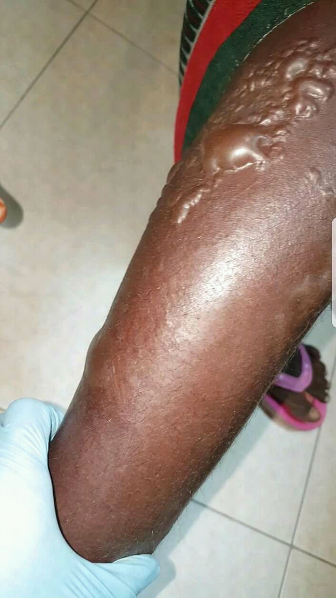
Erysipelas, cellulitis, and the thing that is neither
Erysipelas
Upper dermis and lymphaticsSharply demarcated, raised, brightly erythematous, warm, with a border you can feel with a fingertip because the involved tissue is edematous and elevated above the adjacent skin. Onset is abrupt, often with fever and rigors preceding the visible change. Face and lower leg are the classic sites; peau d’orange texture and superficial bullae are common.
Cellulitis
Deep dermis and subcutisDeeper, so the erythema fades into normal skin without a palpable edge, the color is duskier, and induration is more diffuse. Systemic features are more variable. Non-purulent cellulitis is predominantly streptococcal; cellulitis surrounding an abscess or draining focus is predominantly staphylococcal.
Treat the portal of entry, not only the leg. Interdigital tinea, fissuring and lymphedema are the reason cellulitis recurs, and treating interdigital tinea and controlling edema with compression address the causes of recurrence in a way no antibiotic choice for the acute episode does. For patients with repeated episodes despite that, prophylactic penicillin V or erythromycin reduces recurrence while it is being taken, with the benefit waning after it stops.

Cellulitis and pseudocellulitis. This is the single most common error generating a dermatology consult. A frequently cited figure is that around 30 percent of patients admitted for presumed lower-extremity cellulitis have something else: stasis dermatitis, lipodermatosclerosis, allergic or irritant contact dermatitis, gout, deep vein thrombosis, erythema nodosum or another panniculitis, lymphedema, Wells syndrome, or a drug eruption. Bilateral lower-leg cellulitis is almost never cellulitis — bacteria do not arrive symmetrically. Other flags for a mimic are a chronic or fluctuating course, itch rather than pain, epidermal change such as scale or vesiculation, absent fever and normal white count, and no response after two or three days of an appropriate beta-lactam. Decision aids exist, most familiarly the ALT-70 score built on asymmetry, leukocytosis, tachycardia and age, but they support judgment rather than replace it. Dermatology consultation for suspected cellulitis has been shown to reduce unnecessary antibiotic use and unnecessary admission, which is a large part of why this section exists.
Do not resolve diagnostic uncertainty in cellulitis by ordering more microbiology. Surface swabs of intact skin grow colonizers, needle aspiration and punch biopsy for culture have modest yield even in expert hands, and blood cultures are positive in only a small minority of uncomplicated cases. A negative result does not exclude infection and a positive one is frequently a contaminant, so a low-yield test ordered into genuine uncertainty tends to mislead in both directions. Blood cultures earn their place in the recognized carve-outs: immunocompromise, neutropenia, malignancy on chemotherapy, immersion injury, and animal bites. Otherwise, reassess the diagnosis rather than the culture.
Abscess: drainage is the treatment
Incision and drainage cures most cutaneous abscesses. Antibiotics without drainage do not, because no agent reliably penetrates an avascular purulent cavity at bactericidal concentration. Open it, break loculations, and send the pus.
Adjunctive systemic therapy after drainage produces a modest but real improvement in cure rates in randomized trials of small uncomplicated abscesses, and it is conventionally added when any of the following are present:
- Systemic inflammatory response or fever
- Surrounding cellulitis, phlebitis or lymphangitis
- Immunosuppression, poorly controlled diabetes, or extremes of age
- High-risk anatomy: face, hand, genitalia, or overlying an indwelling device or prosthesis
- Multiple abscesses, or failure of drainage alone at reassessment
Choose an agent with MRSA activity while awaiting culture where local prevalence justifies it, then narrow. The susceptibility report from a properly collected pus specimen is one of the few pieces of microbiology in dermatology that reliably changes management.
If the isolate is erythromycin-resistant but clindamycin-susceptible, look for a comment about the D-test. Erythromycin and clindamycin disks are placed adjacent to each other; flattening of the clindamycin inhibition zone on the side facing erythromycin produces a D shape and indicates inducible erm-mediated resistance. Clindamycin should then be reported and treated as resistant, because resistant subpopulations will be selected during therapy. Most laboratories now perform this reflexively, but confirm rather than assume it.
Necrotizing soft tissue infection: the can’t-miss
Necrotizing infection is a surgical diagnosis. Imaging and scoring systems can support it and can never exclude it, and every hour spent obtaining them while the patient deteriorates is an hour of fascial destruction. If the question has been seriously raised, the correct next action is a surgical consultation for exploration.
The findings that should raise it: pain out of proportion to visible signs, progression measurable in hours rather than days, systemic toxicity disproportionate to the skin, crepitus, hemorrhagic or violaceous bullae, dusky or gray discoloration, woody induration extending beyond the erythema, and anesthesia of the overlying skin from destruction of cutaneous nerves. Early on, the skin can look deceptively unremarkable over necrotic fascia, which is exactly why the examination understates the disease.
Recognized patterns are polymicrobial infection mixing aerobes and anaerobes, typically in diabetes or in the perineum; monomicrobial group A streptococcal infection, sometimes in previously healthy patients after minor trauma; and clostridial or marine Vibrio disease.
Empiric therapy is broad, covering gram-positives including MRSA, gram-negatives and anaerobes, and conventionally includes a protein synthesis inhibitor such as clindamycin or linezolid whenever group A streptococcal or clostridial infection is possible. The rationale is toxin suppression: ribosomal inhibitors shut down exotoxin production independently of bacterial growth phase, whereas cell-wall agents are less effective at the very high inoculum found in necrotic tissue. Rising clindamycin resistance in group A streptococci in some regions is the main argument for linezolid. Intravenous immunoglobulin is used at some centers for streptococcal toxic shock; the evidence remains contested and practice varies by institution. The definitive specimen is deep tissue taken at debridement, sent for Gram stain with aerobic and anaerobic culture. A wound surface swab has no role.
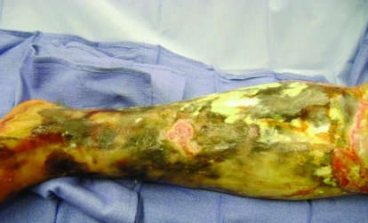
A reassuring laboratory risk score does not exclude necrotizing infection. The LRINEC score and its relatives were derived to raise suspicion, and their sensitivity in prospective use has been disappointing enough that a low score in a patient who looks like this should be discarded rather than trusted. The same holds for computed tomography without gas: absence of fascial gas is unremarkable in streptococcal type II disease, where gas is not expected. Nothing in the laboratory or the scanner outranks the operative finding of gray, friable fascia that separates without resistance.
When the skin is the readout for a toxin
Staphylococcal scalded skin syndrome
Exfoliative toxin, hematogenousThe same exfoliative toxins A and B as bullous impetigo, but disseminated from a distant focus rather than acting locally. Cleavage of desmoglein 1 gives a subcorneal split, so the skin sheets off in thin, moist, superficial layers with a positive Nikolsky sign, periorificial crusting and radial perioral fissures. Mostly young children, and adults with renal impairment or immunosuppression, in whom toxin clearance is reduced.
Toxic shock syndrome
Superantigen, T-cell stormDiffuse macular erythroderma resembling sunburn, fever, hypotension, multiorgan involvement, and desquamation of palms and soles one to two weeks later. Staphylococcal disease is driven by toxic shock syndrome toxin-1 and related enterotoxins; streptococcal disease by streptococcal pyrogenic exotoxins, usually alongside an invasive soft tissue infection.
Blood cultures are usually negative in staphylococcal toxic shock, because the organism sits at a mucosal or wound focus and only the toxin disseminates. Culture the focus. In streptococcal toxic shock, blood cultures are usually positive, since it accompanies genuine invasive infection. Same syndrome, opposite microbiology.
Scarlet fever
Group A streptococcusPyrogenic exotoxin from a pharyngeal or, less often, cutaneous group A streptococcal infection. Fine sandpaper-textured erythema, accentuation in flexures with linear petechiae along the antecubital and axillary folds, circumoral pallor, strawberry tongue, and later desquamation of hands and feet.
Staphylococcal scalded skin syndrome and toxic epidermal necrolysis. This is a standard board and consult question, and the answer lives in the cleavage plane. In SSSS, exfoliative toxin cleaves desmoglein 1 and the split is intraepidermal, subcorneal — the epidermis is viable, healing is rapid and scarless, and mucosa is spared. In TEN, the split is subepidermal at the dermal-epidermal junction with full-thickness epidermal necrosis, mucosal involvement at two or more sites is characteristic, and a culprit drug is nearly always identifiable. The fastest way to settle it is a frozen section of the sloughed blister roof, which can be reported within the hour: stratum corneum and granular layer only means SSSS, full-thickness epidermis with necrotic keratinocytes means TEN. The consequences of confusing them run in both directions — anti-staphylococcal therapy and supportive care versus drug withdrawal and burn-unit-level management.
Pseudomonas aeruginosa in the skin
A non-lactose-fermenting, oxidase-positive gram-negative rod that thrives in moisture and produces pigments you can see at the bedside. It grows readily at 42 degrees Celsius, which the laboratory uses to separate it from other pseudomonads, and it has a grape-like or corn-tortilla odor on the plate. Its resistance is a combination of intrinsic mechanisms and acquired ones, so susceptibility testing is mandatory and empiric choices should never be assumed to hold.
The benign end
Moisture, occlusion, colonizationHot tub folliculitis. Follicular papulopustules appearing roughly one to two days after immersion, concentrated where a swimsuit held water against skin and sparing the head and neck. Self-limited over one to two weeks; treat the tub, not usually the patient.
Green nail syndrome. Green-black discoloration of an onycholytic nail from pyocyanin (blue-green) and pyoverdine (yellow-green, fluorescent) diffusing into the plate. The pigment is a marker of colonization of the subungual space, not invasion. Management is drying and mechanical: trim the onycholytic nail, eliminate wet-work and occlusion, and apply a topical acidifying or antipseudomonal agent. Systemic therapy is rarely needed.
Toe web intertrigo. Macerated, malodorous, often greenish interdigital spaces, frequently superimposed on a dermatophyte infection that opened the door. Treat both.
The dangerous end
Invasion and bacteremiaOtitis externa, and its necrotizing form in older diabetic patients, which is a skull base osteomyelitis presenting as ear pain and granulation tissue at the bony-cartilaginous junction. It requires imaging and prolonged systemic antipseudomonal therapy, not ear drops.
Ecthyma gangrenosum. A painless erythematous macule that evolves within a day or two into a hemorrhagic bulla and then a necrotic ulcer with a gunmetal or black eschar surrounded by an erythematous halo. Anogenital region and axillae are favored. It reflects bacterial invasion of dermal vessel walls during bacteremia, characteristically in a neutropenic host, and the biopsy shows organisms in vessel walls with strikingly little neutrophilic response.
Ecthyma gangrenosum is a bacteremia until proven otherwise. Draw blood cultures, biopsy the lesion with half sent for culture and half for histology, request a Gram stain on the tissue for an answer within the hour, and start systemic antipseudomonal therapy immediately rather than waiting.
Ecthyma gangrenosum is a morphologic pattern, not an organism. P. aeruginosa is the most familiar cause, but other gram-negative rods, Aeromonas, S. aureus, Candida, and angioinvasive molds such as Fusarium and the mucormycetes produce an indistinguishable lesion in a neutropenic patient. Anchoring on Pseudomonas and covering only for it is how angioinvasive fungal disease gets missed. Biopsy for culture and histology, and tell the laboratory the patient is neutropenic so fungal stains and cultures are set up alongside bacterial ones.
The coryneform triad: nearly unique to dermatology
Three superficial overgrowths of coryneform bacteria that share a habitat of warmth, occlusion and hyperhidrosis, frequently coexist in the same patient, and are routinely misdiagnosed as fungal and treated with antifungals for months. None of them is normally diagnosed by culture; the diagnosis is made at the bedside with a Wood lamp and a clinical eye.
| Entity | Organism | Where and what | Bedside test | Principle of treatment |
|---|---|---|---|---|
| Erythrasma | Corynebacterium minutissimum | Well-demarcated red-brown finely scaly patches in groin, axillae, inframammary folds and toe webs | Wood lamp coral-red fluorescence from bacterial coproporphyrin III | Topical azole, fusidic acid, or a topical or oral macrolide or related agent; moisture control |
| Pitted keratolysis | Kytococcus sedentarius and other keratinase producers | Crateriform pits coalescing on the pressure-bearing plantar surface, with striking malodor | Inspect the sole after soaking; pits become obvious when hydrated | Aluminum chloride or another antiperspirant, topical clindamycin, erythromycin or benzoyl peroxide, and footwear change |
| Trichomycosis axillaris | Corynebacterium species | Yellow, occasionally red or black, concretions adherent to the outside of axillary or pubic hair shafts | Examine the shaft: the material is stuck to the hair, not invading it | Shave or clip, topical antibacterial, antiperspirant |
Two ways the Wood lamp lies to you in erythrasma. Coproporphyrin III is water-soluble, so if the patient has washed or if the area has been recently cleaned with an alcohol swab, the coral-red fluorescence is gone and you get a false negative — examine before anything touches the skin. Conversely, textile fibers, topical preparations and some other bacteria fluoresce, so fluorescence in an unusual distribution is not automatically erythrasma. A negative Wood lamp examination in a compatible intertriginous eruption does not exclude the diagnosis.
Erythrasma, tinea cruris, candidal intertrigo and inverse psoriasis. All four occupy the same folds. Erythrasma is uniformly red-brown with fine wrinkled scale and no active edge, and fluoresces coral-red. Tinea has a raised advancing scaly border with central clearing and shows hyphae on potassium hydroxide preparation. Candidal intertrigo is beefy red, macerated at the fold, with satellite pustules. Inverse psoriasis is glazed, sharply marginated, without scale in the depth of the fold, and usually has evidence elsewhere. A potassium hydroxide preparation plus a Wood lamp examination separates them in under five minutes and prevents the very common outcome of an antifungal prescribed indefinitely for a bacterial overgrowth.
Cutibacterium acnes: commensal, driver, and prosthetic pathogen
In acne
Not a simple infectionAn anaerobic, aerotolerant, pleomorphic gram-positive rod resident in the pilosebaceous unit. Its contribution to acne is not overgrowth in the ordinary sense; it is strain- and phylotype-dependent, mediated through biofilm, innate immune activation via Toll-like receptor 2, inflammasome-driven interleukin-1 beta release, and modification of sebum lipids in a follicle already altered by hyperkeratinization and androgen-driven sebum production. Total organism counts correlate poorly with disease severity.
That biology explains why antibiotics help partly through anti-inflammatory rather than antibacterial effects, and why they are an adjunct rather than the foundation of treatment.
Stewardship principles that hold across guidelines: never use a topical antibiotic as monotherapy; always pair antibiotics with benzoyl peroxide, which reduces the emergence of resistant strains; limit oral antibiotic courses to the shortest effective duration, conventionally a few months, with a defined exit to a retinoid-based maintenance regimen. Macrolide and clindamycin resistance is now widespread, and tetracycline-class resistance is rising. Suspect gram-negative folliculitis when acne deteriorates into monomorphous pustules or nodules after months of oral tetracyclines: swab the pustules and the nares for Enterobacterales or Pseudomonas, and recognize that the treatment is isotretinoin, not a further antibiotic course.
In device and implant infection
The prolonged-culture organismA separate and clinically important role. C. acnes causes indolent infection of shoulder arthroplasties, spinal hardware, cerebrospinal fluid shunts, breast implants and cardiac devices. Because the shoulder and upper back are richly sebaceous, it is disproportionately a shoulder pathogen. The presentation is pain, stiffness or radiographic loosening months to years after surgery, usually without fever and often with unremarkable inflammatory markers.
A standard five-day culture will miss C. acnes and the result will come back sterile. You must ask the laboratory in advance to hold anaerobic cultures for a prolonged period, commonly fourteen days, because they will not do it by default. The mirror-image error is treating a single positive as proof of infection: C. acnes is a skin commensal and a frequent contaminant, so interpretation depends on multiple independent specimens growing the organism concordantly. Both failure modes come from the same fact — it is a normal inhabitant of the tissue you had to cut through to get the specimen.
Bites, animals and water: the exposure history that cracks the case
These organisms are recognized from the history, not from the morphology, and several of them are fastidious enough that the laboratory needs to be told what you suspect. Writing “cellulitis” on the requisition when you mean “cat bite to the hand” or “wound exposed to warm seawater” throws away the information that determines how the specimen is handled.
| Exposure | Organism | Clinical signature | Laboratory and treatment notes |
|---|---|---|---|
| Cat bite, dog bite | Pasteurella multocida | Cellulitis developing strikingly fast, often within twelve to twenty-four hours, disproportionate to the puncture; deep hand punctures seed tendon sheaths and joints | Gram-negative coccobacillus that grows on blood and chocolate agar but not on MacConkey. Aminopenicillin with a beta-lactamase inhibitor is conventional; first-generation cephalosporins, antistaphylococcal penicillins, clindamycin and macrolides have unreliable activity |
| Dog bite or even a lick, in an asplenic, cirrhotic or immunosuppressed host | Capnocytophaga canimorsus | Fulminant sepsis, purpura fulminans, symmetric peripheral gangrene, sometimes from a trivial wound | Fastidious, capnophilic, slow-growing thin gram-negative rod. It may be visible on a buffy coat smear before it grows. Ask for extended incubation and say why |
| Clenched-fist injury over the knuckles | Eikenella corrodens with oral flora | The “fight bite”: a small wound over a metacarpophalangeal joint that has already inoculated the joint capsule when the fist opens | Capnophilic, pits or corrodes agar, bleach-like odor. Intrinsically resistant to clindamycin and antistaphylococcal penicillins. These injuries need hand surgery evaluation, not just antibiotics. And for every bite in this table, check tetanus immunization status and assess rabies risk for any mammalian bite before the antibiotic choice absorbs all the attention |
| Fish, shellfish, poultry, swine; butchers, fishmongers, veterinarians | Erysipelothrix rhusiopathiae | Erysipeloid: a violaceous, sharply defined, burning rather than tender plaque on a finger or hand, spreading centrifugally with central fading, usually without fever or suppuration | Gram-positive rod, hydrogen sulfide positive in triple sugar iron agar, and intrinsically resistant to vancomycin — a genuine trap when vancomycin is the reflex gram-positive drug. Penicillin class is the treatment. Surface swabs fail; the organism sits deep at the advancing edge, so send a full-thickness biopsy from the leading border |
| Fresh or brackish water, water-related trauma, medicinal leeches | Aeromonas hydrophila | Cellulitis that can progress to necrotizing infection and bacteremia, particularly in hepatic disease or malignancy | Oxidase-positive gram-negative rod. Commonly resistant to ampicillin; fluoroquinolone or later-generation cephalosporin classes are used pending susceptibilities |
| Warm salt or brackish water on a wound, or raw shellfish ingestion, in a cirrhotic or iron-overloaded patient | Vibrio vulnificus | Hemorrhagic bullae on an extremity with rapidly progressive necrotizing infection and septic shock; mortality is high and the window is hours | Halophilic; tell the laboratory about the salt-water exposure so appropriate media are set up. Conventional therapy pairs a tetracycline-class agent with a third-generation cephalosporin, alongside urgent surgical debridement. The organism is iron-avid, which is why liver disease and iron overload are the risk factors |
| Aquarium, fish tank, filleting injury | Mycobacterium marinum | Indolent nodule or sporotrichoid chain on the hand, weeks after the injury | Requires mycobacterial culture incubated at 30 °C, not 37, and it will be missed if the laboratory is not told to set it up that way |
Spirochetes, rickettsiae and vector-borne disease with a cutaneous signature
Erythema migrans is a clinical diagnosis. In a patient with plausible exposure in an endemic area, an expanding erythematous patch at a plausible tick-attachment site is sufficient to treat, and serology should neither be ordered to confirm it nor waited upon.
The reason is kinetics. Antibody responses to Borrelia burgdorferi take weeks to develop, so standard two-tier serologic testing — an initial immunoassay followed by either an immunoblot or a second immunoassay — is insensitive in early localized disease. A negative result at the time of the rash is expected and means nothing. Serology also remains positive long after successful treatment, so it cannot be used to judge cure.
Morphology worth knowing: the lesion expands over days, is typically warm but not especially painful, and is often mildly pruritic or entirely asymptomatic. The classic central clearing “bull’s-eye” is the minority appearance — uniform, homogeneous erythema is at least as common and probably more so. Favored sites are the axilla, groin, popliteal fossa, waistband, and in children the hairline and neck. Multiple lesions indicate early disseminated disease.
Culture is not part of routine practice; Borrelia requires specialized medium and prolonged incubation. Polymerase chain reaction on a skin biopsy is available but adds little to a confident clinical diagnosis. Doxycycline class is first-line in adults, with amoxicillin and cefuroxime as alternatives.
In the southeastern and south-central United States, an erythema-migrans-like lesion after a lone star tick bite may be southern tick-associated rash illness, in which Lyme serology stays negative and the etiology remains undefined. Knowing the local tick fauna and the local Lyme incidence is part of the diagnosis.
Treponema pallidum cannot be grown on artificial media. Everything in the diagnostic pathway follows from that: direct visualization, molecular detection, tissue stains, or serology.
Direct methods. Darkfield microscopy of serous exudate expressed from a moist lesion — a chancre, condyloma lata or mucous patch — can show motile spirochetes, but requires immediate examination and an experienced observer, and is not valid on oral or rectal lesions because commensal treponemes are morphologically indistinguishable. Direct fluorescent antibody and treponemal PCR are offered by some reference and public health laboratories. On biopsy, the histology is a plasma-cell-rich lichenoid or psoriasiform infiltrate with endothelial swelling; immunohistochemistry for T. pallidum is considerably more sensitive and specific than Warthin-Starry or Steiner silver stains and is the preferred confirmatory stain.
Serology comes in pairs. Treponemal tests such as particle agglutination, enzyme or chemiluminescence immunoassays and fluorescent antibody absorption detect antibody to treponemal antigens and generally remain reactive for life, so they establish exposure but not activity. Non-treponemal tests, the rapid plasma reagin and VDRL, are quantitative, track disease activity, and are what you follow after treatment; a fourfold (two-dilution) change is the conventional threshold for significance, and serial titers should be run on the same assay and ideally the same laboratory. The traditional algorithm screens with a non-treponemal test and confirms with a treponemal one; the reverse-sequence algorithm screens with an automated treponemal immunoassay, reflexes to a non-treponemal test, and resolves discordance with a second, different treponemal test.
Clinical. Primary disease is the painless, indurated, clean-based chancre that heals without treatment. Secondary disease is the great mimic: a papulosquamous eruption characteristically involving palms and soles, condyloma lata in moist intertriginous sites, mucous patches, split papules at the oral commissures, generalized lymphadenopathy, and non-scarring “moth-eaten” alopecia. Test every patient for HIV, since syphilis is both a marker of and a cofactor for transmission. Warn about the Jarisch-Herxheimer reaction in the hours after treatment so it is not mistaken for drug allergy.
Rocky Mountain spotted fever. Fever, headache and myalgia come first; the rash usually appears a few days later and a substantial minority of patients never develop one at all. When it appears it begins on the wrists and ankles and spreads centripetally toward the trunk, involving palms and soles, evolving from blanching macules to petechiae as the underlying small-vessel infection progresses. Despite the name, incidence is concentrated in the south-central and southeastern United States.
The critical point is diagnostic timing. Serology by indirect immunofluorescence is retrospective: acute-phase antibody is usually absent, and confirmation depends on seroconversion in a convalescent sample weeks later. Whole-blood PCR has limited sensitivity because rickettsiae are largely confined to endothelium rather than free in plasma; PCR or immunohistochemistry on a biopsy of a petechial lesion performs better and is one of the few tests that can confirm during the acute illness, though it is a reference laboratory service in most places.
Start doxycycline on clinical suspicion and do not wait for any test. Delayed treatment is strongly associated with mortality, and doxycycline is the drug of choice at every age, including young children; the historical concern about dental staining has been revised and should not drive management in a potentially fatal illness. Sulfonamides may worsen rickettsial disease and should be avoided when it is under consideration.
An inoculation eschar, the tache noire, points away from Rickettsia rickettsii and toward Rickettsia parkeri, African tick-bite fever or scrub typhus, which are generally milder. Presence of an eschar is a useful discriminator precisely because RMSF classically lacks one.
Cat scratch disease. Bartonella henselae inoculated by a kitten scratch or bite produces a small papule or pustule at the site within days, followed one to three weeks later by tender regional lymphadenopathy that dominates the picture. Parinaud oculoglandular syndrome is the conjunctival variant. Diagnosis rests on serology or PCR of tissue or node aspirate; culture is difficult and slow, requiring enriched media and prolonged incubation over weeks, so it is not a practical front-line test.
Bacillary angiomatosis. Caused by B. henselae or the louse-borne B. quintana, and seen in advanced HIV infection and other profound immunosuppression. Friable red to violaceous vascular papules and nodules that bleed readily, sometimes with a collarette, arising anywhere on the skin, with visceral counterparts including peliosis hepatis. It is exquisitely responsive to a macrolide or doxycycline-class agent given for a prolonged course, which is exactly why misdiagnosis is costly.
Bacillary angiomatosis and Kaposi sarcoma. Both present as violaceous vascular papules and nodules in advanced HIV, and they are not reliably separable clinically. The answer is histologic. Bacillary angiomatosis shows a lobular vascular proliferation with plump epithelioid endothelial cells, a neutrophilic infiltrate with leukocytoclastic debris, and amphophilic clumps of bacilli demonstrable on Warthin-Starry silver stain. Kaposi sarcoma shows spindle cells, slit-like vascular spaces with extravasated erythrocytes, and is positive for HHV-8 latency-associated nuclear antigen by immunohistochemistry. One is cured with antibiotics; the other is not treated with antibiotics at all. Biopsy before you decide.
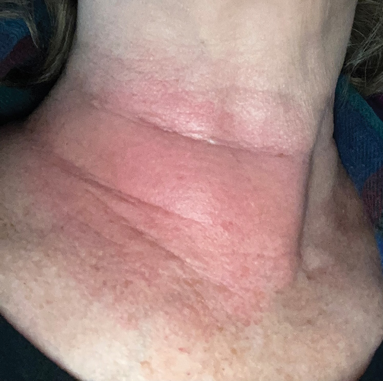
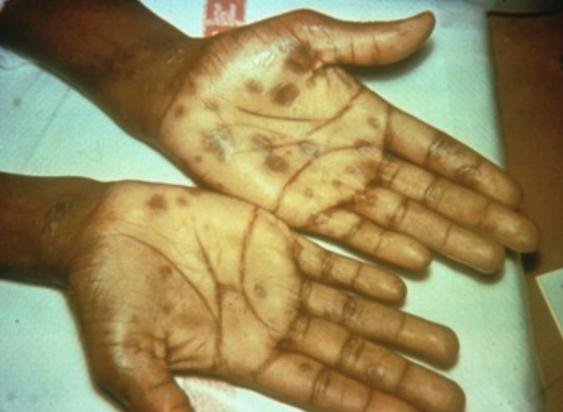
The prozone phenomenon. In florid secondary syphilis, antibody concentration can be so high that it saturates both antigen and antibody binding sites and prevents lattice formation, so the undiluted rapid plasma reagin reads negative or only weakly reactive in the patient with the most spirochetes. The laboratory resolves it by diluting the serum, but only if it thinks to. If your patient has a palmoplantar eruption, condyloma lata or moth-eaten alopecia and the RPR comes back non-reactive, telephone the laboratory, state that you suspect secondary syphilis, and ask for the specimen to be diluted and retested. The same call is worth making when the RPR is reactive at an implausibly low titer.
Meningococcemia and purpura fulminans
Retiform purpura with a rapidly deteriorating patient is a dermatologic emergency and, occasionally, dermatology is the service that recognizes it first. Neisseria meningitidis produces petechiae that coalesce into angulated purpuric plaques with central necrosis, sometimes progressing within hours to purpura fulminans with disseminated intravascular coagulation, acral gangrene and adrenal hemorrhage.
- Antibiotics precede diagnostics. Do not delay therapy for lumbar puncture, imaging, or a biopsy.
- Blood cultures before antibiotics only if that does not delay them. After antibiotics, culture sensitivity falls sharply, but nucleic acid amplification testing on blood or cerebrospinal fluid retains much of its yield, which is the single most useful modern point about this diagnosis.
- The skin biopsy is a real contribution. A punch biopsy of a purpuric lesion sent for Gram stain, culture and PCR can establish the organism even after antibiotics have sterilized the blood. Split the specimen: half in formalin for histology, half in a sterile container for microbiology.
- Screen survivors for terminal complement deficiency (C5 through C9 and properdin), and remember that patients on terminal complement inhibitors carry a markedly increased risk of invasive meningococcal disease.
- Chronic meningococcemia is the version that gets missed: weeks of intermittent fever, migratory arthralgia and a sparse polymorphic eruption that reads as vasculitis or adult-onset Still disease until someone draws a blood culture during a febrile episode.
Retiform purpura means vaso-occlusion, and the differential is split between infectious and non-infectious causes that look identical at the bedside. Infectious: meningococcus, pneumococcus (especially in asplenia), S. aureus, group A streptococcus, Capnocytophaga, and angioinvasive fungi. Non-infectious: protein C or S deficiency, warfarin-induced skin necrosis, heparin-induced thrombocytopenia, antiphospholipid syndrome, calciphylaxis, cryoglobulinemia, and disseminated intravascular coagulation from any cause. Because you cannot tell them apart by morphology, every retiform purpura biopsy should be split between histology and tissue culture. That habit is one of the highest-yield things a dermatology resident can carry into a consult.
Talking to the microbiology laboratory
What should I write on the requisition that I probably am not writing?
The exposure, the host, the anatomy, and the question. “Cellulitis, right leg” tells the laboratory to set up a routine aerobic culture and nothing else. “Necrotic ulcer, neutropenic patient, on antibiotics, rule out angioinvasive infection” tells them to add fungal stains, extend incubation and call you with the Gram stain. Specifically flag: neutropenia or other immunosuppression, salt-water or fresh-water exposure, animal or human bite, foreign body or prosthesis, recent antibiotics, and travel. Laboratories cannot infer any of this from a specimen container, and several of the organisms in this section will simply not be recovered unless somebody chooses non-default conditions.
Which organisms in dermatology need something other than a standard five-day aerobic culture?
Enough of them that it is worth memorizing the list.
- Cutibacterium acnes in a suspected device infection: anaerobic, held approximately fourteen days, on multiple tissue specimens.
- Bartonella: prolonged incubation on enriched media over weeks with poor yield — use serology or PCR instead.
- Capnocytophaga and Eikenella: capnophilic, requiring increased carbon dioxide and often extended incubation.
- Mycobacterium marinum: mycobacterial media incubated at 30 degrees Celsius rather than 37.
- Vibrio species: halophilic, best recovered when the laboratory knows to consider selective media.
- Treponema pallidum, Rickettsia and Borrelia: not recovered by any routine culture, so the diagnostic pathway is serologic, molecular or histologic from the outset.
Why did the laboratory not report a susceptibility for the organism it grew?
Usually because susceptibility is predictable and testing would add nothing — S. pyogenes and penicillin being the standard example. Sometimes because the organism has no established interpretive criteria for that agent, since breakpoints are set by standards bodies such as CLSI on an organism-by-agent basis and not every combination has them. Sometimes because the isolate was judged to be normal flora or a contaminant and was not worked up further. And sometimes because the agent you want is simply not on the routine panel: mupirocin for decolonization failure is the common dermatologic example. In each case the fix is the same, which is to telephone and ask, since supplementary testing on a stored isolate is often possible for a few days after the report.
How do I decide whether a growth is a pathogen or a colonizer?
Weigh four things. First, the specimen: material from a closed space such as aspirated pus, a deep tissue sample or blood carries far more weight than anything swabbed from an open surface. Second, the Gram stain: organisms seen among neutrophils in the direct smear, in a morphology matching what grew, argue strongly for a pathogen, whereas squamous epithelial cells argue for surface contamination. Third, quantity and consistency: heavy pure growth, or the same organism from several independent specimens, is meaningful in a way that scant mixed growth is not. Fourth, biological plausibility: coagulase-negative staphylococci and C. acnes from a superficial swab are almost always passengers, but the same organisms from multiple periprosthetic tissue samples in a painful shoulder replacement are the diagnosis.
What is genuinely worth culturing in routine outpatient dermatology?
A short list, and being disciplined about it improves the signal from the ones you do send. Worth culturing: any drainable abscess or furuncle, especially with recurrence or treatment failure; impetigo that has failed topical therapy or is occurring in a high-MRSA or outbreak setting; ecthyma and other ulcers; any lesion in a neutropenic or transplant patient; suspected device or implant infection; wounds with an animal, human or water exposure; and any retiform purpura or necrotic eschar, split with histology. Generally not worth culturing: intact uncomplicated cellulitis, erythrasma, pitted keratolysis, trichomycosis axillaris, and acne, all four of which are clinical diagnoses where a culture result will describe the resident flora and tempt somebody into treating it.
Mycobacteria and the skin
Indolent, granulomatous, and easily missed
Cutaneous mycobacterial disease is a small domain with an outsized failure rate, and almost all of the failure happens in the specimen, not in the clinic. You will usually be right about the morphology. What decides whether the diagnosis is ever made is whether the microbiology laboratory was told what you were thinking — because mycobacteria are the one group of organisms where the default laboratory workflow is actively wrong for them. This block is written from the laboratory backwards.
Why mycobacteria break the standard workflow
They are slow
Weeks, not daysRoutine bacteriology plates are read at 24 to 48 hours and discarded within a few days. Slowly growing mycobacteria need weeks in dedicated media — solid egg-based or agar-based media plus a liquid broth system — and the broth is what recovers most isolates. A specimen sent as a generic “wound culture” is thrown away long before a mycobacterium would ever have declared itself.
They are fussy about temperature
The single most actionable factThe skin-tropic mycobacteria are skin-tropic precisely because they prefer cooler-than-core temperatures. Incubators default to roughly 35–37 °C. If you do not ask for a second, cooler incubation, several of the organisms on your differential simply will not grow — and the report will read “no growth,” which you will misread as “not an infection.”
They look like everything else
Granuloma is a pattern, not a diagnosisHistology gives you granulomatous inflammation, which is shared with deep fungi, sarcoidosis, foreign body reaction, and granulomatous rosacea. Acid-fast stains on tissue are specific but insensitive in paucibacillary disease, so a negative acid-fast stain in a lupus vulgaris plaque or a tuberculoid leprosy lesion is expected and excludes nothing.
Every other organism in dermatology is found by a laboratory doing its normal job. Mycobacteria are found only when the laboratory does something extra, and the laboratory only does something extra when you ask. The request form is part of the diagnostic test. Write the suspicion and the exposure on it.
Mycobacterium marinum: the aquarium granuloma
The most commonly encountered non-tuberculous mycobacterium in dermatology practice, and the one where a single sentence on the requisition changes the result.
The clinical picture
History does the workAn indolent violaceous papulonodule or verrucous plaque on the dorsal hand, finger, or forearm, appearing weeks after minor trauma. It may ulcerate, and in roughly a quarter to a third of reported cases it ascends the forearm as a chain of nodules along the lymphatics — the sporotrichoid or lymphocutaneous pattern.
The exposure is the diagnosis: home aquarium maintenance, tropical fish handling, cleaning a tank without gloves, occupational fish or shellfish processing, or brackish and salt water. The historical name “swimming pool granuloma” predates routine pool chlorination and you will rarely see that source now.
Patients do not volunteer aquariums. They volunteer gardening and cats. You have to name the fish tank.
The laboratory picture
Where cases are lostM. marinum grows optimally near 30 °C and grows poorly or not at all at standard 37 °C incubation. It is a photochromogen: colonies develop a yellow pigment after light exposure. It is a slowly growing species, so plates need weeks, not days.
Treatment uses combinations drawn from the macrolides, tetracyclines, rifamycins, ethambutol, and sulfonamides, continued for months and typically for several weeks beyond clinical resolution. Following CLSI guidance, many laboratories do not routinely perform susceptibility testing on M. marinum because its pattern is predictable, reserving testing for patients who fail prolonged therapy.
Interferon-gamma release assays (IGRAs) use the RD1-region antigens ESAT-6 and CFP-10, which most non-tuberculous mycobacteria lack — but M. marinum, M. kansasii, and M. szulgai do carry them. A positive IGRA in a patient with a fish-tank nodule is therefore entirely compatible with M. marinum and is not evidence of tuberculosis. The older tuberculin skin test cross-reacts even more broadly.
| Sporotrichoid (lymphocutaneous) nodules | Exposure that cracks it | What the laboratory needs | Trap |
|---|---|---|---|
| Sporothrix schenckii complex | Rose thorns, sphagnum moss, hay, timber; zoonotic feline transmission in parts of Brazil | Tissue for fungal culture; thermally dimorphic — mold at ~25–30 °C, yeast at 37 °C | Organisms are sparse in tissue; a negative GMS does not exclude it, culture is the standard |
| Nocardia brasiliensis | Soil, plant or thorn trauma; the Nocardia species most associated with lymphocutaneous disease | Say “Nocardia” out loud — branching filamentous gram-positive rods, partially acid-fast on modified stain, needs extended plate hold | Harsh decontamination used for mycobacterial culture can kill it; routine plates are discarded before it appears |
| Mycobacterium marinum | Aquarium, fish handling, brackish or salt water | Mycobacterial culture with an added 30 °C incubation and a prolonged hold | Grows poorly at 37 °C — a single standard incubator yields a false “no growth” |
| Leishmania species | Sand fly bite; travel or residence in endemic Old or New World regions | Tissue or lesion scraping for Giemsa-stained smear (amastigotes), specialized culture medium, and molecular testing with species-level identification | Species identification changes management, so send to a laboratory that can speciate rather than settling for “amastigotes seen” |
| Francisella tularensis (ulceroglandular tularemia) | Rabbit or hare handling, tick or deer fly bite, lawn mowing over an infected carcass | Warn the laboratory before sending. Fastidious, cysteine-requiring; serology and molecular testing are often used instead of culture | A genuine laboratory biosafety hazard with documented laboratory-acquired infections — an unannounced culture puts technologists at risk |
Sporotrichoid spread is a pattern, not an organism. Do not anchor on Sporothrix because the nodules ascend. Order the workup that covers the whole list in one biopsy: histology with acid-fast, Fite, PAS and GMS stains, plus fresh tissue split for bacterial, fungal, and mycobacterial culture — and state the exposure so the laboratory sets up the right temperatures and holds.
Leprosy (Hansen disease)
Mycobacterium leprae, and the more recently characterized M. lepromatosis, are obligate intracellular organisms that cannot be grown on any artificial medium. There is no culture to order. The diagnosis is clinical, histopathologic, and bacteriologic by smear — which makes it one of the few infections where the dermatologist, not the microbiologist, holds the decisive test.
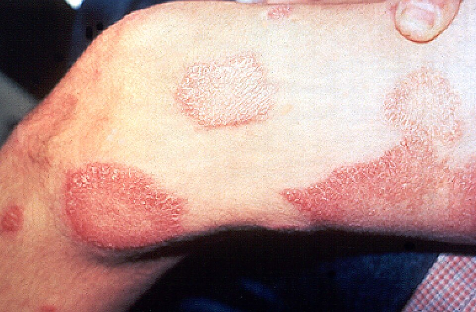
The cardinal signs
WHO diagnostic triadAny one of three findings supports the diagnosis, and the first two are done with your hands in clinic.
- A hypopigmented or erythematous skin lesion with definite loss of sensation.
- A thickened or enlarged peripheral nerve, with sensory loss or weakness in its distribution.
- Acid-fast bacilli demonstrated on slit-skin smear.
Palpate the nerves as part of the exam: ulnar at the medial epicondyle, greater auricular in the neck, common peroneal at the fibular head, posterior tibial behind the medial malleolus, radial cutaneous at the wrist, and the supraorbital nerve. Test light touch and pinprick in the lesion and compare it with adjacent normal skin.
Why the distribution looks the way it does
Temperature againM. leprae favors cooler tissues, which is why disease concentrates in the skin, superficial peripheral nerves, the nasal mucosa, the anterior eye, and the testes, and characteristically spares warmer sites such as the axilla, groin, perineum, scalp vertex, and the midline of the back. If a proposed leprosy lesion sits squarely in a warm zone, reconsider.
The organism also divides extraordinarily slowly — a doubling time on the order of two weeks — which explains incubation periods measured in years and the deliberately long treatment courses. Recognized zoonotic reservoirs include the nine-banded armadillo in the southern United States and red squirrels in the British Isles.
A vigorous cell-mediated (Th1-polarized) response contains the organism at the cost of destroying the nerve it lives in. Clinically: one or a few sharply demarcated plaques with a raised active border, dry and hairless because adnexal structures are destroyed, and markedly anesthetic. Nerve involvement is asymmetric and often a single large trunk, which can be dramatically thickened.
The paradox worth remembering: the more effective the immune response, the fewer the lesions, the more profound the anesthesia, and the harder the organism is to demonstrate.
Between the poles sit borderline tuberculoid, mid-borderline, and borderline lepromatous disease, described by the Ridley-Jopling classification. Lesion number rises and definition falls as you move toward the lepromatous end; annular plaques with a sharp inner and a sloping outer edge, and “punched-out” inner clearing, are characteristic of the mid-borderline zone.
Borderline states are immunologically unstable, which is exactly why type 1 reactions occur in this part of the spectrum. Separately, the WHO uses a simplified operational classification for treatment purposes based largely on lesion count and smear status — paucibacillary for a small number of lesions with a negative smear, multibacillary otherwise — because Ridley-Jopling classification requires histopathology that is unavailable in many endemic settings.
Poor M. leprae-specific cell-mediated immunity permits unrestricted multiplication. Clinically: numerous, symmetric, poorly-defined macules, papules, and nodules; infiltration of the face producing leonine facies; loss of the lateral eyebrows (madarosis); nasal congestion, epistaxis, and eventual septal collapse; and a glove-and-stocking sensory neuropathy from diffuse small-nerve involvement rather than discrete anesthetic patches.
Diffuse lepromatous leprosy without discrete nodules, particularly as reported from Mexico and Costa Rica, has been associated with M. lepromatosis and with the Lucio phenomenon — a necrotizing vasculopathy producing angulated, retiform infarctive ulcers.
Slit-skin smear. The skin is pinched to bleach it, a small slit is made, the dermis is scraped, and the material is smeared and stained. Sites classically sampled include an active lesion edge plus standard sites such as both earlobes. Two indices are reported: a bacterial index, a logarithmic score of bacillary density, and a morphologic index, the proportion of uniformly solid-staining bacilli, which is taken as an estimate of viability. Availability of skin smears is institution- and region-dependent; in many centers biopsy carries the load.
Biopsy. Take a deep punch or incisional biopsy from the active edge, including subcutis, and request a Fite stain explicitly.
M. leprae is only weakly acid-fast and is readily decolorized by the standard Ziehl-Neelsen method. The Fite (Fite-Faraco) modification uses a gentler decolorization and an oil-containing deparaffinization step to preserve the acid-fastness. If you write “AFB stain,” you may receive a routine acid-fast stain and a falsely negative result. Write “Fite stain, rule out Hansen disease.”
Molecular detection of M. leprae DNA is available through reference and national programs and can help in paucibacillary or histologically ambiguous cases, but access varies by country.
Treatment. The WHO recommends multidrug therapy combining rifampicin, clofazimine, and dapsone. Check glucose-6-phosphate dehydrogenase status before starting dapsone, since haemolysis is dose-related and can be severe, and warn the patient that clofazimine causes reversible red-brown to violaceous skin pigmentation — the commonest reason patients abandon therapy. Regimens are given with the duration determined by classification — shorter for paucibacillary and longer for multibacillary disease. Multidrug therapy exists because dapsone monotherapy generated resistance historically. Leprosy is a notifiable disease in most jurisdictions; in the United States a national Hansen disease program provides expert consultation and supplies therapy, and analogous national programs exist elsewhere.
Reactions. These are immunologic events, not microbiologic failure, and they are the main cause of permanent disability.
Type 1 reactions are treated with systemic corticosteroids, with acute nerve function impairment treated as an emergency because the window to preserve function is short. Erythema nodosum leprosum is managed with corticosteroids and, in appropriate settings, thalidomide — which is highly effective but requires strict pregnancy-prevention controls and is restricted or unavailable in some countries — and higher-dose clofazimine.
A reaction is not treatment failure and is not a drug allergy. Multidrug therapy is continued through the reaction while the reaction itself is treated. Stopping antimycobacterial therapy because the patient got worse on it is the classic error, and it costs nerve function.
Cutaneous tuberculosis and the tuberculids
Split this topic in two before you start: lesions that contain Mycobacterium tuberculosis, and lesions that are a hypersensitivity response to M. tuberculosis sitting somewhere else in the body. They are worked up differently and they are reported differently.
Lupus vulgaris
Paucibacillary, chronic, progressiveThe classic chronic form in a previously sensitized host with moderate to high immunity. A slowly expanding reddish-brown plaque with a soft, atrophic scarring center and an advancing edge; head and neck predominate in European series, buttocks and lower limbs in South Asian series. Diascopy — pressing a glass slide or lens against the lesion — blanches the vascular component and reveals translucent brownish “apple-jelly” nodules.
Long-standing untreated lesions carry a recognized risk of squamous cell carcinoma arising in the scar.
Scrofuloderma
Contiguous spread — higher yieldDirect extension to the skin from an underlying tuberculous focus — most often a cervical lymph node, sometimes bone or joint. A firm subcutaneous nodule softens into a cold abscess, then breaks down into ulcers and sinus tracts with undermined bluish edges, healing with cord-like and puckered scars.
Because the lesion is fed directly by a caseating focus, bacillary load is comparatively high — this is the form of cutaneous tuberculosis in which acid-fast smear and culture from tissue and drainage are most likely to be positive. It is also your reminder to image the underlying node, bone, or joint rather than treating the skin in isolation.
Tuberculosis verrucosa cutis
Exogenous reinoculationInoculation into the skin of an already sensitized, immunocompetent host. A solitary indolent verrucous plaque on the hand, knee, buttock, or foot with an irregular serpiginous border, sometimes discharging pus from fissures. The historical occupational name is “prosector’s wart,” from anatomists and pathologists handling infected tissue; contemporary cases follow contact with contaminated soil or sputum.
Primary inoculation tuberculosis in a non-sensitized host is different: an ulcer with regional lymphadenopathy, and multibacillary, so smears are more often positive.
Acute miliary cutaneous tuberculosis
Hematogenous, multibacillary, urgentSeen in profound immunosuppression — advanced HIV infection, transplant recipients, infants, patients on tumor necrosis factor inhibitors — as widespread crops of tiny erythematous papules, vesicles, pustules, or purpuric lesions in a patient who is systemically unwell.
Unlike the paucibacillary forms, organisms are abundant: acid-fast stains and cultures from skin are frequently positive, and skin biopsy can be the fastest route to a systemic diagnosis. Treat this as disseminated tuberculosis and escalate accordingly.
True cutaneous tuberculosis versus the tuberculids. The tuberculids — erythema induratum of Bazin (nodular vasculitis), papulonecrotic tuberculid, and lichen scrofulosorum — are hypersensitivity reactions to mycobacterial antigen, not sites of infection. Organisms are typically absent, acid-fast stains are negative, and cultures do not grow; molecular testing is inconsistent, though M. tuberculosis DNA has been reported in some cases, particularly erythema induratum. Tuberculin skin testing or IGRA is characteristically strongly positive. The point that matters clinically: a negative culture does not exonerate the patient. There is tuberculosis somewhere — most often pulmonary or nodal — and you are obliged to go find it. Resolution with antituberculous therapy is part of the diagnostic definition.
How do I tell the three tuberculids apart at the bedside?
Erythema induratum of Bazin — tender, deep, recurrent nodules and plaques on the posterior calves, classically in women, sometimes ulcerating; histology shows a lobular panniculitis with vasculitis. Note that identical histology occurs without tuberculosis, in which case it is called nodular vasculitis, so the label depends on the tuberculosis evaluation.
Papulonecrotic tuberculid — symmetric crops of dusky papules with central necrosis on extensor extremities, ears, buttocks, and knees, healing with varioliform (pitted, pox-like) scars.
Lichen scrofulosorum — grouped, subtle, skin-colored to reddish follicular lichenoid papules on the trunk, most often in children or adolescents with tuberculous lymphadenitis or bone disease. It is easy to overlook because it is asymptomatic and undramatic.
In all three, the diagnostic effort belongs to finding the occult focus: chest imaging, tuberculin or IGRA testing, node and bone evaluation as indicated, and consideration of HIV status.
Buruli ulcer (Mycobacterium ulcerans)
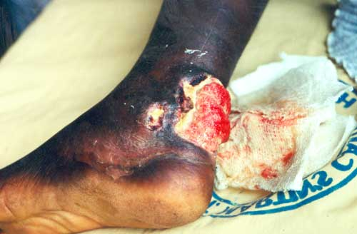
Recognizing it
Painless is the whole clueOften described as the third most common mycobacterial infection of immunocompetent people worldwide, after tuberculosis and leprosy, and recognized by the WHO as a neglected tropical disease. Endemic foci concentrate in West and Central Africa — Côte d’Ivoire, Ghana, Benin, Cameroon, the Democratic Republic of the Congo — and in temperate southeastern Australia, with additional foci in Japan, South America, and elsewhere.
It begins as a painless nodule, plaque, or area of firm edema, most often on a limb, which breaks down over weeks into an ulcer with deeply undermined edges and a necrotic, slough-covered base. The subcutaneous necrosis extends well beyond the visible skin defect, which is why the wound is always larger than it looks.
Transmission is environmental and linked to slow-moving or stagnant water; the precise route remains incompletely understood, with mosquitoes and native possums implicated in the Australian setting.
Confirming and treating it
Molecular first, culture slowLaboratory confirmation in endemic programs rests principally on a polymerase chain reaction assay targeting the M. ulcerans insertion sequence IS2404, which is the WHO-recommended confirmatory test. Acid-fast smear from the ulcer base is supportive but less sensitive; histopathology shows extensive coagulative necrosis of subcutaneous fat with clumps of extracellular bacilli and a strikingly muted inflammatory infiltrate.
Treatment is antimicrobial, with an all-oral combination regimen — a rifamycin together with a macrolide — recommended by the WHO for a defined course, with surgery, wound care, and physiotherapy as adjuncts rather than the primary therapy. Paradoxical worsening during or shortly after treatment is recognized and reflects returning immune responsiveness, not failure.
M. ulcerans secretes mycolactone, a polyketide-derived macrolide lipid toxin encoded on a large plasmid. Mycolactone is simultaneously cytotoxic and locally immunosuppressive: a major mechanism is blockade of the Sec61 translocon, the channel through which host cells thread newly made proteins into the endoplasmic reticulum, so secreted and membrane proteins — including cytokines and immune mediators — are not produced. That single toxin explains the whole clinical picture: the necrosis, the sparse inflammatory infiltrate on histology despite abundant bacilli, and the analgesia that lets a patient walk in with a fist-sized ulcer and no complaint of pain.
Buruli ulcer is the one place in this block where a swab is acceptable: WHO diagnostic guidance directs sampling the undermined edge beneath the overhanging skin of an ulcerated lesion for PCR, with fine-needle aspiration used for non-ulcerated nodules and plaques. That is a targeted deep sample obtained through a swab, not a surface culture — the principle still holds.
Rapidly growing mycobacteria after procedures
This is the mycobacterial problem you are most likely to cause rather than merely encounter, and it belongs squarely to cosmetic and procedural dermatology. Runyon group IV organisms — the M. fortuitum group, M. chelonae, and the M. abscessus complex — are so named because they grow within about seven days on subculture, which makes them fast for mycobacteria and still far too slow for a routine plate.
- Tattooing. Documented outbreaks of M. chelonae and related species traced to contaminated ink and to ink diluted with non-sterile tap water; lesions appear only within the areas of a single shade, classically the gray-wash regions, which is a striking and diagnostic distribution.
- Nail salon whirlpool footbaths. Furunculosis on the lower legs after pedicures, classically M. fortuitum, arising from biofilm in the bath piping, and typically worse in clients who shaved their legs beforehand.
- Mesotherapy, injectables, and liposuction. Nodules and abscesses at multiple injection points, following the map of the procedure.
- Surgical and laser procedures. Wound infections and suture-line nodules after excision, augmentation, and resurfacing, appearing later than a conventional surgical site infection would.
- Acupuncture, needling, and body piercing. Same principle, same timeline.
The unifying reservoir is water. Rapidly growing mycobacteria persist in municipal water systems and in biofilms, and they tolerate chlorine and some standard disinfectants far better than ordinary bacteria — which is why “we used tap water to dilute it” and “the equipment was disinfected” can both be true and still produce an outbreak.
Weeks — not days — after a procedure, the patient returns with persistent erythematous or violaceous nodules, fluctuant abscesses, or draining sinuses restricted to the treated area. They have already had one or two courses of a cephalosporin or an antistaphylococcal agent with no benefit, and cultures were reported as no growth. That combination, post-procedural plus antibiotic-unresponsive plus culture-negative, is the presentation. Biopsy it for mycobacterial culture rather than prescribing a third antibacterial.
Rapidly growing mycobacteria can grow on ordinary bacteriology media — and when they do, on a Gram stain they may appear as faintly staining or beaded gram-positive rods and be dismissed as diphtheroid contaminants, or appear after the plate has already been signed out and discarded. Two consequences: send a dedicated mycobacterial culture rather than relying on a routine wound culture, and if the laboratory calls about an unexpected late-appearing gram-positive rod from a post-procedure lesion, ask them to hold it and stain it for acid-fastness.
Susceptibility testing is mandatory for rapidly growing mycobacteria, and for the M. abscessus complex the macrolide result has a trap built into it. Many isolates carry erm(41), an inducible macrolide-resistance gene: the organism looks susceptible on a standard-length read and resistant only after extended incubation, so CLSI methodology calls for an extended macrolide read to unmask it. Whether the gene is functional depends on sequevar and on subspecies — M. abscessus subsp. massiliense carries a truncated, non-functional copy and generally remains macrolide-treatable, whereas subsp. abscessus frequently does not. M. chelonae lacks erm(41) altogether. This is precisely why subspecies-level identification, usually by molecular targets beyond 16S ribosomal RNA such as rpoB, hsp65, and erm(41) sequencing, is not academic: it changes whether an oral macrolide is a real option.
The mycobacterial line-up
| Organism | Exposure or setting | Classic lesion | Laboratory key |
|---|---|---|---|
| M. marinum | Aquarium, fish handling, brackish or salt water | Hand or forearm nodule, often sporotrichoid | Incubate at 30 °C; photochromogen; may cross-react on IGRA |
| M. leprae / M. lepromatosis | Prolonged close contact in endemic regions; armadillo contact in the southern United States | Anesthetic plaques with thickened peripheral nerves, across a tuberculoid-to-lepromatous spectrum | Cannot be cultured; slit-skin smear plus biopsy with Fite stain |
| M. tuberculosis (skin) | Endemic exposure, prior or concurrent tuberculosis, immunosuppression | Lupus vulgaris, scrofuloderma, verrucosa cutis, miliary lesions | Paucibacillary forms are frequently smear- and culture-negative; tuberculin or IGRA usually strongly positive; PCR helpful but imperfect |
| M. ulcerans | Slow-moving or stagnant water in West and Central Africa, southeastern Australia, other foci | Painless undermined ulcer with necrotic base | IS2404 PCR; culture at reduced temperature for 6–12 weeks; mycolactone toxin |
| M. fortuitum, M. chelonae, M. abscessus | Tattoo ink, footbaths, mesotherapy, liposuction, surgery, needling — water-borne | Post-procedure nodules and abscesses appearing weeks later, unresponsive to standard antibacterials | Rapid growers, under 7 days on subculture; susceptibility testing required, including an extended macrolide read for M. abscessus |
| M. haemophilum | Immunosuppression — transplant, HIV, biologic therapy; also pediatric cervical lymphadenitis | Painful ulcerating nodules on cool acral and periarticular skin | Needs iron-supplemented media (hemin or ferric ammonium citrate) and 30–32 °C — will not grow on a standard setup |
| M. kansasii | Water systems; often underlying lung disease or immunosuppression | Verrucous or sporotrichoid nodules, cellulitis-like plaques | Photochromogen; carries RD1 antigens so IGRA may be positive |
M. haemophilum is the cleanest illustration of the entire theme. It requires both a lower temperature and an iron-supplemented medium. No amount of clinical acumen recovers it if the requisition said “tissue culture.” The organism is not fastidious about your diagnosis — it is fastidious about the plate.
How to actually work this up
Take the exposure history before you take the biopsy
Aquarium or fish; fresh, brackish, or stagnant water; soil, thorns, or plant matter; travel and country of origin; any procedure, injection, tattoo, or pedicure in the preceding months; animal contact; immunosuppression and biologic therapy; known tuberculosis contact. The history determines what you write on the form, and the form determines what the laboratory does.
Biopsy deep and from the active edge
Use a generous punch or an incisional biopsy that reaches subcutaneous fat, taken from the advancing border rather than the necrotic center. Superficial shaves and surface swabs are the two commonest reasons a mycobacterial workup fails. Consider taking two specimens rather than dividing one small core.
Split the tissue — this is the step people get wrong
Half into formalin for histopathology. Half fresh, in a sterile container with a few drops of sterile non-bacteriostatic saline to prevent drying, delivered promptly to microbiology.
Request hematoxylin and eosin, an acid-fast stain (Ziehl-Neelsen or Kinyoun), Fite if leprosy is on the differential, and PAS plus GMS for fungi. Ask the pathologist to comment on granuloma pattern, necrosis, Grenz zone, and nerve involvement.
Request mycobacterial culture, fungal culture, and routine bacterial culture from the same specimen. Never place tissue intended for culture in formalin — it is unrecoverable, and it is the single most common irreversible error in this workup.
Tell the laboratory what you suspect, in words
Write the suspected organisms and the exposure on the requisition, and call for anything unusual. Specifically request incubation at both standard and reduced temperature, a prolonged hold, and supplemented media if M. haemophilum is possible. If tularemia or a similar hazard is being considered, warn the laboratory before the specimen arrives, not after.
Set expectations and do not stop the clock early
Tell the patient this takes weeks. Do not accept a preliminary negative at two weeks as a final answer, and do not let an interim negative trigger a fourth course of an antibacterial that was never going to work. Where systemic or disseminated disease is plausible, add mycobacterial blood cultures and imaging in parallel rather than sequentially.
Granulomas but no growth? Escalate the method, not the wait
If histology shows granulomatous inflammation and cultures remain negative at the end of the hold, consider molecular testing — targeted PCR or broad-range amplification with sequencing — on fresh tissue if any remains, or on the paraffin block, accepting reduced sensitivity from fixed material. A repeat biopsy taken with the full split protocol frequently outperforms molecular salvage on a suboptimal original specimen.
Build one order set and reuse it: deep biopsy from the active edge, split formalin and fresh, stains for acid-fast plus Fite plus fungal, cultures for bacteria plus fungi plus mycobacteria, dual-temperature incubation, prolonged hold, and a free-text line stating the exposure and the suspected organism. Then add tuberculin or IGRA testing and chest imaging when tuberculosis or a tuberculid is plausible, and check HIV status when the presentation suggests immunosuppression.
What exactly should I say when I telephone the microbiology laboratory?
Keep it to five items and they will do the rest.
- The specimen and where it is. “Fresh skin biopsy, no formalin, accession pending, sent from clinic at 2 pm.”
- The suspicion, named. “I am concerned about Mycobacterium marinum, and I want to exclude Sporothrix and Nocardia.”
- The exposure. “He cleans a saltwater aquarium bare-handed.” This single sentence is what makes the laboratory set up a second incubator.
- The specific requests. Incubation at 30 °C as well as 35 °C; extended hold; supplemented media if relevant; extended macrolide read if a rapid grower is isolated.
- Your contact details and a request for preliminary calls. Ask to be told when anything grows rather than waiting for the final report.
Laboratories are not obstructive; they are running a standard operating procedure that assumes an ordinary organism. You are the only person who knows the story.
Why can a mycobacterial culture be negative when acid-fast bacilli were seen on the slide?
Several reasons, and they are worth being able to recite.
The organism is not cultivable. M. leprae will never grow on artificial media, so bacilli on a Fite stain with a sterile culture is the expected result, not a discrepancy.
The organism was killed in processing. Specimens from non-sterile sites undergo chemical decontamination to suppress faster-growing flora. That step is hard on fragile mycobacteria and it is lethal to Nocardia, which is one reason Nocardia must be requested as its own culture rather than expected to fall out of a mycobacterial workup.
The conditions were wrong. Wrong temperature, no iron supplementation, or the plates were discarded before a slow grower appeared.
Prior antimicrobials. Weeks of a macrolide or a tetracycline given empirically for a “non-healing wound” can suppress growth without curing the infection.
Sampling. Necrotic ulcer center rather than the advancing edge, or too small a specimen for the number of tests requested.
Board-style rapid review
Ascending nodules on the forearm of a fish keeper. M. marinum — and the examiner wants the number 30 °C.
Anesthetic plaque with a thickened ulnar nerve. Hansen disease — and the examiner wants Fite stain and “cannot be cultured.”
Apple-jelly nodules on diascopy. Lupus vulgaris — and the examiner wants “paucibacillary, so expect negative smear and culture.”
Sinus tracts over a cervical node with cord-like scars. Scrofuloderma — contiguous spread, and the highest-yield form for culture.
Tender recurrent nodules on the posterior calves. Erythema induratum of Bazin — a tuberculid, so hunt for the focus, do not expect organisms.
A large painless undermined ulcer in a patient from Ghana or coastal Victoria. Buruli ulcer — and the examiner wants mycolactone.
Nodules confined to the gray shading of a new tattoo. Rapidly growing mycobacterium, classically M. chelonae — and the examiner wants “susceptibility testing is required.”
Fungal infections
Superficial, subcutaneous, systemic, opportunistic
Fungal infection: organize by depth, not by name
There are hundreds of fungi that touch skin and only four compartments they can occupy. Depth predicts the specimen, the specimen predicts what the laboratory can do, and what the laboratory can do predicts whether you get a species name, a susceptibility result, or nothing at all. Work the compartment first and the organism list shrinks to something manageable.
| Compartment | Representative organisms | What the laboratory needs | What the laboratory can give you |
|---|---|---|---|
| Superficial stratum corneum, hair, nail |
Dermatophytes (Trichophyton, Microsporum, Epidermophyton), Malassezia, Candida | Scale, plucked hairs with roots, nail clipping plus subungual debris. Not a surface swab. | Direct microscopy in minutes; culture with a species name in 1–4 weeks; PAS on nail clippings via histopathology |
| Subcutaneous implantation through the dermis |
Sporothrix, dematiaceous fungi of chromoblastomycosis, agents of eumycetoma | Deep tissue — punch to subcutis or excisional wedge — split fresh for culture and formalin for histology; discharged grains if present | Culture often definitive; histology shows the tissue form (asteroid body, muriform body, grain) |
| Systemic / disseminated skin as a window on deep disease |
Histoplasma, Blastomyces, Coccidioides, Cryptococcus, Talaromyces marneffei | Tissue for histology and culture, plus blood; antigen and serologic testing ordered in parallel | Antigen assays in hours to days; culture in days to weeks — and a biosafety problem if you do not warn them |
| Opportunistic angioinvasive molds vessel-centered, in the immunocompromised |
Aspergillus, Fusarium, Mucorales (Rhizopus, Mucor, Lichtheimia) | Urgent deep biopsy for both histology and culture; blood cultures; serum biomarkers | Histology is frequently the fastest and sometimes the only positive test; culture can be falsely negative |
Every superficial fungal misadventure you will see as a resident traces back to one of three things: the wrong specimen was sent, the laboratory was not told what you suspected, or systemic therapy was started on a clinical guess that turned out to be psoriasis. The microbiology is not an afterthought to the dermatology here — it is the dermatology.
How to actually talk to the mycology bench
Mycology is one of the few laboratory sections where a free-text comment on the requisition genuinely changes the result. The bench chooses media, incubation temperature, hold time, and containment level based on what you tell them. Say the following out loud on the form.
- Name the differential, not just “fungal culture.” “Rule out dermatophyte” and “rule out non-dermatophyte mold” get different plates.
- Ask about cycloheximide. Standard dermatophyte media contain cycloheximide to suppress contaminants — but it also inhibits many of the opportunistic molds, Cryptococcus, and several non-albicans yeasts. If you suspect a non-dermatophyte mold in a nail, or an opportunist in an immunocompromised host, request a parallel plate without cycloheximide.
- Ask about lipid supplementation if you want Malassezia to grow (see the advanced pearl below).
- Ask about incubation temperature when your differential includes organisms with unusual optima — the sporotrichoid differential is the classic example.
- Ask about hold time before you accept a negative. Fungal plates are typically held for weeks; a five-day negative is not a negative.
- Warn them about dimorphic fungi and Mucorales. The mold phases of Coccidioides, Histoplasma, and Blastomyces are serious laboratory-acquired infection hazards and are handled at enhanced containment. An unannounced plate opened on the open bench is a real exposure event.
Local practice varies. Which media are stocked, whether molecular identification is in-house or referred, and turnaround times are institution-dependent — find out what your own laboratory actually offers before you promise a patient a species name.
Superficial I: the dermatophytes
Dermatophytes are keratinophilic molds that digest keratin with secreted proteases and, in the ordinary case, never breach the basement membrane. Three genera matter clinically, and the practical differences between them are about which keratinized tissue they can invade and where they came from.
Trichophyton
Skin, hair, and nailThe genus that does everything. T. rubrum is the dominant cause of tinea pedis, cruris, corporis, and onychomycosis in much of the world; T. tonsurans dominates tinea capitis across much of North America; T. verrucosum comes off cattle and produces spectacular inflammation.
Microsporum
Skin and hairM. canis is the classic zoophilic species from kittens and puppies. Clinically the important property is that Microsporum species produce a small-spore ectothrix and several of them fluoresce under a Wood lamp, which Trichophyton tonsurans does not.
Epidermophyton
Skin and nail onlyA single clinically relevant species, E. floccosum, classically causing tinea cruris and tinea pedis. The examinable point is negative: it does not invade hair. If the laboratory reports Epidermophyton from a scalp specimen, be suspicious of the sample or the identification.
Dermatophyte taxonomy has been substantially revised on molecular grounds, and your laboratory report may not use the names in your textbook. Several former Microsporum species have moved to Nannizzia (the geophilic organism you learned as M. gypseum is now usually reported as Nannizzia gypsea), and the T. mentagrophytes group has been resolved into several species including T. interdigitale. When a report returns an unfamiliar genus, assume a nomenclature change before you assume a contaminant — and call the laboratory to confirm.
Anthropophilic
Human reservoirWell adapted to the human host, so they provoke little inflammation and become chronic and relapsing. T. rubrum, T. tonsurans, E. floccosum. These are the quietly scaly, minimally erythematous, years-long infections — and the ones that spread within households, gyms, and wrestling teams.
Zoophilic
Animal reservoirPoorly adapted to humans, so the host mounts a vigorous inflammatory response: brightly erythematous, pustular, sometimes vesicular lesions, and in the scalp a far higher likelihood of kerion. M. canis (cats and dogs), T. verrucosum (cattle), T. benhamiae (guinea pigs), T. mentagrophytes group (rodents, rabbits).
Geophilic
Soil reservoirAcquired from soil, typically in gardeners, farm workers, and children playing in dirt. Also inflammatory, because again the organism is not host-adapted. Nannizzia gypsea is the representative.
Inflammation is an ecological readout, not a severity score. A furiously inflamed, pustular annular plaque in a child who just got a kitten is telling you the organism is zoophilic — probably M. canis — and that the animal needs veterinary assessment or the child will be reinfected. A bland, faintly scaly, slowly enlarging plaque in an adult with chronic tinea pedis is telling you it is anthropophilic, probably T. rubrum, and that the feet and nails are the reservoir you have to treat.
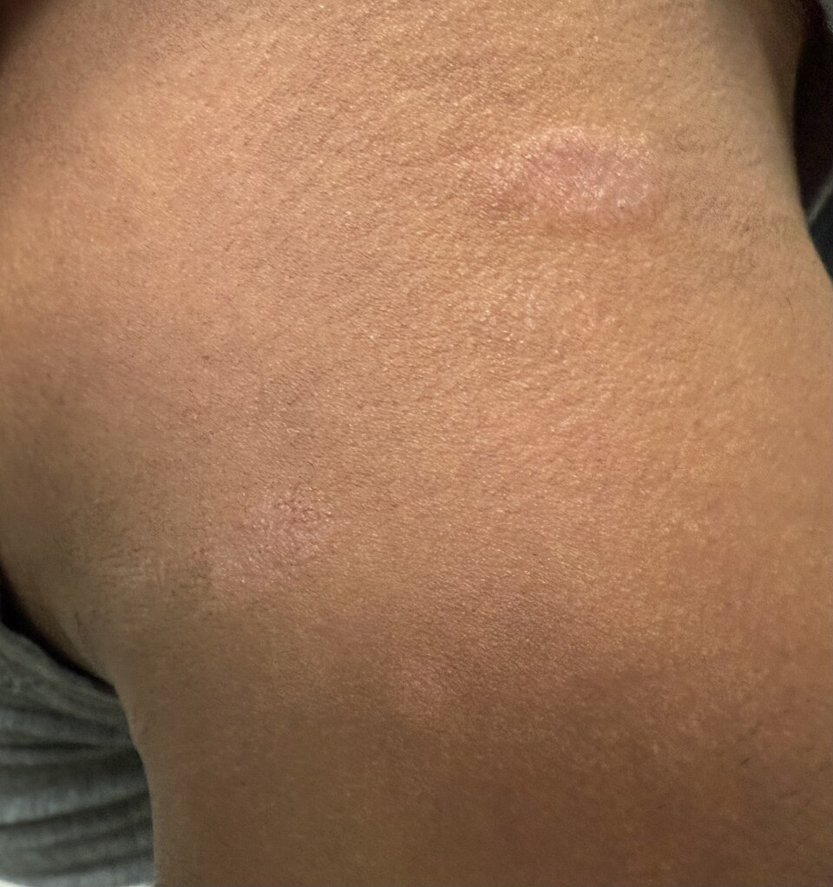
Tinea corporis is the annular plaque with an active, scaly, advancing edge and relative central clearing — the fungus is at the periphery, which is where you must scrape. Scraping the pale center is one of the commonest reasons for a falsely negative potassium hydroxide (KOH) preparation.
Tinea cruris characteristically spares the scrotum, which is a genuinely useful discriminator from candidal intertrigo and from inverse psoriasis. It is usually an autoinoculation from the patient’s own feet, so examine the feet and nails in every case; treating the groin alone guarantees recurrence.
Scrape the leading edge with a No. 15 blade or a glass slide edge onto a second slide, apply KOH, and read it yourself. Send a portion for culture in a paper envelope or sterile container — not in a sealed plastic bag, which traps moisture and encourages contaminant overgrowth.
Three patterns, and they behave differently.
- Interdigital — maceration and fissuring in the lateral web spaces. Frequently a mixed dermatophyte-plus-bacterial process; when it becomes malodorous, macerated, and eroded (“dermatophytosis complex”), Gram-negative and coryneform overgrowth is contributing and an antifungal alone will disappoint.
- Moccasin — diffuse fine silvery scale over the sole and lateral foot in a sharply demarcated distribution, typically T. rubrum, typically chronic, and typically accompanied by onychomycosis. This is the phenotype that fails topical therapy.
- Vesiculobullous — acute tense vesicles on the instep, often T. interdigitale, and the one most often mistaken for dyshidrotic eczema. Unroof a vesicle and take the blister roof for KOH; that is the highest-yield specimen.
The interdigital web space is also the portal of entry for bacterial cellulitis of the leg. Treating tinea pedis in a patient with recurrent cellulitis is not cosmetic — it is source control.
Tinea manuum is diffuse dryness and fine scale accentuated in the palmar creases, usually unilateral. The classic pattern is “two feet, one hand”: bilateral tinea pedis with unilateral palmar involvement, presumably from the hand the patient uses to pick and scratch at the feet.
The trap is that unilateral palmar scale reads as chronic hand eczema or irritant dermatitis, gets a potent topical corticosteroid, and improves briefly before worsening. Any asymmetric “hand eczema” deserves a KOH before it deserves a steroid — and a look at the feet and toenails in the same visit.
Tinea faciei loses the tidy annular morphology that makes tinea corporis easy. It is often photodistributed-looking, poorly annular, and pruritic or burning, so it collects diagnoses of lupus, polymorphous light eruption, seborrheic dermatitis, and rosacea — each of which attracts a topical corticosteroid or calcineurin inhibitor that makes it worse.
Tinea barbae involves terminal hair in the beard area, usually zoophilic and usually in agricultural workers. Because the hair follicle is invaded, it behaves like tinea capitis: it requires systemic therapy. The same is true of Majocchi granuloma, follicular dermatophyte invasion into the dermis typically triggered by shaving over an infected area or by topical steroid use — perifollicular papulonodules that will not clear with a topical agent because the organism is below the epidermis.
Tinea incognito is dermatophytosis modified by a topical corticosteroid or calcineurin inhibitor. The steroid suppresses the inflammatory response that generates the two features you rely on: the scale disappears and the raised annular edge flattens. What is left is an ill-defined, larger, less symptomatic patch that no longer looks fungal at all — and, because the local immune response is suppressed, the fungal burden is often higher and follicular invasion more likely.
Because the scale is gone, the KOH yield falls. If you are suspicious, stop the steroid, let the surface recover for a week or two, and re-scrape; or biopsy and ask for a periodic acid–Schiff (PAS) stain.
Combination corticosteroid–antifungal products are the industrial-scale generator of tinea incognito. The potency of the steroid component often outruns the antifungal, and in many regions these are available over the counter. Ask specifically what the patient has been putting on the lesion, including anything given by a relative or bought abroad — patients rarely volunteer it because they do not consider a cream a medication.
What actually happens to your scale specimen
Four distinct tests come off one specimen, and they answer different questions. Knowing which one you need is most of the skill.
Direct microscopy
Minutes, at the bedsidePotassium hydroxide (KOH) at 10–20 percent dissolves keratinocytes and leaves fungal elements. Adding dimethyl sulfoxide speeds clearing without heating. Chlorazol black E stains chitin and makes hyphae far easier to see against artifact; calcofluor white is more sensitive still but needs a fluorescence microscope, so it is a laboratory test rather than a clinic one.
Mosaic artifact — the refractile outlines of intercellular lipid between keratinocytes — is the classic false positive. True hyphae cross cell borders, branch, and are septate; mosaic artifact follows the cell outlines.
Culture
One to four weeksSabouraud dextrose agar with an antibacterial (chloramphenicol or gentamicin) and cycloheximide to suppress saprophytic molds. Dermatophyte test medium (DTM) is a screening variant containing phenol red: alkaline metabolites from a dermatophyte turn it red. Incubation is at around room temperature to 30 °C, not at 35–37 °C.
DTM is a screen, not an identification. Some contaminants also turn the indicator red with prolonged incubation, and the color change alone should never be reported as “dermatophyte.” Confirm with morphology or a molecular method.
Histopathology with PAS
DaysPeriodic acid–Schiff or Gomori methenamine silver on formalin-fixed tissue or on a nail clipping. Highly sensitive for the presence of fungus in keratin, and it is the test that rescues you when clinical suspicion is high and KOH and culture are both negative. It gives no species and no viability information.
Molecular testing
Hours to days, where availablePolymerase chain reaction (PCR)–based nucleic acid amplification tests (NAATs) detect dermatophyte DNA directly from nail or scale, and internal transcribed spacer (ITS) region sequencing is the reference method for identifying an isolate that morphology cannot resolve. Matrix-assisted laser desorption/ionization time-of-flight mass spectrometry (MALDI-TOF MS) identifies many isolates rapidly once they have grown.
Availability of PCR and sequencing for superficial mycoses varies widely by country and institution; in many centers it remains a send-out with a cost implication. Confirm what your laboratory offers rather than assuming.
Trichophyton indotineae is the reason antifungal susceptibility testing has entered dermatology. Emerging from South Asia and now reported across Europe and North America, it causes extensive, highly inflammatory, often steroid-modified tinea corporis and cruris that fails standard terbinafine courses. The mechanism is point mutation in the gene encoding squalene epoxidase, terbinafine’s target. It was historically reported within the T. mentagrophytes / T. interdigitale complex, so a routine morphologic or MALDI-TOF identification may not flag it — ITS sequencing is the reference approach. Practically: in a patient with extensive tinea failing an adequate terbinafine course, especially with relevant travel or contact history, call the laboratory, ask whether species-level molecular identification and antifungal susceptibility testing are available, and say why. There is a reference broth microdilution method for filamentous fungi, but there are no broadly accepted clinical breakpoints for dermatophytes, so results are interpreted comparatively rather than as a categorical “susceptible” or “resistant.”
Superficial II: tinea capitis, a laboratory and therapeutic problem
Tinea capitis is worth its own section because it is the one superficial dermatophytosis where the microbiology dictates the drug, the Wood lamp is regionally misleading, and topical therapy is categorically inadequate.
Ectothrix
Arthroconidia outside the hair shaftThe organism forms a sheath of arthroconidia on the outside of the shaft and destroys the cuticle. Hairs break a few millimeters above the scalp, so you see gray, dull, sheathed, broken hairs and a scaly patch — the classic “gray patch.”
Endothrix
Arthroconidia inside the hair shaftThe organism fills the shaft while leaving the cuticle intact. The weakened hair snaps flush with the scalp surface, leaving the black dot pattern — comedo-like dark points within a patch of alopecia. Diffuse scale with minimal obvious hair loss is an equally common and easily missed presentation.
The Wood lamp is a screening tool with a strong geographic dependency. Across much of North America the predominant organism is Trichophyton tonsurans, an endothrix that does not fluoresce — so a dark scalp under the lamp excludes essentially nothing. Fluorescence, when present, is most often Microsporum. Never use a negative Wood lamp to withhold mycologic sampling in a child with a scaly, patchy scalp and occipital or posterior cervical lymphadenopathy.
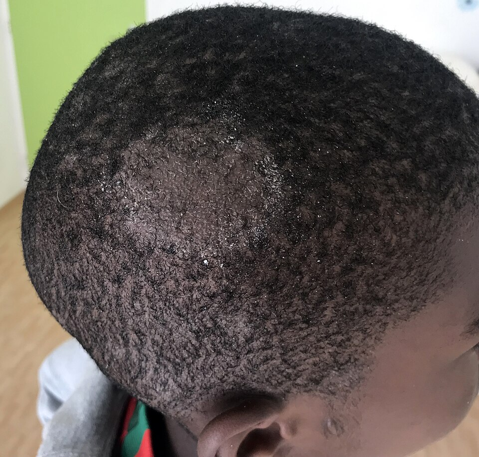
Sampling and treating the scalp
Get the right specimen
Hair root, not hair shaftThe organism lives in and on the proximal hair and in the adherent scale, so pluck hairs with a forceps to obtain roots and scrape the scale. Cut hairs are close to useless. Brushing the scalp with a sterile toothbrush or a cytology brush and pressing it into the agar is well established in children and samples a wide area painlessly.
The scalp is the one site where a firmly rubbed moistened swab performs reasonably for culture — unlike glabrous skin and nail, where a surface swab remains the wrong specimen.
Why topicals cannot work
Pharmacology, not complianceThe fungus is inside or wrapped around the hair shaft within the follicle. A topical agent cannot reach that compartment in fungicidal concentration, so tinea capitis always requires systemic therapy — as do tinea barbae and Majocchi granuloma, for the same anatomic reason.
Griseofulvin and terbinafine are the mainstays. Species matters: terbinafine generally performs well against Trichophyton endothrix disease, while griseofulvin has traditionally been favored for Microsporum. That is precisely why obtaining a culture, even though you start therapy empirically, changes management if the patient is not responding.
Add an adjunctive sporicidal shampoo (selenium sulfide or ketoconazole) for the patient and consider it for household contacts. It reduces shedding of viable spores and transmission — it does not treat the infection. Screen household members and, in zoophilic disease, arrange veterinary assessment of the animal.
Kerion
Host response, not superinfectionA boggy, exquisitely tender, pustular inflammatory mass with overlying alopecia and regional lymphadenopathy. It is a vigorous cell-mediated response to the dermatophyte — most often a zoophilic or geophilic species — not a bacterial abscess, even though pus expresses from the follicular openings.
The consequence of getting this wrong is permanent: kerion managed as an abscess with incision and drainage and antibacterials alone delays antifungal therapy and increases the risk of scarring, permanent alopecia.
Bacterial cultures from a kerion frequently grow skin flora or Staphylococcus aureus. That does not make it a bacterial disease. Send a fungal specimen at the same time, and treat the fungus.
Adjunctive systemic corticosteroids are used by some clinicians to limit inflammation; the evidence base is limited and practice varies. The systemic antifungal is not optional.
The id reaction (dermatophytid)
Sterile, and not a drug allergyA distant, symmetric, often papular or vesicular eruption — commonly on the trunk, face, or hands — appearing days to weeks after a kerion or after starting systemic therapy, as antigen release peaks. It is an immunologic reaction: KOH and culture from the id lesions are negative, because there is no organism there.
The trap is that it is timed exactly like a drug eruption, so the antifungal gets stopped and the primary infection is undertreated.
Continue the antifungal. Treat the id eruption symptomatically with emollients, a topical corticosteroid, and an antihistamine if pruritus warrants. Reserve stopping the drug for a genuine hypersensitivity picture — mucosal involvement, systemic features, eosinophilia, or transaminase derangement.
Superficial III: onychomycosis and the case for confirming before you treat
Roughly half of dystrophic nails referred as “fungal nails” are not fungal. Since systemic therapy runs for months, carries drug interactions — terbinafine and itraconazole are both CYP substrates and inhibitors, and itraconazole is avoided in ventricular dysfunction — and in most services requires baseline and interval liver enzyme monitoring, mycologic confirmation before starting is standard practice in most guidelines and most institutions.
Distal and lateral subungual
The common oneInvasion via the hyponychium and lateral nail folds, producing subungual hyperkeratosis, onycholysis, and yellow-brown discoloration advancing proximally. Usually T. rubrum, usually preceded by moccasin tinea pedis.
Superficial white
On the plate surfaceChalky white friable patches on the dorsal surface of the nail plate, classically T. interdigitale. Because the organism sits superficially, it is the one subtype where curettage of the plate surface both samples and debulks.
Proximal subungual
The one that means somethingInvasion through the proximal nail fold and the ventral plate, producing whiteness emerging from under the cuticle. Uncommon, and long recognized as a marker that should prompt consideration of immunosuppression, including HIV infection. Also seen with peripheral vascular disease and after trauma.
| Test | What it tells you | Relative sensitivity | Species? | Practical notes |
|---|---|---|---|---|
| KOH direct microscopy | Fungal elements present or absent | Moderate; operator-dependent | no | Immediate and cheap. Nail keratin is thick, so allow prolonged clearing or use a keratolytic-enhanced preparation |
| PAS on nail clipping | Fungal elements within the nail plate | Highest of the routine tests | no | Clippings go to histopathology in formalin. Cannot distinguish viable from dead organism, and cannot distinguish dermatophyte from mold |
| Fungal culture | A viable, named organism | Lowest — frequently negative despite true infection | yes | The only routine test that names the species and enables susceptibility testing. Weeks to result. Request media without cycloheximide if a non-dermatophyte mold is suspected |
| PCR / NAAT | Dermatophyte DNA, often to species | High | often | Fast. Detects nonviable organism, so it can stay positive after cure; panel content limits which molds are detectable. Availability varies by institution |
A common and effective strategy is to pair a highly sensitive test with a specific one: PAS on a clipping to establish that fungus is present, plus culture or PCR to name it. If both are negative in a nail you are convinced is fungal, resample — poor sampling is a far commoner explanation than a false negative. Clip as far proximally as the nail allows and, crucially, curette the subungual debris under the advancing edge, where the viable organism actually is. A distal clipping alone is mostly dead keratin.
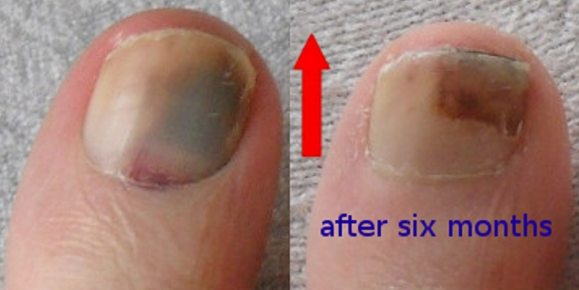
Onychomycosis versus every other cause of nail dystrophy. Nail psoriasis gives pitting, oil-drop or salmon-patch discoloration, and onycholysis, and frequently coexists with true onychomycosis, so a positive mycology does not exclude it. Nail lichen planus gives longitudinal ridging, plate thinning, and pterygium — and is a scarring process where delay costs the nail permanently. Trauma and onychogryphosis in an older patient with ill-fitting shoes look convincingly fungal and are not. And a single persistently dystrophic or pigmented nail that will not respond, particularly with pigment extending onto the proximal nail fold, must raise subungual melanoma — that nail needs a biopsy of the matrix, not another course of terbinafine.
Superficial IV: Malassezia, a commensal that behaves like a pathogen
Malassezia yeasts are normal residents of sebaceous skin. Disease reflects overgrowth and host response rather than acquisition of a new organism — which explains both the recurrence rate and why you almost never culture it.
Pityriasis versicolor
Stratum corneum overgrowthFinely scaly, sharply marginated macules and thin plaques on sebaceous sites — upper trunk, shoulders, neck, and in some patients the face. They are hypopigmented in some patients and hyperpigmented in others, often in the same person simultaneously; the pigment change is attributed to dicarboxylic acids produced by the organism inhibiting tyrosinase, plus altered melanosome transfer. Stretching the skin brings out fine scale that is not obvious at rest.
Malassezia folliculitis
Follicular, and mistaken for acneMonomorphic follicular papules and pustules on the upper back, chest, and shoulders, and characteristically itchy — acne is not. The discriminating feature is the absence of comedones and the uniformity of the lesions.
It is precipitated by occlusion, heat and humidity, topical or systemic corticosteroids, immunosuppression, and notably by broad-spectrum antibacterial therapy. A patient whose “acne” got worse on a tetracycline is telling you the diagnosis.
Seborrheic dermatitis
Driver, not simple infectionMalassezia lipases liberate free fatty acids from sebum, and the host inflammatory response to those metabolites — not tissue invasion — produces the erythema and greasy scale. The consistent response to antifungal agents supports the causal role, but this is a dysbiosis-plus-host-reactivity disease, which is why it relapses.
Explosive, severe, or refractory seborrheic dermatitis is a recognized flag for advanced HIV infection and is also associated with Parkinson disease and other neurologic conditions. It is worth a second thought rather than a third shampoo.
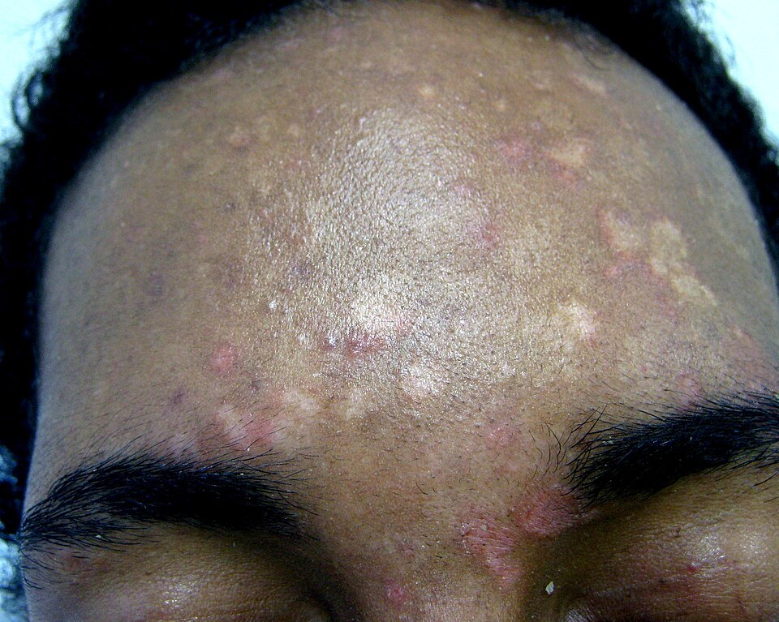
Malassezia is lipid-dependent and will not grow on routine fungal media. Apart from M. pachydermatis, these yeasts cannot synthesize their own long-chain fatty acids and require exogenous lipid. If you genuinely need a culture, the laboratory must overlay Sabouraud agar with sterile olive oil or use a lipid-enriched medium such as modified Dixon or Leeming–Notman agar — and they will only do that if you ask. Submitting “fungal culture” on a versicolor specimen reliably returns “no growth,” which is a laboratory artifact and not a negative result. Two further consequences worth knowing: M. pachydermatis, the non-lipid-dependent exception, is the species associated with dogs and has been implicated in neonatal intensive care outbreaks traced to caregiver hand carriage; and because diagnosis of versicolor is clinical and confirmed by KOH, culture is simply not part of routine practice.
Superficial V: Candida in the skin
Candidal skin disease is a disease of moisture, occlusion, and barrier failure. The organism is usually endogenous, so the useful clinical question is rarely “where did it come from” and almost always “what made this site hospitable.”
Intertrigo
Satellite lesions are the tellBeefy-red, macerated, sometimes eroded plaques in inframammary, axillary, abdominal, and inguinal folds, with satellite papules and pustules beyond the border. Contrast with tinea, which advances as a scaly annular edge with central clearing and no satellites.
Diaper dermatitis
Creases in or creases outCandidal diaper dermatitis involves the inguinal creases, with satellite pustules; irritant diaper dermatitis characteristically spares them because the convex surfaces take the contact. That single observation directs therapy.
Angular cheilitis
Anatomy plus organismFissured, macerated erythema at the oral commissures where saliva pools. Candida, Staphylococcus aureus, or both. The driver is usually mechanical — loss of vertical dimension, ill-fitting dentures, drooling, lip licking — so antimicrobial therapy without addressing the anatomy relapses. Also consider iron and B-vitamin deficiency in the recalcitrant case.
Chronic paronychia
Not primarily an infectionLoss of the cuticle from wet work or manipulation opens the proximal nail fold to irritants and allergens; the result is a chronic eczematous barrier disease that is secondarily colonized by Candida. Culturing yeast from the fold does not make yeast the cause.
Manage it as dermatitis: strict avoidance of wet work and manipulation, barrier protection, and a topical anti-inflammatory — which generally outperforms an antifungal used alone. Antifungal therapy is adjunctive, not the backbone.
Erosio interdigitalis blastomycetica
The web space of the handA macerated, white, fissured erosion with a collarette in a finger web space — classically the third — in wet workers, people with diabetes, and those with occupational hand immersion. The equivalent finding in the toe web spaces is far more often dermatophyte, so the anatomy points you at the organism.
Chronic mucocutaneous candidiasis
A phenotype, not a diagnosisPersistent or recurrent candidal infection of skin, nails, and mucosa should trigger an immunologic evaluation, because it is a recognized manifestation of defects in the interleukin-17 axis — including STAT1 gain-of-function, AIRE mutations (autoimmune polyendocrinopathy–candidiasis–ectodermal dystrophy), and CARD9 deficiency. CARD9 deficiency additionally predisposes to deep dermatophytosis and to central nervous system fungal disease, which is a link a dermatologist is uniquely placed to make.
This is where species-level identification and susceptibility testing genuinely exist, unlike for dermatophytes. Yeasts are identified rapidly by MALDI-TOF MS or chromogenic agar, and CLSI has established interpretive breakpoints for common Candida species against azoles and echinocandins. Much of the susceptibility is predictable from the name alone: Nakaseomyces glabratus (formerly C. glabrata) shows reduced azole susceptibility, Pichia kudriavzevii (formerly C. krusei) is intrinsically fluconazole-resistant, and C. parapsilosis tends to have higher echinocandin minimum inhibitory concentrations. Separately, Candida auris is a skin-colonizing, environmentally persistent, frequently multidrug-resistant organism that some legacy identification platforms misidentify — if a laboratory flags it, that is an infection-prevention event, not just a result.
Subcutaneous (implantation) mycoses: the gardening group
These are traumatic inoculation diseases of soil and plant fungi through the dermis into subcutaneous tissue. They are chronic, they are frequently in a returning traveler or an agricultural worker, and every one of them needs tissue — a surface swab of a discharging sinus answers nothing.
Sporotrichosis
Sporothrix species complexClassically inoculated by rose thorns, sphagnum moss, hay, or timber. The signature is the lymphocutaneous pattern: a papulonodule or ulcer at the inoculation site with a chain of subcutaneous nodules ascending the limb along lymphatics.
The exposure history that most residents miss is zoonotic transmission from cats. In parts of South America, particularly Brazil, S. brasiliensis is transmitted by scratch, bite, or contact with an infected cat, is highly transmissible, and behaves more aggressively than the classic plant-associated disease. Ask about cats, not only about roses.
The asteroid body — a central yeast surrounded by radiating eosinophilic Splendore–Hoeppli material — is the classic histologic finding, but it is insensitive. Organisms are typically sparse in tissue, so a negative special stain does not exclude sporotrichosis. Culture is the higher-yield test here, which is the reverse of the situation with the angioinvasive molds.
Chromoblastomycosis
Dematiaceous (melanized) fungiSlowly expanding verrucous, cauliflower-like plaques, usually on a lower limb, over years. Causative organisms include Fonsecaea, Cladophialophora carrionii, Phialophora verrucosa, and Rhinocladiella species — all pigmented by cell-wall melanin.
The tissue form is diagnostic and species-independent: muriform (sclerotic, medlar) bodies — thick-walled, brown, rounded cells that septate in more than one plane, described as “copper pennies.” They are visible on KOH of surface scrapings as well as on histology.
Histology shows florid pseudoepitheliomatous hyperplasia and can be reported as well-differentiated squamous cell carcinoma if the pathologist is not told what you suspect. Write the differential on the requisition and ask explicitly for fungal stains.
Mycetoma
Tumefaction, sinuses, grainsA chronic, usually painless, grossly deforming infection of subcutaneous tissue that extends to fascia and bone. The diagnostic triad is tumefaction, draining sinus tracts, and grains — macroscopic aggregates of organism discharged in the exudate. The foot is the classic site (“Madura foot”), reflecting barefoot inoculation. WHO recognizes mycetoma as a neglected tropical disease.
Grain color is a genuine clue: black grains are fungal (typically Madurella), pale or white grains may be either, and red grains point to Actinomadura pelletieri, a bacterium.
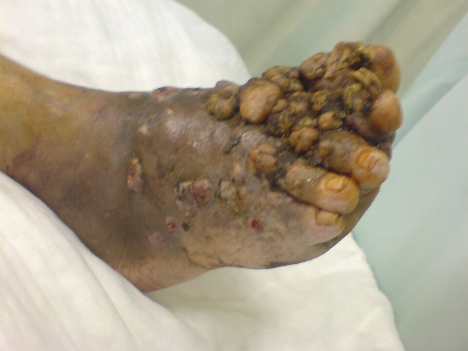
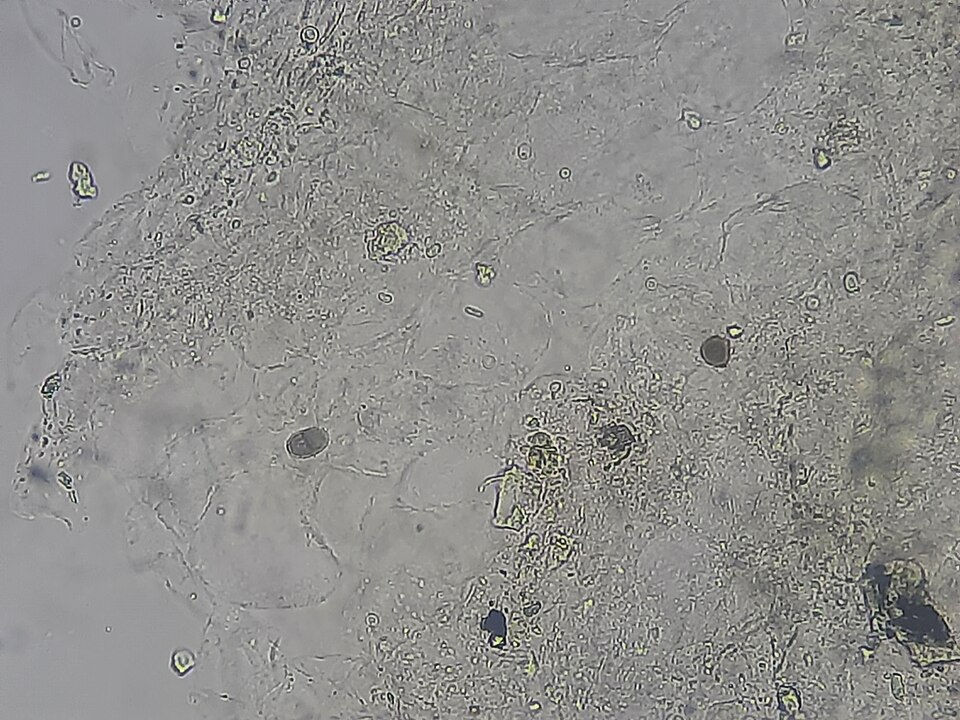
Eumycetoma versus actinomycetoma — identical clinically, opposite therapeutically. Eumycetoma is caused by true fungi (Madurella mycetomatis, Falciformispora, Scedosporium and relatives) and requires prolonged antifungal therapy, usually an azole, often with surgery, and cure rates are modest. Actinomycetoma is caused by aerobic actinomycete bacteria (Nocardia brasiliensis, Actinomadura madurae, A. pelletieri, Streptomyces somaliensis) and is treated with antibacterials — classically a sulfonamide-based regimen, sometimes with an aminoglycoside — with substantially better cure rates. Antifungals do nothing for actinomycetoma and antibacterials do nothing for eumycetoma, so the distinction is the whole management decision. Two things resolve it fast: crush a grain and examine it — delicate filaments around one micrometer across indicate an actinomycete, while broad septate hyphae several micrometers across indicate a fungus — and request a modified acid-fast stain, since Nocardia is partially acid-fast. Tell the laboratory you suspect mycetoma and send grains, or the granule gets discarded as debris and the actinomycete plate is never set up.
Systemic and endemic mycoses with cutaneous manifestations
For this group, geography and exposure are the diagnostic test you perform first. A skin lesion is usually a marker of disseminated disease, so finding it obliges you to look for the deep focus — and to warn the laboratory before the plate is opened.
Geography and exposure. Classically the Ohio and Mississippi River valleys, but also widely distributed in Central and South America, parts of Africa, and Southeast Asia. Exposure to bird or bat guano — caves, chicken coops, demolition and renovation of old buildings.
Skin findings. Cutaneous lesions in progressive disseminated histoplasmosis are protean: papules, molluscum-like umbilicated papules, ulcers, and panniculitis-like nodules, most often in advanced HIV infection or other profound T-cell deficiency. Oral or oropharyngeal ulceration is a classic and frequently the presenting sign. Separately, erythema nodosum and erythema multiforme can occur as reactive phenomena in acute pulmonary infection in immunocompetent hosts — sterile, and a sign of good immunity.
Laboratory. Urine and serum Histoplasma antigen testing is the fast route in disseminated disease. Histology shows small intracellular yeasts within macrophages, best seen on silver stain. Culture is definitive but slow. The African variant, H. capsulatum var. duboisii, is notable for prominent skin and bone involvement and larger yeasts.
Geography and exposure. Overlaps Histoplasma in the Ohio and Mississippi valleys and extends to the Great Lakes and St. Lawrence River basins. Moist soil and decaying wood; outdoor and waterway exposure.
Skin findings. The characteristic lesion is a verrucous, crusted plaque with a heaped, irregular border and pustules at the advancing edge, often with central atrophic scarring. Subcutaneous nodules also occur. Cutaneous disease usually reflects dissemination from a pulmonary focus.
The verrucous plaque of blastomycosis is a near-perfect mimic of well-differentiated squamous cell carcinoma, and the histology compounds the error, because it shows florid pseudoepitheliomatous hyperplasia. Pathologists have read these as SCC and patients have gone to wide excision for an infection. Put “rule out deep fungal infection” on the requisition and ask for PAS and silver stains — the broad-based budding yeast with a thick, refractile double-contoured wall is unmistakable once it is looked for.
Geography and exposure. Arid and semi-arid regions of the southwestern United States, notably central and southern California and Arizona, plus northern Mexico and foci in Central and South America. Dust exposure, excavation, dust storms, and archaeological or agricultural fieldwork.
Two very different cutaneous stories.
- Reactive — erythema nodosum, often with arthralgia and erythema multiforme, in the setting of acute pulmonary infection. This is a hypersensitivity phenomenon, the lesions are sterile, and it is a marker of a vigorous cell-mediated response and a good prognosis. Do not biopsy it looking for organism, and do not read it as dissemination.
- Disseminated — true cutaneous dissemination presents as verrucous papulonodules and plaques, classically involving the face and nasolabial fold. This is the finding that mandates evaluation for meningeal and skeletal disease.
Risk of dissemination is described as higher in people of African and Filipino ancestry, in pregnancy (particularly later in gestation and the postpartum period), and in those with cellular immunosuppression or poorly controlled diabetes. Serology — immunodiffusion and complement fixation, with the complement fixation titer followed serially — is central to diagnosis and to monitoring disseminated disease.
Coccidioides arthroconidia are among the most infectious agents encountered in a clinical laboratory, and mold-phase cultures are handled under enhanced containment. If your differential includes coccidioidomycosis, that belongs on the requisition. This is a genuine occupational safety issue for the technologists, not paperwork.
Organism and host. Cryptococcus neoformans in advanced HIV infection and other profound T-cell deficiency; C. gattii notably in the Pacific Northwest and Vancouver Island, and capable of causing disease in apparently immunocompetent hosts. Environmental exposure to soil and avian droppings.
Skin findings. The classic is umbilicated, dome-shaped, molluscum-like papules, most often on the head and neck, in a patient with advanced HIV. Ulcers, cellulitis-like plaques, and nodules also occur. Cutaneous cryptococcosis is almost always a marker of disseminated disease, and the skin lesion frequently precedes recognition of meningitis.
Laboratory. Cryptococcal antigen testing on serum by lateral flow assay is rapid and highly sensitive. Histology shows encapsulated yeast; mucicarmine stains the capsule and Fontana–Masson stains cell-wall melanin, which is useful in capsule-deficient strains. India ink on cerebrospinal fluid is the traditional direct preparation. Note that beta-D-glucan is not a useful marker here.
Biopsy for histology and culture, send serum cryptococcal antigen, and escalate for lumbar puncture and infectious diseases involvement the same day. The dermatologic finding is a screening test for meningitis.
Geography and exposure. Talaromyces marneffei (formerly Penicillium marneffei) is endemic in Southeast Asia and southern China — Thailand, Vietnam, southern China, and northeastern India — where it is associated with bamboo rats and the rainy season. It is an AIDS-defining opportunistic infection in that region and should be considered in any traveler or migrant from it.
Skin findings. Umbilicated, molluscum-like papules concentrated on the face, upper trunk, and arms, with fever, weight loss, anemia, and hepatosplenomegaly. Clinically it is very hard to separate from disseminated cryptococcosis or histoplasmosis on morphology alone.
Two laboratory features settle it. On Sabouraud agar at around 25 °C the mold phase produces a striking diffusible red pigment into the medium — a genuinely useful visual clue. And in tissue the yeast-like cells divide by transverse septation (fission) rather than by budding, distinguishing them from the narrow-based budding of Histoplasma.
Molluscum contagiosum versus disseminated fungal infection in advanced HIV. Umbilicated dome-shaped papules on the face of a patient with a low CD4 count are the classic presentation of disseminated cryptococcosis, and also of disseminated histoplasmosis and talaromycosis — all of which look like molluscum and none of which are. The error is consequential in both directions: curetting them as molluscum treats nothing and misses a life-threatening systemic infection, most often meningitis. In an immunocompromised patient, umbilicated papules get a biopsy sent for histology with fungal stains and a separate portion sent fresh for culture, plus serum cryptococcal antigen — not a curette. Conversely, giant or rapidly proliferating true molluscum is itself a marker of advanced immunosuppression and warrants the same investigation of immune status.
Opportunistic angioinvasive molds: the dermatologic emergency
These are environmental molds that become pathogens only when host defenses fail — principally neutropenia, hematologic malignancy, transplantation, high-dose corticosteroids, poorly controlled diabetes with ketoacidosis, and burns. They invade blood vessels, so the skin lesion is an infarct. Time to diagnosis determines outcome.
| Aspergillus | Fusarium | Mucorales | |
|---|---|---|---|
| Typical host | Prolonged neutropenia, transplant, high-dose corticosteroid | Prolonged profound neutropenia, hematologic malignancy | Diabetic ketoacidosis, neutropenia, iron overload or deferoxamine therapy, trauma and burns |
| Cutaneous presentation | Primary lesions at catheter, adhesive dressing, or occlusion sites; necrotic ulcer with eschar. Secondary lesions from dissemination | Disseminated, painful nodules and targetoid lesions with central necrosis, appearing in crops on the extremities and trunk | Rapidly enlarging necrotic ulcer with a black eschar; rhino-orbito-cerebral disease with palatal or nasal turbinate necrosis |
| Blood cultures | rarely positive | frequently positive — it sporulates in vivo | rarely positive |
| Histology | Septate hyphae, acute-angle branching, uniform width | Septate hyphae, morphologically indistinguishable from Aspergillus in tissue | Broad, ribbon-like, pauci-septate hyphae with wide-angle branching |
| Serum biomarkers | Galactomannan and beta-D-glucan may support | Beta-D-glucan may be positive; galactomannan can cross-react | Both negative — Mucorales lack these cell-wall targets |
| Dermatologic clue | Look under the dressings and at line sites | Look at the feet and nails — onychomycosis or interdigital tinea is a common portal of entry | Look in the nose and mouth; examine the palate |
Culture is frequently falsely negative in mucormycosis, and the commonest reason is a processing step: Mucorales hyphae are coenocytic, essentially one continuous cell, so routine grinding or homogenizing of tissue destroys the organism before it is ever plated. When you suspect mucormycosis, write it on the requisition and ask the laboratory to mince rather than homogenize the specimen. Second reason for a false negative: sending the whole biopsy in formalin. Split the specimen — part in formalin for histology, part fresh in a sterile container with a small volume of sterile saline for culture. Third: histology and culture answer different questions here, and histology is often the faster and only positive result, so always send both. Where available, panfungal PCR on tissue can identify the organism when culture fails, with better performance on fresh tissue and when organisms are visible histologically; availability varies by center.
A necrotic eschar on a neutropenic or ketoacidotic patient is an emergency, not a consult for tomorrow. The pathway is: deep incisional or punch biopsy through to subcutaneous tissue the same day — superficial samples miss the angioinvasive front; split the specimen for histology and culture as above; blood cultures; urgent surgical assessment for debridement, because antifungal therapy alone rarely controls mucormycosis in devitalized tissue; and urgent infectious diseases involvement for systemic therapy. On drug selection, know the shape of it rather than the doses: echinocandins have no useful activity against Mucorales, and voriconazole has no Mucorales activity — breakthrough mucormycosis on voriconazole prophylaxis is a described phenomenon. Amphotericin B formulations and the mold-active triazoles isavuconazole and posaconazole are the agents with Mucorales coverage. Fusarium is intrinsically resistant to echinocandins and variably resistant to much else, which is why the species identification actually changes therapy.
Fix one mechanistic map and the antifungal classes stop being a memorization exercise. Allylamines (terbinafine) inhibit squalene epoxidase — the target mutated in resistant T. indotineae. Azoles inhibit lanosterol 14-alpha-demethylase in ergosterol synthesis, and they differ enormously in spectrum: fluconazole has essentially no mold activity, voriconazole covers Aspergillus but not Mucorales, and isavuconazole and posaconazole extend to Mucorales. Polyenes (amphotericin B) bind ergosterol directly and have the broadest mold coverage. Echinocandins inhibit beta-1,3-glucan synthase and are excellent against Candida — and useless against dermatophytes, Cryptococcus, Mucorales, and Fusarium. Griseofulvin is a microtubule inhibitor active only against dermatophytes. “Antifungal” is not one thing, and this is why the species name earns its cost.
Asked on rounds
The patient has an ulcer with a chain of nodules ascending the forearm. What do I tell the laboratory?
Say the words “nodular lymphangitic” or “sporotrichoid,” and list the differential, because it changes how the specimen is handled. The classic causes are Sporothrix, Mycobacterium marinum, Nocardia brasiliensis, Leishmania, and Francisella tularensis, along with other nontuberculous mycobacteria.
Two of those have specific laboratory requirements that will not happen by default. M. marinum grows optimally at a cooler temperature than routine mycobacterial cultures are incubated at — around 30 °C rather than 35–37 °C — so unless you request a low-temperature set, a true infection can be reported as no growth. Nocardia needs prolonged incubation and benefits from selective media, and is identified by its partial acid-fastness on a modified stain.
Then get the right specimen: a deep tissue biopsy or aspirate, split for mycobacterial, fungal, and routine bacterial culture plus histology. Ask about the aquarium, the fish tank cleaning, the roses, the sphagnum moss, the cat, and recent travel — the exposure history usually narrows this before any plate is read.
Why is my dermatophyte culture negative when the KOH clearly showed hyphae?
Several legitimate reasons, none of which mean you were wrong.
- Nonviable organism. KOH and PAS detect fungal structure regardless of viability; culture requires living organism. Prior topical or systemic antifungal therapy is the commonest cause.
- Sampling. Too little material, or material taken from the wrong place — the center of an annular plaque, or a distal nail clipping without subungual debris.
- Media selection. If the organism was a non-dermatophyte mold, cycloheximide in standard dermatophyte media may have suppressed it. Request a parallel plate without cycloheximide.
- Hold time. Some dermatophytes are slow. A plate discarded at one week is not a negative culture.
- Transport. Scale sealed in a plastic bag retains moisture and grows contaminants that overgrow the pathogen. Paper envelopes or dry sterile containers are preferred.
If the clinical picture and direct microscopy agree, treat — and if you need a species name for a therapeutic decision, resample properly or ask about PCR.
The laboratory grew a mold from a toenail. Is it the pathogen?
Not necessarily, and this is a genuine interpretive problem rather than a technicality. Non-dermatophyte molds — Scopulariopsis brevicaulis, Fusarium, Aspergillus, Neoscytalidium — are common environmental contaminants of nail specimens and can be true pathogens, particularly in older patients and in previously traumatized nails.
The conventional approach to calling a non-dermatophyte mold causative requires convergent evidence: fungal elements visible on direct microscopy or PAS, isolation of the same mold on repeated separate specimens, absence of a dermatophyte, and a compatible clinical picture. A single isolate on one plate with a negative KOH is a contaminant until proven otherwise.
It matters therapeutically because these molds respond poorly or unpredictably to the agents used for dermatophyte onychomycosis, and because a Fusarium in the nail of a patient about to become neutropenic is a portal of entry for disseminated disease — a reason to involve the treating hematology team.
When does a superficial dermatophyte infection actually need a systemic drug?
The principle is anatomic: if the organism is somewhere a topical agent cannot reach in fungicidal concentration, it needs systemic therapy. That means:
- Tinea capitis and tinea barbae — the organism is within the hair shaft and follicle.
- Onychomycosis involving the matrix or a substantial proportion of the plate — though superficial white disease and limited distal disease are reasonable topical or device-based targets.
- Majocchi granuloma and any follicular or dermal dermatophyte invasion.
- Extensive, multifocal, or refractory glabrous disease, and disease in the immunosuppressed.
This is also why the diagnostic threshold rises with the therapy: a topical agent for a suspicious annular plaque is a low-cost empiric trial, whereas months of a systemic agent with drug interactions and monitoring should rest on a confirmed mycologic diagnosis.
How does antifungal susceptibility testing actually work, and when should I ask for it?
The reference methods are broth microdilution — separate standards for yeasts and for filamentous fungi — reporting a minimum inhibitory concentration (MIC), the lowest drug concentration that suppresses visible growth. The MIC is only interpretable against a breakpoint, and breakpoints are the limiting factor in mycology.
- Yeasts. Clinical breakpoints exist for common Candida species against azoles and echinocandins, so a categorical susceptible or resistant result is meaningful. Much is predictable from species identification alone.
- Molds. Testing is available, largely in reference laboratories, but interpretive breakpoints are limited; epidemiologic cutoff values are often used instead, which distinguish wild-type from non-wild-type isolates rather than predicting clinical outcome. Azole resistance in Aspergillus fumigatus, partly driven by agricultural azole use, is an active concern.
- Dermatophytes. A reference method exists but there are no broadly accepted clinical breakpoints, so results are comparative. Reserve the request for genuine treatment failure after an adequate course, and pair it with species-level molecular identification.
Which of these your institution performs in-house versus refers out varies considerably. Ask the microbiology laboratory before you promise the patient a result and a timeline.
What to carry out of this section
- Depth first. Superficial, subcutaneous, systemic, angioinvasive — the compartment determines the specimen, and the specimen determines what you can be told.
- The specimen is almost never a surface swab. Scale from the advancing edge, plucked hairs with roots, proximal nail clipping plus subungual debris, or deep tissue split between formalin and a sterile container.
- Inflammation is ecological information. A furious lesion suggests a zoophilic or geophilic organism and an animal or soil exposure that also needs addressing.
- Anatomy dictates route. Hair, follicle, nail matrix, and dermis are beyond topical reach.
- Confirm before committing. Months of systemic therapy deserve a positive test, and half of dystrophic nails are not fungal.
- Tell the laboratory what you are thinking. Media, cycloheximide, lipid overlay, incubation temperature, hold time, and biosafety containment all depend on it — and none of them are chosen by default in your favor.
- A black eschar in a neutropenic or ketoacidotic patient is the one fungal diagnosis measured in hours.
Viral infections
How they are actually diagnosed
Viral infections of the skin
You already read the morphology. What separates a good virology consult from a wasted one is the specimen: which lesion you sample, how old it is, what you scrape, what medium it travels in, and which assay you actually ordered. Almost every viral dermatosis below is now diagnosed by nucleic acid amplification — but a polymerase chain reaction (PCR) assay can only amplify what you put in the tube.
First principle: viral dermatology is a sampling problem
Viral culture built the field and has largely left routine practice. Most clinical virology laboratories now run PCR — on herpes simplex virus (HSV), varicella zoster virus (VZV), enterovirus, parvovirus B19, orthopoxvirus and mpox — because it is faster, far more sensitive, and works on degraded material that culture cannot rescue. That shifts the burden onto you. The assay is excellent; the swab is the weak link.
- Pick the youngest lesion. A fresh, intact vesicle is the highest-yield target. Yield falls steeply as lesions crust, because you are sampling scab rather than infected keratinocytes.
- Deroof, then scrape the base. For herpesviruses, lift the roof with a needle or blade and swab the floor firmly enough to harvest cells. Vesicle fluid alone is a lower-yield specimen; a light dab on an intact blister roof is the single commonest reason a true HSV case comes back negative.
- Swab material matters. Use flocked nylon or Dacron on a plastic shaft. Calcium alginate swabs and wooden shafts contain substances that inhibit amplification and can render a true positive falsely negative.
- Confirm the transport medium with your own laboratory. Some assays are validated on viral transport medium, some on a proprietary molecular transport medium, some on a dry swab. This is genuinely institution-dependent — call and ask rather than guessing.
- Do not freeze in a standard freezer. Refrigerate and transport promptly; ordinary −20 °C storage degrades labile viruses, VZV worst of all.
- Split the specimen when infection is broad on the differential. One swab for viral PCR, one for bacterial culture, and, when you biopsy, ask for a sterile portion to microbiology in addition to formalin. Formalin is the end of the road for culture and for many molecular assays.
The three ways a real herpesvirus infection is reported as negative: you swabbed an intact vesicle roof instead of the deroofed base; you swabbed a week-old crust; or you used the bacterial culture swab sitting in the room, which may be a calcium alginate or charcoal-containing device that inhibits amplification. A negative PCR from a bad specimen does not exclude the disease — if the clinical picture is eczema herpeticum or disseminated zoster, resample properly and treat while you wait.
| Method | What it actually answers | Turnaround | Limitation you must know |
|---|---|---|---|
| PCR / nucleic acid amplification test (NAAT) | Which virus, and for HSV which type | hours | Only as good as the specimen; a positive from a chronically shed site does not prove causation of the lesion in front of you |
| Direct fluorescent antibody (DFA) | Viral antigen in scraped cells | 1–2 h | Requires abundant cellular material; less sensitive than PCR; withdrawn from many laboratories |
| Viral culture (conventional or shell vial) | A live isolate | days | Slow and insensitive, catastrophically so for VZV and coxsackie A; its remaining virtue is producing an isolate for phenotypic antiviral susceptibility testing |
| Tzanck smear | Multinucleated giant cells with nuclear molding | minutes | Cannot separate HSV from VZV, and cannot type HSV; sensitivity is moderate and operator-dependent |
| Histopathology | Tissue-level pattern, plus immunohistochemistry and special stains | days | Formalin-fixed tissue cannot be cultured; decide before you drop the specimen in the jar |
| Serology | Past exposure, or a recent immune response | days | Rarely answers “what is this lesion today”; unreliable in the immunocompromised, who may not seroconvert |
| Electron microscopy | Virion morphology from lesion fluid or crust | specialist | Available in few centers; still useful for parapoxvirus and orthopoxvirus morphology |
Herpes simplex virus
Two alphaherpesviruses, HSV-1 and HSV-2, that establish latency in sensory ganglia and recur along the same neural territory. The clinical anatomy has drifted: HSV-1 now accounts for a large and growing share of first-episode genital herpes in many high-income settings, so the old “type 1 above the waist, type 2 below” heuristic is a starting point, not a diagnosis. Typing still matters, because HSV-2 genital disease recurs more often and that changes the counseling.
The recognizable phenotypes
Grouped vesicles on an erythematous base, recurring in one placeOrolabial. Primary herpetic gingivostomatitis in children involves the gingiva, anterior tongue and perioral skin with fever and refusal to eat; recurrences are the vermilion-border cold sore with a prodrome of tingling.
Genital. Primary disease is painful, bilateral, with tender inguinal nodes and often dysuria; recurrences are unilateral, fewer, shorter. Atypical fissures and erosions are common and are frequently misattributed to trauma or candidiasis.
Herpetic whitlow. Deep-seated painful vesicles on a distal digit, often on an erythematous swollen pulp. Historically an occupational infection of dental and respiratory-care staff before universal gloving; in children it is autoinoculation from gingivostomatitis and a thumb in the mouth.
Herpes gladiatorum. Contact-sport transmission, classically wrestling, with clusters on the head, neck, and lateral trunk or arms — the sites that grind against an opponent. Outbreaks are a team-level problem, and return-to-mat rules are governed by sport-specific regulations rather than by dermatology.
Herpetic whitlow gets incised as a felon or paronychia. Incision does not help, seeds the operator, and delays antiviral therapy. If the digit is exquisitely painful with clustered vesicles and no fluctuance, deroof one vesicle for PCR and keep the scalpel away.
Laboratory approach
PCR from a deroofed base, and almost nothing elsePCR is the test of choice and should be type-specific. It works on vesicle-base scrapings, ulcer swabs, and mucosal specimens, and outperforms every alternative on both fresh and older lesions.
DFA is faster and can be run on a slide of scraped cells, but it needs abundant intact cells and is meaningfully less sensitive; most laboratories that still offer it use it as an adjunct, not a replacement.
Culture is slow and insensitive, particularly for crusted or recurrent lesions where viral titers are low. Its one enduring role: an isolate is required for phenotypic antiviral susceptibility testing.
Tzanck can be done at the bedside and can tell you “this is a herpesvirus,” which is occasionally decisive at 2 a.m. It cannot tell you which one.
Serology has essentially no role in diagnosing the lesion in front of you. Type-specific glycoprotein G-based IgG assays answer a different question — has this person ever been infected with HSV-1 or HSV-2 — and are used for discordant-couple counseling or for recurrent genital disease that keeps swabbing negative. HSV IgM is not a reliable marker of acute infection and should not be used to date an episode.
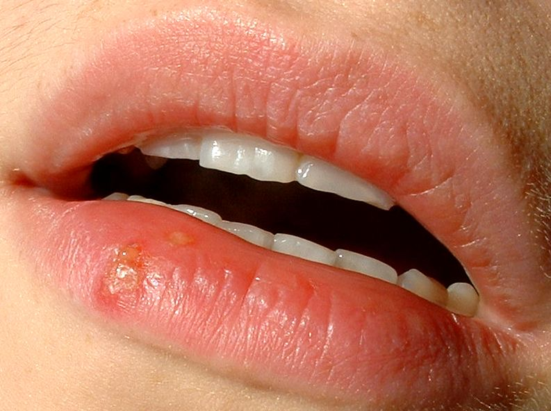
Eczema herpeticum — the dermatologic emergency
Kaposi varicelliform eruption is disseminated cutaneous HSV in skin whose barrier and immune environment are already abnormal. Atopic dermatitis is the classic substrate, but the same event occurs in Darier disease, Hailey-Hailey disease, pemphigus foliaceus, ichthyoses, cutaneous T-cell lymphoma, and burns. Impaired barrier function and a type 2-skewed cutaneous immune response are the usual explanations offered, and early-onset severe atopic dermatitis is the highest-risk group.
The morphology is the diagnosis: monomorphic, punched-out erosions of uniform size, often with scalloped or crenulated borders where adjacent erosions coalesce, hemorrhagic crust, and a striking disproportion between the amount of skin involved and how unwell and how sore the patient is. It expands over hours to days, favors the head, neck and upper trunk in atopic dermatitis, and is accompanied by fever and lymphadenopathy.
Management is systemic aciclovir-class therapy, started on clinical suspicion — not after the PCR resolves. Urgent ophthalmology involvement if the lesions are periocular, because herpetic keratitis is sight-threatening. Admit for intravenous therapy if the patient cannot take oral, is systemically unwell, is immunosuppressed, or the eruption is extensive.
Send two specimens from the same field: a deroofed-base swab for HSV PCR and a separate swab for bacterial culture and susceptibility. Secondary infection with Staphylococcus aureus and Streptococcus pyogenes is common and coexists with the virus. The correct answer is antiviral therapy plus culture-directed antibacterial cover where indicated — not one instead of the other.
Eczema herpeticum vs. impetiginized eczema. Both occur in a flaring atopic patient with crusted, weeping skin, and eczema herpeticum is repeatedly discharged on oral antibiotics alone. The discriminator is monomorphism: bacterial superinfection gives honey-colored crust over lesions of varied size and shape following the underlying eczema, while eczema herpeticum gives uniformly sized, round, punched-out erosions that look stamped into the skin, plus pain and fever out of proportion. When you cannot decide, treat for both and swab for both. Antibiotics alone in true eczema herpeticum lose you the days that matter.
Aciclovir resistance is rare in immunocompetent hosts and a real problem in the profoundly immunosuppressed, where it presents as a persistent, enlarging, verrucous or ulcerated HSV lesion that fails to heal on adequate therapy. The commonest mechanism is loss or alteration of the viral thymidine kinase, which is why cross-resistance to the whole nucleoside-analogue group is expected and why the salvage agents — foscarnet and cidofovir — still work, because neither requires viral thymidine kinase for activation. Practically: this is one of the last situations in which you must ask the laboratory for culture, because phenotypic susceptibility testing needs a viable isolate; genotypic sequencing of the relevant viral genes is offered by some reference laboratories. Warn the laboratory in advance — this is not a routine add-on.
Varicella zoster virus
One virus, two diseases separated by decades of latency in the dorsal root and cranial nerve ganglia.
Primary varicella
Lesions in different stages at the same timeSuccessive crops mean that at any moment you see macules, papules, vesicles on an erythematous base, pustules and crusts side by side. Distribution is centripetal — trunk-predominant — and, it involves the scalp and the oral mucosa and characteristically spares the palms and soles — the historical contrast with smallpox, which was centrifugal and involved palms and soles. Contagious from shortly before the rash until every lesion has crusted; airborne plus contact precautions.
Adults, pregnant patients, and the immunocompromised carry disproportionate risk of varicella pneumonia and disseminated disease.
“Different stages simultaneously” for varicella; “same stage within an anatomic area” for the orthopoxviruses. That single contrast has been an examination discriminator for a century and became relevant again in 2022.
Herpes zoster
Dermatomal, unilateral, does not cross the midlineProdromal pain, itch or dysesthesia precedes grouped vesicles confined to one or two contiguous dermatomes. A handful of scattered lesions just beyond the dermatome can occur in a normal host and does not by itself mean dissemination.
Disseminated zoster means lesions appearing outside the primary and immediately adjacent dermatomes — a threshold of roughly twenty such lesions is a widely used convention rather than a validated cut-off. It implies significant immunosuppression, mandates a search for the cause, and requires airborne plus contact precautions and systemic intravenous therapy.
Zoster ophthalmicus involves the ophthalmic division of the trigeminal nerve. The Hutchinson sign — vesicles on the tip, side or root of the nose, the territory of the nasociliary branch — raises the probability of ocular involvement, but its absence does not exclude it. Refer urgently either way.
Ramsay Hunt syndrome (herpes zoster oticus) is facial nerve involvement with vesicles in the external auditory canal, concha or on the anterior tongue and palate, plus a lower-motor-neuron facial palsy and sometimes vertigo or hearing loss. Recovery of facial function is poorer than in Bell palsy, which is why the ear must be examined in every facial palsy.
Antiviral therapy is most effective when started within 72 hours of rash onset, and should be given irrespective of that window in zoster ophthalmicus, disseminated disease, or immunosuppression. Zoster in a young adult without an obvious cause warrants HIV testing.
Postherpetic neuralgia is the dominant morbidity; increasing age is the strongest risk factor, with severe prodromal pain and severe acute rash also contributing.
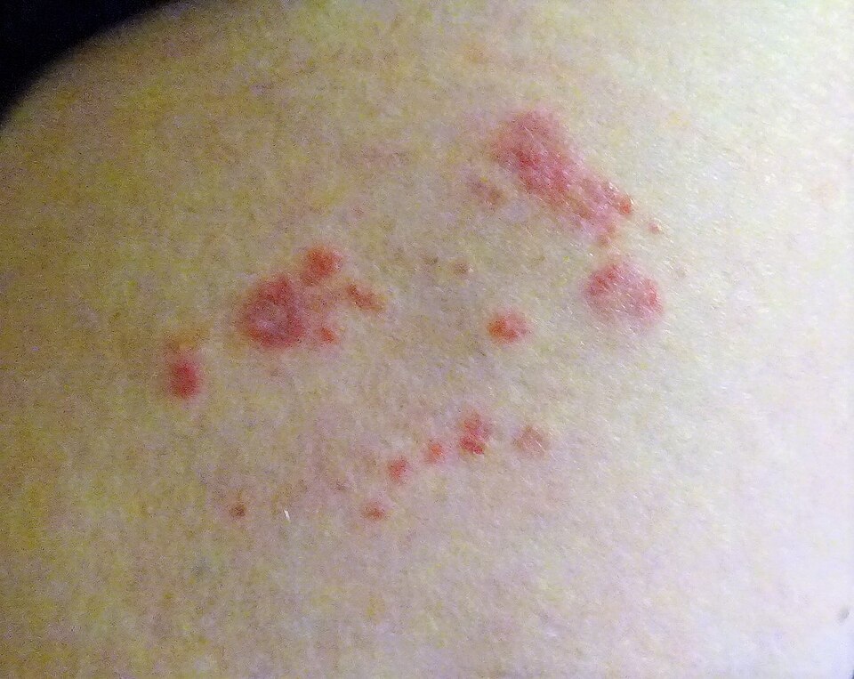
Vaccination has changed what walks into your clinic
Widespread childhood varicella immunization has reduced incidence and, importantly, changed the phenotype. Breakthrough varicella in a vaccinated child is milder, with fewer lesions that are often predominantly maculopapular rather than frankly vesicular — which makes it far harder to recognize clinically and far more dependent on the laboratory. Zoster vaccination in adults has moved in most high-income programs from a live-attenuated product to a recombinant adjuvanted subunit product, and eligibility criteria are region-specific.
Zoster does occur in vaccinated children and can arise from the vaccine (Oka) strain. Reference and public health laboratories can genotype the isolate or amplicon to distinguish vaccine strain from wild-type virus — a request worth making when the epidemiology or a vaccine-safety question hangs on it.
Zoster sine herpete — dermatomal pain without a rash — is a diagnosis of exclusion; when the question is central nervous system involvement or VZV vasculopathy, the specimen is cerebrospinal fluid, not skin — and request CSF anti-VZV IgG alongside VZV PCR, because CSF PCR is frequently negative in VZV vasculopathy while intrathecal anti-VZV IgG is the more sensitive marker.
Best-case scenario. Clean with saline rather than alcohol if you can, lift the roof with a sterile needle or the corner of a blade, and scrape the floor firmly with a flocked swab — you want keratinocytes, not just fluid. Send for the specific PCR you want; herpesvirus panels typically cover HSV-1, HSV-2 and VZV together.
If mpox or another orthopoxvirus is on the differential, do not follow the herpes reflex. Public health guidance generally asks for vigorous swabbing of the lesion surface without deroofing, and the collection device and medium are specified by the receiving public health laboratory. Call them first.
Debride any adherent slough, then swab the ulcer floor with pressure. For genital ulceration, the differential is not viral alone: send HSV PCR and the syphilis workup your region uses, and take a serologic panel including a fourth-generation HIV antigen/antibody test. Multiplex genital-ulcer NAAT panels exist in some laboratories and typically combine HSV, Treponema pallidum and Haemophilus ducreyi targets — availability is entirely institution-dependent.
In eczema herpeticum the erosions are the specimen. Choose one at the advancing edge rather than a central crust.
Yield falls, but not to zero. For VZV, crust material is a legitimate specimen and PCR performs respectably on it. For HSV, expect reduced sensitivity and interpret a negative result against the clinical probability. If the eruption is still evolving, the better move is to wait a few hours for a fresh vesicle rather than to sample old scab.
For suspected orf or milker's nodule, crust and lesion scrapings are exactly what a reference laboratory wants for parapoxvirus PCR or electron microscopy.
When you biopsy a violaceous nodule, an umbilicated papule in an immunocompromised patient, or an atypical persistent ulcer, split the specimen. One core in formalin for histopathology, immunohistochemistry and special stains; a second core in sterile saline to microbiology for bacterial, mycobacterial and fungal culture, and for molecular testing. Tell the pathologist what you suspect — the stains that answer the question are ordered on the basis of your clinical note.
Formalin destroys the option of culture. That decision is made at the bedside, not later.
Human papillomavirus
A non-enveloped double-stranded DNA virus whose entire life cycle is chained to a differentiating squamous epithelium — which is precisely why it cannot be grown in a routine clinical laboratory.
Cutaneous warts
Morphology follows site and typeVerruca vulgaris — hyperkeratotic papules with disrupted dermatoglyphics and thrombosed capillaries seen on paring, typically associated with types such as 1, 2, 4, 27 and 57.
Plantar — endophytic and painful with lateral compression; deep myrmecia lesions are classically HPV 1.
Flat warts — small, skin-colored to tan, minimally scaly, often linear from koebnerization on the face and shins; types 3 and 10.
Filiform — finger-like projections on the face, eyelids and neck.
Butcher's warts — extensive hand warts in meat, poultry and fish handlers, classically associated with HPV 7. A genuine occupational dermatosis worth asking about.
Anogenital disease
Low-risk and high-risk typesCondylomata acuminata are predominantly associated with the low-risk types 6 and 11, which are also the types implicated in recurrent respiratory papillomatosis. These types cause proliferative disease and are not the drivers of carcinoma.
High-risk types, 16 and 18 foremost, are associated with cervical, anal, vulvar, vaginal and penile squamous carcinoma and with a distinct subset of oropharyngeal squamous carcinoma. HPV 16 is also linked to periungual and digital squamous cell carcinoma, which is why a “wart” on a nail unit that resists treatment, distorts the nail, or bleeds deserves a biopsy rather than another round of cryotherapy.
Prophylactic vaccination targets the principal oncogenic types together with 6 and 11 in the multivalent products; schedules and eligible ages are set nationally.
The laboratory reality
HPV is not culturedThere is no clinical culture for HPV and no useful serologic test for an individual lesion. Diagnosis of cutaneous warts is clinical; histopathology, showing papillomatosis, hypergranulosis and koilocytes, confirms atypical or treatment-resistant lesions and, more importantly, excludes carcinoma.
Molecular typing is validated and clinically actionable in the anogenital and oncologic setting — cervical and anal screening specimens — not on a plantar wart. Sending a shave of a hand wart for “HPV typing” is a common trainee order that the laboratory cannot meaningfully act on.
p16 immunohistochemistry is used in pathology as a surrogate marker of transcriptionally active high-risk HPV, most established in oropharyngeal squamous carcinoma.
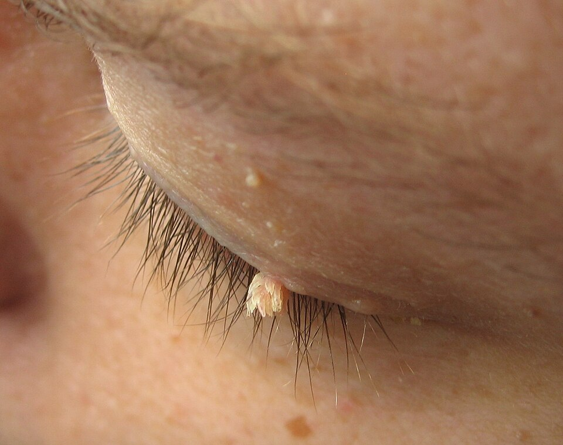
Epidermodysplasia verruciformis is the human experiment that proves cutaneous HPV can be oncogenic. An inherited defect in a small number of genes governing keratinocyte control of beta-papillomaviruses produces lifelong susceptibility to types such as HPV 5 and 8, giving flat wart-like papules and pityriasis versicolor-like macules from childhood, and squamous cell carcinoma on sun-exposed skin in adulthood — ultraviolet radiation and virus acting together. An acquired, phenocopying “EV-like” syndrome occurs in advanced HIV infection and in transplant recipients, and should prompt you to check immune status. Management is lifelong photoprotection and surveillance; there is no antiviral cure.
Molluscum contagiosum
A poxvirus — a molluscipoxvirus — and the only one of the group most dermatologists see weekly.
Clinical and pathologic
Umbilicated, pearly, and self-limited in the immunocompetentDome-shaped, skin-colored to pearly papules with a central umbilication, in children on the trunk, axillae and flexures, spread by direct contact, fomites, shared towels and swimming. In adults the pubic, genital and inner-thigh distribution reflects sexual transmission. Autoinoculation produces linear clusters along scratch lines, and molluscum is particularly happy in atopic dermatitis.
Because poxviruses replicate entirely in the cytoplasm, the diagnostic inclusion is cytoplasmic: the large eosinophilic Henderson-Paterson bodies that fill and displace the nucleus of infected keratinocytes within lobules of acanthotic epidermis.
MCV-1 accounts for most disease overall; MCV-2 is over-represented in adult and HIV-associated infection.
A single molluscum that becomes red, swollen and tender, with surrounding eczematous change, is usually not bacterially infected. This inflammatory reaction — the “beginning of the end” — heralds immune clearance and resolution. Recognizing it saves the child an unnecessary antibiotic and the parents an unnecessary fright.
Laboratory and immune context
No culture; the test that matters is a serologic oneMolluscum contagiosum virus is not cultivable in routine clinical laboratories. Diagnosis is clinical; if there is doubt, curette a lesion and send it, or squash the core on a slide — the inclusion bodies are unmistakable. PCR exists in some reference and research laboratories and is not part of ordinary practice.
Extensive, facial, giant or refractory molluscum in an adult is an immunologic finding, not a cosmetic one. Offer HIV testing. In a patient with known advanced HIV, widespread facial molluscum-like papules is a presentation that must be biopsied rather than assumed.
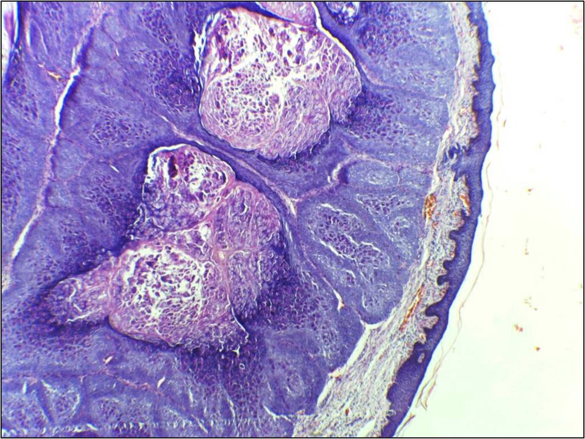
Molluscum vs. disseminated fungal infection in advanced HIV. Umbilicated, dome-shaped, flesh-colored facial papules in a patient with a very low CD4 count are the classic cutaneous presentation of disseminated cryptococcosis, and of disseminated histoplasmosis, coccidioidomycosis and Talaromyces marneffei infection in the appropriate geography. These are systemic, life-threatening infections whose first visible sign is on the face, and they can be clinically indistinguishable from molluscum. Biopsy: send one portion in formalin for histology with fungal stains and one sterile portion for fungal culture, and send a serum cryptococcal antigen with blood cultures at the same visit. Curetting these lesions as “molluscum” and moving on is a genuine cause of preventable death.
Enteroviruses and parvovirus B19
Two very different viruses that share one teaching point: the eruption you are looking at may be an immune phenomenon occurring after the infectious phase, which changes what you tell the family.
Enteroviruses
Non-enveloped RNA picornaviruses, summer and autumn in temperate climatesClassic hand-foot-and-mouth disease — coxsackievirus A16 above all — gives oval gray-white vesicles on erythematous bases on the palms, soles and lateral digits, oral erosions, and a low-grade fever in a preschool child. Enterovirus A71 produces similar skin findings but is the type associated with neurologic complications including brainstem encephalitis and acute flaccid paralysis, and with large outbreaks in the Asia-Pacific region.
Coxsackievirus A6 rewrote the chapter. It causes a far more widespread, atypical eruption that extends well beyond hands, feet and mouth — perioral, buttocks, limbs — is frequently bullous and hemorrhagic, has a striking predilection for areas of active or previous atopic dermatitis (“eczema coxsackium”, a mimic of eczema herpeticum), and readily infects adults. Weeks later come palmoplantar desquamation and onychomadesis, proximal nail-plate separation and shedding, which brings the family back convinced something new has happened.
Herpangina is coxsackie A disease of the posterior oropharynx — vesicles and ulcers on the soft palate, uvula and tonsillar pillars — in contrast to primary herpetic gingivostomatitis, which is anterior and involves the gingiva and perioral skin.
Enterovirus laboratory
Where a positive result can still mislead youEnterovirus reverse-transcription PCR on a vesicle swab, throat swab, stool or cerebrospinal fluid is the workhorse. Culture is insensitive for many coxsackie A types and is not a reasonable first move.
The interpretive trap: enteroviruses are shed in stool for weeks after an infection resolves. A positive stool PCR therefore does not establish that enterovirus is causing the rash in front of you today. Lesion and throat specimens carry more weight for attribution.
Typing — distinguishing A6 from A16 from EV-A71 — requires sequencing, usually of the VP1 region, and is generally performed by reference or public health laboratories for outbreak investigation rather than for individual care.
Be aware that multiplex respiratory panels commonly report a combined “enterovirus/rhinovirus” target and cannot separate the two, which limits what such a result tells you about a rash.
Parvovirus B19
A single-stranded DNA virus with a taste for erythroid progenitorsErythema infectiosum — fifth disease. A brief nonspecific prodrome, then confluent erythema of both cheeks with circumoral pallor, followed by a lacy, reticular erythema on the extensor limbs and trunk that fades and recurs over weeks with heat, sunlight, exercise or emotion. That relapsing behavior is diagnostic and reassures rather than alarms.
Papular-purpuric gloves-and-socks syndrome is the adolescent and young-adult presentation: sharply demarcated erythema, edema and petechiae or purpura of the hands and feet stopping abruptly at the wrists and ankles, often with painful oral erosions and fever.
Arthropathy in adults, particularly women, is symmetric and small-joint and mimics early rheumatoid arthritis closely enough to reach a rheumatology clinic.
The virus uses the P antigen (globoside) on erythroid precursors as its receptor — which explains everything that follows, and why the rare individuals who lack P antigen are naturally resistant.
The two situations that are not benign
Ask about hemolysis and about pregnancy, every timeTransient aplastic crisis. In anyone with chronic hemolysis and a shortened red cell lifespan — sickle cell disease, hereditary spherocytosis, thalassemia — a week of arrested erythropoiesis produces abrupt severe anemia with reticulocytopenia. These patients are usually still profoundly viremic and highly infectious when they present, and they need isolation precautions.
Pregnancy. Maternal infection can cause fetal anemia, hydrops fetalis and loss, with the greatest risk in the earlier half of pregnancy. Exposure during pregnancy warrants serologic assessment and obstetric involvement — this is not a reassurance-only conversation.
Immunocompromise. Patients who cannot mount antibody may fail to clear the virus and develop chronic pure red cell aplasia. Here serology is unreliable and B19 DNA PCR is the correct test, as it is for fetal diagnosis on amniotic fluid and for aplastic crisis. In the immunocompetent patient with a typical rash, IgM and IgG serology is what the laboratory expects.
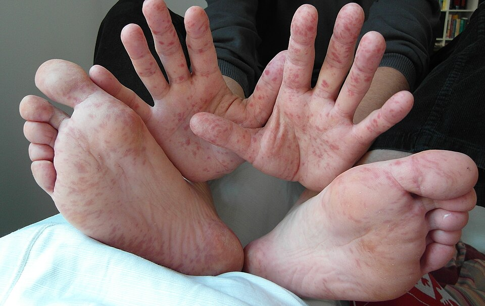
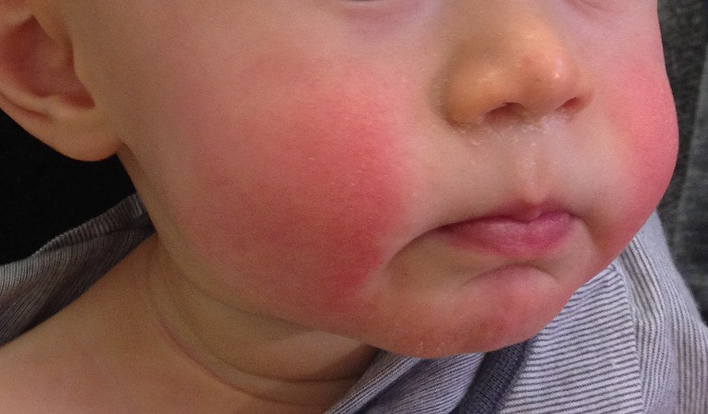
The counterintuitive one, and it is asked constantly. In classic erythema infectiosum the rash is immune-complex mediated and appears after viremia has resolved. By the time you see the slapped cheeks, the child is generally no longer infectious, and exclusion from school or daycare achieves nothing. Every other exanthem you were taught works the other way round. The two exceptions that keep it honest: patients presenting with aplastic crisis are still viremic and infectious, and patients with papular-purpuric gloves-and-socks syndrome may still be viremic at the time of the eruption. So the rule is not “B19 rash equals non-infectious” — it is “the fifth-disease rash equals non-infectious.” Which patient is in front of you decides the infection-control answer.
Roseola, measles and rubella
The classic exanthems, reframed around which laboratory test to send and who else needs to know.
| Entity | Agent | Eruption | The extracutaneous tell | Laboratory |
|---|---|---|---|---|
| Roseola infantum (exanthem subitum) | Human herpesvirus 6B, less often HHV-7 | Rose-pink macules and papules on the trunk appearing as the fever breaks | Three to five days of high fever in a well-looking infant; Nagayama spots on the soft palate and uvula; febrile seizures | Clinical. Serology is unhelpful because seroprevalence is near universal |
| Measles | Measles morbillivirus | Morbilliform eruption starting at the hairline and behind the ears, spreading cephalocaudally and becoming confluent, then desquamating | The prodrome — fever with cough, coryza and conjunctivitis — and Koplik spots on the buccal mucosa a day or two before the rash | urgent Measles IgM serology plus RT-PCR on a throat or nasopharyngeal swab and urine; genotyping at the public health laboratory |
| Rubella | Rubella virus | Pink macules starting on the face and descending, clearing within about three days | Tender posterior auricular, suboccipital and posterior cervical lymphadenopathy; arthralgia in adult women | IgM serology plus RT-PCR. False-positive rubella IgM is a recognized problem — confirm before acting |
Measles is a public health emergency, and the notification comes before the result. It is among the most transmissible pathogens known, requires airborne precautions, and is immediately notifiable in essentially every jurisdiction. If you suspect it, you mask and isolate the patient on arrival, telephone your infection-prevention team and public health authority, and let them tell you which specimens their laboratory wants — testing pathways for measles are usually routed through public health rather than the hospital laboratory. Two clinical caveats: measles IgM may be negative in the first days of the rash, so a single early negative serology does not exclude it and PCR should be sent alongside; and partially immune or immunocompromised patients may have a modified rash or, rarely, no rash at all. Complications range from otitis and pneumonia to acute encephalitis and, years later, subacute sclerosing panencephalitis. The World Health Organization recommends vitamin A supplementation for children with measles.
Two HHV-6 facts that matter once you rotate through transplant dermatology. First, HHV-6 reactivation is well described in drug reaction with eosinophilia and systemic symptoms (DRESS) and is part of the reason DRESS behaves like a viral illness with a drug trigger. Second, chromosomally integrated HHV-6: in a small proportion of people the viral genome is integrated into telomeric DNA in every nucleated cell and inherited through the germline. Whole-blood HHV-6 PCR in these individuals returns persistently enormous viral loads that have nothing to do with active infection, and has led to patients being treated with antivirals for a laboratory artifact. If an HHV-6 viral load looks impossibly high and does not move with treatment, ask the virology laboratory about integration.
Zoonotic and occupational poxviruses
The parapoxviruses are a small, self-limited, and frequently over-treated corner of dermatology. The diagnosis lives in the exposure history, not in the morphology.
Orf (contagious ecthyma)
Orf virus, from sheep and goatsTransmission is direct contact with infected animals or contaminated equipment: farmers, shepherds, shearers, veterinarians, abattoir and butchery workers, and people who handle or slaughter animals for religious festivals — clusters around Eid al-Adha are well described in the literature and in urban centers far from any farm.
One or a few nodules on the fingers, hands or forearms, classically evolving through a sequence of stages over roughly six weeks — papular, target-like with a red center and white ring, weeping and nodular, then regenerative, papillomatous, and finally regressive. Low-grade fever, lymphangitis and regional lymphadenopathy can accompany it. A secondary erythema multiforme reaction some weeks later is a recognized sequel and is not a drug allergy.
Milker's nodule
Pseudocowpox virus, from cattleAcquired from lesions on the teats and udders of cattle, so the classic patient is a dairy worker or anyone hand-milking. Clinically and histologically it is essentially indistinguishable from orf; the animal decides the name.
Histology of either shows ballooning degeneration with full-thickness epidermal necrosis, eosinophilic intracytoplasmic inclusions, and a densely vascular dermal infiltrate — which is exactly why these lesions are misread as pyogenic granuloma.
Laboratory confirmation, when needed, is parapoxvirus PCR on a lesion swab, crust or biopsy at a reference laboratory, or electron microscopy demonstrating the characteristic ovoid parapoxvirus particles. There is no routine culture. In profoundly immunosuppressed patients lesions can become giant and progressive and warrant specialist input.
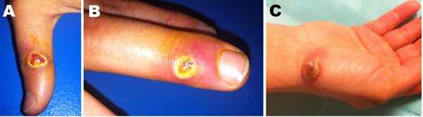
The whole management of orf and milker's nodule is: take the exposure history, confirm if you must, protect the lesion, and wait. Do not excise. Do not incise and drain. Do not treat as a bacterial abscess. These lesions are self-limiting, surgery leaves a worse scar than the disease, and the operator risks inoculating themselves. Antibiotics are indicated only for genuine secondary bacterial infection. Counsel on animal-handling gloves and hand hygiene, and warn about the possible erythema multiforme reaction so it is not later blamed on a drug.
Mpox
An orthopoxvirus, in the same genus as variola and vaccinia, with two recognized clades and an epidemiology that changed abruptly in 2022.
What the lesions look like and why that matters
The classic description is of deep-seated, firm, well-circumscribed papules that become vesicles and then umbilicated pustules, often painful, and characteristically at the same stage of evolution within a given anatomic area — the contrast with the mixed-stage crops of varicella. Distribution is centrifugal, with palm and sole involvement, and lesions can be few in number. Prominent lymphadenopathy is the feature that historically separated mpox from smallpox at the bedside.
The 2022 global outbreak, driven by clade II virus and transmitted largely through sexual networks, shifted the presentation toward anogenital, perianal and oral lesions, sometimes a solitary lesion, frequently with proctitis, tonsillar or pharyngeal involvement, and lesions at different stages across different body sites. Very few of those patients had the textbook centrifugal eruption. If you anchor on the old description you will miss the modern case.
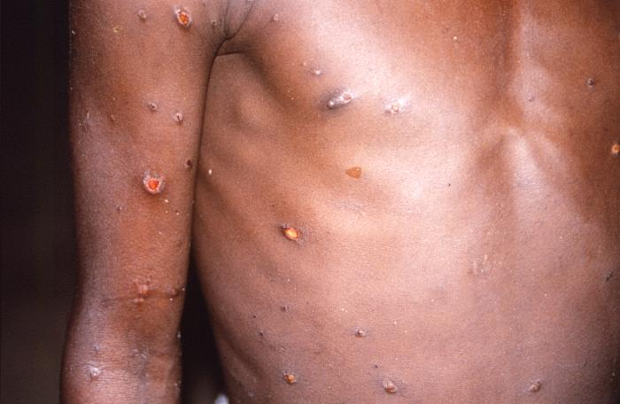
Suspected mpox is a coordinated event rather than a swab. Place the patient in a single room and apply the precautions your jurisdiction currently specifies — contact and droplet plus airborne measures for aerosol-generating procedures is the general shape, but guidance has changed repeatedly since 2022 and is genuinely region-specific, so check your local infection-prevention policy rather than relying on memory. Notify public health, then collect lesion swabs using the device and medium the receiving laboratory requests, label them as suspected orthopoxvirus, and inform the laboratory before the specimen arrives so it is handled at the correct containment level. Test concurrently for other sexually transmitted infections, including syphilis and HIV, because co-infection was common in the 2022 outbreak and secondary syphilis is a direct mimic. Antiviral therapy and vaccination are available through public health protocols, and access, indications and supporting evidence differ by country.
Human herpesvirus 8 and Kaposi sarcoma
A gammaherpesvirus driving an endothelial spindle-cell proliferation — and one of the few situations where a biopsy separates an incurable neoplasm from a curable bacterial infection.
Older men of Mediterranean, Middle Eastern and Eastern European origin. Violaceous macules, plaques and nodules on the distal lower legs and feet, often with lymphedema, running an indolent course over years. Visceral involvement is uncommon. Treatment is frequently local, and the competing risk is a second malignancy rather than the Kaposi sarcoma itself.
Described in sub-Saharan Africa before the HIV pandemic and independent of it. Behavior spans an indolent adult nodular form to aggressive infiltrative disease, and includes a lymphadenopathic form in children that can be fulminant with little or no skin involvement. HHV-8 seroprevalence in these populations is high, which is the background against which the disease occurs.
Transplant recipients and others on sustained immunosuppression, arising either from reactivation of the recipient's own HHV-8 or from donor-derived virus. The therapeutic lever is the immunosuppression itself: reduction, or a switch within the regimen toward an mTOR-inhibitor-based approach, can produce regression. That decision belongs to the transplant team and is balanced against graft rejection.
An AIDS-defining illness, more aggressive, often widely distributed with a tendency to follow skin tension lines, and with mucosal involvement — the hard palate is a classic site — plus gastrointestinal and pulmonary disease. Effective antiretroviral therapy is the foundation of treatment, with systemic chemotherapy added for extensive or visceral disease. HHV-8 also causes primary effusion lymphoma and multicentric Castleman disease, so a new Kaposi sarcoma diagnosis should prompt a broader assessment.
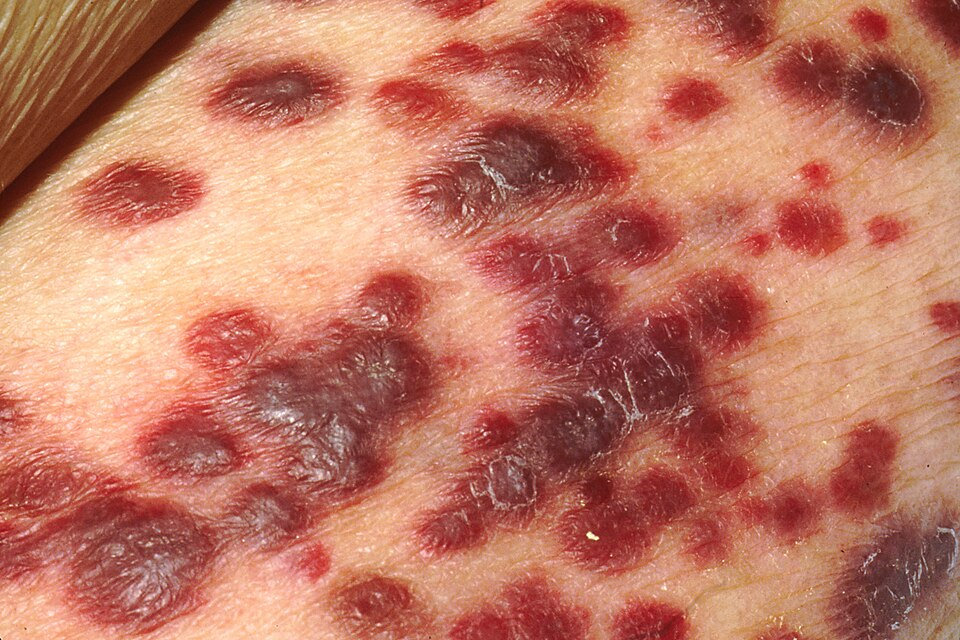
Kaposi sarcoma vs. bacillary angiomatosis. In a patient with advanced HIV, friable violaceous-to-red vascular papules and nodules may be either. Bacillary angiomatosis is caused by Bartonella henselae (cat and cat-flea exposure) or Bartonella quintana (body lice, homelessness), can involve liver and spleen as peliosis, and is curable with a macrolide or tetracycline-class antibiotic. Kaposi sarcoma is not. The distinction is made on biopsy: bacillary angiomatosis shows a lobular vascular proliferation with neutrophils and amphophilic granular material, and a Warthin-Starry silver stain reveals clumped bacilli; Kaposi sarcoma shows spindle cells with slit-like vascular spaces and slotted red cells, and is confirmed by HHV-8 latency-associated nuclear antigen immunohistochemistry, which is negative in bacillary angiomatosis. Bartonella is fastidious and recovered poorly on routine culture, so tissue PCR or serology carries the diagnosis when histology is equivocal. Biopsy the violaceous nodule. Do not assume.
Violaceous or red vascular papules and nodules in an immunocompromised patient
Resist a clinical-only diagnosis. Take a punch biopsy and split it.
Formalin portion
Request routine histology plus HHV-8 latency-associated nuclear antigen immunohistochemistry and a Warthin-Starry stain. Write the differential on the request form — these stains are ordered because you asked.
Sterile portion to microbiology
Bacterial, mycobacterial and fungal culture, and hold for molecular testing. Tell the laboratory Bartonella is on the differential so the specimen is not discarded at 48 hours.
Warthin-Starry-positive bacilli, neutrophilic vascular proliferation, HHV-8 negative. Treat with an appropriate antibiotic class and assess for systemic involvement. Curable.
Spindle cells with slit-like vessels, HHV-8 positive. Stage it, optimize antiretroviral therapy if HIV-associated or address immunosuppression if iatrogenic, and involve oncology for extensive or visceral disease.
Acute retroviral syndrome
The can't-miss viral exanthem, and the one where the reflex test gives you the wrong answer.
The clinical picture
Roughly two to four weeks after exposureA mononucleosis-like illness — fever, sore throat, generalized lymphadenopathy, myalgia, headache, sometimes diarrhea — with a non-pruritic morbilliform eruption favoring the upper trunk, neck and face, and occasionally the palms and soles.
The finding that should stop you is painful mucocutaneous ulceration: shallow, well-demarcated oral, genital, anal or esophageal ulcers occurring together with the exanthem. A morbilliform rash plus mucosal ulcers plus fever is acute HIV until proven otherwise.
Secondary syphilis is the principal mimic and is common as a co-infection, so both are tested for together, not sequentially.
The laboratory point
Antibody may not have arrived yetDuring acute infection the patient is intensely viremic but may not yet have seroconverted. An antibody-only test can be negative — and that includes many point-of-care rapid tests and oral-fluid devices.
Order a laboratory-based fourth-generation antigen/antibody immunoassay, which detects p24 antigen and therefore closes part of the window, and an HIV-1 RNA (viral load) test, which becomes detectable earliest. In suspected acute infection you send both.
A positive result is the beginning of care, not the end of the encounter: immediate linkage to HIV services, partner notification through the appropriate public health route, and concurrent screening for other sexually transmitted infections.
This is the classic missed diagnosis in the emergency department and the walk-in clinic. A young adult with fever and pharyngitis is given an aminopenicillin; a morbilliform rash follows a few days later; the rash is labeled a drug eruption or “a viral exanthem”; a rapid HIV test is negative and everyone relaxes. Every step is plausible and the conclusion is wrong. Two safeguards: examine the mouth and the genitals in every morbilliform eruption, because the ulcers are the tell; and understand that a negative antibody-based HIV test in the window period is expected, not reassuring. If acute HIV is on your differential, the negative rapid test does not remove it — only a fourth-generation assay together with an HIV-1 RNA test does.
Consolidation
You are consulted on a 4-year-old with severe atopic dermatitis, fever, and rapidly spreading crusted facial lesions. What do you send, and what do you start?
Examine for monomorphic punched-out erosions with scalloped borders, especially at the advancing edge and around the eyes. Deroof or select an early erosion and send a firmly scraped swab for HSV PCR in the medium your laboratory specifies, and take a separate swab for bacterial culture and susceptibility. Start systemic aciclovir-class therapy on clinical suspicion — do not wait for the PCR. Assess hydration and oral intake and admit for intravenous therapy if the child cannot drink or is systemically unwell. Ophthalmology review is mandatory if the lesions are periocular. Add antibacterial cover directed by culture if there is clinical evidence of superinfection; do not substitute it for the antiviral.
Why does a Tzanck smear showing multinucleated giant cells not finish the job?
Because it identifies a cytopathic effect shared by the alphaherpesviruses. Multinucleated giant cells with nuclear molding and chromatin margination occur in HSV-1, HSV-2 and VZV alike, so the smear tells you “herpesvirus” and stops there. It cannot type HSV, which matters for prognosis and counseling in genital disease; it cannot separate zoster from a zosteriform HSV recurrence, which matters for infection control and for whether you consider immunosuppression; and its sensitivity depends heavily on lesion age and on the person making the slide. It remains a defensible bedside adjunct when a result in minutes would change your immediate action — it is not a substitute for PCR.
A patient asks why their child's wart cannot simply be “cultured and typed like a bacterial infection.”
Because human papillomavirus completes its life cycle only inside a differentiating stratified squamous epithelium. It has no free-living replicative stage that a broth or an agar plate or a standard cell monolayer can support, so there is no clinical culture and there are no susceptibility breakpoints — the concepts do not transfer from bacteriology. Nucleic acid detection and typing assays do exist, but they are validated and clinically actionable on anogenital and cervical screening specimens where the result changes cancer-prevention management. On a plantar wart, a type result changes nothing you would do. The diagnosis is clinical, and histopathology is reserved for lesions that are atypical, refractory, or suspicious for carcinoma.
A returning traveler and abattoir worker has two painless nodules on the index finger, three weeks old, with a red center and pale ring. The referral asks about incision and drainage.
This is orf until proven otherwise, and the target-like stage fits the timeline. Take the exposure history explicitly — sheep or goats, shearing, slaughter, or preparation of an animal for a religious festival — because the history carries more diagnostic weight than the morphology. Confirmation is optional and, if wanted, is parapoxvirus PCR on a swab, crust or biopsy at a reference laboratory, or electron microscopy; there is no routine culture. Decline incision and drainage. The lesion is self-limiting over roughly six weeks, surgery scars worse than the natural history, and manipulation risks inoculating the operator. Dress the lesion, advise glove use for animal handling, and warn about a possible erythema multiforme reaction weeks later so it is not misattributed to a drug.
What do you actually say when you telephone the virology laboratory?
Give them five things and you will almost never get the wrong test. First, the specific organism or organisms you are asking about, not “a viral screen.” Second, the specimen you have or intend to take, and the age of the lesion. Third, whether the patient is immunocompromised, pregnant, or has a hemolytic anemia — each changes which assay is valid. Fourth, whether this is a notifiable or high-consequence pathogen, so the specimen is handled at the right containment level and public health is engaged. Fifth, what you will do differently depending on the result, which lets the laboratory tell you whether the turnaround makes that plan realistic. Then ask two questions back: which transport medium and swab type their assay is validated on, and whether the multiplex panel they will run actually includes your target.
Across this whole section, three habits do most of the work. Sample the youngest lesion and sample it properly, because no assay recovers from a bad swab. Split the specimen whenever infection and neoplasia are both on the list, because formalin closes the door on culture. And name the pathogen you are chasing when you speak to the laboratory, because the correct test is almost never the default one.
Infestations and parasitic disease
Scabies, lice, and the travel differentials
Infestations and parasitic skin disease
This is the corner of dermatology where the laboratory is least able to help you unless you tell it exactly what you want. There is no reflex panel for an itchy patient. Almost every diagnosis here is made by choosing the right lesion, sampling it the right way, and then naming the organism you expect — because the mount, the stain, the medium and the incubation temperature all differ by parasite, and most of them are not part of a routine workflow. What follows is organized around that interface: what the organism is doing in the skin, what specimen actually contains it, and what the bench can and cannot do once it arrives.
Three ideas carry most of the clinical weight in this section. First, a negative scraping never excludes scabies. Second, crusted scabies is not a severe rash — it is a transmission event, and treating it as a dermatologic problem alone is how ward and nursing-home outbreaks begin. Third, for leishmaniasis and for the migratory helminth tracks, the specimen you send and the temperature it is held at determine whether the diagnosis is ever made at all.
Scabies: the organism, and why the itch lags the infestation
Sarcoptes scabiei var. hominis is an obligate human mite. The fertilized female tunnels within the stratum corneum — she never enters the living epidermis — and advances a few millimeters a day, laying two to three eggs daily and depositing fecal pellets (scybala) behind her. Egg to adult takes roughly two weeks. An ordinary infestation is a remarkably small ecological event: on the order of ten to fifteen adult female mites on the entire body. That number explains nearly everything about how scabies is diagnosed and mis-diagnosed.
Mite biology you can use at the bedside
Sarcoptes scabiei var. hominisHost specificity is near-absolute. Animal-derived Sarcoptes variants (dog sarcoptic mange) will bite a human and cause a pruritic papular eruption, but they cannot burrow or reproduce in human skin — so there are no burrows, no interdigital predilection, and the eruption is self-limited once the animal is treated. That distinction gets asked.
Off-host survival is longer in cool, humid conditions and shorter in warm dry air, which is why fomite transmission matters far more in crusted disease (enormous burden shed continuously) than in ordinary scabies.
Itch as a type IV response
The single most useful mechanistic fact herePruritus in scabies is not caused by the mite mechanically. It is a delayed-type hypersensitivity response to mite antigen, eggs and scybala, with an IgE-mediated component layered on top. Sensitization must occur first.
Two consequences follow directly. A contact who is currently asymptomatic may already be infested and infectious, which is the entire argument for treating all household and close contacts simultaneously rather than waiting for them to itch. And a patient who itches within forty-eight hours of an exposure has almost certainly met this mite before.
The same immunology explains nodular scabies. Persistent firm pruritic nodules on the scrotum, penile shaft, axillae or groin represent a hypersensitivity granuloma to retained antigen, not living mites. They can persist for months after cure and respond to intralesional or potent topical corticosteroid — not to more scabicide.
Where to look
Distribution is diagnosticThe burrow is the pathognomonic lesion: a thread-like, grey-white, linear or S-shaped tract two to ten millimeters long, often with a minute vesicle or dark speck at the leading end where the mite sits. Everything else — the widespread excoriated papules, eczematous change and secondary impetiginization — is host response and is not specific.
- Finger web spaces and the sides of the fingers — the highest-yield site.
- Flexor wrists, elbows, anterior axillary folds.
- Periumbilical skin, waistband, buttocks.
- Areolae and periareolar skin in women.
- Penile shaft and scrotum in men — a burrow or nodule here is close to diagnostic.
In immunocompetent adults the head, neck, palms and soles are spared. In infants and young children they are not: palmoplantar vesiculopustules and scalp or facial involvement are typical, and the same is true in the elderly and the immunosuppressed. Do not talk yourself out of scabies in a baby because the face is involved.
Getting the specimen right
Mineral oil, not potassium hydroxidePlace a drop of mineral oil on the lesion, scrape firmly along the length of a burrow or across an intact non-excoriated papule with a number 15 blade held at an angle — enough to remove stratum corneum, to the point of pinpoint bleeding — then transfer oil and scale to a slide and coverslip. Read at low power.
Any one of these findings confirms. Mineral oil is preferred over potassium hydroxide because it keeps the mite and eggs intact and adherent, whereas alkali clears and dissolves scybala and lets material float off the slide. Use potassium hydroxide when the question is dermatophyte, not mite.
Scrape several sites, not one. Choose non-excoriated lesions — the patient has usually already removed the mite from anything that looks impressive. In practice this preparation is made and read by dermatology at the point of care; many microbiology laboratories have no workflow for it, so do not assume sending scale in a container will produce an answer.
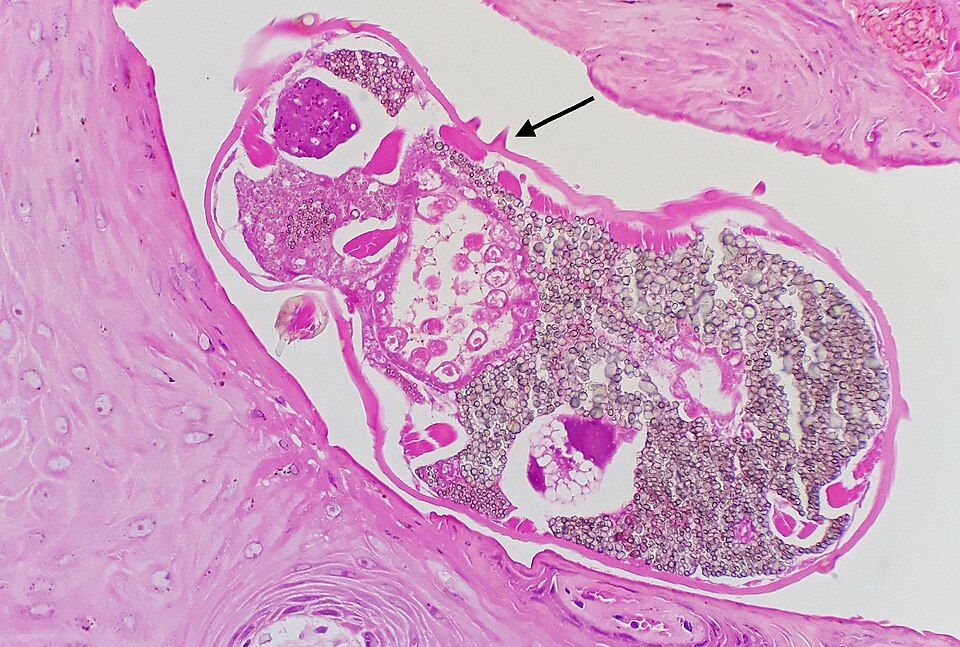
The reference bedside test. Specificity is essentially one hundred percent — a mite, an egg or a cluster of scybala in the oil mount ends the discussion. Sensitivity is the problem, and it is a sampling problem, not a laboratory problem: with roughly a dozen mites distributed over an entire body surface, a small number of scrapes will frequently sample uninfested skin.
Yield rises when you scrape burrows rather than papules, scrape multiple sites, and scrape lesions the patient has not excoriated. Scybala are often the easiest positive finding — small oval brown pellets, usually in clumps, trailing behind the mite in the tract. Eggs are ovoid and refractile; hatched eggshell fragments retain a characteristic curled outline.
Dermoscopy has become the practical first-line confirmatory step because it is non-invasive, repeatable, and lets you select the exact burrow to scrape. The classic finding is a small dark triangular structure at the end of a faint linear tract — the pigmented anterior mouthparts and forelegs of the mite, described as the delta-wing jet, with the burrow behind it as the contrail. It is also called the hang-glider or jet-with-contrail sign.
Yield depends heavily on magnification, on operator experience, and on skin tone: the dark triangle is harder to appreciate on richly pigmented skin, and dermoscopy is less reliable when lesions are heavily excoriated or eczematized. Use it to target the scrape rather than to replace it.
The burrow ink test — ink applied to a suspicious lesion, then wiped with alcohol, leaving the tract outlined — is a simple bedside adjunct, particularly useful in children and in teaching settings. Adhesive tape stripping of lesions and examination of the tape can capture mites and is more practical in an uncooperative patient than blade scraping. Reflectance confocal microscopy visualizes mites in vivo but is confined to centers that have it.
Polymerase chain reaction assays for Sarcoptes deoxyribonucleic acid on scrapings or tape lifts exist and are more sensitive than microscopy, but they are not standardized and are not offered by most clinical laboratories. Availability is genuinely institution- and region-dependent; ask your laboratory before you promise a patient a test. Histopathology (as in the figure above) is a bystander diagnosis — useful when a biopsy was taken for another reason, not something to order deliberately for suspected scabies.
The 2020 International Alliance for the Control of Scabies consensus criteria formalize what most clinicians already do: a tier of confirmed scabies (organism visualized), clinical scabies (burrows, or typical male genital lesions, or typical distribution in two of the classic sites plus a suggestive history), and suspected scabies. The framework exists precisely because organism visualization cannot be required.
A negative skin scraping does not exclude scabies, and never has. With roughly ten to fifteen mites on an entire body, a negative preparation is far more likely to reflect where you scraped than whether the patient is infested. Scabies remains a clinical diagnosis supported — not gated — by microscopy. Treating on strong clinical grounds after a negative scrape is correct practice, and withholding treatment because “the scraping was negative” is a recognized source of prolonged household transmission. Two other traps sit alongside this one: prior topical corticosteroid produces scabies incognito, in which burrows are effaced and the eruption looks like eczema while the mite burden climbs; and an itchy patient with a bland examination should still prompt you to look at the finger webs and genitalia. When the examination and repeated scrapings are genuinely negative, the leading alternatives are biting arthropods rather than an infestation of the skin itself: Cimex lectularius (bed bugs), producing grouped or linear “breakfast, lunch and dinner” papules on exposed skin with a travel or new-mattress history; Cheyletiella and other animal mites acquired from a pet, where the animal is infested and the human is not; and chiggers after outdoor exposure. None of these burrow, none of them will ever produce a positive scraping, and all of them are diagnosed by history and by finding the source — which is why they are the ones that get treated with repeated scabicide instead., because the specific lesions are small and easily missed.
Crusted (Norwegian) scabies: a public-health problem wearing a dermatologic costume
Crusted scabies is the same organism with the host response removed. Where an ordinary infestation carries a dozen mites, crusted scabies carries thousands to millions, because a defective or blunted cell-mediated response — or simply an inability to scratch — permits unchecked proliferation within hyperkeratotic scale. The clinical picture inverts your expectations, and so does the infection-control picture.
Recognizing it
Often not itchy — that is the trapThick, adherent, fissured hyperkeratotic crusts, frequently on hands, feet, elbows and scalp, with gross subungual and periungual debris that is packed with mites. Erythroderma is a recognized presentation. Pruritus is mild or absent in a substantial proportion of patients, which is exactly why the diagnosis is delayed and why the eruption is repeatedly treated as psoriasis, eczema, an adverse drug eruption or seborrheic dermatitis.
The corollary is a gift diagnostically: because mite density is enormous, a scraping is almost always positive, often with numerous mites and eggs in a single field. If you suspect crusted scabies, the microscopy will usually reward you immediately.
Who gets it
A host-defense and behavior list- Human immunodeficiency virus infection, and human T-lymphotropic virus type 1 infection — the latter is a classic and geographically concentrated association.
- Systemic corticosteroids, other immunosuppressants, and transplant recipients; also potent topical steroid applied to undiagnosed ordinary scabies.
- Hematologic malignancy.
- Neurologic or cognitive impairment, sensory neuropathy, paralysis, dementia — anyone who cannot perceive itch or cannot scratch.
- Down syndrome.
- Advanced age, frailty, and residence in long-term care.
- Crowded and resource-limited settings where scabies is hyperendemic.
Note that two mechanistically distinct routes converge: genuine immunosuppression, and mechanical failure to scratch. The second is easy to forget on rounds.
A patient with crusted scabies sheds mite-laden scale continuously into bedding, clothing, furniture and onto the hands and sleeves of everyone who touches them. Transmission requires only brief contact or a fomite, unlike ordinary scabies which generally needs prolonged skin-to-skin contact. A single unrecognized case in a nursing home, rehabilitation unit or hospital ward reliably seeds an outbreak among residents, staff and visitors, and the index case is frequently identified only in retrospect after multiple staff members present with ordinary scabies. Secondary bacterial infection through fissured skin is the other danger: Staphylococcus aureus and Streptococcus pyogenes invade readily, and bacteremia and sepsis are the usual mechanism of death. In populations where scabies is hyperendemic, the downstream burden of streptococcal skin infection includes acute post-streptococcal glomerulonephritis. Crusted scabies is therefore an infection-prevention notification, not merely a prescription.
Managing crusted scabies: the five things that must all happen
- Combined therapy. Topical scabicide plus repeated oral therapy. Topical alone is inadequate because scabicide cannot penetrate thick crust, and oral alone is inadequate for the same reason in reverse — drug reaches the mite poorly within dense keratin. Repeat dosing of the oral agent is required because avermectin-class drugs are not ovicidal, so eggs surviving the first dose must be caught after they hatch.
- Keratolysis. Softening and physically debulking crust so the scabicide can reach the mites. Skipping this step is the commonest reason for apparent treatment failure.
- Contact precautions and cohorting until treatment is complete and the patient is assessed as no longer infested. Gowns and gloves, dedicated equipment, careful handling of linen.
- Contact tracing. Household members, all care staff, other residents on the unit, therapists, and visitors — treated simultaneously and regardless of symptoms, because the incubation logic above means asymptomatic contacts are still infested and still transmitting.
- Environmental measures. Hot-water laundering and hot drying, or sealing non-washable items for a period exceeding mite survival; vacuuming; attention to mattresses and upholstered furniture. Environmental measures matter far more here than in ordinary scabies.
Specific agents, dosing intervals and the number of oral doses vary by protocol, by regulatory setting and by patient factors including weight, pregnancy and age; scabicide resistance has been reported in several regions and influences local choice. Follow your institution’s and your region’s current guidance rather than a remembered regimen. The principles above — combined therapy, keratolysis, precautions, simultaneous contact treatment, environment — do not vary.
Post-scabetic itch is not treatment failure. Because the pruritus is a hypersensitivity response to antigen that remains in the stratum corneum until it is shed, itch routinely persists for two to four weeks after every mite has been killed, and occasionally longer. This is expected and it is not a reason to re-treat. Overtreatment is the commonest error in scabies management and it is not harmless: repeated scabicide application produces an irritant and sometimes allergic contact dermatitis that itches more, which the patient and the clinician then interpret as ongoing infestation, and a cycle begins that can end in fixed delusional infestation.
Post-scabetic itch versus genuine treatment failure
What actually distinguishes them is new lesions, not persistent symptoms. Ask for and look for these specific findings:
- Suggests failure or re-infestation: new burrows appearing after treatment; new inflammatory papules in classic sites; a previously well household contact who has newly begun to itch; a positive scraping on repeat sampling; incomplete or incorrect application (missed web spaces, subungual skin, or washing hands after application).
- Suggests post-scabetic itch: steadily improving rather than worsening pruritus; no new lesions; excoriations and eczematous change in previously involved sites; a normal repeat examination of the finger webs and genitalia.
- Suggests iatrogenic dermatitis: burning and stinging with application; a diffuse xerotic or eczematous eruption in the distribution of the scabicide rather than in classic scabies sites; escalating symptom severity with each additional course.
Manage expected post-scabetic itch with emollients, a topical corticosteroid, and a sedating antihistamine at night for sleep — and, critically, by telling the patient in advance that this will happen, so that they do not interpret it as failure and self-treat.
Pediculosis: three lice, three completely different clinical problems
The head louse and the body louse are morphologically near-identical ecotypes of Pediculus humanus; the pubic or crab louse, Pthirus pubis, is a different genus with a short broad body and powerful claws adapted to widely spaced coarse hair. What separates them clinically is not appearance but where they live — and in the case of the body louse, that it does not live on the body at all.
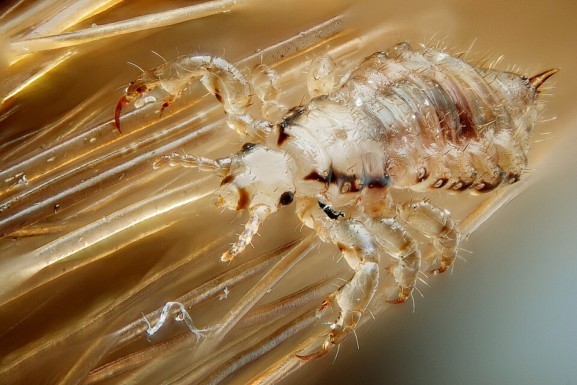
| Louse | Where it lives | What confirms active infestation | Specimen for the laboratory | Vector role |
|---|---|---|---|---|
| Head louse Pediculus humanus capitis |
Scalp hair; spread by direct head-to-head contact. Not a marker of poor hygiene. | Only a live, moving louse confirms active infestation. Nits cemented within roughly a centimeter of the scalp raise suspicion but are not confirmatory. | The louse or nit-bearing hairs, dry or in alcohol, for morphologic identification. There is no swab and no culture. | none Not an established vector of human disease. |
| Body louse Pediculus humanus (corporis) |
Clothing seams — it feeds on the body and returns to clothing to rest and lay eggs. | Lice and eggs found in the seams of the garment. The skin shows only excoriations and post-inflammatory change. | Examine the clothing. Send lice recovered from seams. Examining the patient’s skin alone will miss the diagnosis. | vector Rickettsia prowazekii, Bartonella quintana, Borrelia recurrentis. |
| Pubic louse Pthirus pubis |
Coarse hair — pubic and perianal, and also axillary, chest, beard, eyelashes and eyebrows. | Lice or nits on coarse hairs; maculae ceruleae (slate-blue macules) at feeding sites support the diagnosis. | Louse or nit-bearing hair for identification. | none But a marker of sexual contact — screen for other sexually transmitted infections. |
Head lice: nit distance and the diagnosis of “active”
A treatment-decision problemNits are cemented to the hair shaft and remain there after hatching. Because scalp hair grows at roughly one centimeter per month, nits found well out along the shaft are typically old, hatched, or nonviable, and represent past rather than current infestation. Nits close to the scalp are the ones that suggest current activity. Exact thresholds differ between sources and between school policies — treat the principle, not a memorized millimeter figure — but the clinical rule is stable: only a live louse definitively confirms active infestation.
Detection by wet combing — conditioner applied, then systematic combing with a fine-toothed nit comb onto a white surface — is substantially more sensitive than dry visual inspection and is the practical way to find live lice.
Treating on the basis of distal nits alone leads to repeated unnecessary pediculicide exposure and drives resistance, which is already widespread for pyrethroid-class agents in many regions. Hair casts, seborrheic scale, hair-product residue and peripilar keratin casts are all mistaken for nits; they slide freely along the shaft, whereas a nit is cemented and resists being moved.
Body lice: the highest-yield vector association in dermatology
Three pathogens, three different specimensBody lice are a disease of crowding, displacement, homelessness, conflict, cold climates and the inability to launder or change clothing — not of the skin itself. The cutaneous picture is nonspecific: excoriated papules over the trunk, shoulders and waist, with lichenification and post-inflammatory hyperpigmentation from chronic scratching in long-standing cases. The organism is in the garment.
Each is transmitted by contamination rather than by the bite itself, which is why scratching is part of the transmission mechanism — but the vehicle differs: Rickettsia prowazekii and Bartonella quintana are shed in louse feces and rubbed into excoriated skin or mucosa, whereas Borrelia recurrentis lives in the louse haemolymph, is not present in the feces, and is transmitted only when the louse is crushed against the skin, which is why scratching is part of the transmission mechanism.
Recrudescent epidemic typhus — Brill-Zinsser disease — can emerge years or decades after primary infection when immunity wanes, in a patient with no current louse exposure at all. In the United States a sylvatic reservoir of R. prowazekii exists in flying squirrels and their ectoparasites, producing sporadic cases without any body-louse history.
If you suspect a louse-borne infection, the specimen differs by organism and the laboratory needs warning for all three. Rickettsia prowazekii is not recoverable by routine culture — it requires cell culture in a high-containment laboratory — so diagnosis rests on serology, on molecular testing, and on immunohistochemistry of skin biopsy in some centers; alert the laboratory rather than sending a blood culture and waiting. Bartonella quintana is fastidious and slow, so a standard five-day blood culture protocol will be reported as negative; if you want it, say so, because prolonged incubation, lysis-centrifugation methods, serology or molecular testing are what will find it, and it is a genuine cause of culture-negative endocarditis. Borrelia recurrentis is the one that is easy if the timing is right: spirochetes are visible on a Giemsa- or Wright-stained peripheral blood smear or by dark-field microscopy during a febrile episode, and are absent between relapses. Draw the smear while the patient is spiking, not the next morning.
Cutaneous larva migrans: the dead-end host
Animal hookworm larvae — most often Ancylostoma braziliense, also A. caninum and related species of dogs and cats — penetrate human skin from sand or soil contaminated with animal feces. In their natural host the larvae penetrate the basement membrane, enter the circulation and complete a pulmonary and intestinal migration to adulthood. In humans they cannot: they lack the enzymatic machinery to breach the basement membrane, so they remain trapped within the epidermis, wandering aimlessly until they die.
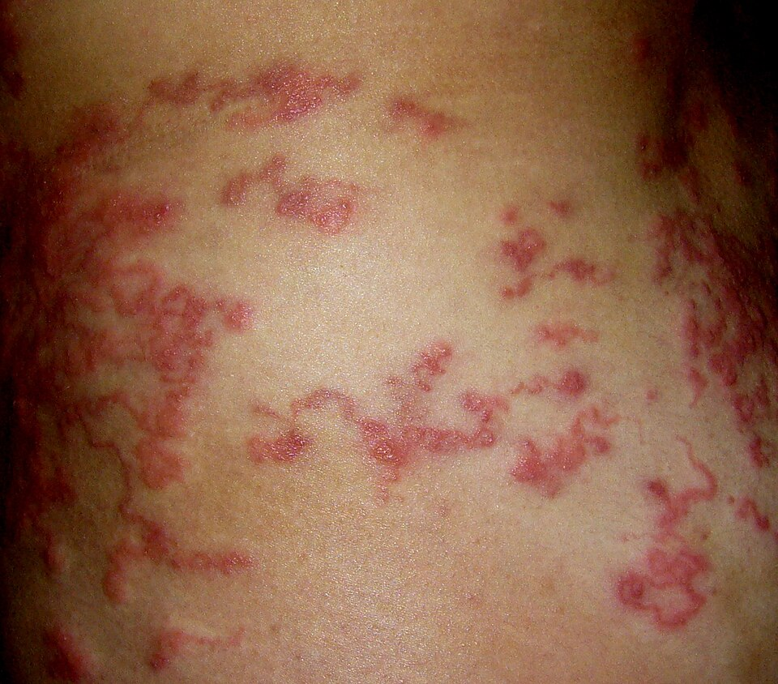
The clinical picture and why the disease self-limits
Humans are an accidental hostAn intensely pruritic, raised, erythematous, serpiginous track advancing perceptibly — the patient can often tell you it moved since yesterday. Vesiculobullous and eczematous variants occur, and secondary bacterial infection from scratching is common. Sites follow contact with contaminated sand or soil: feet and interdigital spaces, buttocks and posterior thighs from sitting, and the trunk in someone who lay on a beach. The exposure history that cracks the case is walking barefoot, sunbathing, or sitting on sand in the tropics or subtropics, including the Caribbean, Southeast Asia, sub-Saharan Africa, South and Central America and the southeastern United States.
Because the parasite is in the wrong host and cannot mature or reproduce, the infestation resolves when the larvae die. Antihelminthic therapy — benzimidazole-class agents, or ivermectin — is given to shorten a miserable and prolonged course rather than to prevent progression.
What the laboratory cannot do for you
This is a clinical diagnosisUnderstanding the dead-end biology tells you exactly which tests will be useless, and this is a favorite examination point.
- Do not send stool for ova and parasites. There is no adult worm in the human gut, so there are no eggs to find. A negative result is expected and reassures no one.
- Biopsy is usually unrewarding. The larva sits ahead of the visible track, often by a centimeter or more, so a biopsy taken at the leading edge of the erythema typically samples empty tissue and shows only a nonspecific eosinophilic infiltrate.
- Serology is not part of routine practice for animal hookworm larva migrans.
- Peripheral eosinophilia may be present but is frequently absent; its absence does not argue against the diagnosis.
Pulmonary eosinophilia (Löffler syndrome) is a recognized though uncommon accompaniment, and A. caninum is additionally associated with eosinophilic enteritis, so a persistently symptomatic patient warrants a wider look.
Larva currens is not cutaneous larva migrans, and the distinction is urgent. Larva currens is the cutaneous manifestation of autoinfection by Strongyloides stercoralis. It differs on three axes. Speed: the track advances on the order of centimeters per hour and can be watched moving over minutes, whereas an animal hookworm track advances millimeters to a couple of centimeters per day. Duration and character: larva currens is an urticarial, evanescent wheal-like track that appears and disappears within hours and recurs episodically over years, whereas cutaneous larva migrans is a persistent fixed inflammatory track. Location: larva currens arises perianally and spreads to buttocks, groin, thighs and trunk, reflecting larvae re-penetrating the perianal skin from the gut. And the laboratory advice reverses completely — here you do want stool examination, agar plate culture, and serology, because Strongyloides is the one diagnosis in this section where missing it can kill the patient: corticosteroids or other immunosuppression can precipitate hyperinfection and disseminated strongyloidiasis with polymicrobial gram-negative bacteremia and meningitis from enteric organisms carried on migrating larvae. A serpiginous eruption in a patient about to be immunosuppressed is a stop-and-think moment.
A migrating or serpiginous track
Establish the migration rate first — mark the leading edge with a pen and re-examine. Rate, not appearance, is the primary discriminator.
Cutaneous larva migrans. Sand or soil exposure in an endemic area. Clinical diagnosis; no stool, no serology. Antihelminthic therapy to shorten the course; treat secondary bacterial infection if present.
Larva currens. Investigate for Strongyloides stercoralis with stool examination, agar plate culture and serology — and screen before any planned immunosuppression.
Neither pattern fits
Consider migratory panniculitis and migratory swellings with marked eosinophilia after freshwater fish or undercooked meat consumption (gnathostomiasis), and consider non-parasitic mimics: phytophotodermatitis, factitial lesions, and linear inflammatory dermatoses that are static on re-examination.
Cutaneous leishmaniasis: the diagnosis that depends on how you talk to the laboratory
Leishmaniasis is transmitted by the bite of the female phlebotomine sandfly — genus Phlebotomus in the Old World, Lutzomyia in the New World. The fly inoculates flagellated promastigotes, which are phagocytosed by dermal macrophages and transform into aflagellate amastigotes that replicate within the phagolysosome. That intracellular amastigote, with its nucleus and its distinctive rod-shaped kinetoplast, is what you are looking for on the slide.
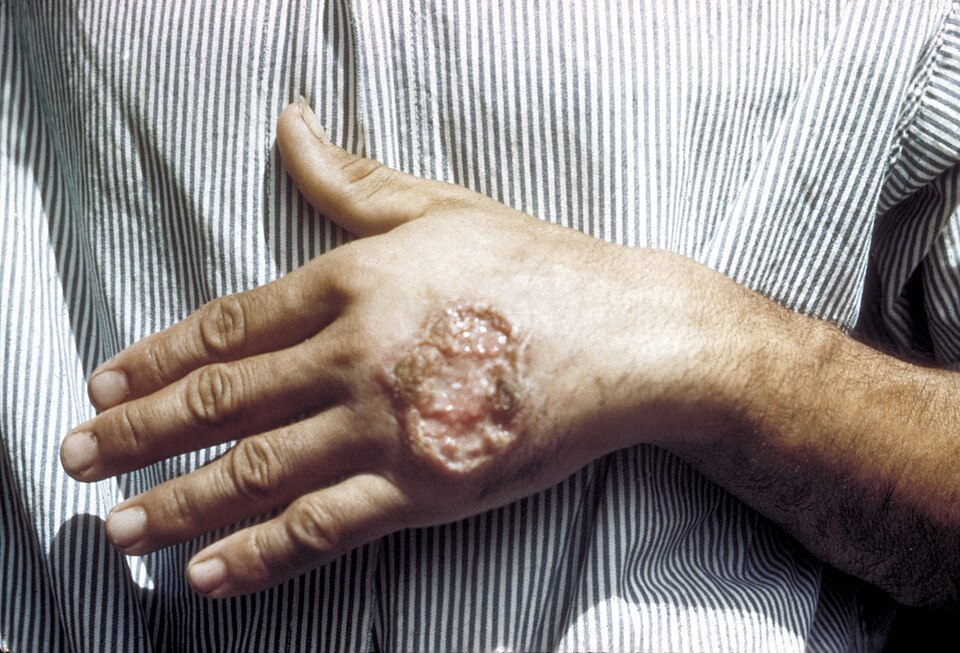
The evolution of the lesion
Painless is the discriminatorA small painless papule appears at the bite site after an incubation of weeks to months, enlarges to a nodule, then ulcerates, leaving a shallow ulcer with a raised indurated rolled border and a clean granulating base — often described as the volcano sign. Lesions sit on exposed skin: face, ears, forearms, dorsal hands, lower legs. Regional adenopathy and sporotrichoid nodules tracking along lymphatics occur and do not exclude the diagnosis.
The lesion is characteristically painless unless secondarily infected — a useful separator from bacterial pyoderma and from a neglected ulcerated pyogenic process, which usually hurt. It also fails to respond to antibacterial therapy, and a chronic non-healing ulcer in a returning traveler that has already failed two antibiotic courses should raise this diagnosis immediately.
Chronic, painless, indolent ulcer with a rolled border, on exposed skin, in a patient who has been in an endemic area — military deployment, ecotourism, jungle or desert fieldwork, migration, or residence. Ask specifically about overnight exposure, because sandflies feed around dusk and at night and are small enough to pass through standard mosquito netting.
Sampling: never a surface swab
The single most common laboratory error hereParasites are concentrated in the active raised border, within dermal macrophages. The necrotic exudate at the ulcer base contains few organisms and abundant secondary bacterial colonizers, so a swab of the ulcer floor produces a report of mixed skin flora and no diagnosis.
- Clean and debride the surface first, then sample the indurated border.
- Slit-skin smear or scraping of the border, with touch preparations made onto slides.
- Punch biopsy through the active edge — divide the tissue: one portion in formalin for histopathology, one fresh and sterile for culture and molecular testing.
- Needle aspirate of the border after injecting a small volume of sterile saline is an alternative in some centers.
Putting the entire specimen in formalin destroys any chance of culture and compromises the yield of species-level molecular work. Decide before the blade touches the skin how the tissue will be divided, and call the laboratory first — both the medium and the incubator settings have to be arranged in advance.
| Method | What it detects | Practical notes | Speciates? |
|---|---|---|---|
| Giemsa-stained smear or touch preparation | Amastigotes within macrophages — small round-to-oval bodies roughly 2–5 micrometers, each with a nucleus and an adjacent rod-shaped kinetoplast. | Fast, cheap, available almost anywhere. The kinetoplast is the feature that separates amastigotes from Histoplasma yeasts and from artifact. Yield falls as lesions become chronic and parasite density drops. | no |
| Culture | Promastigotes emerging in vitro from inoculated tissue. | Novy-MacNeal-Nicolle or comparable biphasic media, or Schneider’s insect medium with serum. Incubate at insect-vector temperature, around 22–26 °C — not at 35–37 °C. Hold up to about four weeks. Requires explicit arrangement with the laboratory. | isolate Yields an isolate for typing |
| Polymerase chain reaction | Leishmanial deoxyribonucleic acid — commonly kinetoplast minicircle targets or ribosomal internal transcribed spacer regions. | The most sensitive method, and the one that works when smears are negative in chronic pauciparasitic lesions. Often a send-out; in the United States species identification is performed at reference level including by the Centers for Disease Control and Prevention. Availability is region-dependent. | yes The reason to order it |
| Histopathology | Granulomatous or mixed dermal infiltrate; amastigotes within histiocytes, sometimes arrayed along the cell membrane. | Useful for excluding mimics — deep fungal infection, mycobacterial disease, lymphoma, squamous cell carcinoma. Organism detection is insensitive in chronic lesions. | no |
| Serology / leishmanin skin test | Host response rather than organism. | Serology performs poorly in purely cutaneous disease and is not a substitute for organism detection. The leishmanin (Montenegro) skin test is largely historical and is unavailable in many countries. | no |
Vector Phlebotomus. Distribution spans the Mediterranean basin, the Middle East, Central and South Asia, North and East Africa. Principal species include Leishmania major, which classically produces a rapidly ulcerating exudative “wet” lesion in rural zoonotic settings with rodent reservoirs; L. tropica, an often anthroponotic urban species producing a drier, more chronic, slowly evolving lesion; L. aethiopica, associated with diffuse cutaneous leishmaniasis in anergic hosts; and L. infantum, which also causes visceral disease.
Many uncomplicated Old World lesions caused by low-risk species are self-limited over months and can be managed with local therapy — cryotherapy, controlled local heat, intralesional pentavalent antimonial injection, or topical paromomycin-based preparations — provided lesions are few, small, and not on cosmetically or functionally critical sites.
Vector Lutzomyia. Distribution spans Mexico, Central America and much of South America. The critical division is between the Leishmania mexicana complex and the subgenus Viannia — notably the L. (V.) braziliensis complex, along with L. (V.) panamensis and L. (V.) guyanensis.
The Viannia species carry a risk of mucosal leishmaniasis (espundia): metastatic spread to the nasal, oral and pharyngeal mucosa, which can appear months to years after the primary cutaneous lesion has healed, and which causes progressive destruction of the nasal septum, palate and upper airway. This late, disfiguring, potentially airway-threatening complication is the entire reason species identification matters.
Chiclero ulcer — a chronic destructive lesion of the pinna in forestry and chicle workers in Central America — is the classic L. mexicana complex presentation and a recognizable board image.
Species identification is not academic. It is what determines whether a patient needs systemic therapy for a lesion that would otherwise be watched or treated locally, because the goal of systemic therapy in Viannia infection is prevention of later mucosal disease rather than healing the skin lesion in front of you.
In broad terms, systemic therapy is favored when species carries mucosal risk; when lesions are numerous, large, or over a joint; when they involve the face, ears, digits or genitalia; when there is lymphatic or sporotrichoid spread; when the host is immunosuppressed; and when local therapy has failed. Local therapy is reasonable for small, few, uncomplicated lesions caused by species without mucosal risk in a competent host.
Agent selection among pentavalent antimonials, liposomal amphotericin B, miltefosine and other options is species-, region- and host-dependent, and drug availability varies substantially between countries — in the United States, access to pentavalent antimonial therapy has historically been through a national public-health mechanism rather than routine pharmacy supply. Confirm current species-specific recommendations and local availability rather than relying on a remembered regimen; the principle to carry is that the polymerase chain reaction result changes the treatment plan.
Myiasis, tungiasis, and Demodex
Three infestations that are diagnosed almost entirely by pattern recognition plus a single specific question, and where the wrong reflex — antibiotics, incision and drainage, or another course of topical antibiotic for rosacea — is the usual reason for delay.
Furuncular myiasis
Dermatobia hominis, Cordylobia anthropophagaA furuncle-like nodule with a central punctum that intermittently discharges serosanguineous fluid, and which the patient describes as painful, throbbing, or — the giveaway — as though something inside is moving. The larva breathes through that punctum, and its posterior spiracles are sometimes visible if you watch. Cultures are sterile or grow only contaminants, and antibiotics do not work.
The transmission biology is worth knowing because it generates the prevention advice. The human botfly uses phoresis: it captures a mosquito or other flying arthropod, glues eggs to it, and releases it — larvae hatch and enter the skin when the carrier next feeds on a human. The tumbu fly instead lays eggs on soil or on damp laundry left to dry outdoors, so the classic preventive counsel is to dry clothing indoors or to iron it, which kills the eggs.
Management is occlusion of the punctum to force the larva toward the surface, then manual or surgical extraction; avoid rupturing the larva in situ, which provokes an intense foreign-body inflammatory reaction.
Tungiasis
Tunga penetrans, the sand fleaThe gravid female flea burrows into the epidermis and remains there, enlarging as her abdomen fills with eggs. The result is a firm white or yellowish papule with a central black dot — the exposed posterior end of the flea — usually periungual or subungual on the toes, on the soles, or at the heel, and often multiple. Lesions itch and become painful as they enlarge, and egg extrusion may be visible.
Management is complete extraction of the flea under sterile conditions with an intact removal, followed by wound care. Two things routinely get forgotten: heavy infestation causes real morbidity through secondary bacterial infection, ulceration and deformity, and tetanus immunization status must be checked in a patient with penetrating foot lesions acquired in soil.
Demodex
D. folliculorum, D. brevisThese are commensal mites of the human pilosebaceous unit — D. folliculorum in the follicular infundibulum, D. brevis deeper in sebaceous glands — present in most adults. Finding them is therefore not a diagnosis; density and the host response are what matter.
Increased density is implicated in papulopustular rosacea and in the rosacea-like eruptions that respond to acaricidal rather than antibacterial therapy. Pityriasis folliculorum presents as diffuse follicular scale with a rough sandpaper texture and background erythema, often in women who over-cleanse or avoid moisturizer. Demodex blepharitis produces cylindrical dandruff at the lash bases.
In the immunosuppressed — human immunodeficiency virus infection, transplant recipients, hematologic malignancy, and patients on prolonged topical or systemic corticosteroid — florid demodicosis occurs, with dense follicular papulopustules and very high mite counts.
Quantification is done by standardized skin surface biopsy using cyanoacrylate adhesive on a slide, or by scraping with a mount. Counts above roughly five mites per square centimeter are conventionally regarded as increased, but thresholds and technique vary between laboratories — interpret the number against the clinical picture, not in isolation.
A “furuncle” that does not respond to appropriate antistaphylococcal therapy, and whose culture is sterile or grows only skin flora, should not be met with a broader antibiotic. Re-take the history for travel. Furuncular myiasis, tungiasis, a ruptured epidermal cyst, hidradenitis, and inoculation-site deep fungal or mycobacterial infection all masquerade as recurrent boils, and every one of them is diagnosed by asking a different question rather than by escalating antibacterial coverage. Related trap: incising a myiasis lesion blindly and fragmenting the larva leaves retained chitinous material and a persistent granulomatous nodule.
Travel and exposure panel
In parasitic skin disease the history does more work than any test. Ask where, when, what activity, what contact, and how long ago — incubation periods here range from days to more than a year.
| Exposure | Think of | Lesion clue | What to send, and what to say |
|---|---|---|---|
| Barefoot on a beach or in sandy soil; sitting or lying on sand — tropics and subtropics | Cutaneous larva migrans | Slow serpiginous pruritic track on feet, buttocks, thighs | Nothing. Clinical diagnosis. no stool O&P There is no adult worm in humans. |
| Barefoot in Latin America, sub-Saharan Africa or the Caribbean | Tungiasis | White papule with a black central dot, periungual toe or sole | Extraction is diagnostic and therapeutic. Check tetanus status. |
| Rainforest, jungle, deployment, ecotourism; overnight outdoor exposure in the Middle East, Central Asia, North or East Africa, Central or South America | Cutaneous leishmaniasis | Painless chronic ulcer, raised rolled border, exposed site | Sample the active border — slit-skin smear plus a punch divided between formalin and fresh sterile tissue. call the lab Culture at 22–26 °C for up to four weeks; request molecular species identification. |
| Travel to Central or South America; laundry dried outdoors in sub-Saharan Africa | Furuncular myiasis | Boil with a central punctum; sensation of movement; sterile culture | Extract the intact larva. For entomologic identification send the larva in 70–80 percent ethanol, not formalin — confirm the preferred fixative with your laboratory. |
| Freshwater fish or undercooked meat, Southeast Asia or Latin America | Gnathostomiasis | Migratory subcutaneous swellings or panniculitis | Marked peripheral eosinophilia is characteristic; serology at reference laboratories. Discuss with infectious diseases. |
| Homelessness, displacement, crowding, conflict, inability to launder | Body lice and their pathogens | Truncal excoriations, lichenification, post-inflammatory pigment | Examine the clothing seams. If febrile: blood smear during fever for Borrelia recurrentis; alert the laboratory for prolonged or specialized methods for Bartonella quintana; serology or molecular testing for Rickettsia prowazekii. |
| Institutional living, long-term care, crowded households; hyperendemic communities | Scabies, including crusted scabies | Burrows in web spaces and genitalia; or thick hyperkeratotic crusts with little itch | Mineral-oil scraping at the point of care. If crusted disease is suspected, notify infection prevention before the patient is moved. |
| Immunosuppression, transplant, prolonged corticosteroid | Demodicosis; crusted scabies; disseminated strongyloidiasis | Dense follicular papulopustules; hyperkeratotic crusts; petechial or purpuric periumbilical eruption in hyperinfection | Cyanoacrylate surface biopsy for mite density; scraping for Sarcoptes; stool, sputum and serology for Strongyloides — and screen before immunosuppressing. |
How do I actually phrase the request when I call the microbiology laboratory?
Say the organism you suspect, the specimen you are about to take, and the question you want answered. Most failures in this section come from a requisition that says “skin, culture” and nothing else.
- Leishmaniasis: “I am biopsying the active border of a chronic ulcer in a returning traveler for suspected cutaneous leishmaniasis. I need fresh sterile tissue for culture at reduced temperature held for four weeks, touch preparations for Giemsa, and molecular testing with species identification — can you take it, or does it need to go to a reference laboratory?” The reduced-temperature, prolonged-hold requirement is the part a routine bacteriology bench will not do unless asked.
- Lice: send the organism, not a swab. Identification is morphologic. Lice and nit-bearing hairs go dry or in alcohol to the parasitology bench.
- Myiasis: send the intact larva. Entomologic identification depends on preserved surface structures, so formalin is generally not the fixative of choice — confirm the preferred method locally before you drop it in a pot.
- Scabies: expect to make and read the preparation yourself. Ask whether your laboratory offers a molecular assay before you tell a patient one exists.
- Louse-borne febrile illness: name the organism. Standard blood culture protocols will miss Bartonella quintana, and Rickettsia prowazekii is not something a routine laboratory will attempt to culture at all.
Why does Leishmania culture require a lower incubation temperature?
Because the stage that grows in vitro is the promastigote — the form that lives in the sandfly. Temperature is one of the principal triggers of stage differentiation in this parasite: within a mammalian macrophage at core body temperature the organism exists as the amastigote, while at the cooler temperature of the insect vector it reverts to and proliferates as the flagellated promastigote. Culture media such as Novy-MacNeal-Nicolle or Schneider’s insect medium therefore recreate vector conditions, incubated in the region of 22 to 26 degrees Celsius rather than at 35 to 37 degrees Celsius.
The practical consequence is the examinable one: a specimen incubated at standard bacteriology temperature will not yield the organism, and a laboratory that has not been forewarned will discard the culture long before four weeks have elapsed. This is the same principle that makes several other cutaneous pathogens temperature-dependent in the laboratory and, in some cases, cooler-body-site-dependent in vivo.
My patient with treated scabies is still itching at four weeks. Do I re-treat?
Not on the basis of itch alone. Work through four questions in order.
One: are there new lesions — new burrows, new inflammatory papules in classic sites — or only persistent symptoms in old sites? New lesions argue for failure or re-infestation; persistent symptoms alone do not.
Two: was the original treatment applied correctly? The classic misses are the web spaces, under the fingernails, the genitalia, the scalp in infants and the elderly, and hand-washing after application. Ask how it was applied, for how long, and whether a second application was given.
Three: were all household and close contacts treated at the same time, whether or not they itched? If a contact was left untreated, the patient has probably been re-infested, and re-treatment of the patient alone will fail again.
Four: is this now an iatrogenic dermatitis? Repeated scabicide produces an irritant dermatitis that itches, prompting more scabicide. Look for a burning quality, a distribution matching the applied area rather than classic scabies sites, and escalating rather than improving symptoms.
If the answers point to expected post-scabetic itch, treat the itch — emollients, topical corticosteroid, a sedating antihistamine at night — re-examine rather than re-prescribe, and set expectations explicitly. If they point to failure or re-infestation, confirm with a repeat scraping if you can, then re-treat the patient and every contact simultaneously.
Rapid-fire pairings worth having automatic
- Burrow in a finger web → Sarcoptes scabiei var. hominis; mount in mineral oil, not potassium hydroxide.
- Delta-wing jet with contrail on dermoscopy → the mite’s pigmented anterior end at the head of its burrow.
- Hyperkeratotic crusts in a patient who does not itch → crusted scabies; call infection prevention before moving the patient.
- Lice in clothing seams → Pediculus humanus body louse → epidemic typhus, trench fever, louse-borne relapsing fever.
- Spirochetes on a blood smear during a fever spike in a person experiencing homelessness → Borrelia recurrentis; the smear is negative between relapses.
- Slate-blue macules with lice on coarse hair → maculae ceruleae, Pthirus pubis; screen for other sexually transmitted infections. Eyelash involvement in a prepubertal child mandates a safeguarding evaluation.
- Serpiginous track advancing millimeters per day on the foot after a beach holiday → animal hookworm larva migrans; do not send stool.
- Urticarial track advancing centimeters per hour from the perianal skin → larva currens; investigate for Strongyloides before any immunosuppression.
- Painless rolled-border ulcer in a returning traveler → cutaneous leishmaniasis; sample the border, request species identification.
- Amastigote with nucleus plus kinetoplast inside a macrophage → Leishmania; the kinetoplast is what distinguishes it from intracellular yeasts.
- Ulcer of the pinna in a Central American forestry worker → chiclero ulcer, L. mexicana complex.
- Mucosal destruction years after a healed skin ulcer from South America → Leishmania (Viannia) braziliensis complex; this is why species matters.
- Boil with a punctum that the patient says moves → furuncular myiasis; antibiotics will not help and the culture will be sterile.
- White papule with a black dot on a toe after barefoot exposure → Tunga penetrans; extract intact and check tetanus status.
- Rosacea-like papulopustules failing antibacterial therapy, or florid follicular pustules in a transplant recipient → think Demodex density and acaricidal therapy.
Throughout this section, drug availability, scabicide resistance patterns, molecular test availability, reference-laboratory referral pathways and public-health notification requirements are all region- and institution-dependent. The organism biology, the specimen choice, and the reasoning are portable; the regimens and the referral routes are not — check yours.
Exposures, hosts, and traps
The synthesis worth rereading before clinic
Most of the microbiology that changes a dermatology consult is decided before the specimen ever reaches the bench — in the exposure history you take, in the tissue you choose to send instead of a swab, and in the sentence you write on the requisition telling the lab what you are actually looking for. This closing section pulls the whole Derm Pearls thread together: the exposure-to-organism map, the sporotrichoid pattern, the immunocompromised host, the post-procedure infection, the tests not to order, and the traps that catch trainees on rounds.
The exposure-to-organism map
Cutaneous infection is one of the few areas of medicine where a single line of history genuinely narrows the organism list to two or three names. The reason is ecological: most of these organisms do not live on human skin. They live in water, soil, animals, or arthropod vectors, and they get into the dermis only through a specific, describable event. If you can name the event, you can usually name the shortlist — and, critically, you can tell the laboratory what to set up.
- Ask about water, and specify: fresh, salt, brackish, chlorinated, or standing.
- Ask about animals by species and by contact type — bite, scratch, handling carcasses, feeding, milking.
- Ask about soil contact with a breach: thorns, splinters, barefoot walking, gardening, farm work.
- Ask about procedures in the preceding three months, including the ones patients do not consider medical — tattoos, fillers, laser, pedicures, mesotherapy.
- Ask about travel and residence, not just recent trips. Endemic mycoses can reactivate years later.
- Ask about immune status last, because it reframes everything above.
Standard bacterial culture is set up at 35 to 37 °C, held two to five days, on media chosen for the organisms that cause ordinary pyogenic infection. Nearly every organism in the table below fails at least one of those conditions. If you do not tell the lab, the plate is discarded as no growth while the patient is on their third failed course of cephalexin.
| Exposure | Organisms it should raise | Lesion pattern that fits | What the laboratory actually needs |
|---|---|---|---|
| Fish tank, aquarium maintenance, fresh water, swimming pool abrasion | Mycobacterium marinum; Aeromonas hydrophila | M. marinum: indolent violaceous nodule on a finger or dorsal hand two to six weeks later, often with ascending satellites. Aeromonas: fast, sometimes necrotizing, after freshwater immersion of a wound. | Deep punch or incisional biopsy for mycobacterial culture. Request incubation at 28–32 °C and holding for up to six weeks — M. marinum grows poorly or not at all at 37 °C. Aeromonas grows on routine aerobic media, but ask for full susceptibility testing because many isolates carry inducible beta-lactamases. |
| Warm salt or brackish water; raw or undercooked shellfish — especially with cirrhosis, hemochromatosis, or iron overload | Vibrio vulnificus | Rapidly expanding painful cellulitis with hemorrhagic bullae, usually on a lower limb, with sepsis out of proportion to the skin. Ingestion-acquired disease seeds the skin from the bloodstream; wound-acquired disease starts locally. | Blood cultures plus bulla fluid and tissue. Tell the lab you suspect Vibrio: it is halophilic, and stool specimens need selective TCBS agar. This is a same-hour surgical and infectious diseases call, not a next-morning problem. |
| Hot tub, whirlpool, water slide, inadequately chlorinated pool | Pseudomonas aeruginosa | Pruritic follicular papulopustules in a swimsuit distribution one to two days after exposure; tender plantar nodules (“hot foot”) in children; also otitis externa and green nail syndrome in wet-work occupations. | Usually none — hot tub folliculitis is self-limited and does not need culture or systemic antibiotics in an immunocompetent host. Culture only if the host is immunocompromised, the course is atypical, or you are considering ecthyma gangrenosum. |
| Cat bite or scratch; kitten contact | Pasteurella multocida; Bartonella henselae; Sporothrix in endemic regions; rarely Francisella tularensis | Pasteurella: intense cellulitis within hours of the bite, often with serosanguineous drainage. Bartonella: inoculation papule with tender regional lymphadenopathy one to three weeks later. Cat-transmitted sporotrichosis is a recognized zoonosis in parts of South America. | Pasteurella: aspirate or deep tissue, aerobic and anaerobic. It grows on blood and chocolate agar but not on MacConkey. Bartonella: culture is impractical — use serology plus PCR on tissue or node aspirate, and Warthin-Starry on histology. |
| Dog bite | Pasteurella species; Capnocytophaga canimorsus; staphylococci, streptococci, oral anaerobes | Capnocytophaga is the one to fear in an asplenic, cirrhotic, or heavily alcohol-using patient: fulminant sepsis with purpura fulminans and acral necrosis, sometimes from a bite that looked trivial. | Blood cultures, and tell the lab — Capnocytophaga is a fastidious, capnophilic, slow-growing fusiform Gram-negative rod that may need extended incubation. In fulminant cases a buffy-coat Gram stain can show the organism the same day. |
| Human bite; clenched-fist injury over a knuckle | Eikenella corrodens; viridans streptococci; oral anaerobes; Staphylococcus aureus | A small wound over a metacarpophalangeal joint that the patient attributes to punching a wall, presenting late with disproportionate pain, tenosynovitis, or septic arthritis. | Operative deep specimen, aerobic and anaerobic. Eikenella is capnophilic and pits the agar surface. Clinically the key point is that Eikenella and Pasteurella are both poorly covered by first-generation cephalosporins and by clindamycin, which is why beta-lactam plus beta-lactamase inhibitor coverage is the standard bite regimen. Every fight bite gets a hand surgery opinion. |
| Rose thorns, sphagnum moss, hay, straw, gardening; also cat contact in endemic areas | Sporothrix schenckii complex | Painless papule at the inoculation site that ulcerates, followed by a chain of subcutaneous nodules ascending the lymphatics. | Tissue for fungal culture — this is the reference standard, because organisms are sparse on histology. Sporothrix is thermally dimorphic: a mold at 25–30 °C that converts to cigar-shaped budding yeast at 37 °C. Asteroid bodies on histology are suggestive but neither sensitive nor specific. |
| Sheep and goat handling; bottle-feeding lambs; home slaughter around a religious festival | Orf virus (a parapoxvirus) | Solitary, often targetoid nodule on a finger or hand that evolves through recognized stages over roughly six weeks and resolves without scarring. Erythema multiforme can follow. | Usually a clinical diagnosis anchored on the exposure. PCR or electron microscopy of a lesional specimen confirms it if needed. The management point is negative: do not incise and drain, and do not treat it as a bacterial abscess. |
| Cattle, milking, contact with calves’ mouths or cows’ teats | Pseudocowpox virus (milker’s nodule) — also a parapoxvirus | Clinically near-identical to orf. The exposure history, not the morphology, separates them. | Same as orf. Reassurance plus wound care; self-limited. |
| Barefoot walking or agricultural work on soil in the tropics and subtropics | Mycetoma — eumycetoma (fungal, e.g. Madurella mycetomatis) or actinomycetoma (bacterial, e.g. Nocardia brasiliensis, Actinomadura, Streptomyces species); also Tunga penetrans | Mycetoma triad: painless tumefaction, draining sinus tracts, and extruded grains, usually on a foot, over months to years. Tungiasis: periungual white papule with a central black dot on the toe. | Collect the grains and deep tissue — not a sinus-tract swab. Grain color, Gram stain, and a modified acid-fast stain separate the filamentous bacteria from the fungi, and that separation determines whether the patient gets antibacterial therapy or prolonged antifungal therapy plus surgery. |
| Beach sand, moist sandy soil, crawl spaces contaminated with dog or cat feces | Ancylostoma braziliense and related animal hookworms (cutaneous larva migrans) | Intensely pruritic, serpiginous, slowly advancing erythematous track, most often on the foot, buttock, or trunk. | Clinical diagnosis. Biopsy is usually unhelpful because the larva sits ahead of the visible track. Distinguish from larva currens of strongyloidiasis, which migrates far faster and centers on the perianal skin and trunk. |
| Sandfly bite in an endemic region — Middle East, North Africa, Central and South Asia, Latin America, southern Europe | Leishmania species | Painless chronic ulcer with a raised, indurated, rolled border at the site of a bite on exposed skin, present for weeks to months and failing antibacterials. | Sample the active edge: slit-skin scraping or punch biopsy, with a Giemsa-stained touch preparation looking for amastigotes with their kinetoplast, plus culture and PCR. Species-level identification matters because New World species associated with mucosal disease change the treatment decision; in the United States, CDC provides reference testing. |
| Tick bite or wooded and grassy exposure | Borrelia burgdorferi; Rickettsia rickettsii; Francisella tularensis | Erythema migrans: expanding annular patch at the bite site. Rocky Mountain spotted fever: fever then a rash beginning on wrists and ankles, becoming petechial. Tularemia: a punched-out ulcer with tender regional nodes. | Erythema migrans is a clinical diagnosis in an endemic area — serology is insensitive in the first weeks and a negative test does not exclude it. For spotted fever, treat empirically with a tetracycline; skin biopsy PCR or immunohistochemistry can confirm acutely, and serology is retrospective. |
| Rabbit or hare handling, deer fly bite, mowing over an animal carcass | Francisella tularensis | Ulceroglandular tularemia: inoculation ulcer plus impressive regional lymphadenopathy and systemic symptoms. | Telephone the laboratory before the specimen leaves your clinic. Francisella is a documented cause of laboratory-acquired infection and requires containment practices; it is fastidious and needs cysteine-enriched media. A specimen worked up unannounced on an open bench exposes the technologists. |
| Hides, wool, animal hair, drum-making, livestock in endemic regions | Bacillus anthracis | Painless papule that vesiculates and evolves into a black eschar with dramatic surrounding non-pitting edema and regional adenopathy. The painlessness is the discriminator. | Notify the laboratory and public health immediately. This is a select agent, a laboratory hazard, and a reportable condition; do not let a routine bench work it up blind. |
| Tattoo, permanent makeup, dermal filler, laser, liposuction, mesotherapy, nail salon footbath, leg shaving before a pedicure | Rapidly growing non-tuberculous mycobacteria — M. fortuitum, M. chelonae, M. abscessus | Papules, nodules, or sterile-looking abscesses appearing weeks after the procedure, failing standard antibacterials. In tattoos the lesions classically map to the gray-wash areas, where ink was diluted with non-sterile water. | Biopsy for mycobacterial and fungal culture. Tell the lab. Identification is by MALDI-TOF or sequencing, and susceptibility testing by broth microdilution genuinely guides therapy for this group. |
| Butcher, fishmonger, fish or shellfish handler, veterinarian, abattoir worker | Erysipelothrix rhusiopathiae (erysipeloid) | Sharply marginated violaceous plaque on a hand or finger, burning rather than purulent, spreading slowly and classically sparing the terminal phalanx. No pus, no fluctuance. | Full-thickness biopsy of the leading edge — a surface swab will not grow it, and aspiration is usually dry. The trap is therapeutic: Erysipelothrix is a Gram-positive rod that is intrinsically resistant to vancomycin, so empiric vancomycin for a “hand cellulitis” fails. It is penicillin-susceptible. |
| Freshwater leech therapy after flap or replant surgery | Aeromonas species (gut symbionts of medicinal leeches) | Wound infection or flap failure days after leech application. | Deep tissue or aspirate, not a swab. Ask for full susceptibility testing; empiric coverage is usually chosen with beta-lactamase production in mind. |
| Chronic plant or thorn injury with slowly enlarging verrucous plaque, tropical and subtropical regions | Fonsecaea, Cladophialophora, and other dematiaceous fungi (chromoblastomycosis); Nocardia | Verrucous, cauliflower-like plaque with “black dots” of transepidermal elimination on the surface. | Scrape the black dots and take a biopsy: muriform (sclerotic) bodies on direct microscopy or histology are diagnostic of chromoblastomycosis. Send tissue for fungal culture at routine mycology temperature (25–30 °C) and warn the lab that these dematiaceous fungi are slow growers, often needing several weeks. |
| Travel to or residence in an endemic region for the systemic mycoses | Coccidioides (southwestern United States, parts of Mexico and Central and South America); Histoplasma (river valleys, caves, bird and bat guano); Blastomyces (Great Lakes, St. Lawrence and river valley regions); Paracoccidioides (Latin America); Talaromyces marneffei (Southeast Asia, southern China); Emergomyces (southern Africa) | Coccidioidomycosis: erythema nodosum with pulmonary symptoms, or verrucous facial plaques in disseminated disease. Blastomycosis: verrucous plaque with peripheral pustules and central scarring that mimics squamous cell carcinoma. Talaromycosis and disseminated histoplasmosis: umbilicated molluscum-like papules in advanced HIV. | Tissue for fungal culture and histology, plus antigen testing where available. Name the suspected organism on the requisition: the mold phases are laboratory hazards, and Coccidioides arthroconidia in particular are notorious for causing laboratory-acquired infection. |
Write the exposure on the requisition, not just the diagnosis. “Aquarium hobbyist, nodular lymphangitis of the right index finger, rule out M. marinum — please incubate at 30 °C and hold six weeks” is a request the laboratory can act on. “Rule out infection” is not.
Sporotrichoid spread: five organisms, one pattern
Nodular lymphangitis — an inoculation lesion with a chain of subcutaneous nodules ascending along the draining lymphatics — is the single most reliable pattern-recognition question in infectious dermatology. The morphology is nearly identical across the differential; the exposure history and the laboratory request are what separate them. All five of these require tissue, and none of them will be diagnosed from a surface swab.
Sporothrix schenckii complex
The eponymous oneThermally dimorphic fungus of soil, decaying vegetation, sphagnum moss, and rose bushes. Also transmitted by cats in parts of South America, where scratches from infected cats have driven large zoonotic outbreaks.
Histology is often disappointing — the yeast are sparse and easily missed even with silver stains. Culture is the reference standard, which is exactly why the biopsy must not all go into formalin.
Mycobacterium marinum
The temperature-dependent oneNon-tuberculous mycobacterium of fresh and salt water, aquaria, and fish. Weeks of incubation, and a hand or forearm lesion in someone who cleans a fish tank without gloves.
Temperature is a diagnostic variable in cutaneous mycobacteriology. M. marinum, M. ulcerans, and M. haemophilum all favor cooler incubation around 30 °C, matching their preference for cooler acral skin. M. haemophilum additionally requires iron-supplemented media — if you do not request it, the plate stays sterile.
Nocardia brasiliensis
The one that looks bacterial and behaves fungalAerobic actinomycete from soil. N. brasiliensis is the species most associated with primary cutaneous and lymphocutaneous disease in an otherwise healthy host; other species dominate in disseminated disease in the immunosuppressed.
Nocardia grows on routine bacteriology media but slowly. A standard plate discarded at 48 hours misses it. You must ask explicitly for prolonged incubation, and you should ask for species identification and susceptibility testing, because susceptibility varies meaningfully between species.
Leishmania species
The travel oneUsually a chronic ulcer, but a subset produces true nodular lymphangitis with subcutaneous nodules tracking proximally from the bite site.
Species drives management. New World species in the L. braziliensis complex carry a risk of later mucosal disease, which pushes toward systemic rather than local therapy. “Leishmania seen” is not a complete answer.
Francisella tularensis
The one you must warn the lab aboutUlceroglandular tularemia can present with an inoculation ulcer and ascending nodes that mimic sporotrichoid spread, typically with fever and more systemic upset than the others.
This is the one entry on the sporotrichoid list where failing to communicate with the laboratory can injure someone other than your patient. Francisella is highly infectious by the aerosol route and has repeatedly caused laboratory-acquired infection in technologists who handled an unlabeled plate on an open bench.
Acute, febrile, rapidly ascending lymphangitis with a red streak and a hot tender limb is ordinary streptococcal or staphylococcal lymphangitis, and it belongs on antibiotics today. The sporotrichoid differential above is subacute to chronic: weeks of indolent nodules in a patient who is systemically well and has already failed a beta-lactam. Tempo is the first discriminator, before you ever get to exposure.
Why can I not just swab the draining nodule?
Three reasons, and they apply to almost every chronic cutaneous infection in this section.
First, these organisms live in the dermis and subcutis, not on the surface. A swab samples the epidermal surface and whatever colonizes it, so the yield for the true pathogen is poor even when the infection is unambiguous.
Second, a swab carries a vanishingly small volume of tissue. For organisms present in low numbers — mycobacteria, Sporothrix, Leishmania — the inoculum on a swab is often below what the culture can recover, and swab transport media are not designed to keep fastidious organisms viable for the weeks these cultures run.
Third, a swab grows skin flora, and skin flora grown from a chronically ulcerated lesion reads as a result. Someone will treat it. The single most common way a chronic cutaneous infection gets mismanaged is a surface swab returning coagulase-negative staphylococci or Pseudomonas, being treated as the cause, and the real diagnosis being delayed by months.
The correct move is a punch or incisional biopsy from the edge of an active lesion, divided: part in formalin for histology with special stains, and part sent fresh in sterile saline for bacterial, mycobacterial, and fungal culture. If you can only get one core, most laboratories would rather have it fresh — they can still make touch preparations and stains from fresh tissue, but they cannot culture formalin.
The immunocompromised host: skin as the window onto a disseminated infection
Immunosuppression changes the rules in four consistent ways. Presentations become less inflammatory, because the visible signs of infection are host-derived; they become atypical, because organisms that never invade normal skin now do; they become faster, because containment fails; and they become disseminated, so a skin lesion is often the accessible surface of a systemic problem. That last point is the practical one: in a neutropenic or transplant patient, the skin is frequently the easiest biopsiable site of an infection that is otherwise buried in lung or sinus.
New cutaneous nodule, papule, or necrotic eschar in a neutropenic or transplant patient
Treat this as an urgent request, not a routine consult. Time to biopsy is the modifiable variable in outcomes for angioinvasive mold infection.
Punch or incisional biopsy today. Divide the specimen: formalin for histology with GMS, PAS, Gram, and an acid-fast stain; fresh tissue in sterile saline for bacterial, fungal, and mycobacterial culture. Draw blood cultures at the same time, including a set held for fungi.
Do not swab it, do not send the whole specimen in formalin, and do not observe it for 48 hours on broadened antibacterials. Histology can give you a hyphal morphology within hours; culture gives you species and susceptibility later. You need both.
What does the histology show?
Hyphal morphology on frozen or rapid section is often the first actionable result and can redirect antifungal therapy the same day.
Mucorales. Surgical debridement plus an amphotericin B formulation is the framework. Critically, Mucorales are intrinsically resistant to voriconazole and to echinocandins — breakthrough infection on voriconazole prophylaxis is the classic clinical story.
Aspergillus, Fusarium, and several other hyaline molds are indistinguishable on morphology alone. Culture, or molecular identification, is what separates them — and it matters, because Fusarium is far less predictably susceptible to the mold-active azoles.
Look for the systemic compartment
Cutaneous disease in these hosts is usually not isolated. Image the sinuses and chest, examine the eyes, and consider lumbar puncture when Cryptococcus is on the list.
Hematologic malignancy with prolonged, profound neutropenia is the highest-risk setting for angioinvasive fungal disease, and the skin is where it declares itself.
- Fusarium. Multiple painful erythematous papules and nodules with central necrosis, often appearing in crops. Onychomycosis or paronychia is a recognized portal of entry, so examine the nails. The single most useful laboratory distinction: unlike Aspergillus and the Mucorales, Fusarium sporulates in tissue and is frequently recovered from blood cultures.
- Mucorales. A necrotic eschar, sometimes at a site of skin trauma, adhesive dressing, or a burn. Angioinvasion produces early infarction, which is why the lesion looks dusky and out of proportion to surrounding inflammation.
- Aspergillus. Primary cutaneous disease at catheter insertion sites and under occlusive dressings, or secondary lesions from disseminated pulmonary disease. Blood cultures are almost never positive; galactomannan on serum or bronchoalveolar lavage supports the diagnosis.
- Ecthyma gangrenosum. A round lesion evolving from an erythematous macule to a hemorrhagic bulla to a necrotic ulcer with a gunmetal-gray eschar and an erythematous halo, classically anogenital or axillary. Pseudomonas aeruginosa bacteremia is the prototype, but morphologically identical lesions arise from other Gram-negative rods and from molds — so send blood cultures and biopsy.
Mucorales hyphae are fragile and largely aseptate. Standard laboratory processing that grinds or homogenizes tissue shears them and can render the culture negative in a patient with florid histologic mucormycosis. Send the tissue intact, and tell the laboratory that mucormycosis is suspected so the specimen is minced rather than ground. A negative culture never overrules ribbon-like hyphae on histology.
Transplant recipients on calcineurin inhibitors and corticosteroids present later and more quietly. The timeline after transplant is itself a diagnostic tool, and steroid-dampened inflammation makes a serious infection look like a bland nodule.
- Cryptococcus neoformans. Can present as a cellulitis-like plaque in a transplant patient on steroids — a “cellulitis” that is not responding to antibacterials in this host deserves a biopsy. Serum cryptococcal antigen is highly sensitive when disease is disseminated, but it can be negative in genuinely primary cutaneous cryptococcosis, so a negative result does not overrule the biopsy, and any patient with cutaneous cryptococcosis needs assessment for central nervous system disease.
- Non-tuberculous mycobacteria and M. tuberculosis. Indolent nodules and abscesses, often on extremities, sometimes sporotrichoid. M. haemophilum is disproportionately represented in this population and requires both reduced-temperature incubation and iron-supplemented media.
- Nocardia. Cutaneous lesions may be primary or metastatic from pulmonary disease. If Nocardia is found in skin, image the chest and consider the brain.
- Disseminated varicella zoster. Three or more dermatomes involved, or roughly twenty or more lesions outside the primary and immediately adjacent dermatomes, defines dissemination and signals visceral risk; a few satellite lesions in an adjacent dermatome are common in ordinary zoster. Treat with intravenous antiviral therapy and use airborne plus contact precautions, unlike localized zoster in an immunocompetent host with covered lesions, which needs only standard precautions — in an immunocompromised patient even apparently localized zoster warrants airborne plus contact precautions until dissemination is excluded.
- Reactivated endemic mycoses. Take a lifetime residence history, not a recent travel history. Latent Histoplasma, Coccidioides, and Blastomyces can reactivate years after exposure once T-cell immunity is suppressed.
The recurring signature in this group is the “boring” nodule — minimally tender, minimally erythematous, slowly growing, in a patient who feels reasonably well. In a normal host that appearance would justify watchful waiting. In a transplant recipient it justifies a biopsy sent for both histology and culture.
In advanced HIV with a low CD4 count, the dermatologic differential expands to include organisms that essentially never cause skin disease in immunocompetent people, and several of them mimic banal lesions.
- Disseminated cryptococcosis. Umbilicated, molluscum-like papules, most often on the face. This is the highest-yield mimic in the entire section: molluscum in an adult with advanced HIV should be biopsied rather than curetted, and serum cryptococcal antigen sent.
- Talaromyces marneffei and disseminated histoplasmosis. Produce the same umbilicated papular eruption in the right geographic context — Southeast Asia and southern China for the former, and endemic river valleys for the latter.
- Bacillary angiomatosis. Bartonella henselae and B. quintana produce friable vascular papules and nodules that mimic Kaposi sarcoma and pyogenic granuloma. It is treatable and potentially fatal if missed.
- Chronic ulcerative or verrucous herpes simplex. Large, persistent, painful ulcers that do not look like a typical vesicular eruption; acyclovir-resistant disease occurs in this population and viral culture with phenotypic susceptibility testing, or resistance genotyping, may be needed.
- Disseminated Mycobacterium avium complex and other mycobacteria. Nodules, ulcers, and abscesses; blood cultures using mycobacterial bottles are worthwhile.
Immune reconstitution inflammatory syndrome inverts the usual logic. Weeks after antiretroviral therapy is started, a previously indolent infection can become dramatically inflamed while the organism burden is falling. The skin lesion looks worse and the patient looks sicker, but the driver is returning immunity rather than treatment failure. Recognizing this prevents an unnecessary and destabilizing change of antimicrobial therapy.
Post-procedure and iatrogenic infection in cosmetic practice
This is the infection a dermatologist is most likely to be the first — and sometimes the only — physician to recognize, because the patient presents to the clinic that performed the procedure. The clinical signature is remarkably consistent regardless of which procedure was involved.
The pattern
Recognize it and the diagnosis followsA cosmetic or minor surgical procedure, then a latent period of roughly two weeks to a few months, then erythematous papules, nodules, or fluctuant lesions confined to the treated area. The patient is systemically well. One or two courses of a standard antistaphylococcal antibiotic produce no durable improvement, and incision and drainage yields fluid that grows nothing.
“Culture-negative abscess” is not a diagnosis. It is a statement that the organism you are looking for does not grow under the conditions you ordered. In post-procedure dermatology it means rapidly growing mycobacteria until proven otherwise.
The usual sources
Water and non-sterile dilutionRapidly growing non-tuberculous mycobacteria are environmental water organisms. They form biofilms in plumbing, tolerate standard disinfectants far better than ordinary bacteria, and thrive wherever tap water meets a breach in the skin.
- Tattoo ink diluted with non-sterile water — classically producing lesions restricted to gray-wash shading.
- Nail salon whirlpool footbaths, especially after leg shaving; furunculosis on the lower legs is the described pattern.
- Mesotherapy, dermal filler, and injectable procedures.
- Liposuction, abdominoplasty, and breast augmentation.
- Laser resurfacing and microneedling with contaminated water or contaminated cooling systems.
- Acupuncture and, in outbreak settings, contaminated multi-use solutions.
These present in clusters. If you see two of these in a month, you are looking at a point source — a specific device, water supply, or product — and the correct response includes notifying public health, not just treating the individual patient.
How do I actually work up a suspected post-procedure mycobacterial infection?
Take tissue, not fluid. A punch or incisional biopsy of an active lesion. If you drain a fluctuant lesion, send the wall and the tissue as well as the aspirate.
Split the specimen. Formalin for histology with acid-fast and fungal stains; fresh sterile saline for culture. Remember that granulomatous inflammation with negative special stains does not exclude mycobacterial infection — organisms are frequently scant in these lesions.
Order the right cultures explicitly. Mycobacterial culture and fungal culture, in addition to routine bacterial culture. Write on the requisition that rapidly growing mycobacteria are suspected. Ask for incubation at both ordinary and reduced temperature if an acral site is involved.
Set expectations about time. “Rapidly growing” is a taxonomic term meaning visible growth within about a week on subculture. It does not mean a fast answer from a clinical specimen — identification and susceptibility results commonly take several weeks.
Insist on species-level identification and susceptibility testing. This is one of the few dermatologic infections where susceptibility testing is genuinely decision-changing. Identification is by MALDI-TOF mass spectrometry or gene sequencing; susceptibility is by broth microdilution using CLSI methods for non-tuberculous mycobacteria.
Know the macrolide trap. M. abscessus commonly carries an inducible macrolide resistance gene, erm(41), that is invisible on a short-incubation clarithromycin result. Detecting it requires extended incubation of the macrolide well, or genotypic assessment. A clarithromycin result read too early can look susceptible while the organism is functionally resistant — and macrolide activity is a pillar of therapy for this group. Subspecies matters too: the massiliense subspecies typically carries a non-functional erm(41) and behaves as macrolide-susceptible.
Expect multidrug, prolonged therapy, and get help. Treatment is combination therapy over months, often with parenteral agents, and it is guided by susceptibilities. This is an infectious diseases co-management situation, and it usually includes source control — removal of implanted material or excision of involved tissue.
Diagnostic stewardship: the tests not to order
Antimicrobial stewardship in dermatology begins one step earlier than the prescription. A large share of unnecessary antibiotic exposure in skin disease is triggered by a test that should never have been sent, returning an organism that was never causing anything. The discipline is to send the test only when the result will change what you do.
| Do not do this | Why it misleads | Do this instead |
|---|---|---|
| Swab intact skin over a cellulitis | You are sampling normal flora across an unbroken barrier. The organism is in the dermis, and the swab cannot reach it. Guidance from infectious diseases bodies advises against routine cultures in uncomplicated cellulitis. | Diagnose uncomplicated cellulitis clinically and treat empirically for streptococci and staphylococci per local patterns. Reserve blood cultures, aspiration, or biopsy for severe illness, immunocompromise, unusual exposure, animal or water contact, or failure to respond. |
| Surface-swab a chronic ulcer or chronic wound | Every chronic wound is colonized. A swab reliably grows a polymicrobial mixture of colonizers and biofilm organisms that has little relationship to whether the wound is infected, and the report reads convincingly enough that someone treats it. | Decide clinically whether the wound is infected — increasing pain, spreading erythema, warmth, purulence, odor, systemic signs, failure to progress. If it is, cleanse and debride first, then take deep tissue or a curettage specimen from the wound base. |
| Send the whole biopsy in formalin when you want a culture | Formalin kills organisms. There is no way to rescue a culture from a fixed specimen, and no amount of urgency after the fact recovers it. | Divide the specimen at the point of collection. Formalin for histology, fresh tissue in a sterile container with a small amount of sterile saline for culture. If you can take only one core, send it fresh rather than in formalin — touch preparations and special stains can still be made from fresh tissue, but a fixed specimen can never be cultured. |
| Order fungal serology or fungal biomarkers for a routine superficial infection | Antibody and antigen assays exist for the systemic mycoses and for invasive disease. They do not answer “is this scaly plaque tinea?” and a positive result in that setting reflects prior exposure or a false positive, not the diagnosis in front of you. | Direct microscopy with potassium hydroxide, fungal culture, or a validated dermatophyte molecular assay. Histology with PAS on a nail clipping is a reasonable alternative when scrapings are repeatedly negative. |
| Treat a positive wound swab in a clinically uninfected ulcer | This is the dermatologic equivalent of treating asymptomatic bacteriuria. It selects for resistance, exposes the patient to adverse effects and Clostridioides difficile risk, and does not improve healing. | Treat the patient, not the report. Optimize the actual drivers of non-healing: offloading, compression, arterial perfusion, glycemic control, nutrition, and debridement. |
| Repeat testing as a test of cure for most superficial infections | Nail plate takes many months to grow out and retains non-viable hyphal fragments that keep microscopy and molecular tests positive long after the infection is cured. Molecular assays detect nucleic acid from dead organisms. | Follow clinical response, and where relevant follow the proximal growth of clear nail. Re-test only when there is genuine clinical suspicion of persistence or relapse. |
| Order a nasal MRSA screen to decide how to treat a skin infection | Nasal colonization status was validated for a different question in a different anatomic setting. Colonization does not establish the cause of a given skin lesion, and its absence does not exclude MRSA in a purulent skin infection. | If the lesion is purulent, drain it and culture the drainage. That specimen answers the actual question and gives you a susceptibility result. |
| Send an anaerobic culture on a superficial swab | Surface specimens are contaminated with anaerobic skin and mucosal flora, and anaerobes are killed by ambient oxygen during transport of an inadequately protected swab. The result is uninterpretable either way. | Send anaerobic cultures only from closed-space specimens — aspirates, deep tissue, operative material — in an appropriate anaerobic transport system, and only when anaerobic infection is genuinely plausible. |
One selective-media detail worth knowing before you order fungal culture: routine dermatophyte media contain cycloheximide to suppress fast-growing environmental molds, which is exactly what you want when you are hunting a dermatophyte. But cycloheximide also inhibits many of the non-dermatophyte molds and yeasts — including some of the organisms causing onychomycosis in immunosuppressed patients, and Cryptococcus. If you suspect anything other than a dermatophyte, ask for a cycloheximide-free plate in addition. This is a request the laboratory will honor without argument, and it is invisible unless you know to make it.
Before you send any specimen, answer three questions out loud: what organism am I looking for, what will I do differently for each possible result, and does the laboratory need to change anything about how they handle this. If you cannot answer the second question, do not send the test. If the answer to the third is yes, telephone the laboratory rather than relying on the requisition alone.
Top traps across the whole section
These are the errors that come up on rounds, on boards, and in real morbidity. Each one has the same shape: a common diagnosis is available, it is nearly right, and the discriminator is a single feature you have to actively look for.
| The trap | What it actually is | The discriminator |
|---|---|---|
| “Bilateral cellulitis” | Pseudocellulitis — most often stasis dermatitis, but also lipodermatosclerosis, contact dermatitis, gout, deep vein thrombosis, calciphylaxis, Sweet syndrome, and pyoderma gangrenosum. | True cellulitis is almost always unilateral. Bilateral lower limb erythema is stasis dermatitis until proven otherwise. Fever and leukocytosis are frequently absent in pseudocellulitis, and the skin is itchy rather than exquisitely tender. Misdiagnosis leads to unnecessary hospitalization and antibiotics — and debriding a pyoderma gangrenosum ulcer makes it worse through pathergy. |
| “Eczema that got worse on the steroid” | Tinea incognito — dermatophyte infection modified by topical corticosteroid. | The steroid suppresses inflammation and scale, so the lesion loses its annular scaly edge and looks bland, extensive, or follicular. Deeper follicular involvement produces Majocchi granuloma, which topical antifungals cannot reach. Stop the steroid, re-scrape from the advancing edge, and be prepared to treat systemically. |
| “Impetiginized eczema” in a distressed atopic patient | Eczema herpeticum — disseminated herpes simplex on atopic skin. | Monomorphic, punched-out, uniform erosions with scalloped borders, disproportionate pain, and fever. Impetigo is polymorphic with honey crust; eczema herpeticum is monotonous. Send viral PCR from the base of an unroofed fresh vesicle and start systemic antiviral therapy without waiting. Periocular involvement requires urgent ophthalmology. |
| Widespread superficial desquamation in a febrile child | Staphylococcal scalded skin syndrome, not toxic epidermal necrolysis. | SSSS spares mucous membranes; TEN characteristically involves them. SSSS is toxin-mediated, so the blisters are sterile — culture the source of the toxin-producing organism (nasopharynx, conjunctivae, umbilicus, perineum), not the blister fluid. If a frozen section is available, SSSS shows a superficial subcorneal split at the granular layer, whereas TEN shows full-thickness epidermal necrosis. The management diverges completely. |
| Violaceous vascular papules in advanced HIV | Bacillary angiomatosis, not Kaposi sarcoma. | They are clinically indistinguishable, and one of them is a curable bacterial infection that can be fatal untreated. Biopsy: bacillary angiomatosis shows lobular vascular proliferation with neutrophils and amphophilic granular material representing clumped bacteria, demonstrable on Warthin-Starry. Kaposi sarcoma shows spindle cells and slit-like vascular spaces, with HHV-8 latent nuclear antigen immunostaining as the confirmatory marker. |
| “Molluscum” in an adult with advanced HIV | Disseminated cryptococcosis — or talaromycosis, or disseminated histoplasmosis, depending on geography. | Umbilicated papules on the face in a profoundly immunosuppressed adult are a systemic fungal infection until disproven. Biopsy rather than curette, send serum cryptococcal antigen and fungal blood cultures, and assess for meningitis. Treating this as molluscum loses weeks in a disease where weeks matter. |
| “The HIV test was negative” in a patient with a febrile morbilliform eruption and pharyngitis | Acute retroviral syndrome during the antibody window period. | Antibody-based tests can be negative in acute infection while the plasma viral load is extremely high. If acute HIV is on your differential, order a combination antigen and antibody immunoassay and an HIV-1 RNA test. A negative antibody-only rapid test does not exclude the diagnosis, and this is a public health moment as well as a clinical one. |
| “The scraping was negative, so it is not scabies” | Classical scabies — which typically involves only a dozen or so mites on the entire body. | The sensitivity of skin scraping in classical scabies is low; a negative result has little value against a convincing history of nocturnal itch, affected household contacts, and burrows in typical sites. Dermoscopy of a burrow improves yield. Treat on clinical grounds and treat contacts simultaneously. Crusted scabies is the opposite — enormous mite burden, floridly positive scrapings, and high transmissibility requiring contact precautions. |
| Chronic foot swelling with sinuses and grains | Mycetoma — and the fungal and bacterial forms need entirely different therapy. | Eumycetoma is caused by fungi and typically extrudes black grains; actinomycetoma is caused by filamentous bacteria including Nocardia and Actinomadura, and grain color varies with species. Actinomycetoma responds to prolonged antibacterial combinations; eumycetoma requires prolonged antifungal therapy and usually surgery. Send the grains, examine them, and stain them — grain morphology, Gram stain, and modified acid-fast staining make the split. |
| A necrotic eschar in a neutropenic patient | An angioinvasive mold infection until proven otherwise — a mycology emergency. | Biopsy today, split the tissue, tell the laboratory, call surgery, and involve infectious diseases. Do not observe it, do not swab it, and do not send it all in formalin. Survival in mucormycosis is tied to early diagnosis and early debridement, and the skin lesion may be the only accessible site of a disseminated process. |
The most consequential single error in this entire section is sending the whole specimen in formalin. It is silent — the report comes back with a real histologic description, so nothing looks wrong — and it is unrecoverable. Every time you biopsy a lesion that might be infectious, say the words out loud before the specimen leaves the room: half in formalin, half fresh.
If you remember nothing else from this section, remember four sentences. Take the exposure history. Send tissue, not a swab. Split the specimen and tell the laboratory what you are hunting. And in an immunocompromised patient, a new nodule or eschar is a same-day biopsy, not a follow-up appointment.
Practice varies by institution and by region: available media, reference laboratory arrangements, molecular assay menus, endemic organisms, and local resistance patterns all differ. Where this section describes what to request, treat it as the conversation to have with your own microbiology laboratory rather than a universal protocol. Antimicrobial selection here is deliberately described at the level of drug classes and principles; specific agents, doses, and durations should come from current guidance and, for the less common organisms, from infectious diseases consultation.
Try it — derm cases
Three scenarios that turn on the laboratory decision rather than the morphology. Work each step before revealing it.
Quick checkpoint
Four fast checks. The full dermatology bank lives in the quiz center under the Derm pearls filter.
References & further reading
Primary guidance and reputable clinical references for the material above. Every link was checked and resolves at time of build. Antimicrobial choice, susceptibility interpretation and dosing are institution- and region-dependent — always confirm against your local antibiogram and current guidance.
Guidelines and standards
- Stevens DL, Bisno AL, Chambers HF, et al. Practice Guidelines for the Diagnosis and Management of Skin and Soft Tissue Infections: 2014 Update by the Infectious Diseases Society of America. Clinical Infectious Diseases 2014;59(2):e10–e52. Also indexed at PubMed 24947530.
- IDSA Practice Guideline hub: Skin and Soft Tissue Infections. Infectious Diseases Society of America — current guideline landing page.
- American Academy of Dermatology — Clinical Guidelines. AAD guideline index, including acne and related cutaneous infection topics.
- CLSI M100 Performance Standards for Antimicrobial Susceptibility Testing and EUCAST breakpoint tables — the authorities behind every S/I/R on a susceptibility report. Consult the current edition through your laboratory; breakpoints are revised periodically.
World Health Organization fact sheets
- Leprosy (Hansen disease) — classification, diagnosis and multidrug therapy.
- Buruli ulcer (Mycobacterium ulcerans infection) — epidemiology, mycolactone, and management.
- Mycetoma — eumycetoma versus actinomycetoma and why the distinction changes treatment.
- Leishmaniasis — cutaneous and mucocutaneous forms, geography and species.
- Scabies — burden, crusted scabies and mass drug administration.
- Mpox (monkeypox) — clinical features, transmission and diagnosis.
Clinical dermatology reference — DermNet topic pages
Peer-reviewed dermatology reference maintained in New Zealand; useful for morphology, images and management summaries. Grouped to mirror the sub-sections above.
- Bacterial — Impetigo, Cellulitis, Necrotising fasciitis, Staphylococcal scalded skin syndrome, Erythrasma
- Mycobacterial — Leprosy
- Fungal — Tinea corporis, Tinea capitis, Pityriasis versicolor, Sporotrichosis
- Viral — Herpes zoster, Eczema herpeticum, Molluscum contagiosum, Hand, foot and mouth disease, Orf, Mpox, Kaposi sarcoma
- Infestations — Scabies, Head lice, Cutaneous larva migrans
Also consult
- US Centers for Disease Control and Prevention (cdc.gov) — the practical authority for Lyme disease, rickettsial disease, mpox, scabies, leishmaniasis and fungal disease, including reporting requirements. Its pages block automated checking, so they are named here rather than deep-linked.
- IDSA/ASM Guide to Utilization of the Microbiology Laboratory for Diagnosis of Infectious Diseases — the definitive reference for specimen selection, including when a swab is the wrong specimen.
- Standard texts: Bolognia, Dermatology; Fitzpatrick's Dermatology in General Medicine; Mandell, Douglas, and Bennett's Principles and Practice of Infectious Diseases; ASM Manual of Clinical Microbiology.
About the images
All 26 clinical images are reproduced from Wikimedia Commons under public-domain, CC0, CC BY or CC BY-SA licences, with the author and licence credited beneath each figure and a link to the original file page. Several originate from the US CDC Public Health Image Library. Images are illustrative teaching examples of the named condition, not images of any patient under your care, and are no substitute for clinicopathologic correlation in an individual case. Presentations vary widely with skin tone, body site, host immunity and disease stage.
Case lab — reason one step at a time.
Each case reveals itself in stages. Read the scenario, decide what you would do next, then open the discussion. These cases cross pillars the way real laboratory calls do.
Quiz center.
Mixed review and per-pillar banks. Pick an answer for instant feedback — correct answer, why the distractors are wrong, and a teaching pearl. Scoring is in-session only.
Glossary & quick reference.
Beginner-friendly definitions, from Gram stain to carbapenemase. Terms with a blue edge are the must-know set — the vocabulary to be comfortable with by the end of the day.
Final recap — what to carry onto service.
If you remember nothing else from today, Jaina, remember these. They are enough to read a micro report intelligently and to avoid the mistakes that actually harm patients — and the Derm Pearls traps sit on top of them.
- The specimen decides the answer. Right site, right container, ideally before antibiotics — and tissue or fluid beats a swab almost every time.
- The central question in all of microbiology is contamination vs colonization vs infection. Ask it of every positive result.
- The Gram stain gives you a usable answer in minutes: purple or pink, cocci or rods, clusters or chains.
- A sputum sample full of squamous epithelial cells is saliva, not lung — the lab may reject it, and you should not treat it.
- Blood cultures: two sets, adequate volume, before antibiotics. Volume is the single biggest driver of yield in adults.
- S. aureus, S. pneumoniae, Enterobacterales and Candida in a blood culture are essentially never dismissed as contaminants. Coagulase-negative staph in one of several bottles usually is.
- Staphylococcus aureus bacteremia demands a bundle: repeat cultures to document clearance, echocardiography, source control, intravenous therapy, and an infectious diseases consult.
- MALDI-TOF identifies the organism; it does not tell you susceptibility. Those are two different questions and two different waits.
- Molecular tests detect nucleic acid — fast and sensitive, but they can flag dead or merely colonizing organisms, and they only find what is on the panel.
- Never compare MICs between different antibiotics. Each drug has its own breakpoint; a lower number is not a stronger drug.
- S, I and R are predictions tied to breakpoints and usual dosing at the usual site — not measures of potency.
- Know the intrinsic resistance traps: enterococci are not treated with cephalosporins, Listeria is not covered by cephalosporins, and organisms without a cell wall are untouched by beta-lactams.
- Recognize MRSA, VRE, ESBL, AmpC and CRE by name — and treat carbapenem-resistant organisms as both a therapeutic problem and an infection-control one.
- An “S” is necessary but not sufficient: the drug still has to reach the site (daptomycin is inactivated in the lung), and no antibiotic substitutes for source control.
- Asymptomatic bacteriuria is the most over-treated finding in the hospital. Do not culture urine without urinary symptoms; pregnancy and pre-urologic procedures are the well-established exceptions.
- Test for Clostridioides difficile only on unformed stool, only when it will change management, and never as a test of cure.
- Reassess at 48–72 hours when the data return: de-escalate to the narrowest effective agent, switch intravenous to oral when appropriate, and set a stop date.
How to sound smart on rounds
- She has no urinary symptoms — I would not send that culture.
- That is one of four bottles with coagulase-negative staph; it looks like a contaminant.
- S. aureus in the blood — can we get repeat cultures, an echo, and ID on board?
- Cultures are back and it is a pan-susceptible E. coli. Can we come off the carbapenem?
- The MRSA nares screen is negative, so I think we can stop the vancomycin.
- Before we escalate antibiotics — is there a source we still need to drain?
Good questions to ask on service
- What does our local antibiogram say for this organism here?
- Were these cultures drawn before the first dose of antibiotics?
- Is this a true pathogen, or is it this patient’s normal flora?
- Do we have source control, or is there still something to drain or remove?
- Now that we have an identification, what is the narrowest agent that works?
- Is this an organism with an inducible AmpC we should worry about?
You already know the skin. What this adds is the laboratory behind it — the right specimen, the right request, and the traps that turn a confident diagnosis into the wrong one.